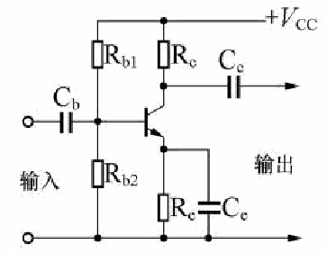
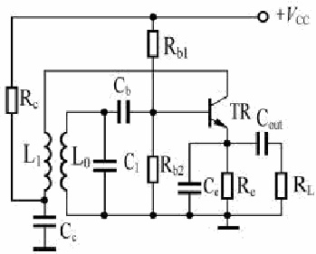
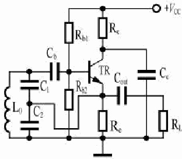

第1题：我国专门针对无线电管理的行政法规及其制定机构是：
- A: 《中华人民共和国无线电管理条例》
- B: 《中华人民共和国无线电管理办法》
- C: 国务院和中央军委
- D: 工业和信息化部
答案：AC
第2题：我国专门针对业余无线电台的管理文件及其制定机构分别是：
- A: 《业余无线电台管理办法》
- B: 《业余无线电台管理暂行规定》
- C: 工业和信息化部
- D: 国务院
答案：AC
第3题：我国依法负责对业余无线电台实施监督管理的机构是：
- A: 国家无线电管理机构和省、自治区、直辖市无线电管理机构
- B: 在国家或地方民政部门注册的业余无线电协会
- C: 国家体育管理机构和地方体育管理机构
- D: 国家和地方公安部门
答案：A
第4题：我国对无线电管理术语“业余业务”、“卫星业余业务”和“业余电台”做出具体定义的法规文
件是：
- A: 《中华人民共和国无线电频率划分规定》
- B: 《中华人民共和国无线电管理条例》
- C: 《中华人民共和国电信条例》
- D: 《无线电台执照管理规定》
答案：A
第5题：最新发布的《业余无线电台管理办法》自何时开始施行：
- A: 自2024年3月1日起施行
- B: 自2024年12月1日起施行
- C: 自2025年3月1日起施行
- D: 自2025年12月1日起施行
答案：A
第6题：将某个特定的频段列入频率划分表，规定该频段可在指定的条件下供一种或多种地面或
空间无线电通信业务或射电天文业务使用，这个过程称为：
答案：A
第7题：将无线电频率或频道规定由一个或多个部门，在指定的区域内供地面或空间无线电通信
业务在指定条件下使用，这个过程称为：
答案：A
第8题：将无线电频率或频道批准给无线电台在规定条件下使用，这个过程称为：
答案：A
第9题：在频率划分表中，一个频段被标明划分给多种业务时，这些业务被分为下述类别：
- A: 主要业务和次要业务
- B: 业余业务和非业余业务
- C: 民用业务和军用业务
- D: 安全业务和一般业务
答案：A
第10题：辐射（radiation）是指任何源的能量流以无线电波的形式向外发出。正确的说法是：
- A: 闪电产生的电磁波干扰是一种辐射
- B: 沿电源线窜入接收机的差模干扰是一种辐射
- C: 射频电路中变压器内磁芯里的磁场是一种辐射
- D: 射频电路中电容器内极板间的电场是一种辐射
答案：A
第11题：发射（emission）是指：由无线电发信电台产生的辐射或辐射产物。正确的说法是：
- A: 业余电台向周围发送的杂散产物是一种发射
- B: 无线电接收机本地振荡器辐射的能量是一种发射
- C: 医用高频电疗机向周围发送的无线电波能量是一种发射
- D: 闪电产生的电磁波干扰是一种发射
答案：A
第12题：下列关于无线电的一般术语，说法正确的是：
- A: 无线电测定是指利用无线电波的传播特性测定目标的位置、速度和/或其他特性，或获得
与这些参数有关的信息
- B: 无线电导航是指用于导航（包括障碍物告警）的无线电测定
- C: 无线电定位是指用于除无线电导航以外的无线电测定
- D: 无线电测向是指利用接收无线电波来确定一个电台或目标的方向的无线电测定
答案：ABCD
第13题：关于业余无线电台，下列说法正确的是：
- A: 业余无线电台是指为开展业余业务（含卫星业余业务）使用的一个或者多个发信机、收信
机，或者发信机与收信机的组合（包括附属设备）
- B: 一个业余无线电台只能包含一个发信机
- C: 一个业余无线电台只能包含一个收信机
- D: 一个业余无线电台只能包含一个发信机和一个收信机
答案：A
第14题：关于业余业务、卫星业余业务，下列说法正确的是：
- A: 业余业务是指供业余无线电爱好者进行自我训练、相互通信和技术研究的无线电通信业
务
- B: 卫星业余业务是指利用地球卫星上的空间电台开展与业余业务相同目的的无线电通信业
务
- C: 业余无线电爱好者可以在业余业务、卫星业余业务以及其他的无线电业务相互通信
- D: 业余无线电台可以在业余业务、卫星业余业务以及其他的无线电业务进行通信
答案：AB
第15题：关于业余无线电爱好者的定义，下列说法正确的是：
- A: 业余无线电爱好者系指经正式批准的、对无线电技术有兴趣的人
- B: 其兴趣纯系个人爱好而不涉及谋取利润
- C: 其兴趣纯系个人爱好可涉及谋取利润
- D: 只有成年人能成为业余无线电爱好者
答案：AB
第16题：关于发射类别，下列说法正确的是：
- A: 是指用标准符号标示的某发射的一组特性
- B: 标示的特性例如主载波调制方式，调制信号，被发送信息的类型以及其他适用的信号特性
- C: 一个业余无线电台只能包含一个收信机
- D: 一个业余无线电台只能包含一个发信机和一个收信机
答案：AB
第17题：关于单边带发射，下列说法正确的是：
- A: 单边带发射是只传送一个边带的调幅发射
- B: 单边带发射是只传送一个边带的调频发射
- C: 单边带发射是不传送载波的调幅发射
- D: 单边带发射是不传送载波的调频发射
答案：A
第18题：关于干扰的定义，下列说法正确的是：
- A: 由于一种或多种发射、辐射、感应或其组合所产生的无用能量对无线电通信系统的接收
产生的影响
- B: 表现为性能下降、误解或信息丢失
- C: 若不存在这种无用能量，则此后果可以避免
- D: 不会对无线电通信系统的接收产生的影响
答案：ABC
第19题：关于有害干扰的定义，下列说法正确的是：
- A: 危害无线电导航或其他安全业务的正常运行的干扰
- B: 严重地损害、阻碍、或一再阻断按规定正常开展的无线电通信业务的干扰
- C: 产生有害干扰不会受到处罚
- D: 使用业余无线电台时，只要不对其他业余无线电台产生干扰即可
答案：AB
第20题：关于次要业务台站，下列说法正确的是：
- A: 不得对业经指配或将来可能指配频率的主要业务电台产生有害干扰
- B: 不得对来自业经指配或将来可能指配频率的主要业务电台的有害干扰提出保护要求
- C: 可要求保护不受来自将来可能指配频率的同一业务或其他次要业务电台的有害干扰
- D: 使用业余无线电台时，只要不对其他业余无线电台产生干扰即可
答案：ABC
第21题：协调国际无线电管理的国际组织是：
- A: 国际电信联盟
- B: 国际业余无线电联盟
- C: 联合国大会
- D: 联合国科教文组织
答案：A
第22题：国际业余无线电联盟支持会员协会在发展业余无线电时把它看成一种：
- A: 国家资源
- B: 拉动经济的措施
- C: 休闲娱乐手段
- D: 国防后备队伍
答案：A
第23题：下述通信不属于电信（telecommunication）范畴：
- A: 邮政通信
- B: 有线通信
- C: 无线电通信
- D: 光通信
答案：A
第24题：关于无线电通信的正确说法：
- A: 无线电通信是指利用无线电波进行的符号、信号、文字、图像、声音或其他信息的传输、
发射或接收
- B: 无线电通信包括利用光在内的所有电磁波所进行的各种通信
- C: 利用无线电波进行的符号、信号、文字、图像、声音以外的信息传输不属于无线电通信
- D: 产生无线电波并用其加热属于无线电通信的一种应用
答案：A
第25题：关于地面无线电通信（terrestrial radio communication）的正确说法是：
- A: 航空通信属于地面无线电通信
- B: 水上通信不属于地面无线电通信
- C: 业余电台之间所进行的任何无线电通信都属于地面无线电通信
- D: 依靠电离层反射的天波所进行的通信不属于地面无线电通信
答案：A
第26题：无线电波是指：
- A: 频率为3,000GHz以下的在空间传播的电磁波
- B: 频率为3,000GHz以下的所有电磁波
- C: 频率为30Hz至30GHz的在空间传播的电磁波
- D: 频率为3,000Hz至3,000MHz的电磁波
答案：A
第27题：个人设置、使用业余无线电台应当向无线电管理机构提交的材料为：
- A: 一份申请表
- B: 身份证明复印件；申请人为未成年人的，还应当提交其监护人身份证明复印件，以及申请
人与监护人关系的说明材料
- C: 无线电发射设备相关说明材料
- D: 本人写的申请书，操作证书的原件、复印件
答案：ABC
第28题：单位设置、使用业余无线电台应当向无线电管理机构提交的材料为：
- A: 一份申请表
- B: 无线电发射设备相关说明材料
- C: 单位营业执照等复印件，以及业余无线电台技术负责人为本单位工作人员的说明材料
- D: 业余无线电台技术负责人写的申请书，操作证书的原件、复印件
答案：ABC
第29题：设置、使用业余无线电台，下列哪些条件符合规定：
- A: 使用的无线电发射设备依法取得型号核准
- B: 型号核准证载明的频率范围包含业余业务频段
- C: 使用的自制、改装、拼装等未取得型号核准的无线电发射设备符合国家标准和国家无线
电管理规定
- D: 使用的自制、改装、拼装等未取得型号核准的无线电发射设备的无线电发射频率范围仅
限于业余业务频段
答案：ABCD
第30题：设置、使用业余无线电台拟使用自制、改装、拼装等未取得型号核准的无线电发射设备
的，无线电管理机构开展对该设备进行技术检测时：
- A: 不得收取任何费用
- B: 收取技术检测费
- C: 根据业余无线电台类型进行收费
- D: 根据爱好者操作类别进行收费
答案：A
第31题：设置、使用15瓦以上短波业余无线电台以及涉及国家主权、安全的其他重要业余无线电
台的，下列说法正确的是：
- A: 由国家无线电管理机构作出许可决定
- B: 可以委托电台所在地或者申请人住所地的省、自治区、直辖市无线电管理机构对业余无线
电台的使用方式、技术条件、安装环境等进行现场核查
- C: 由省、自治区、直辖市无线电管理机构作出许可决定
- D: 持有A类业余无线电台操作技术能力验证证书即可申请
答案：AB
第32题：业余无线电台执照载明了哪些事项：
- A: 电台设置、使用人，操作技术能力类别、编号
- B: 电台呼号、台址/设置区域、使用频率、发射功率
- C: 执照编号、颁发日期、有效期、发证机关，以及特别规定事项
- D: 业余中继台、业余信标台执照还应当载明工作模式等事项
答案：ABCD
第33题：业余无线电台执照的有效期不超过：
答案：A
第34题：关于业余无线电台执照，下列说法正确的是：
- A: 业余无线电台执照可以采用纸质或者电子形式
- B: 纸质或者电子业余无线电台执照具有同等法律效力
- C: 执照样式由国家无线电管理机构统一规定
- D: 业余无线电台执照终身有效
答案：ABC
第35题：关于新版《业余无线电台管理办法》，下列说法正确的是：
- A: 新版《办法》施行前依法取得业余无线电台执照的，在执照有效期内可以按照执照载明的
参数使用业余无线电台
- B: 2012 年 11 月 5 日公布的《业余无线电台管理办法》（工业和信息化部令第 22 号）同时
废止
- C: 新版《办法》自2024年3月1日起施行
- D: 新版《办法》施行前依法取得业余无线电台执照的，在执照有效期内需按照新版《办法》
使用业余无线电台
答案：AB
第36题：独立操作具有发信功能业余无线电台的年龄条件是：
- A: 具备《业余无线电台操作证书》者操作业余无线电台不受年龄限制
- B: 年满十四周岁
- C: 年满十六周岁
- D: 年满十八周岁
答案：A
第37题：个人申请设置、使用具有发信功能的业余无线电台的年龄条件是：
- A: 未成年人可以申请设置、使用规定条件内的业余无线电台
- B: 年满十四周岁
- C: 年满十六周岁
- D: 年满十八周岁
答案：A
第38题：设置、使用有固定台址的业余无线电台，应当向哪个机构提出申请：
- A: 电台所在地的省、自治区、直辖市无线电管理机构
- B: 设台地的地方无线电民间机构
- C: 中国无线电协会
- D: 国家无线电管理机构
答案：A
第39题：设置、使用没有固定台址的业余无线电台，应当向哪个机构提出申请：
- A: 申请人住所地的省、自治区、直辖市无线电管理机构
- B: 申请人住所地的地方无线电民间机构
- C: 中国无线电协会
- D: 国家无线电管理机构
答案：A
第40题：设置、使用业余无线电台，设置业余无线电台应当具备的条件有：
- A: 熟悉无线电管理规定
- B: 具有相应的操作技术能力，通过相应的操作技术能力验证
- C: 使用的无线电发射设备依法取得型号核准，的自制、改装、拼装设备符合国家标准和国家
无线电管理规定
- D: 加入指定协会、具备当地无线电管理机构规定的操作技术能力
答案：ABC
第41题：业余无线电台执照有效期届满后需要继续使用的，应当在下列期限内向作出许可决定的
无线电管理机构申请更换业余无线电台执照：
- A: 期限届满30个工作日前
- B: 有效期届满半年之内
- C: 有效期届满两个月之内
- D: 有效期届满三个月之内
答案：A
第42题：变更业余无线电台执照载明事项的，应当办理下列手续：
- A: 及时向作出许可决定的无线电管理机构申请办理变更手续
- B: 等执照有效期届满时向核发执照的无线电管理机构申请办理变更手续，换发业余无线电
台执照
- C: 只要设备型号和产品序列号没有改变，不必申请办理变更手续
- D: 只需向核发执照的无线电管理机构进行备案
答案：A
第43题：终止使用业余无线电台的，应向下列哪个机构办理业余无线电台执照注销手续：
- A: 作出许可决定的无线电管理机构
- B: 国家无线电管理机构
- C: 中国无线电协会
- D: 地方无线电管理机构所委托的其他单位
答案：A
第44题：关于终止使用业余无线电台的，下列说法正确的是：
- A: 应当及时向作出许可决定的无线电管理机构办理业余无线电台执照注销手续
- B: 交回执照并自执照注销之日起60个工作日内拆除业余无线电台及天线等附属设备并妥善
处理
- C: 交回执照并自执照注销之日起6个月内拆除业余无线电台及天线等附属设备并妥善处理
- D: 只需交回执照
答案：AB
第45题：下列哪些业余无线电台由国家无线电管理机构许可：
- A: 设置、使用15瓦以上的HF业余无线电台
- B: 涉及国家主权、安全的其他重要无线电台
- C: 设置、使用15瓦以上的MF业余无线电台
- D: 设置、使用15瓦以上的LF业余无线电台
答案：AB
第46题：下列哪些申请设置、使用业余无线电台应向国家无线电管理机构提交：
- A: 15瓦以上短波业余无线电台
- B: 涉及国家主权、安全的其他重要业余无线电台
- C: 业余中继台
- D: 业余信标台
答案：AB
第47题：关于业余中继台的说法下列错误的是：
- A: 通过对业余无线电信号接收和放大转发，扩大通联范围的业余无线电台
- B: 通过发射信标信号，辅助验证电波传播条件的单发业余无线电台
- C: 通过对业余无线电信号接收和衰减转发，缩小通联范围的业余无线电台
- D: 通过接收信标信号，辅助验证电波传播条件的单发业余无线电台
答案：BCD
第48题：关于业余信标台的说法下列错误的是：
- A: 通过发射信标信号，辅助验证电波传播条件的单发业余无线电台
- B: 通过接收信标信号，辅助验证电波传播条件的单发业余无线电台
- C: 通过对业余无线电信号接收和放大转发，扩大通联范围的业余无线电台
- D: 通过对业余无线电信号接收和衰减转发，缩小通联范围的业余无线电台
答案：BCD
第49题：关于业余中继台哪下列哪些选项正确：
- A: 向其覆盖区域内的业余无线电台提供平等的服务
- B: 台址布局应当符合资源共享、集约的要求
- C: 仅设置申请人的团队成员优先使用，空闲时方供其他业余电台使用
- D: 因中继台购买和维护需要成本，要求业余电台必须付费使用中继台
答案：AB
第50题：关于设置业余中继台下列说法正确的是：
- A: 台址布局应当符合资源共享、集约的要求
- B: 应当向其覆盖区域内的业余无线电台提供平等的服务
- C: 明确设台地点、使用频率、技术参数等设置、使用和运行维护要求并向社会公布
- D: 业余中继台服务区域超出本行政区域的，应当与地方无线电管理机构做好协调
答案：ABCD
第51题：业余中继台的设置和技术参数等应满足下列关键条件：
- A: 符合国家以及设台地的地方无线电管理机构的规定
- B: 符合设台地的地方业余无线电民间组织的规划
- C: 仅需符合设台地的地方无线电管理机构的规划及相关规定
- D: 符合申请人关于设置中继台的客观需求和技术考虑
答案：A
第52题：可以组织A类和B类业余无线电台操作技术能力验证的机构是：
- A: 国家无线电管理机构和省、自治区、直辖市无线电管理机构
- B: 省、自治区、直辖市无线电管理机构
- C: 地方教育、体育机构及其相关民间组织
- D: 地方业余无线电协会
答案：A
第53题：负责组织C类业余无线电台操作技术能力验证的机构是：
- A: 国家无线电管理机构
- B: 省、自治区、直辖市无线电管理机构
- C: 国家无线电管理机构和省、自治区、直辖市无线电管理机构
- D: 地方业余无线电协会
答案：A
第54题：参加业余无线电台操作技术能力验证时，下列说法正确的是：
- A: 不向参加验证的人员收取考试费用
- B: 收取验证考试费
- C: 根据爱好者操作类别进行收费
- D: 根据业余无线电台类型进行收费
答案：A
第55题：各类业余无线电台操作技术能力证明文件是：
- A: 无线电管理机构颁发的“业余无线电台操作技术能力验证证书”
- B: 中国无线电运动协会颁发的“业余无线电台操作证书”
- C: 地方无线电协会或者其他业余无线电民间组织颁发的“业余无线电台操作证书”
- D: 地方无线电协会或者其他业余无线电民间组织出具的盖有公章的证明信件
答案：A
第56题：国家无线电管理机构及其委托的机构可以组织实施如下类别的业余无线电台操作技术能
力验证：
- A: A类业余无线电台操作技术能力验证
- B: B类业余无线电台操作技术能力验证
- C: C类业余无线电台操作技术能力验证
- D: 一级个人业余电台操作证书
答案：ABC
第57题：业余无线电台操作技术能力分为哪几类：
答案：ABC
第58题：不同类别业余无线电台的主要区别在于：
- A: 允许工作的频率范围
- B: 允许发射的最大发射功率
- C: 所用业余无线电台设备的功能
- D: 所用业余无线电台的天线高度和长度
答案：AB
第60题：A类业余无线电台允许工作的频率范围和最大发射功率为：
- A: 30-3000MHz频段，不大于25瓦
- B: 各VHF和UHF频段，不大于25瓦
- C: 各业余业务和卫星业余业务频段，不大于15瓦
- D: 各VHF和UHF频段，不大于15瓦
答案：A
第62题：取得 B 类业余无线电台操作技术能力验证证书的，可以申请设置、使用业余无线电台的
工作频段和最大发射功率为：
- A: 30MHz以下频段小于15瓦，或30MHz以上频段不大于25瓦
- B: 30MHz以下频段不大于100瓦，或30MHz以上频段不大于25瓦
- C: 30MHz以下频段不大于25瓦，或30MHz以上频段小于15瓦
- D: 30MHz以下频段不大于25瓦，或30MHz以上频段不大于100瓦
答案：A
第64题：取得C 类业余无线电台操作技术能力验证证书的，可以申请设置、使用业余无线电台的
工作频段和最大发射功率为：
- A: 30MHz以下频段不大于1000瓦，或30MHz以上频段不大于25瓦
- B: 30MHz以下频段不大于100瓦，或30MHz以上频段不大于25瓦
- C: 30MHz以下频段不大于25瓦，或30MHz以上频段不大于15瓦
- D: 30MHz以下频段不大于25瓦，或30MHz以上频段不大于1000瓦
答案：A
第65题：参加A类业余无线电台操作技术能力验证应当符合下列哪些要求：
- A: 应当熟悉无线电管理规定
- B: 具有一定的业余无线电台操作技术能力
- C: 应当年满18周岁
- D: 应当年满16周岁
答案：AB
第66题：参加B类业余无线电台操作技术能力验证应当符合下列哪些要求：
- A: 应当依法取得业余无线电台执照6个月以上
- B: 具有相应的实际操作经验
- C: 应当年满18周岁
- D: 应当年满16周岁
答案：AB
第67题：参加C类业余无线电台操作技术能力验证应当符合下列哪些要求：
- A: 应当依法取得载明30MHz以下频段的业余无线电台执照18个月以上
- B: 具有相应的实际操作经验
- C: 应当依法取得载明30MHz以下频段的业余无线电台执照6个月以上
- D: 应当依法取得载明30MHz以下频段的业余无线电台执照12个月以上
答案：AB
第68题：取得A 类业余无线电台操作技术能力验证证书的，可以申请设置、使用如下业余无线电
台:
- A: 设置、使用最大发射功率不大于25瓦VHF频段业余无线电台
- B: 设置、使用最大发射功率不大于25瓦UHF频段业余无线电台
- C: 设置、使用最大发射功率不大于25瓦HF频段业余无线电台
- D: 设置、使用最大发射功率不大于15瓦HF频段业余无线电台
答案：AB
第69题：取得 B 类业余无线电台操作技术能力验证证书的，可以申请设置、使用如下业余无线电
台:
- A: 设置、使用最大发射功率不大于25瓦VHF频段业余无线电台
- B: 设置、使用最大发射功率不大于25瓦UHF频段业余无线电台
- C: 设置、使用最大发射功率小于15瓦HF频段业余无线电台
- D: 设置、使用最大发射功率小于15瓦LF频段业余无线电台
答案：ABCD
第70题：取得C 类业余无线电台操作技术能力验证证书的，可以申请设置、使用如下业余无线电
台:
- A: 设置、使用最大发射功率不大于25瓦VHF频段业余无线电台
- B: 设置、使用最大发射功率不大于25瓦UHF频段业余无线电台
- C: 设置、使用最大发射功率不大于1000瓦HF频段业余无线电台
- D: 因开展特殊技术试验、通联等活动确需设置、使用大于25瓦VHF频段业余无线电台
答案：ABCD
第71题：关于开展特殊技术试验、通联等活动，下列说法正确的是：
- A: 开展特殊技术试验、通联等活动，确需超出业余无线电台执照载明的功率限值使用业余
无线电台的，需经颁发业余无线电台执照的无线电管理机构批准
- B: 取得 C 类业余无线电台操作技术能力验证证书且取得业余无线电台执照的人员，经批准
可临时在限定条件下开展电台操作
- C: 取得 B 类业余无线电台操作技术能力验证证书且取得业余无线电台执照的人员，经批准
可临时在限定条件下开展电台操作
- D: 取得 A 类业余无线电台操作技术能力验证证书且取得业余无线电台执照的人员，经批准
可临时在限定条件下开展电台操作
答案：AB
第72题：关于未成年人设置、使用业余无线电台，下列哪些选项为正确：
- A: 持有A类验证证书的可以设置最大发射功率不大于25瓦VHF频段业余无线电台
- B: 持有B类验证证书的可以设置最大发射功率不大于25瓦VHF频段业余无线电台
- C: 持有A类验证证书的可以设置最大发射功率不大于15瓦HF频段业余无线电台
- D: 持有B类验证证书的可以设置最大发射功率不大于15瓦HF频段业余无线电台
答案：AB
第73题：关于业余无线电台操作技术能力验证，下列哪些选项为正确：
- A: 业余无线电台操作技术能力验证题库以及验证标准由国家无线电管理机构制定
- B: 无线电管理机构或者其委托的机构组织将提前向社会公布验证时间、验证要求等有关事
项
- C: 参加业余无线电台操作技术能力验证成绩合格的，由无线电管理机构颁发业余无线电台
操作技术能力验证证书
- D: 不得向参加验证的人员收取费用
答案：ABCD
第74题：关于新版《办法》施行前，依法取得 B 类业余无线电台操作技术能力验证证书的，下列
哪些选项为正确：
- A: 可以按照规定的许可权限申请设置、使用工作在30MHz以下频段且最大发射功率不大于
100瓦
- B: 可以按照规定的许可权限申请设置、使用工作在30MHz以上频段且最大发射功率不大于
25瓦的业余无线电台
- C: 应按照新版《办法》中B类业余无线电台操作技术能力验证规定的范围设置、使用电台
- D: 新版《办法》施行前取得的B类业余无线电台操作技术能力验证证书不再有效
答案：AB
第75题：《业余无线电台管理办法》规定正确使用业余无线电台呼号的方法是：
- A: 使用业余无线电台的单位或者个人应当在每次通信建立及结束时发送本业余无线电台呼
号
- B: 在通信过程中不定期（间隔不超过10分钟）发送本业余无线电台呼号
- C: 鼓励业余无线电台在通联期间通过技术手段自动发送电台呼号
- D: 使用业余无线电台的单位或者个人在通信中可以用姓名、代号、适当的别名或者法规定
呼号的部分数字和字母代替完整的业余电台呼号作为电台的标识
答案：ABC
第76题：业余无线电台呼号的核发流程是：
- A: 无线电管理机构颁发业余无线电台执照，应当同时向申请人核发业余无线电台呼号
- B: 在向无线电管理机构委托的受理服务机构提交设台申请窗口后，由服务机构核发呼号
- C: 无线电管理机构核发业余无线电台执照后，由申请人再向其申请核发呼号
- D: 业余无线电台设台人在提交设台申请的同时提出所要求指配的呼号，经服务机构同意后，
报无线电管理机构正式核发
答案：A
第77题：无线电管理机构颁发业余无线电台执照时，若申请人已取得业余中继台、业余信标台呼
号以外的其他业余无线电台呼号，无线电管理机构将：
- A: 无线电管理机构不再核发新的业余无线电台呼号
- B: 由申请人再向其申请核发呼号，无线电管理机构将核发新的业余无线电台呼号
- C: 无线电管理机构向其更换业余无线电台呼号
- D: 业余无线电台设台人在提交设台申请的同时提出所要求指配的呼号，经服务机构同意后，
报无线电管理机构正式核发
答案：A
第78题：业余无线电台呼号停止使用的，下列说法正确的是：
- A: 业余无线电台呼号停止使用的，应当依法予以注销
- B: 除业余中继台、业余信标台呼号外，其他业余无线电台呼号注销1年后，无线电管理机构
可以将相关电台呼号重新投入分配
- C: 业余无线电台呼号停止使用的，不用申请注销
- D: 除业余中继台、业余信标台呼号外，其他业余无线电台呼号注销后，无线电管理机构可
立即将相关电台呼号重新投入分配
答案：AB
第79题：注销的电台呼号重新投入分配前，申请人再次申请设置、使用业余无线电台，下列说法
正确的是：
- A: 无线电管理机构经审查决定颁发业余无线电台执照的，应当同时核发申请人已注销的电
台呼号
- B: 无线电管理机构经审查决定颁发业余无线电台执照的，应当同时核发新的的电台呼号
- C: 电台呼号注销后，将不再向申请人核发电台呼号
- D: 电台呼号注销后，申请人不能再次申请设置、使用业余无线电台
答案：A
第80题：在他人依法设置的业余无线电台上进行发射操作的，下列说法正确的是：
- A: 应当使用所操作业余无线电台的呼号或者实际操作人员取得的呼号
- B: 使用实际操作人员取得的呼号的，业余无线电台通联期间发送呼号的格式应当符合国内
国际相关要求
- C: 不可在他人依法设置的业余无线电台上进行发射操作
- D: 业余无线电爱好者只能在自己设置的业余无线电台上进行发射操作
答案：AB
第81题：满足下列哪些条件，可以临时使用其他业余无线电台呼号？
- A: 参加或者举办业余无线电通联比赛以及其他重大业余无线电活动
- B: 经比赛（活动）主办方（牵头单位）报国家无线电管理机构批准
- C: 其他业余无线电台呼号符合国际规则
- D: 何时何地都不能临时使用其他业余无线电台呼号
答案：ABC
第82题：关于业余无线电台呼号，下列说法正确的是：
- A: 呼号第一部分为呼号前缀
- B: 呼号第二部分为电台种类
- C: 呼号第三部分为分区编号
- D: 呼号第四部分为呼号后缀
答案：ABCD
第83题：关于业余无线电台呼号前缀，下列说法正确的是：
- A: 呼号前缀（呼号第一部分）由一位字母组成
- B: 为国际电信联盟分配的呼号前缀字母B
- C: 为国际电信联盟分配的呼号前缀字母BA
- D: 为国际电信联盟分配的呼号前缀字母A
答案：AB
第84题：关于电台种类（呼号第二部分），下列说法正确的是：
- A: 字母G、H、I、D、A、B、C、E、F、K、L用于一般业余无线电台呼号
- B: 字母J用于空间业余无线电台呼号
- C: 字母R用于业余中继台和业余信标台呼号
- D: 字母S、T、Y、Z以及其他字母序列的业余无线电台呼号由国家无线电管理机构保留
答案：ABCD
第85题：关于分区编号（呼号第三部分），下列说法正确的是：
- A: 由一位数字组成
- B: 用于表示业余无线电台分区号
- C: 空间业余无线电台分区号为1
- D: 空间业余无线电台分区号为2
答案：ABC
第86题：关于呼号后缀（呼号第四部分），下列说法正确的是：
- A: 由1～4位的字母或者字母和数字的组合组成
- B: 1位、4位呼号后缀，以及带有数字的呼号后缀由国家无线电管理机构保留
- C: QOA～QUZ 及 SOS、XXX、TTT 等可能与遇险信号或类似性质的其他信号混淆的字母组
合不用作呼号后缀
- D: 呼号后缀由1～4位数字组成
答案：ABC
第87题：各省、自治区、直辖市无线电管理机构核发一般业余无线电台呼号时，下列说法正确的
是：
- A: 呼号第二部分按照G、H、I、D、A、B、C、E、F、K、L顺序
- B: 第四部分按照双字母、三字母组合顺序依次编制并核发业余无线电台呼号
- C: 各省、自治区、直辖市无线电管理机构核发的业余无线电台呼号前缀都相同
- D: 各省、自治区、直辖市无线电管理机构核发的业余无线电台呼号的分区号都相同
答案：ABC
第88题：业余无线电爱好者对已核发给自己的电台呼号不满意，是否可以申请另行核发业余无线
电台呼号？
- A: 不可以。颁发业余无线电台执照的无线电管理机构已经为申请人核发业余无线电台呼号
的，不另行核发其他业余无线电台呼号
- B: 更新所设置的业余无线电台类别时可以申请另行核发业余无线电台呼号
- C: 可以申请另行核发业余无线电台呼号，但须缴纳额外的费用
- D: 业余无线电台执照有效期届满、设台人向核发执照的无线电管理机构申请办理延续手续
时可以申请另行核发业余无线电台呼号
答案：A
第89题：各地业余无线电台呼号前缀字母和后缀字符的可用范围的确定方法是：
- A: 由国家无线电管理机构编制和分配
- B: 地方无线电管理机构根据当地呼号资源的使用情况自行分配
- C: 地方无线电民间组织提出建议，当地无线电管理机构批准
- D: 由业余无线电爱好者根据需求提出建议，当地无线电管理机构批准
答案：A
第90题：关于使用业余无线电台呼号正确的是：
- A: 应当在每次通信建立时主动发送（报出）本台业余无线电台呼号
- B: 应当在每次通信结束时主动发送（报出）本台业余无线电台呼号
- C: 应当在每次通信过程中每十分钟发送（报出）本台业余无线电台呼号
- D: 应当在每次通信过程中主动发送（报出）自造的呼号作为本台业余无线电台呼号的补充
答案：ABC
第91题：业余无线电台呼号由下列哪些部分组成：
- A: 呼号前缀
- B: 电台种类
- C: 分区编号
- D: 呼号后缀
答案：ABCD
第92题：《业余无线电台管理办法》要求业余电台在建立和结束通信时主动发送本台呼号。允许
使用呼号的一部分（比如后缀）替代完整呼号的情况包括：
- A: 在任何情况下都必须使用完整的呼号
- B: 联络相识的友台时可将呼号的后缀用作电台标识
- C: 在VHF/UHF等本地频段建立通信时可将呼号的后缀用作电台标识
- D: 在HF频段联络国内电台时可将呼号的后缀用作电台标识，但是DX联络不可以
答案：A
第93题：在业余无线电通联中，是否可将本台或对方电台呼号之中的地区码加后缀视作《业余无
线电台管理办法》中的“电台呼号”？
- A: 不可以。这是对呼号的不完整表述。其不具标识意义，不能视作电台呼号
- B: 与熟悉的友台通联就可以使用这种不完整呼号。这就如同将对方称为OM
- C: 在VHF/UHF等频段进行通联可以使用这种不完整呼号。这会增加亲切感
- D: 在HF进行国内通联可以使用这种不完整呼号。但是如遇DX电台则不可以
答案：A
第94题：关于我国业余无线电台分区号，业余分区号为1的省（自治区、直辖市）为：
答案：A
第95题：关于我国业余无线电台分区号，业余分区号为2的省（自治区、直辖市）为：
答案：ABC
第96题：关于我国业余无线电台分区号，业余分区号为3的省（自治区、直辖市）为：
答案：ABCD
第97题：关于我国业余无线电台分区号，业余分区号为4的省（自治区、直辖市）为：
答案：ABC
第98题：关于我国业余无线电台分区号，业余分区号为5的省（自治区、直辖市）为：
答案：ABC
第99题：关于我国业余无线电台分区号，业余分区号为6的省（自治区、直辖市）为：
答案：ABC
第100题：关于我国业余无线电台分区号，业余分区号为7的省（自治区、直辖市）为：
答案：ABCD
第101题：关于我国业余无线电台分区号，业余分区号为8的省（自治区、直辖市）为：
答案：ABCD
第102题：关于我国业余无线电台分区号，业余分区号为9的省（自治区、直辖市）为：
答案：ABCD
第103题：关于我国业余无线电台分区号，业余分区号为0的省（自治区、直辖市）为：
答案：AB
第104题：以下呼号前缀中，所属CQ分区与埃及相同的是：
答案：A
第105题：3V、4X、5A和6Y字头分别代表国家：
- A: Tunis、Israel、Libya、Jamaica
- B: Guinea、Israel、Fiji Islands、Senegal
- C: Libya、Israel、Jamaica、Guinea
- D: Jamaica、Israel、Libya、Senegal
答案：A
第106题：我国的NCDXF/IARU信标台呼号是：
- A: VR2B
- B: BS7H
- C: B0CRA
- D: 4U1UN
答案：A
第107题：下列哪些呼号前缀不属于空间业余无线电台：
- A: BY1
- B: BR1
- C: BS1
- D: BJ1
答案：ABC
第108题：合法设置、使用业余电台的必要步骤是：
- A: 按照《业余无线电台管理办法》的规定向无线电管理机构提出申请，取得业余无线电台执
照
- B: 加入指定的业余无线电民间组织，并按其章程规定的办法办理申请手续
- C: 经过业余无线电协会或无线电运动协会同意
- D: 经过所在单位或居委会批准
答案：A
第109题：业余无线电台的法定用途为：
- A: 用于相互通信、技术研究和自我训练
- B: 供公民在业余时间进行与个人生活事务有关的通信
- C: 供公民在业余时间进行休闲娱乐
- D: 供私家车主或者相应组织作为行车安全保障和途中消遣工具
答案：A
第110题：申请设置使用配备有多台业余无线电发射设备的业余无线电台，应该：
- A: 视为一个业余电台，指配一个电台呼号，但所有设备均应经过核定并将参数载入电台执
照
- B: 视为一个业余电台，指配一个电台呼号，其中只需有一台设备加以核定并将参数载入电台
执照
- C: 每台设备视为一个业余电台，各指配一个电台呼号，并都应经过核定并将参数载入电台
执照
- D: 视为一个业余电台，指配一个电台呼号，每个频段选择一台设备加以核定并将参数载入
电台执照
答案：A
第111题：业余中继台必备的技术措施为：
- A: 设专人负责监控和管理工作，配备有效的遥控手段，保证造成有害干扰时及时停止发射
- B: 技术加密措施，防止未经设台人允许的业余无线电台启用中继
- C: 尽量提高发射功率，以便压制覆盖区内的其他强信号干扰
- D: 设热备份系统，保证不间断工作
答案：A
第112题：某团体依法设置了一部业余中继台。其正确做法是：
- A: 向其覆盖区域内的所有业余无线电台提供平等的服务，并将使用业余中继台所需的各项
技术参数公开
- B: 中继台是设台者出资建设和维护的，因此仅供经设置者允许的业余电台使用
- C: 中继台是设台者出资建设和维护的，因此仅供本团体成员优先使用，空闲时方供其他业
余电台使用
- D: 为保证中继台正常运行，要求覆盖区内所有业余电台缴纳维护成本，否则不准使用
答案：A
第113题：选择144MHz或430MHz业余模拟调频中继台同频段收发频差的原则是：
- A: 采用业余无线电标准频差，即144MHz频段600kHz，430MHz频段5MHz
- B: 尽量采用非标准频差以阻止一般业余无线电台占用
- C: 采用经常变换频差的办法减少占用度
- D: 可以在国家《无线电频率划分规定》所规定业余频率范围内任意选择
答案：A
第114题：业余无线电台使用的无线电发射设备必须符合下列条件：
- A: 商品设备应依法取得型号核准，型号核准证载明的频率范围包含业余业务频段
- B: 自制、改装、拼装设备应符合国家标准和国家无线电管理规定，且无线电发射频率范围仅
限于业余业务频段
- C: 自制、改装、拼装设备不受限制
- D: 国外商品设备符合国际流行技术标准即可
答案：AB
第115题：“我不是业余无线电爱好者，申请设置业余电台只是为了行车方便，不需要遵守业余无线
电的规范”。这种说法：
- A: 是错误的，也是不具备“熟悉无线电管理规定”设台条件的表现
- B: 有一定道理，既然行车通信有需求，法规管理应该迎合个人需求
- C: 有一定道理，只要是遵守规定，业余电台也可以为非业余无线电爱好者所用
- D: 很难说对错，业余电台的定义可以因人而异
答案：A
第116题：某业余电台操作者听到业余专用频率上出现某种显然出自非业余电台的人为干扰发射，
于是按下话筒向该发射者宣传无线电管理法规知识。对这种做法的评论应该是：
- A: 错误；违反“业余无线电台只能用于相互通信、技术研究和自我训练”规定
- B: 正确；但有干扰，不予提倡
- C: 正确；抓机遇宣传法规，应该提倡
- D: 正确；但需注意态度耐心、用语文明
答案：A
第117题：在业余无线电台中转发广播电台、互联网聊天、电话通话、其他电台的联络信号，这类
行为的性质是：
- A: 错误行为；违反“业余无线电台只能用于相互通信、技术研究和自我训练”规定，因为通信
中产生信息的一方不是业余无线电台
- B: 正确行为；既然可以联络，不必要限制向话筒送什么内容
- C: 如果转发的目的是进行技术调试、用转发信号作为测试信号的话，就是正常行为
- D: 不算错误但也不值得提倡
答案：A
第118题：业余电台在通信中为其他人或者单位、组织转达信息。对这种做法的评论应该是：
- A: 违法行为；违反“业余无线电台只能用于相互通信、技术研究和自我训练”的规定
- B: 只要所转达的信息在内容上不违反《业余电台管理法规》的禁止规定就是合法行为
- C: 只要转达信息是无偿的，就是合法行为
- D: 只要所转达的信息是有利于社会的公益信息，就是合法行为
答案：A
第119题：某业余无线电协会在发射操作中向其会员播发公益性通知和技术训练讲座，但未得到相
应无线电管理机构的批准。对这种做法的评论应该是：
- A: 违法行为；违反“未经批准，业余无线电台不得以任何方式进行广播或者发射通播性质的
信号”的规定
- B: 只要所播发的通知或讲座有利于当地业余无线电爱好者技术水平的提高，不能算违法行
为
- C: 只要所播发的通知或讲座有利于当地业余无线电应急通信训练，不能算违法行为
- D: 只要所播发的通知或讲座是涉及宣传业余电台管理知识的，不能算违法行为
答案：A
第120题：关于业余无线电台在通信过程中使用的语言，正确的做法为：
- A: 任何时候都应当使用明语或者业余无线电领域公认的缩略语、简语
- B: 可以使用虽然不是所有火腿通用、但在某些火腿圈子内部有一定可懂度的新编缩略语或
暗语
- C: 语言要创新，可以使用自创的特殊缩略语，虽开始时象是暗语，用多了就会变明语
- D: 可提倡使用稀有语言或方言，尽量使特定通信对象以外的业余无线电台听不懂，以减少
他台呼叫和插入的机会
答案：A
第121题：具备国家无线电管理机构规定的操作技术能力并具有法律规定有效证明文件、但还没有
获准设置自己的业余电台的人是否可以到业余电台进行发射操作？答案是：
- A: 可以。使用所操作业余电台的呼号，由该业余电台的设台人对操作不妥而造成的有害干
扰负责
- B: 可以。因为自己没有呼号，只能在通信中使用临时自编的呼号，或用姓名代替呼号
- C: 不可以
- D: 青少年可以，成人不可以
答案：A
第122题：未取得相应业余无线电台执照或者相应操作技术能力的人员，为提高业余无线电台操作
技术能力的需要，可以在他人依法设置的业余无线电台上进行发射操作实习。应遵守的条件
是什么？
- A: 发射操作实习应当由业余无线电台设置、使用人或者其技术负责人现场监督指导
- B: 使用的频率范围和发射功率应当在 B 类业余无线电台操作技术能力验证证书确定的范围
内
- C: 使用的频率范围和发射功率不得超过现场监督指导人员依法取得的业余无线电台操作技
术能力验证证书确定的范围
- D: 尚未取得关于具备操作技术能力有效证明文件的人任何情况下都不可以进行发射操作
答案：ABC
第123题：业余无线电台设置人应对其无线电发射设备担负的法定责任为：
- A: 应当确保其无线电发射设备处于正常工作状态，避免对其他无线电业务造成有害干扰
- B: 应当确保其无线电发射设备随最先进型号更新，为其他业余电台树立求新的榜样
- C: 应当确保其无线电发射设备达到最大发射功率，以克服其他无线电业务的干扰
- D: 应当确保其无线电发射设备经常处于工作状态，以提高业余频率的实际占用度
答案：A
第124题：业余无线电爱好者使用业余无线电收信设备应遵守的规定为：
- A: 不得接收与业余业务和卫星业余业务无关的信号
- B: 只要不造成对其他业务的无线电干扰，接收无线电信号没有限制
- C: 只要不被查出来，可以接收任何无线电信号
- D: 只要出于个人对信息的兴趣而不涉及赢利，可以接收任何无线电信号
答案：A
第125题：业余无线电爱好者无意接收到非业余业务和卫星业余业务的信息时，应遵守的规则为：
- A: 不得传播、公布
- B: 只可以在业余无线电台间共享，不得在其他场合公开
- C: 只可以用非无线电方式在业余无线电爱好者之间交流，不得以无线电方式转发
- D: 既然自己可以收到，别人也一定可以收到，当然可以传播、公布或者利用
答案：A
第126题：业余无线电台是否可以发射从广播电台收到的信号、音像节目的录音，或者故意转送电
台周围的声音？
- A: 不可以，不得发送与业余业务和卫星业余业务无关的信号
- B: 可以，因为该类信息没有保密性
- C: 可以，用于显示自己发射设备的信号质量
- D: 可以，用于提起其他有业余无线电台操作员精神，防止乏困
答案：A
第127题：国家对于利用业余无线电台从事发布、传播违反法律或者公共道德的信息的行为的态度
是：
- A: 禁止
- B: 不提倡
- C: 容忍
- D: 不可以发布传播违法信息。但违反公共道德的信息属于道德问题，不鼓励就是了
答案：A
第128题：出租车安装业余电台并用来传递有关载客的信息，这种行为的性质是：
- A: 违法行为，违反了严禁利用业余无线电台谋取商业利益的规定
- B: 不太好，因为占用了其他业余电台通信的频率
- C: 只要不影响其他业余电台的正常通信就可以
- D: 只要管理部门不来查处就可以
答案：A
第129题：利用业余无线电台通信来促销业余无线电产品或者推动与业余无线电活动有关的其他商
业性活动，对这类行为的态度应该是：
- A: 禁止
- B: 不提倡但也不禁止，毕竟有利于业余无线电活动发展
- C: 只要是业余无线电民间组织是获利方，即使从事商业或其他营利活动，应支持
- D: 如果设台人或者设台单位本身是以这类经营为生的，应适当理解和容忍
答案：A
第130题：利用自己的业余电台强信号故意压制其他业余电台的正常通信，或者在业余无线电频率
上转播音乐或广播节目，这些行为的性质属于：
- A: 违法行为，违反了严禁阻碍其他无线电台通信的规定
- B: 不妥行为，没有考虑到他人的乐趣
- C: 正常现象，社会上一些人素质就是如此，应该谅解
- D: 不文明行为，对其他业余电台不够礼貌
答案：A
第131题：业余无线电活动是否有序开展，会影响整个社会的无线电通信的安全和有效，使用不当
甚至会导致生命财产损失。业余无线电爱好者在这方的责任是：
- A: 业余无线电台设置、使用人应当加强自律
- B: 个人没有责任，只能依靠管理部门的监督检查和违法查处
- C: 个人没有责任，只能依靠业余无线电民间组织充当“协管”
- D: 有了电台执照，日常一切言行当然可以带到电台通信中，无责任可言
答案：A
第132题：业余无线电台可用于下列用途：
- A: 相互通信、技术研究和自我训练
- B: 救灾抢险、车队联络和广播通信
- C: 娱乐休闲、报告路况和公益服务
- D: 技术教学、民兵训练和公益服务
答案：A
第133题：符合业余无线电爱好者基本条件的人群是：
- A: 对无线电技术有兴趣并经无线电管理机构批准设置使用业余无线电台的人
- B: 任何对无线电技术有兴趣的公民
- C: 对无线电技术有兴趣并加入业余无线电协会的人
- D: 拥有较高无线电技术水平并加入业余无线电协会的人
答案：A
第134题：业余无线电台禁止从事下列活动：
- A: 在我国境内进行电波参数测试或者电波监测
- B: 向境外组织或者个人提供涉及国家安全的境内电波参数资料
- C: 故意收发无线电台执照许可事项之外的无线电信号
- D: 传播、公布或者利用无意接收的信息
答案：ABCD
第135题：业余无线电台应当遵守下列哪些规定：
- A: 在业余业务或者卫星业余业务频段内收发信号
- B: 不得擅自使用无线电频率
- C: 不得对依法开展的无线电业务造成有害干扰
- D: 不得利用无线电台(站)进行违法犯罪活动
答案：ABCD
第136题：以下哪些使用业余无线电台的行为超越了在业余业务频率范围内收发信号的规定：
- A: 利用业余无线电台收听民用航空器电台通联
- B: 利用业余无线电台收听铁路机车电台通联
- C: 利用业余无线电台收听渔船海事电台通联
- D: 利用业余无线电台收听国际空间站业余无线电台
答案：ABC
第137题：下列哪些未取得型号核准的无线电发射设备不可以作为自制、改装、拼装的业余无线电
台设置、使用：
- A: 相关企业批量生产的未取得型号核准证的无线电发射设备
- B: 已取得型号核准证，但型号核准证载明的频率范围不含业余业务的无线电发射设备
- C: 已取得型号核准证，但自行更换设备操作软件将频率范围扩展到业余业务频段的无线电
发射设备
- D: 依法改装的取得型号核准证载明的频率范围包含业余业务频段的无线电发射设备
答案：ABC
第138题：使用业余无线电台不得从事下列活动:
- A: 发布、传播法律、行政法规禁止发布、传播的信息
- B: 用于谋取商业利益等超出业余无线电台使用属性之外的目的
- C: 故意干扰、阻碍其他无线电台（站）通信
- D: 故意收发业余无线电台执照载明事项之外的无线电信号
答案：ABCD
第139题：使用业余无线电台不得从事下列活动:
- A: 传播、公布或者利用无意接收的信息
- B: 擅自编制、使用业余无线电台呼号
- C: 涂改、倒卖、出租或者出借业余无线电台执照
- D: 向境外组织或者个人提供涉及国家安全的境内电波参数资料
答案：ABCD
第140题：使用业余无线电台应当符合如下规定：
- A: 定期维护业余无线电台
- B: 保证其性能指标符合国家标准
- C: 保证其性能指标符合国家无线电管理的有关规定
- D: 避免对其他依法设置、使用的无线电台（站）产生有害干扰
答案：ABCD
第141题：关于业余无线电台在通信过程中使用的语言，正确的做法为:
- A: 在通信过程中使用明语
- B: 在通信过程中使用业余无线电领域公认的缩略语、简语
- C: 在通信过程中使用公开的技术体制和通信协议
- D: 在通信过程中使用自创的特殊缩略语
答案：ABC
第142题：关于业余无线电台的应急通信，正确的叙述是：
- A: 在突发重大自然灾害等紧急情况下，业余无线电台才可以和非业余无线电台进行规定内
容的通信
- B: 在日常应急通信训练中，业余无线电台可以和各种非业余无线电台进行通信
- C: 在日常应急通信训练中，业余无线电台可以和地方公益性救援团体的非业余无线电台进
行通信
- D: 在日常应急通信训练中，业余无线电台可以和地方公益性救援团体的非业余无线电台进
行通信，但须经当地业余无线电协会同意
答案：A
第143题：业余无线电台允许与非业余无线电台通信的条件是：
- A: 在突发重大自然灾害等紧急情况下，内容限于与抢险救灾直接相关的紧急事务或者应急
救援相关部门交办的任务
- B: 在当地政府或非盈利机构组织的公益活动中，内容限于与公益事务或者相关的活动组织
机构交办的任务
- C: 在青少年科技教育活动中，仅可与青少年非业余无线电台通信，内容限于与青少年科技
教育直接有关的事务
- D: 在无线电技术研究中，仅可与具备其他业务电台执照的对象通信，内容限于技术实验所
需的信号
答案：A
第144题：关于业余无线电台的应急通信，正确的叙述是：
- A: 在突发重大自然灾害等紧急情况下，业余无线电台的通信内容可以涉及应急救援相关部
门交办的任务
- B: 在平时的任何时侯，业余无线电台的通信内容可以涉及任何政府组织和非盈利机构交办
的任务
- C: 平时在专门的应急通信训练活动中，业余无线电台的通信内容可以涉及应急救援相关部
门和组织机构交办的任务
- D: 在日常公益性社会活动中，业余无线电台的通信内容可以涉及各种公益机构交办的任务
答案：A
第145题：业余无线电爱好者在应对突发事件应急处置应当遵守下列规定：
- A: 为突发事件应急处置的需要，业余无线电台可以与非业余无线电台通信
- B: 通信内容应当限于与突发事件应急处置直接相关的紧急事务
- C: 遇有危及国家安全、公共安全、生命财产安全等紧急情况，可以不经批准临时设置、使用
业余无线电台，但应当在48小时内向电台所在地的无线电管理机构报告
- D: 遇有危及国家安全、公共安全、生命财产安全等紧急情况，未经批准临时设置、使用业余
无线电台应在紧急情况消除后及时关闭
答案：ABCD
第146题：业余无线电台设置、使用人应当接受下列机构对业余无线电台及其使用情况的监督检查：
- A: 无线电管理机构的监督检查
- B: 业余无线电民间组织的独立监督检查
- C: 单位或所在居委会、村民委员会、物主委员会的监督检查
- D: 国家计量监督部门的监督检查
答案：A
第147题：关于无线电频谱资源，下列说法正确的是：
- A: 无线电频谱资源属于国家所有
- B: 国家对无线电频谱资源实行统一规划、合理开发、有偿使用的原则
- C: 国家鼓励、支持对无线电频谱资源的科学技术研究和先进技术的推广应用，提高无线电
频谱资源的利用效率
- D: 根据维护国家安全、保障国家重大任务、处置重大突发事件等需要，国家可以实施无线
电管制
答案：ABCD
第148题：关于无线电频率、业务、台（站），下列说法正确的是：
- A: 任何单位或者个人不得擅自使用无线电频率
- B: 任何单位或者个人不得对依法开展的无线电业务造成有害干扰
- C: 任何单位或者个人不得利用无线电台（站）进行违法犯罪活动
- D: 设置、使用业余无线电台需要遵守《中华人民共和国无线电管理条例》
答案：ABCD
第149题：违反国家规定，擅自设置、使用无线电台（站），或者擅自使用无线电频率，干扰无线电
通讯秩序，情节严重的，处三年以下有期徒刑、拘役或者管制，并处或者单处罚金；情节特
别严重的，处三年以上七年以下有期徒刑，并处罚金。单位犯前款罪的，对单位判处罚金，
并对其直接负责的主管人员和其他直接责任人员，依照前款的规定处罚。这个规定出自于下
列法规律：
- A: 中华人民共和国刑法
- B: 中华人民共和国民法通则
- C: 中华人民共和国无线电管理条例
- D: 中华人民共和国电信法
答案：A
第150题：无线电频率的使用必须得到无线电管理机构的批准，基本依据是“无线电频谱资源属于国
家所有”，出自于下列法律的第二百五十二条：
- A: 中华人民共和国民法典
- B: 中华人民共和国宪法
- C: 中华人民共和国刑法
- D: 中华人民共和国电信法
答案：A
第151题：无线电管制是指在下列范围内依法采取的对无线电波的发射、辐射和传播实施的强制性
管理：
- A: 在特定时间和特定区域内
- B: 在全国范围、所有时间内
- C: 在特定范围、所有时间内
- D: 在例行范围和例行时间内
答案：A
第152题：无线电管制是指在特定时间和特定区域内，依法采取的下列性质的管理：
- A: 对无线电波的发射、辐射和传播实施的强制性管理
- B: 对无线电波的发射、辐射实施的指导和行业自律性管理
- C: 对无线电发射设备的生产、销售实施的强制性管理
- D: 对无线电发射设备的生产、销售实施的指导和行业自律性管理
答案：A
第153题：在特定时间和特定区域内实施无线电管制时，与业余无线电有关的管理措施包括：
- A: 限制或者禁止业余无线电台（站）的使用，以及对特定的无线电频率实施技术阻断等
- B: 限制或者禁止业余无线电台设备的生产和销售
- C: 限制、但不会禁止业余无线电台（站）的使用
- D: 依法设置的业余电台不在管制范围之内
答案：A
第154题：决定实施无线电管制的机构为：
- A: 在全国范围内或者跨省、自治区、直辖市实施，由国务院和中央军事委员会决定
- B: 在省、自治区、直辖市范围内实施，由省、自治区、直辖市人民政府和相关军区决定
- C: 在全国范围内或者跨省、自治区、直辖市实施，由国家无线电管理机构决定
- D: 在省、自治区、直辖市范围内实施，由相关地方无线电管理机构决定
答案：AB
第155题：违反无线电管制命令和无线电管制指令的，由下列机构依法进行处罚：
- A: 国家无线电管理机构或者省、自治区、直辖市无线电管理机构
- B: 违反治安管理规定者由公安机关处罚
- C: 当地业余无线电协会
- D: 所在军区派出的专门机构
答案：AB
第156题：业余电台违反无线电管制命令和无线电管制指令的，可以依法规受到下列处罚：
- A: 责令改正；拒不改正的，关闭、查封、暂扣或者拆除相关设备
- B: 情节严重的，吊销电台执照
- C: 违反治安管理规定的，由公安机关处罚
- D: 处警告或者三万元以下的罚款
答案：ABC
第157题：对未经许可擅自使用无线电频率的，无线电管理机构可以根据其具体情况给予下列处罚：
- A: 由无线电管理机构责令改正，没收从事违法活动的设备和违法所得，可以并处 5 万元以
下的罚款
- B: 拒不改正的，并处5万元以上20万元以下的罚款
- C: 劝告拆除非法设置的电台；情节严重的，可以并处警告、查封或者没收设备
- D: 责令停止使用非法设置的电台并作出书面检查；情节严重的，可以并处一千元以下的罚
款
答案：AB
第158题：对擅自设置、使用业余无线电台的，无线电管理机构可以根据其具体情况给予下列处罚：
- A: 由无线电管理机构责令改正，没收从事违法活动的设备和违法所得，可以并处 5 万元以
下的罚款
- B: 拒不改正的，并处5万元以上20万元以下的罚款
- C: 劝告拆除非法设置的电台；情节严重的，可以并处警告、查封或者没收设备
- D: 责令停止使用非法设置的电台并作出书面检查；情节严重的，可以并处一千元以下的罚
款
答案：AB
第159题：擅自设置、使用无线电台（站）从事诈骗等违法活动，可以根据其具体情况给予下列处
罚：
- A: 尚不构成犯罪的，并处20万元以上50万元以下的罚款
- B: 拒不改正的，处5万元以上20万元以下的罚款
- C: 劝告拆除非法设置的电台；情节严重的，可以并处警告、查封或者没收设备
- D: 责令停止使用非法设置的电台并作出书面检查；情节严重的，可以并处一千元以下的罚
款
答案：A
第160题：不按照业余无线电台执照规定的许可事项和要求设置、使用业余无线电台的，无线电管
理机构可以根据其具体情况给予下列处罚：
- A: 由无线电管理机构责令改正，没收违法所得，可以并处3万元以下的罚款
- B: 造成严重后果的，吊销无线电台执照，并处3万元以上10万元以下的罚款
- C: 责令停止使用非法设置的电台；情节严重的，可以并处警告、查封或者没收设备
- D: 责令停止使用非法设置的电台并作出书面检查；情节严重的，可以并处一千元以下的罚
款
答案：AB
第161题：故意收发业余无线电台执照许可事项之外的无线电信号，传播、公布或者利用无意接收
的信息，无线电管理机构可以根据其具体情况给予下列处罚：
- A: 由无线电管理机构责令改正，没收违法所得，可以并处3万元以下的罚款
- B: 造成严重后果的，吊销无线电台执照，并处3万元以上10万元以下的罚款
- C: 责令停止使用非法设置的电台；情节严重的，可以并处警告、查封或者没收设备
- D: 责令停止使用非法设置的电台并作出书面检查；情节严重的，可以并处一千元以下的罚
款
答案：AB
第162题：擅自编制、使用业余无线电台呼号，无线电管理机构可以根据其具体情况给予下列处罚：
- A: 由无线电管理机构责令改正，没收违法所得，可以并处3万元以下的罚款
- B: 造成严重后果的，吊销无线电台执照，并处3万元以上10万元以下的罚款
- C: 责令停止使用非法设置的电台；情节严重的，可以并处警告、查封或者没收设备
- D: 责令停止使用非法设置的电台并作出书面检查；情节严重的，可以并处一千元以下的罚
款
答案：AB
第163题：业余电台干扰无线电业务正常进行的，无线电管理机构可以根据其具体情况给予下列处
罚：
- A: 由无线电管理机构责令改正，拒不改正的，没收产生有害干扰的设备，并处 5 万元以上
20万元以下的罚款，吊销无线电台执照
- B: 劝告拆除非法设置的电台；情节严重的，可以并处警告、查封或者没收设备
- C: 责令停止使用非法设置的电台；情节严重的，可以并处警告、查封或者没收设备
- D: 责令停止使用非法设置的电台并作出书面检查；情节严重的，可以并处一千元以下的罚
款
答案：A
第164题：业余电台对船舶、航天器、航空器、铁路机车专用无线电导航、遇险救助和安全通信等
涉及人身安全的无线电频率产生有害干扰的，无线电管理机构可以根据其具体情况给予下列
处罚：
- A: 处20万元以上50万元以下的罚款
- B: 劝告拆除非法设置的电台；情节严重的，可以并处警告、查封或者没收设备
- C: 责令停止使用非法设置的电台；情节严重的，可以并处警告、查封或者没收设备
- D: 责令停止使用非法设置的电台并作出书面检查；情节严重的，可以并处一千元以下的罚
款
答案：A
第165题：研制、生产、销售和维修大功率无线电发射设备，未采取有效措施抑制电波发射的，无
线电管理机构可以根据其具体情况给予下列处罚：
- A: 由无线电管理机构责令改正；拒不改正的，没收从事违法活动的设备，并处 3 万元以上
10万元以下的罚款
- B: 造成严重后果的，并处10万元以上30万元以下的罚款
- C: 责令停止使用非法设置的电台；情节严重的，可以并处警告、查封或者没收设备
- D: 责令停止使用非法设置的电台并作出书面检查；情节严重的，可以并处一千元以下的罚
款
答案：AB
第166题：境外组织或者个人在我国境内进行电波参数测试或者电波监测的，无线电管理机构可以
根据其具体情况给予下列处罚：
- A: 由无线电管理机构责令改正；拒不改正的，没收从事违法活动的设备，并处 3 万元以上
10万元以下的罚款
- B: 造成严重后果的，并处10万元以上30万元以下的罚款
- C: 责令停止使用非法设置的电台；情节严重的，可以并处警告、查封或者没收设备
- D: 责令停止使用非法设置的电台并作出书面检查；情节严重的，可以并处一千元以下的罚
款
答案：AB
第167题：向境外组织或者个人提供涉及国家安全的境内电波参数资料的，无线电管理机构可以根
据其具体情况给予下列处罚：
- A: 由无线电管理机构责令改正；拒不改正的，没收从事违法活动的设备，并处 3 万元以上
10万元以下的罚款
- B: 造成严重后果的，并处10万元以上30万元以下的罚款
- C: 责令停止使用非法设置的电台；情节严重的，可以并处警告、查封或者没收设备
- D: 责令停止使用非法设置的电台并作出书面检查；情节严重的，可以并处一千元以下的罚
款
答案：AB
第168题：生产或者进口在国内销售、使用的无线电发射设备未取得型号核准的，无线电管理机构
可以根据其具体情况给予下列处罚：
- A: 由无线电管理机构责令改正，处5万元以上20万元以下的罚款
- B: 拒不改正的，没收未取得型号核准的无线电发射设备，并处20万元以上100万元以下的
罚款
- C: 责令停止使用非法设置的电台；情节严重的，可以并处警告、查封或者没收设备
- D: 责令停止使用非法设置的电台并作出书面检查；情节严重的，可以并处一千元以下的罚
款
答案：AB
第169题：销售依照本条例第四十四条的规定应当取得型号核准的无线电发射设备未向无线电管理
机构办理销售备案的，无线电管理机构可以根据其具体情况给予下列处罚：
- A: 由无线电管理机构责令改正
- B: 拒不改正的，处1万元以上3万元以下的罚款
- C: 责令停止使用非法设置的电台；情节严重的，可以并处警告、查封或者没收设备
- D: 责令停止使用非法设置的电台并作出书面检查；情节严重的，可以并处一千元以下的罚
款
答案：AB
第170题：关于违反《中华人民共和国无线电管理条例》规定，下列说法正确的是：
- A: 构成违反治安管理行为的，依法给予治安管理处罚
- B: 构成犯罪的，依法追究刑事责任
- C: 进口无线电发射设备，携带、寄递或者以其他方式运输无线电发射设备入境，违反海关监
管法律法规的，由海关依法处罚
- D: 违反《条例》规定，只需被无线电管理机构处罚
答案：AB
第171题：隐瞒有关情况、提供虚假材料或者虚假承诺申请业余无线电台设置、使用许可，无线电
管理机构可以给予下列处罚：
- A: 无线电管理机构不予许可，并给予警告
- B: 责令限期改正，可以处警告或者一千元以上，五千元以下的罚款
- C: 责令限期改正，可以处警告或者一千元以下的罚款
- D: 责令限期改正，情节严重的，可以并处警告、查封或者没收设备
答案：A
第172题：以欺骗、贿赂等不正当手段取得业余无线电台执照的，可以给予下列处罚：
- A: 无线电管理机构依法给予行政处罚
- B: 构成犯罪的，依法追究刑事责任
- C: 责令限期改正，可以处警告或者一千元以下的罚款
- D: 责令限期改正，情节严重的，可以并处警告、查封或者没收设备
答案：AB
第173题：在《中华人民共和国治安管理处罚法》中，无线电有关说法正确的是：
- A: 违反国家规定，故意干扰无线电业务正常进行的，或者对正常运行的无线电台（站）产生
有害干扰，经有关主管部门指出后，拒不采取有效措施消除的，处五日以上十日以下拘留；
情节严重的，处十日以上十五日以下拘留
- B: 违反国家规定，故意干扰无线电业务正常进行，或者对正常运行的无线电台（站）产生有
害干扰，经有关主管部门指出后，拒不采取有效措施消除的，不会采取拘留手段进行处理
- C: 产生有害干扰不会受到处罚
- D: 使用业余无线电台时，只要不对其他业余无线电台产生干扰即可
答案：A
第174题：关于《中华人民共和国网络安全法》，下列说法正确的是：
- A: 任何个人和组织使用网络应当遵守宪法法律，遵守公共秩序，尊重社会公德，不得危害网
络安全
- B: 不得利用网络从事危害国家安全、荣誉和利益的活动
- C: 不得利用网络编造、传播虚假信息扰乱经济秩序和社会秩序
- D: 不得利用网络侵害他人名誉、隐私、知识产权和其他合法权益
答案：ABCD
第175题：《中华人民共和国国家安全法》中提到，国家安全工作应当坚持总体国家安全观，以人
民安全为（），以政治安全为（），以经济安全为（），以军事、文化、社会安全为（），以促
进国际安全为依托，维护各领域国家安全，构建国家安全体系，走中国特色国家安全道路。
- A: 宗旨、根本、基础、保障
- B: 宗旨、基础、保障、根本
- C: 根本、基础、保障、宗旨
- D: 基础、保障、宗旨、根本
答案：A
第176题：以下哪些是《中华人民共和国国家安全法》中规定的公民和组织应当履行的义务？
- A: 遵守宪法、法律法规关于国家安全的有关规定
- B: 及时报告危害国家安全活动的线索
- C: 如实提供所知悉的涉及危害国家安全活动的证据
- D: 为国家安全工作提供便利条件或者其他协助
答案：ABCD
第177题：业余无线电台在业余业务、卫星业余业务作为次要业务使用的频率或者与其他主要业务
共同使用的频率上发射操作时，应当注意：
- A: 遵守无线电管理机构对该频率的使用规定
- B: 首先守听频率是否已由其他业务电台占用，如听不到，即可按照先来先用的原则放心使用
- C: 只要遵守了《中华人民共和国无线电频率划分规定》的有关规定即可放心使用
- D: 可以任意使用，但在遇到其他业务电台使用时要主动避让
答案：A
第178题：关于业余频率的使用，正确的叙述是：
- A: 业余无线电台在无线电管理机构核准其使用的频段内，享有平等的频率使用权
- B: 任何业余无线电台在任何频段都享有平等的频率使用权
- C: 业余无线电台在无线电管理机构核准其使用的频段内，不同类别的业余电台享有不同优
先程度的频率使用权
- D: 依法成立的地方业余无线电民间组织的业余电台，在其常用的台网频率上享有比其他个
人设置的业余电台优先的使用权
答案：A
第179题：在频率划分表中，当一个频段划分给业余业务或卫星业余业务和多个其他业务，并且业
余业务和卫星业余业务作为次要业务时，业余无线电台应该遵循的规则是：
- A: 不得对主要业务电台产生有害干扰
- B: 可要求保护不受来自主要业务电台的有害干扰
- C: 不得对来自同一业务或其他次要业务电台的有害干扰提出保护要求
- D: 容许因设备技术问题对主要业务电台产生短时间有害干扰
答案：A
第180题：在频率划分表中，当一个频段划分给业余业务或卫星业余业务和多个其他业务，并且业
余业务和卫星业余业务作为次要业务时，业余无线电台遵循的规则是：
- A: 不得对来自主要业务电台的有害干扰提出保护要求
- B: 可要求保护不受来自主要业务电台的有害干扰
- C: 不得对来自同一业务或其他次要业务电台的有害干扰提出保护要求
- D: 容许因设备技术问题对主要业务电台产生短时间有害干扰
答案：A
第181题：在频率划分表中，当一个频段划分给业余业务或卫星业余业务和多个其他业务，并且业
余业务和卫星业余业务作为次要业务时，业余无线电台遵循的规则是：
- A: 可要求保护不受来自同一业务或其他次要业务电台的有害干扰
- B: 可要求保护不受来自主要业务电台的有害干扰
- C: 不得对来自同一业务或其他次要业务电台的有害干扰提出保护要求
- D: 容许因设备技术问题对主要业务电台产生短时间有害干扰
答案：A
第182题：我国分配给业余业务和卫星业余业务专用的频段有：
- A: 7MHz、14MHz、21MHz、28MHz、47GHz频段
- B: 7MHz、14MHz、21MHz、28MHz、144MHz频段
- C: 3.5MHz、14MHz、21MHz、28MHz、10GHz频段
- D: 7MHz、14MHz、28MHz、144MHz、430MHz频段
答案：A
第183题：我国分配给业余业务和卫星业余业务与其他业务共用、并且业余业务和卫星业余业务作
为主要业务之一的30MHz以下频段有：
- A: 1.8MHz、3.5MHz、14.25MHz、18.068MHz、24.89MHz频段
- B: 3.5MHz、7MHz、14.25MHz、21MHz、24.89MHz频段
- C: 3.5MHz、10.1MHz、14.25MHz、18.068MHz、29.7MHz频段
- D: 1.8MHz、10.1MHz、14.25MHz、18.068MHz、21.45MHz频段
答案：A
第184题：我国在 VHF 和 UHF 范围内分配给业余业务和卫星业余业务与其他业务共用并设业务类
别为主要业务与次要业务，以下那些频率分配给业余业务和卫星业余业务与其他业务共用并
且业余业务和卫星业余业务作为主要业务：
- A: 50MHz、144MHz
- B: 144MHz、430MHz
- C: 50MHz、430MHz
- D: 220MHz、430MHz
答案：A
第185题：我国分配给业余业务和卫星业余业务与其他业务共用、并且业余业务和卫星业余业务作
为唯一主要业务的频段的个数以及在3GHz以下的该类频段分别为：
- A: 3个，144-146MHz
- B: 4个，7.0-7.2MHz
- C: 5个，50-54MHz
- D: 5个，28-29.7MHz
答案：A
第186题：我国分配给业余业务和卫星业余业务与其他业务共用、并且业余业务和卫星业余业务作
为次要业务的1200MHz以下频段有：
- A: 135.7kHz、5351.5KHz、10.1MHz、430MHz
- B: 3.5MHz、7MHz、50MHz
- C: 3.5MHz、18.068MHz、144MHz
- D: 10.1MHz、24.89MHz、430MHz
答案：A
第187题：我国分配给业余业务和卫星业余业务的频率最高的频段及其共用类别是：
- A: 248-250GHz，唯一主要业务
- B: 134-136GHz，唯一主要业务
- C: 47-47.2GHz，专用业务
- D: 77.5-78GHz，主要业务
答案：A
第188题：国际业余无线电界把 WARC-76 增加分配给业余业务和卫星业余业务的三个 HF 频段俗
称为WARC频段，它们的频率范围是：
- A: 10.1-10.15MHz、18.068-18.168MHz、24.89-24.99MHz
- B: 10.068-10.168MHz、18.1-18.15MHz、24.89-24.99MHz
- C: 10.1-10.15MHz、18.89-18.99MHz、24.068-24.168MHz
- D: 10.89-10.88MHz、18.1-18.15MHz、24.068-24.168MHz
答案：A
第189题：俗称的40米业余波段，其在ITU1、2、3区的频率范围以及业余业务和卫星业余业务的
使用状态分别为：
- A: 7.0-7.2MHz、7.0-7.3MHz、7.0-7.2MHz，专用
- B: 7.0-7.3MHz、7.0-7.3MHz、7.0-7.3MHz，专用
- C: 7.0-7.3MHz、7.0-7.3MHz、7.0-7.2MHz，专用
- D: 7.0-7.1MHz、7.0-7.2MHz、7.0-7.3MHz，专用
答案：A
第190题：俗称的160米业余波段的频率范围以及业余业务和卫星业余业务的使用状态分别为：
- A: 1800-2000kHz，主要业务
- B: 1800-1900kHz，次要业务
- C: 1900-2000kHz，主要业务
- D: 1700-1900kHz，专用业务
答案：A
第191题：俗称的80米业余波段的频率范围以及业余业务和卫星业余业务的使用状态分别为：
- A: 3.5-3.9MHz，主要业务
- B: 3.5-3.9MHz，次要业务
- C: 3.5-4.0MHz，主要业务
- D: 3.5-3.6MHz，专用业务
答案：A
第192题：俗称的20米业余波段的频率范围以及业余业务和卫星业余业务的使用状态分别为：
- A: 14-14.25MHz为专用，14.25-14.35为主要业务
- B: 14-14.15MHz为专用，14.15-14.25为主要业务
- C: 14-14.35MHz为专用，14.35-14.45为主要业务
- D: 14-14.35MHz，专用
答案：A
第193题：俗称的15米业余波段的频率范围以及业余业务和卫星业余业务的使用状态分别为：
- A: 21-21.45MHz，专用
- B: 21-21.45MHz，主要业务
- C: 21-21.35MHz，专用
- D: 21-21.45MHz，次要业务
答案：A
第194题：俗称的10米业余波段的频率范围以及业余业务和卫星业余业务的使用状态分别为：
- A: 28-29.7MHz，专用
- B: 28-29.7MHz，主要业务
- C: 28-29.6MHz，专用
- D: 28-30MHz，次要业务
答案：A
第195题：俗称的6米业余波段的频率范围以及业余业务和卫星业余业务的使用状态分别为：
- A: 50-54MHz，主要业务
- B: 50-52MHz，次要业务
- C: 51-54MHz，专用
- D: 52-56MHz，次要业务
答案：A
第196题：俗称的2米业余波段的频率范围以及我国业余业务和卫星业余业务的使用状态分别为：
- A: 144-148MHz；其中144-146MHz为唯一主要业务，146-148MHz为与其他业务共同作为
主要业务
- B: 144-146MHz；专用
- C: 144-148MHz；其中144-146MHz为专用，146-148MHz为次要业务
- D: 144-148MHz；次要业务
答案：A
第197题：俗称的0.7米业余波段的频率范围以及业余业务和卫星业余业务的使用状态分别为：
- A: 430-440MHz，次要业务
- B: 430-440MHz，主要业务
- C: 430-440MHz，专用
- D: 420-470MHz，次要业务
答案：A
第198题：在我国和多数其他国家的频率分配中，业余业务在430-440MHz频段中作为次要业务与
其他业务共用。这个频段中我国分配的主要业务是：
- A: 无线电定位和航空无线电导航
- B: 固定业务
- C: 移动业务
- D: 水上移动和航空移动
答案：A
第199题：我国分配给业余业务和卫星业余业务的属于低频（LF）范围的频段为：
- A: 135.7-137.8kHz
- B: 137.8-138.6kHz
- C: 134.7-135.8kHz
- D: 472-479kHz
答案：A
第200题：短波业余电台应避免在IARU信标工作频率±500Hz的范围内发射电波。这些频率是：
- A: 14.100MHz、18.110MHz、21.150MHz、24.930MHz、28.200MHz
- B: 7.100MHz、10.070MHz、14.100MHz、21.100MHz、28.200MHz
- C: 7.150MHz、14.110MHz、18.150MHz、21.150MHz、28.150MHz
- D: 14.150MHz、18.100MHz、21.200MHz、24.930MHz、28.200MHz
答案：A
第201题：我国短波业余电台在7MHz频段进行LSB通话时可以实际占用的频率为：
- A: 7.030-7.200MHz
- B: 7.000-7.100MHz
- C: 7.023-7.200MHz
- D: 7.000-7.200MHz
答案：A
第202题：短波业余电台在14MHz频段进行USB通话时可以实际占用的频率为：
- A: 14.100-14.350MHz
- B: 14.030-14.350MHz
- C: 14.000-14.250MHz
- D: 14.070-14.250MHz
答案：A
第203题：短波业余电台在18MHz频段进行USB通话时可以实际占用的频率为：
- A: 18.1105-18.168MHz
- B: 18.110-18.170MHz
- C: 18.068-18.186MHz
- D: 18.1005-18.180MHz
答案：A
第204题：短波业余电台在21MHz频段进行USB通话时可以实际占用的频率为：
- A: 21.125-21.45MHz，除去21.1495-21.1505
- B: 21.125-21.45MHz
- C: 21-21.45MHz
- D: 21-21.35MHz
答案：A
第205题：短波业余电台在24MHz频段进行USB通话时可以实际占用的频率为：
- A: 24.9305-24.99MHz
- B: 24.928-24.988MHz
- C: 24.890-24.98MHz
- D: 24.9205-24.99MHz
答案：A
第206题：短波业余电台在29MHz频段进行USB通话时可以实际占用的频率为：
- A: 28.3-29.3MHz
- B: 28-29.7MHz
- C: 28.250-29.7MHz
- D: 28.2-29.6MHz
答案：A
第207题：短波业余电台在29MHz频段进行FM通话时可以实际占用的频率为：
- A: 29.51-29.7MHz
- B: 29.3-29.7MHz
- C: 28.3-29.510MHz z
- D: 28-29.7MHz
答案：A
第208题：VHF业余无线电台在144MHz频段进行本地联络时应避免占用的频率为：
- A: 144-144.035MHz和145.8-146MHz
- B: 144.035-145.8MHz
- C: 144.050-144.053MHz和145.100-145.750MHz
- D: 144.035-144.053MHz和145.550-145.750MHz
答案：A
第209题：UHF业余无线电台在430MHz频段进行本地联络时应避免占用的频率为：
- A: 431.9-432.240MHz和435-438MHz
- B: 430-431.9MHz和432.240-435MHz
- C: 431-432MHz和438-440MHz
- D: 430-431.2MHz和435-436MHz
答案：A
第210题：分配给业余业务的某频段的频率下限为F1，业余电台实际可以工作的发信频率应为：
- A: F1+信号下边带的频率宽度
- B: F1
- C: F1-信号下边带的频率宽度
- D: F1-2×信号下边带的频率宽度
答案：A
第211题：分配给业余业务的某频段的频率上限为F2，业余电台实际可以工作的发信频率应为：
- A: F2-信号上边带的频率宽度
- B: F2
- C: F2+信号上边带的频率宽度
- D: F2-2×信号上边带的频率宽度
答案：A
第212题：ITU对于5至30MHz短波频段的态度是：
- A: 鼓励各主管部门在可行时，使用任何其他可能的通信手段，从而防止对远距离无线电通
信的有害干扰
- B: 在保证优先满足本地通信的前提下，允许远距离通信适当使用这一段频率
- C: 同样鼓励本地和远距离通信尽量使用该段频率，提高这一段频谱的使用率
- D: 鼓励在这些频段建立大功率中继站，以提高本地通信的覆盖效果
答案：A
第213题：国际电联规定的确定发射电台辐射功率的原则为：
- A: 发射电台只应辐射为保证满意服务所必要的功率
- B: 发射电台应辐射尽量大的功率以提供尽量好的信号质量
- C: HF频段发射电台应辐射尽量大的功率，VHF频段发射电台应辐射尽量小的功率
- D: VHF/UHF频段发射电台应辐射尽量大的功率，HF频段发射电台应辐射尽量小的功率
答案：A
第214题：某俱乐部约定了一个成员业余电台之间交流技术的网络频率，当遇有其他业余电台按通
信惯例要求参加通信时，处理原则应为：
- A: 无条件欢迎加入，因为任何业余电台都对业余无线电频率享有平等使用权
- B: 要求其他业余电台在任何时间都不得使用俱乐部自行约定的专用通信频率
- C: 要求其他业余电台在俱乐部成员结束网络通信后再使用该频率
- D: 由俱乐部网络控制台自行决定其他业余电台是否可以加入通联
答案：A
第215题：ITU《无线电规则》禁止所有电台发射下列种类的电波：
- A: 阻尼波
- B: 调幅波
- C: 调频波
- D: 调相波
答案：A
第216题：下列哪些违法行为将由无线电管理机构依照《中华人民共和国无线电管理条例》的规定
处理：
- A: 违法使用业余无线电台干扰无线电业务正常进行的
- B: 向境外组织或者个人提供涉及国家安全的境内电波参数资料
- C: 擅自编制、使用业余无线电台呼号的
- D: 故意收发业余无线电台执照载明事项之外的无线电信号，传播、公布或者利用无意接收
的信息的
答案：ABCD
第217题：业余无线电台使用业余业务频率使用原则：
- A: 无需取得无线电频率使用许可
- B: 免收无线电频率占用费
- C: 需取得无线电频率使用许可
- D: 需收取无线电频率占用费
答案：AB
第218题：我国《无线电频率划分规定》划分给业余业务使用的最低频段为 135.7-137.8kHz，属于
无线电频谱的下列频段（波段）：
- A: 低频（长波）
- B: 甚低频（甚长波）
- C: 特低频（特长波）
- D: 超低频（超长波）
答案：A
第219题：我国《无线电频率划分规定》划分给业余业务使用的最低频段为 135.7-137.8kHz，属于
无线电频谱的下列频段（波段）：
- A: LF
- B: VLF
- C: ULF
- D: SLF
答案：A
第220题：我国《无线电频率划分规定》划分给业余业务使用的 1,800kHz-2,000kHz 属于无线电频
谱的下列频段（波段）：
- A: 中频（中波）
- B: 甚高频（米波）
- C: 低频（长波）
- D: 高频（短波）
答案：A
第221题：我国《无线电频率划分规定》划分给业余业务使用的 1,800kHz-2,000kHz 属于无线电频
谱的下列频段（波段）：
答案：A
第222题：我国《无线电频率划分规定》划分给业余业务使用的 28MHz-29.7MHz 属于无线电频谱
的下列频段（波段）：
- A: 高频（短波）
- B: 中频（中波）
- C: 甚高频（米波）
- D: 低频（长波）
答案：A
第223题：我国《无线电频率划分规定》划分给业余业务使用的 28MHz-29.7MHz 属于无线电频谱
的下列频段（波段）：
答案：A
第224题：我国《无线电频率划分规定》划分给业余业务使用的 50MHz-54MHz属于无线电频谱的
下列频段（波段）：
- A: 甚高频（米波）
- B: 高频（短波）
- C: 超高频（厘米波）
- D: 特高频（分米波）
答案：A
第225题：我国《无线电频率划分规定》划分给业余业务使用的 50MHz-54MHz属于无线电频谱的
下列频段（波段）：
- A: VHF
- B: HF
- C: SHF
- D: UHF
答案：A
第226题：我国《无线电频率划分规定》划分给业余业务使用的最接近无线宽带WiFi频率的频段为
2,300-2,450MHz，属于无线电频谱的下列频段（波段）：
- A: 特高频（分米波）
- B: 甚高频（米波）
- C: 高频（短波）
- D: 超高频（厘米波）
答案：A
第227题：430-440MHz 业余频段与公众对讲机的工作频率最为接近。如果业余无线电爱好者希望
通过改变业余电台的配置，将之“扩频”并与公众对讲机持有者通信，则需注意：
- A: 业余电台不能与公众对讲机通信
- B: 将业余电台设置到公众对讲机的频率，以不大于业余电台执照核定的发射功率与之通信
- C: 将业余电台设置到公众对讲机的频率，以不大于0.5W的发射功率与之通信
- D: 将业余电台设置到公众对讲机的频率，但只能进行由业余电台到公众对讲机的单向发信
答案：A
第228题：我国《无线电频率划分规定》划分给业余业务使用的最接近 Wi-Fi 局域网频率的频段为
2,300-2,450MHz，属于无线电频谱的下列频段（波段）：
- A: UHF
- B: VHF
- C: HF
- D: SHF
答案：A
第229题：我国《无线电频率划分规定》划分给业余业务使用的最接近 C 波段卫星电视广播频率的
频段是5.650-5.850GHz，属于无线电频谱的下列频段（波段）：
- A: 超高频（厘米波）
- B: 特高频（分米波）
- C: 极高频（毫米波）
- D: 甚高频（米波）
答案：A
第230题：我国《无线电频率划分规定》划分给业余业务使用的最接近 C 波段卫星电视广播频率的
频段是5.650-5.850GHz，属于无线电频谱的下列频段（波段）：
- A: SHF
- B: UHF
- C: EHF
- D: VHF
答案：A
第231题：我国《无线电频率划分规定》划分给业余业务使用的最接近Ku波段卫星电视广播频率的
频段10-10.5GHz，属于无线电频谱的下列频段（波段）：
- A: 超高频（厘米波）
- B: 特高频（分米波）
- C: 极高频（毫米波）
- D: 甚高频（米波）
答案：A
第232题：我国《无线电频率划分规定》划分给业余业务使用的最接近Ku波段卫星电视广播频率的
频段10-10.5GHz，属于无线电频谱的下列频段（波段）：
- A: SHF
- B: UHF
- C: EHF
- D: VHF
答案：A
第233题：我国《无线电频率划分规定》划分给业余业务使用的最高频段为241GHz-250GHz，属于
无线电频谱的下列频段（波段）：
- A: 极高频（毫米波）
- B: 超高频（厘米波）
- C: 至高频（丝米波或亚毫米波）
- D: 特高频（分米波）
答案：A
第234题：我国《无线电频率划分规定》划分给业余业务使用的最高频段为241GHz-250GHz，属于
无线电频谱的下列频段（波段）：
- A: EHF
- B: SHF
- C: THF
- D: UHF
答案：A
第235题：为在世界范围内划分无线电频率，国际电信联盟《无线电规则》规定了如下区域划分：
- A: 将世界划分为3个区域，中国位于第3区
- B: 将世界划分为40个区域，中国位于第24、25区
- C: 将世界划分为89个区域，中国位于第33、42、43、44、45、50区
- D: 将世界划分为17个区域，中国位于第8区
答案：A
第236题：在业余无线电管理实践中，我们常会用到把全球分为 3 个无线电管理区域的划分办法。
制定该方法的国际机构及其公布的文件为：
- A: 国际电信联盟（ITU），《无线电规则》
- B: 美国业余无线电转信联盟（ARRL），《业余无线电手册》
- C: 国际业余无线电联盟（IARU），《IARU新闻》
- D: 美国《CQ》杂志，《WAZ奖状规则》
答案：A
第237题：ITU的区域划分有一套详尽规则。若概要描述则大致为：
- A: 欧洲、俄罗斯亚洲部分、蒙古及部分西北亚国家为一区，南北美洲为二区，亚洲（除俄罗
斯、蒙古和部分西北亚洲国家）和大洋洲为三区
- B: 欧洲、俄罗斯亚洲部分、蒙古及部分西北亚国家为一区，亚洲（除俄罗斯、蒙古和部分西
北亚洲国家）和大洋洲为二区，南北美洲为三区，
- C: 南北美洲为一区，欧洲、俄罗斯亚洲部分、蒙古及部分西北亚国家为二区，亚洲（除俄罗
斯、蒙古和部分西北亚洲国家）和大洋洲为三区
- D: 南北美洲为一区，亚洲（除俄罗斯、蒙古和部分西北亚洲国家）和大洋洲为二区，欧洲、
俄罗斯亚洲部分、蒙古及部分西北亚国家为三区
答案：A
第238题：业余无线电频率划分在ITU的3个无线电管理分区中略有不同。ITU三区的40米业余波
段为：
- A: 7.000-7.200MHz
- B: 7.000-7.300MHz
- C: 7.000-7.200MHz专用，7.200-7.300MHz共用
- D: 7.000-7.100MHz专用，7.100-7.300MHz共用
答案：A
第239题：2 米波段的话音联络通常位于 144.035-145.800MHz。这也是 IARU 第 3区波段规划中的
一个多模式共用细分频段。假设一部业余电台正以FM方式在该频段参与通联，发射带宽小
于20kHz并且频率容限优于±2kHz，则该台的主载波设置范围可以是：
- A: 从144.047MHz至145.788MHz
- B: 从144.023MHz至145.788MHz
- C: 从144.047MHz至145.812MHz
- D: 从144.023MHz至145.812MHz
答案：A
第240题：2 米波段的话音联络通常位于 144.035-145.800MHz。这也是 IARU 第 3区波段规划中的
一个多模式共用细分频段。假设一部业余电台正以 USB 方式在该频段参与通联，发射带宽
小于3kHz并且频率容限优于±2kHz，则该电台的主载波设置范围可以是：
- A: 从144.037MHz至145.795MHz
- B: 从144.030MHz至145.795MHz
- C: 从144.037MHz至145.805MHz
- D: 从144.030MHz至145.805MHz
答案：A
第241题：在70厘米波段中，爱好者经常在438-440MHz展开话音通信。这也是IARU第3区波段
规划中的一个多模式共用细分频段。假设一部业余电台正以FM方式在该频段参与通联，发
射带宽小于20kHz并且频率容限优于±2kHz，则该电台的主载波设置范围可以是：
- A: 从438.012MHz至439.988MHz
- B: 从437.988MHz至439.988MHz
- C: 从438.012MHz至440.012MHz
- D: 从437.988MHz至440.012MHz
答案：A
第242题：在70厘米波段中，爱好者经常在438-440MHz展开话音通信。这也是IARU第3区波段
规划中的一个多模式共用细分频段。假设一部业余电台正以 USB 方式在该频段参与通联，
发射带宽小于3kHz并且频率容限优于±2kHz，则该电台的主载波设置范围可以是：
- A: 从438.002MHz至439.995MHz
- B: 从437.995MHz至439.995MHz
- C: 从438.002MHz至440.005MHz
- D: 从437.995MHz至440.005MHz
答案：A
第243题：10米业余波段中留给卫星业余业务，话音及其他通信方式不应占用的频段为：
- A: 29.3MMz至29.51MHz
- B: 28.3MHz至28.61MHz
- C: 28.7MHz至28.95MHz
- D: 29.15MHz至29.35MHz
答案：A
第244题：144MHz业余频段中留给卫星业余业务，话音及其他通信方式不应占用的频段为：
- A: 145.8MHz至146MHz
- B: 144.8MHz至145MHz
- C: 144.2MHz至144.5MHz
- D: 145.4MHz至144.6MHz
答案：A
第245题：430MHz业余频段中留给卫星业余业务，话音及其他通信方式不应占用的频段为：
- A: 435MHz至438MHz
- B: 432MHz至434MHz
- C: 438MHz至439MHz
- D: 433MHz至435MHz
答案：A
第246题：业余无线电爱好者在计算 DX 通信成绩或在申请奖状时经常用到“CQ 分区”的概念。制定
该分区的民间机构及其公布的文件为：
- A: 美国《CQ》杂志，《WAZ奖状规则》
- B: 美国业余无线电转信联盟ARRL，《业余无线电手册》
- C: 国际业余无线电联盟IARU，《IARU新闻》
- D: 英国业余无线电协会RSGB，《无线电通信》杂志
答案：A
第247题：以下哪些“CQ分区”位于我国境内：
- A: 23、24、27
- B: 42、43、44
- C: 23、24
- D: 42、43、44、50
答案：A
第248题：“ITU 分区”是业余无线电爱好者参加 IARU 相关活动并计算通信成绩的基础。以下哪些
“ITU分区”位于我国境内：
- A: 33、42、43、44、50
- B: 33、42、43、44
- C: 23、24
- D: 23、24、27
答案：A
第249题：通话时，有什么方法可以让你清晰表述呼号或重要消息中的英语字母？
- A: 用标准的字母解释法
- B: 用打比方的方法
- C: 拍发莫尔斯电码
- D: 用AI软件朗读
答案：A
第250题：需要拼出呼号、术语和必要的文字时，业余无线电爱好者普遍使用 ITU 语音字母表中规
定的字母拼读法。呼号BH1XYZ可以拼读为：
- A: Bravo Hotel One Xray Yankee Zulu
- B: Bravo Seven Charlie Romeo Alfa
- C: Four Uniform One Uniform November
- D: Victor Romeo Two Zulu Quebec Whiskey
答案：A
第251题：需要拼出呼号、术语和必要的文字时，业余无线电爱好者普遍使用 ITU 语音字母表中规
定的字母拼读法。呼号B7CRA可以拼读为：
- A: Bravo Seven Charlie Romeo Alfa
- B: Bravo Hotel One Xray Yankee Zulu
- C: Four Uniform One Uniform November
- D: Victor Romeo Two Zulu Quebec Whiskey
答案：A
第252题：需要拼出呼号、术语和必要的文字时，业余无线电爱好者普遍使用 ITU 语音字母表中规
定的字母拼读法。呼号4U1UN可以拼读为：
- A: Four Uniform One Uniform November
- B: Bravo Hotel One Xray Yankee Zulu
- C: Bravo Seven Charlie Romeo Alfa
- D: Victor Romeo Two Zulu Quebec Whiskey
答案：A
第253题：需要拼出呼号、术语和必要的文字时，业余无线电爱好者普遍使用 ITU 语音字母表中规
定的字母拼读法。呼号VR2ZQW可以拼读为：
- A: Victor Romeo Two Zulu Quebec Whiskey
- B: Bravo Hotel One Xray Yankee Zulu
- C: Bravo Seven Charlie Romeo Alfa
- D: Four Uniform One Uniform November
答案：A
第254题：需要拼出呼号、术语和必要的文字时，业余无线电爱好者普遍使用 ITU 语音字母表中规
定的字母拼读法。呼号BS7H可以拼读为：
- A: Bravo Sierra Seven Hotel
- B: Three Delta Alfa Zero Foxtrot Zulu Portable Delta Lima Five Charlie Mike Papa
- C: Kilo Three Tango Romeo Xray Portable Victor Echo Six
- D: Juliett Alfa Two India Golf Yankee
答案：A
第255题：需要拼出呼号、术语和必要的文字时，业余无线电爱好者普遍使用 ITU 语音字母表中规
定的字母拼读法。呼号JA2IGY可以拼读为：
- A: Juliett Alfa Two India Golf Yankee
- B: Three Delta Alfa Zero Foxtrot Zulu Portable Delta Lima Five Charlie Mike Papa
- C: Kilo Three Tango Romeo Xray Portable Victor Echo Six
- D: Bravo Sierra Seven Hotel
答案：A
第256题：需要拼出呼号、术语和必要的文字时，业余无线电爱好者普遍使用 ITU 语音字母表中规
定的字母拼读法。呼号K3TRX/VE6可以拼读为：
- A: Kilo Three Tango Romeo Xray Portable Victor Echo Six
- B: Three Delta Alfa Zero Foxtrot Zulu Portable Delta Lima Five Charlie Mike Papa
- C: Juliett Alfa Two India Golf Yankee
- D: Bravo Sierra Seven Hotel
答案：A
第257题：需要拼出呼号、术语和必要的文字时，业余无线电爱好者普遍使用 ITU 语音字母表中规
定的字母拼读法。呼号3DA0FZ/DL5CMP可以拼读为：
- A: Three Delta Alfa Zero Foxtrot Zulu Portable Delta Lima Five Charlie Mike Papa
- B: Kilo Three Tango Romeo Xray Portable Victor Echo Six
- C: Juliett Alfa Two India Golf Yankee
- D: Bravo Sierra Seven Hotel
答案：A
第258题：业余无线电爱好者有时会在通联中使用广为流传的另类字母解释法来拼读呼号、名字和
文字。这些常见于DX通联。Japan America Two Italy Germany Yokohama为：
- A: JA2IGY
- B: F5EQU
- C: WH8ZDP
- D: S53MNO
答案：A
第259题：业余无线电爱好者有时会在通联中使用广为流传的另类字母解释法来拼读呼号、名字和
文字。这些常见于DX通联。Florida Five England Queen United为：
- A: F5EQU
- B: WH8ZDP
- C: S53MNO
- D: JA2IGY
答案：A
第260题：业余无线电爱好者有时会在通联中使用广为流传的另类字母解释法来拼读呼号、名字和
文字。这些常见于DX通联。Washington Honolulu Eight Zanzibar Denmark Portugal为：
- A: WH8ZDP
- B: F5EQU
- C: S53MNO
- D: JA2IGY
答案：A
第261题：业余无线电爱好者有时会在通联中使用广为流传的另类字母解释法来拼读呼号、名字和
文字。这些常见于DX通联。Sugar Five Three Mexico Norway Ontario为：
- A: S53MNO
- B: F5EQU
- C: WH8ZDP
- D: JA2IGY
答案：A
第262题：如果一部业余电台在呼叫CQ，他的意思是：
- A: 非特指地呼叫任何一部国内和国外业余电台
- B: 呼叫国内业余电台
- C: 呼叫国外业余电台
- D: 倾向于呼叫DX电台，国内电台最好别回应
答案：A
第263题：一部业余电台如何发起CQ呼叫？
- A: 呼叫CQ并报出己方呼号。清晰起见，可重复一两次CQ并对呼号进行字母拼读
- B: 呼叫“有朋友在频率上吗？”，然后报出自己的呼号。清晰起见，可对呼号进行字母拼读
- C: 说“CQ”三次，再说“请过来”一次。清晰起见，可对CQ进行字母拼读
- D: 说“CQ”三次，再说“standing by”一次。清晰起见，可对CQ进行字母拼读
答案：A
第264题：如何回答一个CQ呼叫？
- A: 报出对方的呼号并报出自己的呼号。清晰起见，可重复关键内容或进行字母拼读
- B: 报出自己的呼号并报出对方的呼号。清晰起见，可重复关键内容或进行字母拼读
- C: 说“CQ”三次再报出对方的呼号三次。清晰起见，可重复关键内容或进行字母拼读
- D: 先给出信号报告再报出自己的呼号。清晰起见，可重复关键内容或进行字母拼读
答案：A
第265题：业余电台操作员小强呼叫另一业余电台并希望与操作员小明通话的方法是：
- A: 报出对方的呼号并报出自己的呼号。建立通信后即可提出与小明通话
- B: 报出自己的呼号并报出对方的呼号。建立联络后即可提出与小明通话
- C: 说“CQ小明”三次再报出自己的呼号。清晰起见，可对呼号进行字母拼读
- D: 说“CQ小明”三次再报出“我是小强”。清晰起见，可对CQ进行字母拼读
答案：A
第266题：业余电台建立通信后，双方应首先交换的必要信息是：
- A: 信号报告
- B: 操作员名字
- C: 操作地点
- D: 设备、设施情况
答案：A
第267题：为什么业余电台建立通信后总是立即交换信号报告？
- A: 双方需要此报告来了解传播情况，安排最适合的操作
- B: 这是最基本的报务要求，不必去问，只管去执行就好
- C: 双方需要此报告来校准发射功率
- D: 决定是否放弃联络，因为低于S5的信号与奖状无缘
答案：A
第268题：在现代业余无线电通信中，信号报告均采用“RST格式”。缩语RST中的字母R代表：
- A: 信号的可辩度
- B: 信号的强度
- C: 信号的纯净度
- D: Q简语QRK
答案：A
第269题：小明和小强进行CW和FM联络，双方的收信机均指示信号强度为“5”。通报时，双方评
价听抄顺畅，没有变调等信号缺陷；通话时，双方认为声音易于辩识，没有明显影响听抄的
失真。此时，双方应当为CW和FM通联给出信号报告：
- A: 559和55
- B: 55和559
- C: 不必关心信号强度表的指示，给出599和59才是最好的
- D: 不必关心信号强度表的指示，给出59和599才是最好的
答案：A
第270题：业余电台在发起呼叫前应先守听。但是，我们有时会因听不到通信中的某一方而误认为
频率空闲。此时呼叫“CQ”有可能干扰他人联络。为尽量避免这种情况，我们可以：
- A: 询问“有人使用频率吗？”，确认没有应答再发起呼叫
- B: 询问“有吗？有吗？请过来。”，确认没有应答再发起呼叫
- C: 先启动呼叫再进行通信，等听到确实有电台在工作再让出频率不迟
- D: 先启动呼叫再进行通信，只要没有其他电台要求QSY就持续使用
答案：A
第271题：BH1ZZZ希望加入两个电台相互之间的联络。正确的方法是：
- A: 在一方刚刚停止讲话时迅速发出“插入”或“break”。如得到回应，再说明“BH1ZZZ 请求插
入”。待对方正式邀请后，开始正式对话
- B: 在一方正在讲话时短暂插入一次“break”，向正在收听的一方发出插入请求
- C: 短暂发射一次“插入”或“break”。如对方无反应，可以加大功率反复尝试
- D: 如果双方都是自己熟悉的业余电台操作员，直接讲进去便是，不必拘泥礼节
答案：A
第272题：如果在联络中听到有个遇险的电台要求插入，你该怎么做？
- A: 立即与该台确认险情并了解其需要什么帮助
- B: 立即联系或找人协助联系当地熟悉紧急情况下通信联络的爱好者或爱好者团队
- C: 立即变更工作频率
- D: 立即停止发射活动
答案：A
第273题：在请求插入两个电台间的对话之时，一个值得借鉴的经验是：
- A: 思考自己的加入是否会影响原通信双方的交谈乐趣
- B: 确认自己的信号质量可以得到原通信双方的共同赞赏
- C: 确定自己的操作等级与原通信双方的大体相当
- D: 确信自己有比原通信双方更具吸引力的谈话内容
答案：A
第274题：若发现有业余电台的发射操作技巧不够规范，但还不至于造成严重的干扰和影响，正确
的做法是：
- A: 通过电话、邮件等方式提出善意的改进建议
- B: 立即在频率上当面加以指出和纠正
- C: 立即报告无线电管理机构进行干涉
- D: 立即报告当地业余无线电协会，由其总部电台到频率上进行纠察
答案：A
第275题：业余电台通信受到违法电台或者不明电台的严重干扰。正确的做法是：
- A: 不予理睬，收集有关信息并向无线电管理机构举报
- B: 在频率上向其宣传无线电管理法，要求其停止干扰
- C: 立即报告无线电管理机构进行干涉
- D: 用大功率信号对其进行压制
答案：A
第276题：如果与几十千米以外的某业余电台有很多重要的技术问题和个人情况要交流，应该选用
下列通信方式：
- A: 电话或者互联网
- B: 利用当地的业余中继台
- C: 利用HF频段业余电台
- D: 利用天线足够高的VHF/UHF频段业余电台
答案：A
第277题：法规和国际业余无线电惯例要求业余电台日志应记载的必要内容是：
- A: 通信时间、通信频率、通信模式、对方呼号、双方信号报告
- B: 通信对方姓名、对方所在国家或城市、通信模式、双方信号报告
- C: 通信时间、通信频率、双方收发信设备和天线、对方台址
- D: 通信时间、通信模式、对方信号报告、对方台址、对方天气
答案：A
第278题：法规和国际业余无线电惯例要求业余电台日志应记载的必要内容是：
- A: DATE、TIME、FREQ、MODE、CALL（对方）、RST（双方）
- B: DATE、FREQ、QTH（对方）、RIG（对方）、RST（双方）、WX（对方）
- C: DATE、TIME、MODE、CALL（对方）、QTH（对方）、RST（双方）
- D: CALL（通信对方）、TIME、FREQ、RIG（对方）、RST（双方）、PWR（双方）
答案：A
第279题：业余无线电台交换QSL卡具有多重意义，包括：
- A: 确认本地、国内，甚至世界范围内的无线电联络
- B: 掌握包括自制发射机在内的本台设备的运作表现
- C: 申请奖状，证明自己在通信、技术等领域的努力
- D: 纯粹收集，欣赏，展示来自世界各地的QSL卡片
答案：ABCD
第280题：QSL卡片应至少涵盖哪些内容：
- A: 联络双方的电台呼号
- B: 双方信号报告和联络时间
- C: 操作方式及联络频率
- D: 操作员签章、本台通信地址
答案：ABCD
第281题：关于QSL卡片的用法，以下说法正确的是：
- A: 如果所交换的 QSL 卡片并非用作通联或收听证明，则应在通信方式一栏填写“现场交流”
或“Eyeball QSO”等字样。不应赠送空白卡片
- B: 业余无线电爱好者的空白QSL卡片可以用作照片或名片，适合赠送，交换或散发
- C: 火腿都是互相的。虽然对方没有联络自己，但是也可以发去确认联络的QSL卡片
- D: 如果在联络中没有听清对方呼号，或在日志中漏填或打错了对方呼号，则在寄发QSL卡
片时可在对方呼号一栏填写对方操作员的名字
答案：A
第282题：收到国外寄来的QSL卡片时，如果信封中夹带有一张或多张IRC，则应：
- A: 尽快检查电台日志，确认联络的真实性，向对方地址直接寄出自己的QSL卡片
- B: 不必确认联络的真实性，只要尽快向对方地址直接寄出自己的卡片即可
- C: 尽快检查电台日志，确认联络的真实性，向国内QSL卡片管理局寄出自己的卡片
- D: 不必理会。操作类别越低越不必理会。低级别业余电台的QSL卡片通常不具价值
答案：A
第283题：填写和邮寄QSL卡片的正确做法是：
- A: 迫切需要对方回寄卡片时，应直接向对方地址邮寄卡片并附加SASE
- B: 填写错误时应划去或使用涂改液覆盖错误内容并加以改正
- C: 自己的邮寄地址与电台的发射地点不同时，应在QTH栏目内填明详细邮寄地址
- D: 通过卡片管理局寄出卡片并希望对方回卡时，应在卡片上注明PSE QSL DIRECT
答案：A
第284题：交换QSL卡片时，我们时有遇见一类特殊的无线电爱好者，他们仅向我们寄发收听卡片。
而我们在确认卡片所载内容之后会立即回卡以示敬意。这类爱好者是：
- A: 短波收听者（SWL）
- B: 广播爱好者
- C: DIY爱好者
- D: 业余无线电监测员
答案：A
第285题：通过中继台进行通联时，我们应事先设好电台的接收和发射频差，以便顺利应对上行或
下行频率上的各种操作，避免边联络边设置，忙中出错。144和430MHz频段业余中继台的
上下行频差分别为：
- A: 0.6MHz，5MHz
- B: 12.5kHz，25kHz
- C: 4MHz，10MHz
- D: 2MHz，5MHz
答案：A
第286题：如果通过中继台呼叫一部业余电台，你应当：
- A: 呼叫对方的呼号并报出自己的呼号
- B: 呼叫“break, break”，然后说出对方呼号二至三次
- C: 呼叫“CQ”三次，然后说出自己的呼号三次
- D: 等待，直到你要呼叫的电台通过中继台呼叫CQ
答案：A
第287题：业余中继台的使用原则是：
- A: 除必要的简短联络外，业余中继台的上行和下行频率应保持空闲，以备随时响应突发灾
害等紧急情况下的呼叫
- B: 应使中继台尽量处于接近饱和的忙碌状态，提高使用效率
- C: 鼓励业余无线电民间组织（协会）通过中继台向当地会员发布通知
- D: 鼓励青少年学生通过中继台交流解题方法和学习心得
答案：A
第288题：深空（deep space）是指离地球的距离约等于或大于下列值的空间：
- A: 200万千米
- B: 20万千米
- C: 10万米
- D: 15000米
答案：A
第289题：业余地球卫星的轨道倾角（inclination）是指包含：
- A: 轨道平面与地球赤道平面的夹角，由地球赤道平面在轨道升交点按逆时针方向计决定
- B: 轨道平面与地球赤道平面的夹角，由地球赤道平面在轨道升交点按顺时针方向计决定
- C: 轨道平面与地球赤道平面的夹角，由地球赤道平面在轨道降交点按逆时针方向计决定
- D: 轨道平面与地球赤道平面的夹角，由地球赤道平面在轨道降交点按顺时针方向计决定
答案：A
第290题：业余卫星的周期（period）是指：
- A: 连续两次经过其轨道上的某特定点的间隔时间
- B: 连续两次经过地球上某观测点的间隔时间
- C: 连续两次经过地球赤道的间隔时间
- D: 连续两次经过地球北极的间隔时间
答案：A
第291题：地球同步（geosynchronous）卫星是指：
- A: 运行周期等于地球自转周期的地球卫星
- B: 所经过地点的地方时基本相同的卫星
- C: 其轨道平面通过地球北极和南极地区的卫星
- D: 瞬时轨道平面与太阳始终保持固定取向的卫星
答案：A
第292题：太阳同步（轨道）（Sun-synchronous orbit）卫星是指：
- A: 瞬时轨道平面与太阳始终保持固定取向的卫星
- B: 对地球保持大致相对静止的卫星
- C: 圆形及顺行轨道位于地球赤道平面上，并对地球保持相对静止的卫星
- D: 运行周期等于地球自转周期的地球卫星
答案：A
第293题：地球(geostationary)静止卫星是指：
- A: 对地球保持大致相对静止的卫星
- B: 所经过地点的地方时基本相同的卫星
- C: 其轨道平面通过地球北极和南极地区的卫星
- D: 所有的地球同步卫星
答案：A
第294题：卫星升轨道（ascending pass）的方向是指轨道的下列区段：
- A: 由南向北
- B: 由北向南
- C: 由东北向西南
- D: 由东南向西北
答案：A
第295题：卫星降轨道（descending pass）的方向是指轨道的下列区段：
- A: 由北向南
- B: 由南向北
- C: 由东北向西南
- D: 由东南向西北
答案：A
第296题：卫星的周期是指：
- A: 卫星沿轨道绕地球一周所需的时间
- B: 卫星绕质心自旋一周所需的时间
- C: 卫星两次正好从地面某一点的正上方通过的间隔时间
- D: 卫星随地球绕太阳一周所需的时间
答案：A
第297题：卫星的线性转发器是指：
- A: 卫星上将接收到的一定带宽内的所有上行信号在频谱上平移（或平移加反转）后加以转
发的中继设备
- B: 接收到的上行信号经线性放大后解调处理，再重新调制并转发的卫星中继设备
- C: 接收到的上行信号解调处理后经线性放大，再重新调制并转发的卫星中继设备
- D: 接收到的上行信号解调处理和重新调制后，经线性放大再转发的卫星中继设备
答案：A
第298题：卫星线性转发器的特点是：
- A: 转发工作频带内的所有信号而不改变信号原有的调制特征，可为各种常用业余无线电通
信方式进行中继
- B: 转发器采用线性放大电路，转发的信号失真小
- C: 先对接收信号解调，经整形、线性放大后重新调制转发，提高下行信号高信噪比
- D: 转发信号的幅度与上行信号幅度成线性正比，只能为CW、SSB和AM等带有振幅调制特
征的通信方式进行中继
答案：A
第299题：有时接收到的卫星下行信号强度会出现周期性的快衰落，这是因为：
- A: 卫星翻滚造成收发信天线极化的失配
- B: 电波受电离层的影响
- C: 电波受高空气流的影响
- D: 卫星电源不够稳定
答案：A
第300题：在安装卫星轨道预测软件后，在预测卫星位置之前必须进行的准备工作是：
- A: 下载待预测卫星的开普勒轨道根数（轨道要素）
- B: 输入当地的磁偏角和磁倾角
- C: 下载最近的太阳黑子平均数
- D: 下载最近的F107射电辐射通量
答案：A
第301题：业余低轨卫星的转发器覆盖范围有限。利用这类卫星进行全球性业余无线电通信的解决
方法是：
- A: 由卫星对上行数据进行存贮和转发
- B: 由地面站进行地面中继
- C: 地面业余电台换用更大功率的发射机
- D: 增加地面业余电台的天线高度
答案：A
第302题：业余电台在进行业余卫星通信时使用超过常规要求的发射功率，造成的结果以及对这种
做法的态度是：
- A: 过强的上行信号会使卫星转发器压低对其他信道的转发功率，严重影响别人通信；必须
反对
- B: 上行功率越大，转发的效果越好，通信范围越大；可提倡
- C: 上行功率超过一定值对通信效果改善不大，但并无明显坏处；无所谓
- D: 上行功率太大造成浪费和电磁污染；不提倡
答案：A
第303题：业余电台在进行业余卫星通信时如何确定当前发射功率是恰当的？
- A: 确定下行链路的信号强度与信标大体一致
- B: 利用遥测电文观察本台信号强度
- C: 试听下行链路的声音是否过载失真
- D: 询问其他电台，是否需要本台QRP
答案：A
第304题：业余电台和业余卫星之间通信，VHF/UHF频段影响信号强度的主要因素是：
- A: 无线电波在自由空间的衰减
- B: 电离层对无线电波的吸收
- C: 电离层对无线电波的反射
- D: 大地对无线电波的吸收
答案：A
第305题：业余卫星通信中所说的A、B、K、JA、JD、S、T等工作方式，表示的是：
- A: 业余无线电转发器的上下行通信所用的业余频段以及所支持的调制方式
- B: 发射业余卫星的国家的呼号前缀
- C: 业余无线电转发器的发射功率等级
- D: 业余卫星的某些轨道参数
答案：A
第306题：业余卫星通信和业余无线电测向都会出现“多普勒效应”的概念。多普勒效应是指：
- A: 收发信机之间相对距离的变化使接收信号频率产生偏移的现象
- B: 传播条件随时间的扰动使接收信号幅度产生波动的现象
- C: 传播条件随空间位置的扰动使接收信号幅度产生波动的现象
- D: 电波的极化在传播途中变化使接收信号幅度产生波动的现象
答案：A
第307题：地面业余电台进行业余卫星通信时，接收到的卫星信号频率的多普勒频移规律是：
- A: 卫星飞来时频率偏高，飞离时频率偏低，越远频偏越大，过顶时频偏最小
- B: 卫星飞来时频率偏低，飞离时频率偏高，越远频偏越大，过顶时频偏最小
- C: 卫星飞来时频率偏高，飞离时频率偏低，越远频偏越小，过顶时频偏最大
- D: 卫星飞来时频率偏低，飞离时频率偏高，越远频偏越小，过顶时频偏最大
答案：A
第308题：业余无线电卫星一般都选择运行在低轨道或者椭圆轨道上。主要原因是：
- A: 发射成本低
- B: 卫星转发器的功率因此增加
- C: 增强地球引力以利运行稳定
- D: 增加卫星转发器的覆盖范围
答案：A
第309题：业余电台在发起呼叫前应先守听一段时间，然后再询问“有人使用频率吗？”，确认没有应
答方可发起呼叫。下列英语短句中不能正确表达这一询问的是：
- A: Calling you, Roger？
- B: Is this frequency in use？
- C: Is anyone at this frequency？
- D: Anybody here？
答案：A
第310题：业余电台BH1ZZZ用FM或SSB话音发起CQ呼叫的方法为：
- A: CQ CQ CQ，这里是BH1ZZZ，Bravo Hotel One Zulu Zulu Zulu，BH1ZZZ呼叫CQ，听到
请回答
- B: CQ CQ CQ，请您继续
- C: CQ CQ CQ，我是1ZZZ，请过来
- D: CQ CQ CQ；CQ CQ CQ；CQ CQ CQ，我是BH1ZZZ，您请讲
答案：A
第311题：业余电台BH1ZZZ用话音发起CQ呼叫的方法为：
- A: CQ CQ CQ, this is BH1ZZZ, Bravo Hotel One Zulu Zulu Zulu, BH1ZZZ calling CQ and
standing by
- B: CQ CQ, calling CQ. Go ahead
- C: CQ CQ, calling CQ, this is One Zulu Zulu Zulu. Come on
- D: CQ CQ CQ, CQ CQ CQ, CQ CQ CQ, this is BH1ZZZ. Back to you
答案：A
第312题：业余电台BH1ZZZ用话音呼叫BH8YYY的方法为：
- A: BH8YYY，BH8YYY，BH8YYY，这里是BH1ZZZ，Bravo Hotel One Zulu Zulu Zulu，BH1ZZZ
呼叫，听到请回答
- B: BH8YYY，我是BH1ZZZ，我是BH1ZZZ，我是BH1ZZZ，您继续
- C: BH8YYY，我是1ZZZ，请过来
- D: 8YYY，BH1ZZZ，听到讲
答案：A
第313题：业余电台BH1ZZZ用话音呼叫BH8YYY的方法为：
- A: BH8YYY, BH8YYY, BH8YYY, this is BH1ZZZ, Bravo Hotel One Zulu Zulu Zulu, BH1ZZZ calling
you and standing by
- B: BH8YYY, Bravo Hotel Eight Yankee Yankee Yankee, BH8YYY, go ahead
- C: BH8YYY, this is One Zulu Zulu Zulu, come on
- D: 8YYY, this is BH1ZZZ, over over
答案：A
第314题：建立话音通信后，操作员小明打算给对方电台BH1ZZZ “57”的信号报告。他可以这样讲：
- A: BH1ZZZ，你的信号57。是否抄收？
- B: BH1ZZZ，我给你57的信号可以吗？
- C: 57，57，拷贝了吗？
- D: 57，57，这里是BH1ZZZ，听到请回答
答案：A
第315题：建立话音通信后，操作员小明打算给对方电台BH1ZZZ “57”的信号报告。他可以这样讲：
- A: BH1ZZZ, you are 57, QSL?
- B: BH1ZZZ, may I rate you 57?
- C: Hey, 57, QSL?
- D: Hey 57，this is BH1ZZZ. Roger?
答案：A
第316题：建立话音通信后，小明打算介绍自己是在成都操作的。他可以这样讲：
- A: 我的QTH是成都
- B: 我QRT在成都
- C: 我在成都QRO
- D: 我在成都QRV
答案：A
第317题：建立话音通信后，小明打算介绍自己是在成都操作的。他可以这样讲：
- A: My QTH is Chengdu
- B: I QRT in Chengdu
- C: I run QRO in Chengdu
- D: I am QRV at Chengdu
答案：A
第318题：收听业余无线电爱好者的 SSB 通联时，我们有时会听到 “Cheerio.”、“Ciao ciao.”或“Do
svidaniya.”一类的短句。其含义是：
- A: 不同国家或地区的爱好者互致美好祝愿并表达再见之意
- B: 一些英语词汇
- C: 一些非英语词汇
- D: 从一种语言至另一种语言的转写
答案：A
第319题：如果以CW方式回应一个CQ呼叫，你如何确定自己的发送速度？
- A: 确保自己能够完美抄写，但是不高于对方的速度
- B: 确保自己能够完美抄写，但是不低于对方的速度
- C: 日常联络不要高于12WPM
- D: 竞赛或DX通联时不要低于30WPM
答案：A
第320题：业余电台在发起呼叫前应先守听一段时间，然后再通过简短询问来确定当前频率是空闲
的。使用CW或其他文字方式进行通联时，适合这一场景的短句是：
- A: QRL？
- B: QRT？
- C: QRU？
- D: QRV？
答案：A
第321题：业余电台BH1ZZZ用CW或其他文字方式发起CQ呼叫的方法为：
- A: CQ CQ CQ DE BH1ZZZ BH1ZZZ BH1ZZZ PSE K
- B: CQ CQ CQ DE BH1ZZZ QRZ？
- C: CQ CQ DE BH1ZZZ KN
- D: CQ CQ CQ CQ CQ CQ CQ CQ CQ DE BH1ZZZ GA
答案：A
第322题：业余电台BH1ZZZ使用CW或其他文字方式呼叫BH8YYY的方法为：
- A: BH8YYY BH8YYY BH8YYY DE BH1ZZZ BH1ZZZ BH1ZZZ PSE K
- B: BH8YYY BH8YYY BH8YYY DE 1ZZZ K
- C: BH8YYY BH8YYY BH8YYY DE 1ZZZ KN
- D: 8YYY 8YYY 8YYY DE BH1ZZZ PSE K
答案：A
第323题：建立CW联络后，小明给对方“579”的信号报告。他可以发：
- A: “UR RST 579”或“UR 579”
- B: TKS FER RPT 579
- C: RMKS IS 579
- D: IS 579 OK FER U？
答案：A
第324题：在CW联络中收到对方给出的信号报告后，我们通常会回应收妥并致谢，可以发送：
- A: “R TKS FER RPT”或者“R TKS FER RPRT”
- B: TKS FER UR RIG RPT
- C: TNX FER UR RMKS OF 579
- D: 579 IS AN RST MSG
答案：A
第325题：在CW日常通联中，我们会感谢对方积极参与了联络，可以发送：
- A: TNX FER NICE QSO ES HPE CU AGN 73 TU
- B: TNX FER NICE RPRT ES HPE CU AGN 73 TU
- C: TNX FER QSL INFO ES HPE CU AGN 73 TU
- D: TNX FER WX INFO ES HPE CU AGN 73 TU
答案：A
第326题：在CW竞赛或DX通联中，我们会感谢对方积极参与了联络。我们可以发：
- A: TU
- B: FB
- C: NICE
- D: FINE
答案：A
第327题：CW通联时，小明拟介绍自己的名字。他可以发：
- A: NAME XIAOMING
- B: MODE XIAOMING
- C: RIG XIAOMING
- D: ANT XIAOMING
答案：A
第328题：在CW通联中，缩语“OP”表示操作员的名字。小明向对方介绍自己的名字时可以发：
- A: OP XIAOMING
- B: B4 XIAOMING
- C: NICE XIAOMING
- D: DR XIAOMING
答案：A
第329题：在 CW 通联中，如果已知对方操作员的名字，或是对方已做自我介绍，则我们在称呼其
名时可以冠以“尊敬的”。假设对方电台由Zork操作，我们可以发：
- A: DR ZORK
- B: HR ZORK
- C: NR ZORK
- D: UR ZORK
答案：A
第330题：在通联中，业余无线电爱好者经常使用诸如“接收机”、“发射机”、“收发信机”和“设备”等词
汇来描述己方电台的装置情况。这些词汇的缩语可以是：
- A: RCVR、RX、XMTR、TX、XCVR、TXRX、RIG
- B: RPT、SASE、RPRT、WKD
- C: CUZ、CS、HW
- D: RST、SIGS
答案：A
第331题：在CW通联中，小明拟向对方介绍说自己的设备是X6200。他可以发：
- A: RIG X6200
- B: REG WID X6200
- C: EQP OF X6200
- D: OP X6200
答案：A
第332题：业余无线电通信缩语“PWR”表示“功率”。询问对方电台的发射功率有多大可以发送：
- A: PWR？
- B: PSE SEND ME UR PWR
- C: PSE ACCEPT MY PWR
- D: PWR OFF？
答案：A
第333题：业余无线电通信缩语“ABT”具有“关于、大约”之意。如在通联中需要向对方介绍“我台的发
射功率约为10瓦”，我们可以发：
- A: PWR ABT 10 W
- B: I AM ABT 10 WATTS
- C: RIG ABT 10 W
- D: ANT ABT 10 WATTS
答案：A
第334题：业余无线电通信缩语“ANT”表示“天线”。如需向对方介绍自己使用了垂直接地天线，架高
50米，我们可以发送：
- A: ANT GP 50 MH
- B: 50 MH ANT IS GP?
- C: ANT 50 MH? GP?
- D: 50 MH ANT IS MINE = U HAVE A GP
答案：A
第335题：进行CW或其他文字方式的通联时，我们有时会使用缩语“WX”来交换天气信息。如需分
享晴天，大约25摄氏度的气温，我们可以发：
- A: WX FINE ES TEMP ABT 25 C
- B: WX ABT 25 C ES TEMP FINE
- C: WX TEMP ES FINE ABT 25 C
- D: TEMP WX ES 25 C ABT FINE
答案：A
第336题：进行CW联络，如需了解对方的抄收情况，除了“QSL ?”之外，我们还可以问：
- A: HW？
- B: CW？
- C: NR？
- D: HPI？
答案：A
第337题：进行CW通联，如果对方完美抄收了我们发出的消息，他们会在回复时用缩语“R”或Q简
语“QSL”告知。但是，对方有时会用“CPI”替代“R”或“QSL”。这是因为：
- A: 这里的“CPI”对应英语“copied”，也是“抄收”之意。这可以用来减少用词重复
- B: 这里的“CPI对应英语“code perfectly interpreted”，表示消息完美抄收了
- C: 这里的“CPI”对应英语“code printed immediately”，表示消息打印出来了
- D: 那是谦辞：Cool，pretty interesting。那表示我们双方沟通顺畅
答案：A
第338题：通联时，如需了解自己的信号是否遇到了他台干扰，可使用短句：
- A: QRM？
- B: QSM？
- C: QSN？
- D: QSD？
答案：A
第339题：在通联中，如需告诉对方其信号遇到了他台干扰，我们可以发：
- A: QRM
- B: QRN
- C: QRS
- D: QRP
答案：A
第340题：通联时，如需了解自己的信号是否遭遇了天电干扰，可使用短句：
- A: QRN？
- B: QRM？
- C: QRP？
- D: QRQ？
答案：A
第341题：在通联中，如需告诉对方其信号遇到了天电干扰，我们可以发：
- A: QRN
- B: QRM
- C: QRP
- D: QRQ
答案：A
第342题：CW联络时，对方有时会发来符号“滴答滴滴滴”。这像是将“AS”连发在了一起，而我们抄
写时会在“AS”上面加个横线。该符号的含义是：
- A: 请稍等
- B: 亚洲
- C: 英语“因为”的意思，因为紧随其后就是对方针对提问的回复了
- D: 先进信号
答案：A
第343题：通联时，如收到对方发送的短句“PSE QSL VIA BURO”，则其中的“QSL”意指：
- A: QSL卡片
- B: 对消息“VIA BURO”是否收妥进行确认
- C: 通过预定的局间交换机制给收据，进行异步ACK作业
- D: 随意给个确认，口头的、QSL卡片或email都可以的
答案：A
第344题：业余无线电爱好者在结束当前联络并互致再见时经常使用缩语：
- A: CU、CU AGN或GB
- B: GM、GA、GE、GN或GX
- C: TU、TKS、TNX或MNI TKS
- D: Thank you, and good luck
答案：A
第345题：在结束CW会话之时，我们时常听到对方发来符号“滴滴滴答滴答”。这像是将“SK”连发在
了一起，而我们抄写时会在“SK”上面加个横线。该符号的意思是：
- A: 结束当前联络
- B: 心情愉快
- C: 感谢
- D: 下次再见
答案：A
第346题：QRP操作时如果对方反映信号不好，我们可能会追问是否需要增加功率。此时可发送：
- A: QRO？
- B: QSO？
- C: QRP？
- D: QRS？
答案：A
第347题：通联时，如认为QRP操作足以保证可靠联络，则可与对方协商降低功率。短句为：
- A: QRP？
- B: May I try QRO for you？
- C: QRU？
- D: May I try QRT for you？
答案：A
第348题：业余电台以低于 5 瓦的功率开展通信研究或追逐奖状时，常在呼号之后附加操作属性
“QRP”。例如：BI9XYZ/QRP。Q简语“QRP”表示：
- A: 我已降低发射功率
- B: 我已降低发射功率至5W
- C: 我是新手，请发慢一些，照顾一下
- D: 我在挑战小功率通信极限，请高速发过来
答案：A
第349题：通联时，如果希望对方加快发报速度，我们可以发送：
- A: PSE QRQ
- B: PSE QRS
- C: PSE QRT
- D: PSE QTR
答案：A
第350题：通联时，如果对方要求加快发报速度，我们可以通过反问来确认。此时可以发送：
- A: QRQ？
- B: QRS？
- C: QRT？
- D: QTR？
答案：A
第351题：通联时，如果希望对方放慢发报速度，我们可以发送：
- A: PSE QRS
- B: PSE QRQ
- C: PSE QSY
- D: PSE QSL
答案：A
第352题：通联时，如果对方要求放慢发报速度，我们可以通过反问来确认。此时可以发送：
- A: QRS？
- B: QRQ？
- C: QSY？
- D: QSL？
答案：A
第353题：结束当天的通联活动时，业余电台常会发送Q简语“QRT”。其含义为：
- A: 我要关闭收发信机了，再见
- B: 我要变更发射频率至nnnn千赫（或兆赫）
- C: 我不再呼叫了，尚未联络的请用email约起来
- D: 我要变更操作方式了，有要联络的请尽快叫过来
答案：A
第354题：在结束联络之前，我们可以询问对方是否还有消息要传达。此时可以发送：
- A: QRU？
- B: QRL？
- C: QRB？
- D: QRQ？
答案：A
第355题：结束联络时，我们可以告诉对方这里已无事。此时可以发送：
- A: QRU
- B: QRL
- C: QRM
- D: QRN
答案：A
第356题：通联时，如希望相约对方参加某个业余无线电活动（如，“木兰围场-通联中国之省”），可
使用短句：
- A: QRV IN WAPC?
- B: QSY TO WAPC?
- C: QSO WID WAPC?
- D: QRT OVER WAPC?
答案：A
第357题：Q简语“QRV”的含义是：
- A: 我准备好收信了
- B: 我正忙于（与某台）联络
- C: 我有消息要发给你
- D: 我要减小发射功率
答案：A
第358题：进行呼叫时，如果没有听清对方呼号，可使用如下短句请求对方重发：
- A: QRZ？
- B: QRU？
- C: QSY？
- D: QSA？
答案：A
第359题：Q简语“QRZ”的含义为：
- A: 呼叫你的电台是...；做疑问句时则为：谁在呼叫我？
- B: 我准备好了
- C: 我正忙于（与某台）联络
- D: 我要减小发射功率
答案：A
第360题：阅读我国早期业余无线电文献，我们可能发现一种用Q简语和5个强度等级来表示的信
号报告。该Q简语是：
- A: QSA
- B: QSB
- C: QSD
- D: QSK
答案：A
第361题：通联时，如需了解自己的信号是否衰落，可使用短句：
- A: QSB？
- B: QSD？
- C: QRB？
- D: QSP？
答案：A
第362题：Q简语“QSB”的含义为：
- A: 你的信号正在衰落
- B: 你的电台存在键控缺陷（交流声、键击声、接触不良或发报手法不佳等）
- C: 请重复上一条消息
- D: 发报时，我能够在电码的间隙中听到电台的插入
答案：A
第363题：小强和小明练习CW。若小强问“我发报的手法有毛病吗？”，他可以发：
- A: QSD？
- B: QSB？
- C: QSV？
- D: QRM？
答案：A
第364题：小强与小明练习CW。小明认为小强刚才发字母“Y”时手法不好。他可以拍发：
- A: QSD AT Y
- B: QRH AT Y
- C: QSU AT Y
- D: QSS AT Y
答案：A
第365题：小强与小明练习CW。小明认为小强发报时有砰然的键击声。他可以拍发：
- A: QSD PSE CK
- B: QRI PSE CK
- C: QRH PSE CK
- D: TVI PSE CK
答案：A
第366题：Q简语“QSK”的含义为：
- A: 发报时，我能够在电码的间隙中听到电台的插入
- B: 你的信号正在衰落
- C: 你的电台存在键控缺陷（交流声、键击声、接触不良或发报手法不佳等）
- D: 请重复上一条消息
答案：A
第367题：通联时，如需对方电台确认收妥自己发出的消息，可使用短句：
- A: QSL？
- B: QRZ？
- C: QSP？
- D: QRO？
答案：A
第368题：Q简语“QSL”的含义为：
- A: 我确认抄收了你所发送的消息
- B: 我要寄一张QSL卡片给你
- C: 我刚刚错过了你的消息，请再发一遍
- D: 你应当寄一张QSL卡片给我
答案：A
第369题：Q简语“QSO”的含义为：
- A: 我能够直接或通过他台转信通联（某个电台）；常指业余电台间的当前联络
- B: 我可以直接或通过卡片管理局寄发QSL；常指业余电台交换QSL卡片的操作
- C: 我可以将你的消息转信至某个电台；常指业余电台帮助他台中转消息的操作
- D: 我没有需要发送的消息了；常见于业余电台即将结束联络并互致再见之时
答案：A
第370题：通联时，如需了解对方电台可否帮助转信至“xxx电台”，可使用短句：
- A: QSP ×××？
- B: QRD ×××？
- C: QSX ×××？
- D: QRV ×××？
答案：A
第371题：Q简语“QSP”的含义为：
- A: 我可以将你的消息转信至某个电台；常指业余电台帮助他台中转消息的操作
- B: 我可以直接或通过卡片管理局寄发QSL；常指业余电台交换QSL卡片的操作
- C: 我能够直接或通过他台转信通联（某个电台）；常指业余电台间的当前联络
- D: 我没有需要发送的消息了；常见于业余电台即将结束联络并互致再见之时
答案：A
第372题：通联时，小明希望小强帮忙守听7074千赫的FT8操作，他可以发：
- A: QSX MY FT8 ON 7074 KHZ？
- B: QSY MY FT8 ON 7074 KHZ？
- C: QSL MY FT8 ON 7074 KHZ？
- D: QRU MY FT8 ON 7074 KHZ？
答案：A
第373题：通联时，小强告诉小明，他正在7074千赫守听FT8联络，他可以发送：
- A: QSX FT8 ON 7074 KHZ
- B: QSY FT8 ON 7074 KHZ
- C: QSL FT8 ON 7074 KHZ
- D: QRU FT8 ON 7074 KHZ
答案：A
第374题：通联时，如需协商对方改频至nnnn千赫（或兆赫），可使用短句：
- A: QSY nnnn KHZ（或MHZ）？
- B: QRY nnnn KHZ（或MHZ）？
- C: QSV nnnn KHZ（或MHZ）？
- D: QRV nnnn KHZ（或MHZ）？
答案：A
第375题：Q简语“QSY”的含义为：
- A: 我要改变发射频率至...千赫（或兆赫）
- B: 我要关闭收发信机了，再见
- C: 我不再呼叫了，尚未联络的请用email约起来
- D: 我要变更操作方式了，有要联络的请尽快叫过来
答案：A
第376题：通联时，如需了解对方电台的位置，可使用短句：
- A: QTH？
- B: QRA？
- C: QSP？
- D: QSA？
答案：A
第377题：业余无线电爱好者在结束当前联络并互致美好祝愿时经常使用缩语：
答案：A
第378题：如在CW或其他方式的文字通联中须询问对方的QSL卡片邮寄地址，我们可以发送：
- A: “UR ADR？”或“UR ADDR？”
- B: MY ADDR？
- C: PSE ADR MY QSL INFO
- D: PSE QSL TO UR ADDR
答案：A
第379题：如需对方重复上次的操作，比如重报呼号或信号报告，我们可使用缩语：
- A: AGN
- B: AGC
- C: ABT
- D: ABV
答案：A
第380题：业余无线电通信缩语“AHR”的意思是：
答案：A
第381题：“业余无线电测向”的缩语是：
- A: ARDF
- B: ATU
- C: ADDR
- D: ANT
答案：A
第382题：在CW联络中交换QSL信息时，我们可能用到“邮政信箱”这个术语。其缩语是：
- A: “BOX”或“P O BOX”
- B: BOX OF MAIL
- C: BURO
- D: QTH
答案：A
第383题：“QSL卡片管理局”的缩语是：
- A: BURO
- B: BOX
- C: ROUTER
- D: SWITCH
答案：A
第384题：在CW通联中，我们有时会抄到缩语“CK”，意思是：
答案：A
第385题：业余电台发起呼叫时会使用缩语：
- A: CQ
- B: CU AGN
- C: TU
- D: Seek QSOs with you, Roger?
答案：A
第386题：形容某个信号来自远地时，爱好者们经常使用缩语：
答案：A
第387题：在CW通联中，我们有时会抄到缩语“ES”，意思是：
答案：A
第388题：在CW通联中，我们有时会抄到缩语“FB”，意思是：
- A: 太棒了，业务精湛
- B: 我的反馈如下
- C: 保险丝熔断了
- D: 从正反两方面说
答案：A
第389题：在CW通联中，我们有时会抄到缩语“FER”，意思是：
- A: 为了，对于
- B: 好的，精细的
- C: 二月
- D: 猎狐
答案：A
第390题：术语“频率”的缩语是：
- A: FREQ
- B: FER
- C: TUNE
- D: FIND
答案：A
第391题：建立CW联络后，我们经常值交换信号报告之机向对方表示问候。“下午好”的缩语是：
答案：A
第392题：建立CW联络后，我们经常值交换信号报告之机向对方表示问候。“晚上好”的缩语是：
答案：A
第393题：业余无线电爱好者在结束当前联络并祝愿对方好运好成绩时经常使用缩语：
答案：A
第394题：业余无线电通信缩语“GLD”的意思是：
- A: 高兴
- B: 好运气
- C: 再见
- D: 地线，地面
答案：A
第395题：建立CW联络后，我们经常值交换信号报告之机向对方表示问候。“早晨好”的缩语是：
答案：A
第396题：有时，我们通联的DX电台仍使用“GMT”来表示时间。该时间的含义是：
- A: 格林尼治时间
- B: GPS管理区段时间
- C: 国际原子时
- D: 罗兰C时间
答案：A
第397题：业余无线电通信缩语“GN”的意思是：
- A: 晚安
- B: 早晨好
- C: 好运气
- D: 高兴
答案：A
第398题：业余无线电通信缩语“GND”的意思是：
- A: 地面、接地
- B: 格林尼治时间
- C: 好运气
- D: 高兴
答案：A
第399题：每年的12月下旬，我们常会在CW联络中听到缩语“HNY”，意思是：
- A: 新年快乐
- B: 幸福
- C: 希望
- D: 圣诞快乐
答案：A
第400题：在CW通联中，我们有时会抄到缩语“HPE”，意思是：
- A: 希望去做某件事
- B: 醉心于某件事
- C: 是“抄收”的意思
- D: 是“这里”的意思
答案：A
第401题：在CW通联中，我们有时会抄到缩语“HPY”或“HPI”，意思是：
答案：A
第402题：“快速收发报”的缩语是：
- A: HST
- B: RTTY
- C: CW
- D: RST
答案：A
第403题：业余电台完成当前发送并守听任意电台时应使用缩语：
- A: K
- B: GA
- C: PSE
- D: Come on
答案：A
第404题：业余电台完成当前发送并守听通联中的对方电台时可使用缩语：
- A: KN
- B: PSE
- C: Please call one by one
- D: CU
答案：A
第405题：在CW通联中表达“非常感谢”之意时我们发送：
- A: “MNY TNX”或“MNI TNX”
- B: TNX TOO MUCH
- C: VY TNX
- D: I AM GRATEFUL FER UR TNX
答案：A
第406题：业余无线电通信缩语“NW”的意思是：
- A: 现在
- B: 不工作
- C: 新的
- D: 你和我
答案：A
第407题：通联时，我们有时称对方电台的操作员为“old man”。这是将对方比作亲密无间的队友，
因此为“老朋友”、“老伙计”之意且无关年龄。这个称呼的缩语是：
答案：A
第408题：“操作员”的缩语是：
- A: OP
- B: OOP
- C: OM
- D: OHM
答案：A
第409题：在CW日常通联中，适当使用带“请”字的祈使句可以活跃通联气氛。“请”的缩语是：
- A: PSE、PLS
- B: PSK、ASK
- C: PX、PWM
- D: PWR、PTT
答案：A
第410题：与“QSL”类似，如果完全抄收了对方所发的消息，我们常以起始语“Roger”开启新的会话。
这可向对方主动传达确认之意。“Roger”的缩语是：
答案：A
第411题：业余无线电业务中，“SAE”的含义为：
- A: 写好收信人地址的信封
- B: 信封
- C: 请尽快寄出QSL卡片
- D: 请勿通过卡片管理局交换QSL卡片
答案：A
第412题：业余无线电爱好者寄送QSL卡片时常会提及缩语“SASE”，其含义为：
- A: 写好收信人地址并贴好邮票（或附有邮资）的信封
- B: 国际邮资券
- C: 请尽快寄出QSL卡片
- D: 请勿通过卡片管理局交换QSL卡片
答案：A
第413题：在通联中，如需更正刚才发错的内容，我们通常以“抱歉”开启会话，缩语为：
- A: SRI
- B: SNR
- C: STN
- D: SMS
答案：A
第414题：“温度”的缩语是：
- A: TEMP
- B: TMPO
- C: TUNE
- D: WX
答案：A
第415题：“谢谢”的缩语是：
- A: TNX、TKS
- B: SRI、SAE
- C: CU、GB
- D: TVI、RFI
答案：A
第416题：“谢谢你”的缩语是：
- A: TU
- B: ATU
- C: TX
- D: ATT
答案：A
第417题：“你的”或者“你是”可用缩语表示为：
答案：A
第418题：在CW通联中，我们有时会抄到缩语“WL”，意思是：
- A: 将要
- B: 超级棒
- C: 物理
- D: 滑铁卢
答案：A
第419题：收听CW或SSB联络，我们有时会听到缩语 “XYL”。其含义是：
答案：A
第420题：有一类业余无线电操作员享有称呼“YL”。而有些业余无线电竞赛也为这些人士制定了专
享的规则。缩语“YL”的含义是：
答案：A
第421题：术语“单元”通常指天线振子。其缩语是：
- A: EL、ELE或ELS
- B: YAGI
- C: ANT
- D: UNIT
答案：A
第422题：在业余无线电通联中探讨天线时，缩写DP代表：
- A: 偶极天线
- B: 长线天线
- C: 定向天线
- D: 垂直天线
答案：A
第423题：在业余无线电通联中探讨天线时，缩写GP代表：
- A: 垂直接地天线
- B: 对数周期天线
- C: 偶极天线
- D: 定向天线
答案：A
第424题：在业余无线电通联中探讨天线时，缩写VER代表：
- A: 垂直天线
- B: 垂直接地天线
- C: 定向天线
- D: 偶极天线
答案：A
第425题：在业余无线电通联中探讨天线时，缩写LW代表：
- A: 长线天线
- B: 偶极天线
- C: 定向天线
- D: 垂直天线
答案：A
第426题：在业余无线电通联中探讨天线时，缩写YAGI代表：
- A: 八木天线
- B: 定向天线
- C: 偶极天线
- D: 垂直天线
答案：A
第427题：在业余无线电通联中探讨天线时，缩写BEAM代表：
- A: 定向天线
- B: 八木天线
- C: 偶极天线
- D: 垂直天线
答案：A
第428题：发射类别（class of emission）是指用标准符号标示的某发射的一组特性，例如主载波调
制方式，调制信号，被发送信息的类型以及其他适用的信号特性。表示 CW 报的发射类别
是：
- A: A1A
- B: J3E
- C: F2B
- D: G2B
答案：A
第429题：发射类别（class of emission）是指用标准符号标示的某发射的一组特性，例如主载波调
制方式，调制信号，被发送信息的类型以及其他适用的信号特性。表示单边带话的发射类别
是：
- A: J3E
- B: A1A
- C: F2B
- D: G2B
答案：A
第430题：发射类别（class of emission）是指用标准符号标示的某发射的一组特性，例如主载波调
制方式，调制信号，被发送信息的类型以及其他适用的信号特性。表示用单边带话传输的
SSTV信号的发射类别是：
- A: F3F
- B: J3E
- C: F2B
- D: F3E
答案：A
第431题：发射类别（class of emission）是指用标准符号标示的某发射的一组特性，例如主载波调
制方式，调制信号，被发送信息的类型以及其他适用的信号特性。表示调频话的发射类别是：
- A: F3E
- B: F3F
- C: J3E
- D: F2B
答案：A
第432题：发射类别是指用标准符号标示的某发射的一组特性，例如主载波调制方式，调制信号，
被发送信息的类型以及其他适用的信号特性。表示用调频话传输的SSTV信号的发射类别是：
- A: F3F
- B: F2B
- C: J3E
- D: F3E
答案：A
第433题：发射类别是指用标准符号标示的某发射的一组特性，例如主载波调制方式，调制信号，
被发送信息的类型以及其他适用的信号特性。表示调频ATV信号的发射类别是：
- A: F3F
- B: F2B
- C: F3E
- D: J3E
答案：A
第434题：带外发射是指：
- A: 由于调制过程而产生的、刚超出必要带宽的一个或多个频率的发射，但杂散发射除外
- B: 由于调制过程而产生的、刚超出占用带宽的一个或多个频率的发射，但杂散发射除外
- C: 由于调制过程而产生的、刚超出参考带宽的一个或多个频率的发射，但杂散发射除外
- D: 由于调制过程而产生的、刚超出固定带宽的一个或多个频率的发射，但杂散发射除外
答案：A
第435题：业余无线电通信中三种最基本调制的缩写是AM、FM和PM。它们的中文名称是：
- A: 幅度调制（调幅）、频率调制（调频）、相位调制（调相）
- B: 幅度调制（调幅）、频率调制（调频）、脉宽调制（调脉宽）
- C: 频率调制（调频）、脉码调制（调脉码）、幅度调制（调幅）
- D: 幅度调制（调幅）、频率调制（调频）、电码调制（莫尔斯）
答案：A
第436题：以下哪种调制方式被广泛应用于VHF或UHF本地通联？
- A: FM
- B: SSB
- C: PSK
- D: AM
答案：A
第437题：以下哪种调制方式被广泛应用于长距离和弱信号情况下的VHF或UHF话音通联？
答案：A
第438题：以下哪种调制方式被广泛应用于HF话音通联？
答案：A
第439题：与FM相比，SSB方式的优点是什么？
- A: 发射带宽较FM方式窄
- B: 同频电台彼此互不干扰
- C: 对天电干扰免疫
- D: 对主载波的频率误差不敏感
答案：A
第440题：相比SSB方式，FM的主要缺点是什么？
- A: 无法同时守听多个信号
- B: 抵抗脉冲干扰的能力差
- C: 对主载波的频率误差很敏感
- D: 含有恒定不变的载波分量，发射功率利用不充分
答案：A
第441题：在VHF和UHF频段进行SSB通联通常选用哪个边带？
- A: 上边带
- B: 下边带
- C: 抑制边带
- D: 残留边带
答案：A
第442题：在14MHz及以上HF频段进行语音通信通常选用哪个边带？
- A: 上边带
- B: 下边带
- C: 抑制边带
- D: 残留边带
答案：A
第443题：在7MHz及以下频段进行语音通信通常选用哪个边带？
- A: 下边带
- B: 上边带
- C: 抑制边带
- D: 残留边带
答案：A
第444题：为什么业余电台在 10.1MHz 以下频段使用下边带进行话音通联，而在 10.1MHz 以上频
段却使用上边带？
- A: 这是各国业余无线电爱好者普遍接受并沿用至今的一种通联习惯
- B: 10.1MHz以下频段更利于下边带的传播
- C: 10.1MHz以上频段更利于上边带的传播
- D: 因为在接收机中设置一个10.1MHz的BFO可以同时收听上边带和下边带
答案：A
第445题：发起SSB呼叫时，你与周边电台的频率间隔应至少为：
- A: 2-3kHz
- B: 150-500Hz
- C: 15-50Hz
- D: 大约6kHz
答案：A
第446题：下列哪种调制方式可以纳入调幅（AM）的范畴？
- A: 单边带调制（SSB）
- B: 线性调频（Chirp）
- C: 直序扩频（DSSS）
- D: 相移键控（PSK）
答案：A
第447题：在业余无线电业务中，有种通信方式的缩写是CW。其含义为：
- A: 等幅电报
- B: 莫尔斯编码
- C: 幅度键控
- D: 频移键控
答案：A
第448题：以下哪种调制方式拥有最窄的发射带宽？
- A: CW
- B: 单边带话
- C: 调频话
- D: ATV
答案：A
第449题：业余电台一般不用调频话方式进行莫尔斯电码通联。这是因为：
- A: 调频话信道带宽超过传输莫尔斯电码的必要带宽，不符合我国《无线电频率划分规定》
“电台的技术特性”一章关于 “把带宽保持在技术状态和该项业务的性质所允许的最低值上”
的要求
- B: 调频话方式不能传输莫尔斯电码
- C: 调频话方式传输莫尔斯电码可靠性差
- D: 调频话方式传输莫尔斯电码时速度受限制
答案：A
第450题：无论是 FM 还是 SSB 调制，向发射机的话筒输入端施加 10 倍于规定输入电压的音频信
号，最可能的结果是：
- A: 信号失真。大量的谐波和互调产物还可能促使发射带宽增加，通信质量下降
- B: 通信距离有效延长了，信号听起来也更加饱满
- C: 通信距离有效延长了，只是信号听上去失真了
- D: 发射功率超过额定值，发射机的末级射频功率器件会因此烧毁
答案：A
第451题：调幅（AM）是一种简单调制，因为仅有射频载波的幅度跟随施加的调制信号而变。AM
的特点是：
- A: AM不改变载波的频率
- B: AM信号的瞬时振幅与调制信号的瞬时值成正比
- C: AM信号的瞬时相移与调制信号的瞬时值成正比
- D: AM信号的必要带宽与调制信号的最高频率无关
答案：AB
第452题：调幅信号不仅具有与调制信号相对应的下边带或上边带，而且还可能含有载波。这些都
可以根据通信要求细分定制。如将调幅信号按种类细分，则以下描述正确的是：
- A: AM：普通调幅，包含下边带和上边带，载波不受抑制。CW是一种键控形式的AM
- B: DSB-SC：抑制载波双边带调幅，仅包含下边带和上边带，常简称为DSB
- C: SSB-SC：抑制载波单边带调幅，仅为下边带或上边带，常简称为SSB、LSB或USB
- D: VSB：残留边带调幅，下边带或上边带仅受部分抑制。模拟ATV有时使用这种方式
答案：ABCD
第453题：一个语音信号经USB发射机调制成为射频信号。从频域观点看，这种调制是：
- A: 将语音信号的频谱平移到了载波位置上
- B: 使频谱各分量的相对幅度发生了有规律的变化
- C: 将语音信号的频谱倒置并移动到了载波位置上
- D: 一种非线性变换，因而产生了无限多的边带
答案：A
第454题：一个语音信号经LSB发射机调制成为射频信号。从频域观点看，这种调制是：
- A: 将语音信号的频谱倒置并移动到了载波位置上
- B: 使频谱各分量的相对幅度发生了有规律的变化
- C: 将语音信号的频谱平移到了载波位置上
- D: 一种非线性变换，因而产生了无限多的边带
答案：A
第455题：调频（FM）是一种简单调制，因为仅有射频载波的频率跟随施加的调制信号而变。FM的
特点是：
- A: FM不改变载波的振幅
- B: FM信号的瞬时频偏与调制信号的瞬时值成正比
- C: FM信号的瞬时相移与调制信号的瞬时值成正比
- D: FM信号的必要带宽与调制信号的最高频率无关
答案：AB
第456题：下列哪一项决定了FM信号的频偏？
- A: 调制信号的幅度
- B: 调制信号的频率和幅度
- C: 调制信号的频率
- D: 调制信号与主载波之间的相位关系
答案：A
第457题：调相（PM）是一种简单调制，因为仅有射频载波的相移跟随施加的调制信号而变。PM的
特点是：
- A: PM不改变载波的振幅
- B: PM信号的瞬时相移与调制信号的瞬时值成正比
- C: PM信号的瞬时频偏与调制信号的瞬时值成正比
- D: PM信号的必要带宽与调制信号的最高频率无关
答案：AB
第458题：对于给定的FM业余电台，决定其实际发射带宽的因素是：
- A: 所需传输的调制信号的最高频率越高，幅度越大，已调信号的带宽越宽
- B: 所需传输的调制信号的最高频率越高，已调信号的带宽越宽，与调制信号的幅度无关
- C: 所需传输的调制信号的幅度越大，已调信号的带宽越宽，与调制信号的最高频率无关
- D: 已调信号的带宽是与调制方式相关的某个标称值，对业余业务就是25kHz或12.5kHz
答案：A
第459题：对于给定的SSB业余电台，决定其实际发射带宽的因素是：
- A: 所需传输的调制信号的带宽越宽，已调信号的带宽越宽
- B: 所需传输的调制信号的最高频率越高，已调信号的带宽越宽，与调制信号的幅度和带宽无
关
- C: 所需传输的调制信号的幅度越大，已调信号的带宽越宽，与调制信号的频率和带宽无关
- D: 已调信号的带宽是与调制方式相关的某个标称值，对业余业务就是2.7kHz
答案：A
第460题：在业余无线电业务中，莫尔斯电码的信号速度经常用WPM作为单位，其计量方法为：
- A: 每分钟包含的无间隙“点”的个数除以50即为WPM数
- B: 每分钟实际拍发的英文字符数即为WPM数
- C: 每分钟实际拍发的中文字符数即为WPM数
- D: 每分钟包含的无间隙“点”的个数除以60即为WPM数
答案：A
第461题：在业余无线电业务中，莫尔斯电码的信号速度经常用WPM作为单位，其计量方法为：
- A: 每分钟拍发连续英文单词“PARIS”的个数即为WPM数
- B: 每分钟实际拍发的英文字符数即为WPM数
- C: 每分钟实际拍发的中文字符数即为WPM数
- D: 每分钟拍发连续“点”的个数除以60即为WPM数
答案：A
第462题：在业余无线电业务中，计算莫尔斯电码的WPM速度时采用的信号时值标准（以一个“点”
信号的时间为比较基准）为，点信号、划信号、字符内点划信号的间隔、字符之间的间隔、
单词（组）之间的间隔分别为：
- A: 1、3、1、3、7
- B: 1、3、1、3、5
- C: 1、5、1、5、7
- D: 1、5、2、3、3
答案：A
第463题：计算CW信号的必要发射带宽可以使用公式Bn=B×K。其中，B为波特率。如果已知拍发
电码的WPM值，则B可以计算为：
- A: WPM/1.2
- B: WPM+1.2
- C: WPM-1.2
- D: WPM×1.2
答案：A
第464题：计算 CW 信号的必要发射带宽可以使用公式 Bn=B×K。其中，常数 K 描述电码符号翻转
时CW射频信号的边带滚降特性。K的取值原则是：
- A: 对于HF等衰落信道，K取5；对于非衰落信道，K取3即可
- B: 对于非衰落信道，K取5；对于HF等衰落信道，K取3即可
- C: 对于HF等衰落信道，K取50波特；对于非衰落信道，K取300波特
- D: 对于非衰落信道，K取50波特；对于HF等衰落信道，K取300波特
答案：A
第465题：调频话的必要带宽Bn取决于FM信号的峰值频偏D与最高调制频率M。估算方法为：
- A: Bn=2(M+D)
- B: Bn=2M+D
- C: Bn=M+2D
- D: Bn=2(D+M×K)
答案：A
第466题：业余频段中的慢扫描电视（SSTV）和无线电传真（FAX）的调制方式都是：
答案：A
第467题：业余无线电慢扫描电视所传送的是：
- A: 逐行扫描的静止图像
- B: 交叉扫描的静止图像
- C: 逐行扫描的活动图像
- D: 交叉扫描的活动图像
答案：A
第468题：某业余电台拟通过短波话音信道传输几张分辨率为 1024x768像素或更高一些的电路图。
适当的通信联络方式可以是：
- A: 数字慢扫描电视（DSSTV）
- B: 无线电传真（FAX）
- C: 业余电视（ATV）
- D: 模拟慢扫描电视（SSTV）
答案：AB
第469题：接收 Robot、Scottie、Martin、SC2 或 PD 等方式的 SSTV 信号时，我们会听到一种周期
性的，非常短促的“咯、咯”声，它们是：
- A: 行同步信号
- B: 一种超低频寄生振荡
- C: 标准频率和标准亮度信号
- D: FM和SSB两种方式在相互差拍
答案：A
第470题：SSTV通信提供了Robot、Scottie、AVT、Martin等不同传输方式。具体区别是：
- A: 像素分辨率、像素调制方法、行频、帧频等参数不同，适用于不同画质和环境条件
- B: 占用频带宽度不同
- C: 要求的接收机灵敏度不同
- D: 操作难度不同
答案：A
第471题：利用个人电脑（PC）和用于话音的普通收发信机进行SSTV通联的操作方法为：
- A: 在短波波段：FM（图像信息的音频基带调制）和SSB（频率搬移）
- B: 在超短波波段：FM（图像信息的音频基带调制）和FM（复合调制）
- C: 在短波波段：FSK（图像信息的音频基带调制）和SSB（频率搬移）
- D: 在超短波波段：FSK（图像信息的音频基带调制）和FM（复合调制）
答案：AB
第472题：慢扫描电视（SSTV）的基带信号通常是在音频范围内生成并通过单边带或调频话方式进
行传输的。关于SSTV基带，以下描述正确的是：
- A: 调频方式：白电平为高频率 2300Hz，黑电平为低频率 1500Hz，同步电平为最低频率
1200Hz
- B: 调幅方式：白电平为高电平87.5%，黑电平为低电平30%，同步电平为最低电平25%
- C: 调幅方式：白电平为低电平75%，黑电平为高电平75%，同步电平为最高电平100%
- D: 调幅方式：白电平为低频率 1200Hz，黑电平为高频率 2000Hz，同步电平为最高频率
2300Hz
答案：A
第473题：如果收到的SSTV或ATV图像出现水平粗黑条纹、上下半帧错位的现象，则是因为：
- A: 双方的行频、帧频一致，但是帧扫描的初始时刻不同步
- B: 双方的扫描行频不一致
- C: 双方设备没有准确调谐在同一频率上
- D: 双方设备没有正确设置调制极性
答案：A
第474题：如果收到的SSTV或ATV图像左右倾斜，呈平行四边形或斜粗条纹图样，则是因为：
- A: 双方的扫描行频不一致
- B: 双方的行频、帧频一致，但是帧扫描的初始时刻不同步
- C: 双方设备没有准确调谐在同一频率上
- D: 双方设备没有正确设置调制极性
答案：A
第475题：为什么不能在低于1.2GHz的业余频段进行常规的ATV通信？
- A: ATV通信需占5MHz以上带宽，较低业余频段不足以容纳
- B: 多数话音通信集中在较低频段，易对ATV通信产生严重干扰
- C: 多数话音通信集中在较低频段，而ATV画面发射时间通常较长，所以要主动避让
- D: 频率越高，ATV传输画面的质量越稳定
答案：A
第476题：有时，业余无线电爱好者使用FM而非电视广播常用的经典VSB方式来传输模拟ATV信
号。这样做的优点是：
- A: ATV信号的发射功率较小，FM解调可以更好地去除与信号相叠加的外部调幅噪声
- B: 如果降低瞬时频偏，FM方式必要发射带宽会比VSB方式的更窄
- C: 调频收信设备的灵敏度要比调幅的要高一个数量级（至少10dB）
- D: 便于与工作于调频话方式的设备兼容（例如，手持电台）
答案：A
第477题：有时，业余电台使用VSB来传输模拟ATV信号。这种方式虽然属于AM，却只发送一个
完整边带以及另一边带靠近载波的一小部分。在传输模拟视频时，VSB的优点是：
- A: 较AM方式的发射带宽更窄
- B: 确保视频信号中的低频分量的保真度
- C: 确保黑电平与白电平的负极性发送
- D: 较单边带方式更省发射功率
答案：AB
第478题：发射类别（class of emission）是指用标准符号标示的某发射的一组特性，例如主载波调
制方式，调制信号，被发送信息的类型以及其他适用的信号特性。表示用单边带话传输的
RTTY信号的发射类别是：
- A: F2B
- B: A1A
- C: J3E
- D: G2B
答案：A
第479题：发射类别（class of emission）是指用标准符号标示的某发射的一组特性，例如主载波调
制方式，调制信号，被发送信息的类型以及其他适用的信号特性。表示用单边带话传输的
PSK31信号的发射类别是：
- A: G2B
- B: A1A
- C: J3E
- D: F2B
答案：A
第480题：发射类别（class of emission）是指用标准符号标示的某发射的一组特性，例如主载波调
制方式，调制信号，被发送信息的类型以及其他适用的信号特性。表示用调频话传输的RTTY
信号的发射类别是：
- A: F2B
- B: F3E
- C: J3E
- D: F3F
答案：A
第481题：业余无线电通信选用不同调制方式的主要考虑因素是：
- A: 信息在传递过程中的保真度
- B: 信号的抗干扰能力
- C: 尽量节省无线电频谱资源
- D: 信号的频率稳定度
答案：ABC
第482题：为了满足我国《无线电频率划分规定》“电台的技术特性”关于无线电通信“把带宽保持在
技术状态和该项业务的性质所允许的最低值上”的要求，业余电台操作者应了解各种通信方
式的必要带宽。决定必要带宽的因素是：
- A: 传输的信息速率越高、系统的噪声干扰越大，必要带宽越宽
- B: 发射设备功率越大，必要带宽越宽
- C: 接收设备灵敏度越高，必要带宽越宽
- D: 通信距离越近，必要带宽越宽
答案：A
第483题：以下哪些业务使用数据方式进行通信？
- A: RTTY
- B: 无线局域网
- C: FT8
- D: 5G移动通信
答案：ABCD
第484题：频移电报技术（frequency-shift telegraphy）是指：电报信号控制载波频率在预定的范围
之内变化的调频电报技术。下述业余通信使用的是移频电报技术：
- A: RTTY
- B: CW
- C: PSK31
- D: SSTV
答案：A
第485题：RTTY的调制方式为：
- A: 2FSK
- B: 2ASK
- C: BPSK
- D: 2QAM
答案：A
第486题：数字通信经常涉及描述信号状态变化的“符号速率”和描述信息流量的“数据速率”这两个
参数。通信方式 RTTY 使用 f0 和 f1 共两个频率作为符号来传输数字 0 和 1，并且符号的发
送时长通常是0.02秒。RTTY的符号速率和数据速率分别为：
- A: 50波特，50比特/秒
- B: 100波特，100比特/秒
- C: 50波特，100比特/秒
- D: 100波特，50比特/秒
答案：A
第487题：数字通信经常涉及描述信号状态变化的“符号速率”和描述信息流量的“数据速率”这两个
参数。通信方式 BPSK31使用副载波f的两个相反的相位偏移作为符号来传输数字 0和1，
并且符号的发送时长约为32毫秒。BPSK31的符号速率和数据速率分别为：
- A: 31.25波特，31.25比特/秒
- B: 100波特，100比特/秒
- C: 50波特，100比特/秒
- D: 100波特，50比特/秒
答案：A
第488题：数字通信经常涉及描述信号状态变化的“符号速率”和描述信息流量的“数据速率”这两个
参数。通信方式 MFSK16使用316Hz带宽内的 16个副载波作为符号来传输16种状态，并
且符号的发送时长为64毫秒。MFSK16的符号速率和数据速率分别为：
- A: 15.625波特，62.5比特/秒
- B: 15.625波特，250比特/秒
- C: 15.625波特，15.625比特/秒
- D: 62.5波特，250比特/秒
答案：A
第489题：数字通信经常涉及描述信号状态变化的“符号速率”和描述信息流量的“数据速率”这两个
参数。通信方式 QPSK31使用载波 f 的互为正交的一对反相相位作为符号来传输数字 00至
11，并且符号的发送时长约为32毫秒。QPSK31的符号速率和数据速率分别为：
- A: 31.25波特，62.5比特/秒
- B: 31.25波特，31.25比特/秒
- C: 50波特，100比特/秒
- D: 31.25波特，125比特/秒
答案：A
第490题：有些常用的业余无线电数字通信协议只支持 5位或者7位数据字节的传送，因而不适合
传输8位字节的二进制数据文件。下列方式中可以支持二进制数据文件传输的是：
- A: PACTOR
- B: RTTY
- C: AMTOR
- D: PSK31
答案：A
第491题：业余数据通信中的差错控制技术有“前向纠错”和“自动重传请求”两种。前向纠错（Forward
Error Correction，FEC）是指：
- A: 发送方使用一定的算法获取待发送报文的冗余校验数据，将之与报文一同编码并发送；
接收方按相应算法校验所收到的报文，如发现错误则利用冗余数据尝试加以纠正
- B: 发送方在发送一定数量的报文后，如收到接收端的重传请求或者长时间收不到接收方的
收妥确认即认定传输过程出错并开始重传报文，以便接收方对所收报文进行纠正
- C: 接收方收到报文后，发回发送方，由发送方比较核对。如发现错误，将重传出错的报文，
从而去除传输过程中的错误
- D: 发送方将每组报文重复发送足够多的次数，接收方收到后加以互相比较，从而选取比较
一致的一组。这可以消除传输中的随机错误
答案：A
第492题：业余数据通信中的差错控制技术有“前向纠错”和“自动重传请求”两种。自动重传请求
（Automatic Repeat Request，ARQ）是指：
- A: 发送方在发送一定数量的报文后，如收到接收端的重传请求或者长时间收不到接收方的
收妥确认即认定传输过程出错并开始重传报文，以便接收方对所收报文进行纠正
- B: 发送方使用一定的算法获取待发送报文的冗余校验数据，将之与报文一同编码并发送；接
收方按相应算法校验所收到的报文，如发现错误则利用冗余数据尝试加以纠正
- C: 接收方收到报文后，发回发送方，由发送方比较核对。如发现错误，将重传出错的报文，
从而去除传输过程中的错误
- D: 发送方将每组报文重复发送足够多的次数，接收方收到后加以互相比较，从而选取比较
一致的一组。这可以消除传输中的随机错误
答案：A
第493题：利用个人电脑（PC）和用于话音的普通收发信机进行RTTY通联的操作方法为：
- A: FSK（数字信息的音频基带调制）和SSB（频率搬移）
- B: MT63（数字信息的音频基带调制）和SSB（频率搬移）
- C: DRM（数字信息的音频基带调制）和SSB（频率搬移）
- D: 仅使用到SSB调制
答案：A
第494题：利用个人电脑（PC）和用于话音的普通收发信机进行PSK31通联的操作方法为：
- A: PSK（数字信息的音频基带调制）和SSB（频率搬移）
- B: MFSK16（数字信息的音频基带调制）和SSB（频率搬移）
- C: GMSK（数字信息的音频基带调制）和SSB（频率搬移）
- D: 仅使用到SSB调制
答案：A
第495题：利用个人电脑（PC）和用于话音的普通收发信机进行短波PACKET通联的操作方法为：
- A: FSK（数字信息的音频基带信号调制）和SSB（频率搬移）
- B: THROBX2（数字信息的音频基带信号调制）和SSB（频率搬移）
- C: ALE1200（数字信息的音频基带信号调制）和SSB（频率搬移）
- D: 仅使用到SSB调制
答案：A
第496题：PACKET是爱好者们利用AX.25数据分组通信协议开发的业余无线电通信方式。用于HF、
VHF和卫星通信时，所用符号速率通常选定为：
- A: 300波特、1200波特、9600波特
- B: 1200波特、9600波特、19200波特
- C: 300波特、2400波特、19200波特
- D: 600波特、1200波特、2400波特
答案：A
第497题：在VHF封包通信（PACKET）中，以下哪种调制模式用得最为广泛？
- A: FM
- B: SSB
- C: AM
- D: OFDM
答案：A
第498题：APRS信号经常出现在2米业余波段。其主要用途是：
- A: 业余电台移动时运用该模式共享地理位置信息
- B: 业余电台移动时相互之间传输高清视频
- C: 业余电台用来守听突发事件应急活动相关安排
- D: 业余电台以线性调频方式相互发送文字短消息
答案：A
第499题：相比 RTTY 和 APRS 等二值串行方式，同时传输多位二进制信息的方式属于并行通信方
式。在下列业余无线电数字方式中，属于并行通信的有：
- A: MFSK16
- B: FT8
- C: Olivia
- D: CW
答案：ABC
第500题：若以相同的信息传输速率传送消息，则使用 MFSK16 时的符号速率低于数据传输速率，
而使用RTTY时的符号速率等于数据传输速率。这说明：
- A: MFSK16每个符号的发送时长增加，抗突发干扰能力提高，更利于短波DX通信
- B: RTTY的实际通信能力肯定更强，因为任何情况下都是波特率越高越好
- C: 既然两者数据速率相同，那么通信效果肯定是一样的
- D: 这个命题不成立，符号速率是始终等于数据速率的
答案：A
第501题：根据串行数据通信的收发两端的时钟是在一个有限的符号组或者一个帧内通过特殊的标
志维持大致同步还是在发送每个符号时都保持严格同步，数据通信分为 “异步”和“同步”两种
方式。下列属于异步方式的例子是：
- A: RTTY
- B: QPSK31
- C: PACKET
- D: PACTOR-II
答案：A
第502题：根据串行数据通信的收发两端的时钟是在一个有限的符号组或者一个帧内通过特殊的标
志维持大致同步还是在发送每个符号时都保持严格同步，数据通信分为 “异步”和“同步”两种
方式。下列属于同步方式的例子是：
- A: BPSK31
- B: APRS
- C: FT8
- D: RTTY
答案：ABC
第503题：在进行串行异步数字通信时，双方需要设置相同的波特率，数据位数，校验位数和停止
位数。RTTY最常用的设置是：
- A: 50（或45.45），5，N，1
- B: 50（或45.45），8，2，3
- C: 31.25，7，170，0.3
- D: 2295，2125，170，5
答案：A
第504题：业余无线电爱好者常说的 RTTY 也叫移频电报，是利用电报信号控制载波频率在预定的
范围之内变化的一种调频电报技术。使用移频电报技术的业余通信方式还有：
- A: JT65
- B: MFSK16
- C: FT4
- D: SSTV
答案：ABC
第505题：国际2号电报码（ITA2）一直在业余无线电业务中发挥着重要作用。关于ITA2编码，其
在业余无线电爱好者中的常见称呼、主要用途和编码属性分别是：
- A: 博多码（Baudot code），用于RTTY，每个码包含5个二进制数据，可以换态扩位
- B: 专用编码，用于PSK31通信，由可变长度的编码组成，可表达130个字符
- C: 字节码，用于PACKET通信，比如APRS，每个编码都有8个二进制位
- D: 莫尔斯电码，用于CW，由可变长度编码组成，致力于短而优雅的消息交换
答案：A
第506题：什么是PSK31？
- A: 一种低速率的PSK数据通信方式
- B: 一种提升FM信号SNR的方法
- C: 一种压缩数字音视频的方法
- D: 一种高速率的PSK数据通信方式
答案：A
第507题：PSK31的调制方式为：
- A: BPSK（BPSK31）或QPSK（QPSK31）
- B: 8FSK
- C: 8ASK
- D: 64QAM
答案：A
第508题：什么是FT8？
- A: 一种适用于小功率和低信噪比环境的低速率FSK数据通信方式
- B: 一种提升SSB信号SNR的方法
- C: 一种通过卫星的线性转发器实现数字音视频通信的方法
- D: 一种适用于大功率和高信噪比环境的高速率FSK数据通信方式
答案：A
第509题：FT8的调制方式为：
- A: 8FSK
- B: 8ASK
- C: 8PSK
- D: 8QAM
答案：A
第510题：关于数字通信模式JT65，以下描述正确的是：
- A: 即便QRP操作，爱好者也能够使用JT65联络距离很远的电台
- B: 发送一条JT65消息大约需要50秒。通信速度不是很快
- C: JT65适合千瓦级别的业余电台使用，否则难以联络远方电台
- D: JT65每分钟可以发送大约50条消息。通信效率非常高
答案：AB
第511题：FT8信号常见于HF和VHF业余频段。这种方式的优点是：
- A: 即使发射功率很小，成功联络远距离业余电台的概率也很大
- B: FT8可以用来探索大气波导、流星余迹和对流层散射通信
- C: 虽然FT8的发射带宽只有3kHz，其中仍包含大量冗余信息
- D: FT8的符号速率约是50bps并使用5单位博多码传输消息
答案：AB
第512题：回应某个电台的FT8呼叫时，我们应如何使用通联软件（例如WSJT-X）提供的瀑布图选
出适当的发射频率？
- A: 在该电台守听时的瀑布时段中找一个相对清净的频率
- B: 在瀑布图上随意选一个频率即可
- C: 在该电台呼叫时的瀑布时段中找一个相对清净的频率
- D: 选择该电台发起呼叫所用的频率
答案：A
第513题：FT4是与FT8类似的一种通信方式。其特点是：
- A: FT4的消息发送速度大约是FT8的2倍，但是误码率稍高
- B: FT4的联络效率与RTTY基本相当，但是所用带宽更窄
- C: FT4不适合用来探索流星余迹等突发性电波传播现象
- D: FT4与FT8一样，也使用5单位博多码传输消息
答案：AB
第514题：在准备FT8、FT4或JT65联络时，我们需要将通联软件（例如WSJT-X）输出的音频基带
馈入发信机，并将收信机的输出通过声卡送回该软件。值得借鉴的一些设置经验是：
- A: 仔细调整软件的输出电平和发射机的输入增益，避免发射机过载致使信号失真
- B: 仔细调整接收机的输出电平和软件的输入增益，避免使用失真的信号进行解码
- C: 如果电台支持CAT，应使用软件来控制PTT和操作频率，减少误操作的可能性
- D: 如果可能，应将日志软件设置好，尽量避免因联络时手工录入日志而忙中出错
答案：ABCD
第515题：Yaesu System Fusion简称YSF，是数字语音和数据传输相互融合的一种通信方式，特点
是：
- A: 该方式为业余无线电通信广为采用
- B: 具备通过中继台转发进行通信的能力
- C: 调制方式为C4FM
- D: 使用时分多址技术增加带宽的利用率
答案：ABC
第516题：Icom D-STAR System提供了一种数据通信方式，特点是：
- A: 是业余无线电通信广为采用的一种数字语音和数据传输方式
- B: 可以通过中继台扩展D-STAR用户的通信范围
- C: 该方式允许用户通过互联网和D-STAR热点与其他用户通信
- D: D-STAR支持全球卫星定位和位置报告功能
答案：ABCD
第517题：FreeDV是一种数字语音方式。其特点是：
- A: 为爱好者提供一种传输带宽较窄，完全适合HF的数字语音方式
- B: 为爱好者提供探索数字通信原理和语音处理技术的可能性
- C: 在遵循开源许可协议的前提下可用来研发自己的业余无线电装备
- D: 使用FM手持或车载电台进行FreeDV通信时音色尤为优美
答案：ABC
第518题：数字业余电视（DATV）是将数字音视频压缩编码实验用于实时图像通信的一种方式。通
过卫星转发器进行DATV联络时，爱好者们普遍选用DVB-S2协议，调制方式可以是：
- A: QPSK
- B: 8PSK
- C: 16APSK
- D: 32APSK
答案：ABCD
第519题：使用DRM协议进行数字慢扫描电视（DSSTV）通信时，爱好者总是倾向于通过单边带而
非调频话方式来传输在音频范围内生成的DSSTV基带。主要原因是：
- A: 单边带方式完整保留DSSTV的基带特性，利于衰落信道中的差错控制
- B: 使用调频话传输DSSTV增添门限效应，因此也增加了信号的发射带宽
- C: 使用调频话传输DSSTV虽然可以改善画质，但是无法提高伴音的音质
- D: 使用调频话传输DSSTV虽然可以改善伴音的音质，但是无法提高画质
答案：A
第520题：一部业余无线电台以FM方式发射时的射频输出功率为10瓦，电源效率约为80%。若该
台连续发话10秒钟，则此期间的平均发射功率：
- A: 约为10瓦
- B: 约为12.5瓦
- C: 约为8瓦
- D: 肯定高于10瓦
答案：A
第521题：一部业余无线电台以CW方式发射时的载波输出功率为10瓦，电源效率约为80%。若该
台连续发报10秒钟，则此期间的平均发射功率：
- A: 显著低于10瓦
- B: 约为12.5瓦
- C: 约为10瓦
- D: 约为8瓦
答案：A
第522题：一部业余无线电台以SSB方式发射时的峰值输出功率为10瓦，电源效率约为80%。若该
台连续发话10秒钟，则此期间的平均发射功率：
- A: 显著低于10瓦
- B: 约为12.5瓦
- C: 约为10瓦
- D: 约为8瓦
答案：A
第523题：一部业余无线电台以SSB方式发射时的峰值输出功率为10瓦，电源效率约为80%。若该
台利用此方式发送一条时长12.6秒的FT8消息，则此期间的平均发射功率：
- A: 约为10瓦
- B: 显著低于10瓦
- C: 约为12.5瓦
- D: 约为8瓦
答案：A
第524题：一部业余无线电台以SSB方式发射时的峰值输出功率为10瓦，电源效率约为80%。若该
台利用此方式发送一条时长12.8秒的PSK31消息，则此期间的平均发射功率：
- A: 约为10瓦
- B: 显著低于10瓦
- C: 约为12.5瓦
- D: 约为8瓦
答案：A
第525题：一部业余无线电台以SSB方式发射时的峰值输出功率为10瓦，电源效率约为80%。若该
台利用此方式发送一段时长10秒的Robot 8 SSTV黑白图像，则此期间的平均发射功率：
- A: 约为10瓦
- B: 显著低于10瓦
- C: 约为12.5瓦
- D: 约为8瓦
答案：A
第526题：如何呼叫所有DX电台？
- A: 呼叫“CQ DX”并报出你的呼号
- B: 呼叫“CQ AF”并报出你的呼号
- C: 呼叫“CQ SA”并报出你的呼号
- D: 呼叫“CQ OC”并报出你的呼号
答案：A
第527题：以下哪项描述了参加DX联络以及业余无线电竞赛的良好习惯？
- A: 尽可能不发送呼号与必要交换信息之外的任何消息
- B: 与对方多次联络，确保自己出现在了对方的日志中
- C: 如果频率上出现了堆叠，就只报自己呼号的后两位
- D: 如果己方环境噪声突然升高，就相应增加发射功率
答案：A
第528题：参加DX网络通信有助于与一些稀有电台建立通信。正确做法是：
- A: 事前了解网络规则，未经主控台允许不能随意发起呼叫，根据主控台要求进行登录，然后
需随时注意主控台的安排，在主控台安排DX电台呼叫自己时及时回答联络
- B: 听到DX网络通信后，应抓住机会立即对听到的电台发起呼叫
- C: 当两个电台在网络主控台安排下互联联络时，自己可以呼叫“Breaker”以插入通信
- D: DX网络时间内肯定有很多DX电台在守听，利用该频点呼叫CQ定有收获
答案：A
第529题：如果短波业余电台附近环境有不可避免的强烈噪声源影响接收微弱信号，合理的做法是：
- A: 尽量只呼叫和回答能听到的电台，必须发起CQ呼叫时应降低功率
- B: 发起CQ呼叫时应增大功率，以便压倒环境噪声
- C: 发起正常满功率CQ呼叫，并应尽量调小接收机射频增益
- D: 发起正常满功率CQ呼叫，并设置好接收机的NB、AGC等功能
答案：A
第530题：BD0ZZ听到某业余电台的CW呼叫并希望与之联络。但是，他只听清对方呼号的分区号
和后缀为2MAX。此时的正确回叫应当是：
- A: ?2MAX DE BD0ZZ K
- B: QRZ？DE BD0ZZ PSE UR PREFIX KN
- C: R 2MAX DE BD0ZZ PSE UR PREFIX K
- D: 2MAX DE BD0ZZ PSE UR PREFIX AND MY QSL IS OK SO PSE K
答案：A
第531题：BD0ZZ听到某业余电台的SSB呼叫并希望与之联络。但是，他只听清对方呼号的分区号
和后缀为2MAX。此时的正确回叫应当是：
- A: 2MAX, this is BD0ZZ. Your prefix, please
- B: QRZed？This is BD0ZZ, standing by
- C: Roger. 2MAX, this is BD0ZZ. Please tell me your prefix over and over
- D: Hey, 2MAX, this is BD0ZZ calling CQ. Please give me your prefix. You know I need it
答案：A
第532题：DX Summit消息“PY2SS 28005.3 KH6/N6GQ simplex, fading signal in SA 2040 15 Feb 2012”
的意思是：
- A: 巴西电台收听夏威夷电台效果不好
- B: 巴西电台收听关岛电台效果很好
- C: 巴西电台收听夏威夷电台效果很好
- D: 巴西电台收听关岛电台效果不好
答案：A
第533题：DX Summit消息“JA2WS 14009.6 E51WWA Calling CQ, no takers, Cook Is 0052 14 Feb
2018”的意思是：
- A: E51WWA在库克岛呼叫CQ，没人应答
- B: E51WWA在库克岛呼叫JA2WS，没有应答
- C: JA2WS在库克岛呼叫CQ，没人应答
- D: JA2WS在库克岛呼叫E51WWA，没有应答
答案：A
第534题：20米波段的SSTV联络最常见于：
- A: 14.230MHz
- B: 14.260MHz
- C: 14.040MHz
- D: 14.030MHz
答案：A
第535题：20米波段的IOTA活动最常见于：
- A: SSB：14.260 MHz；CW：14.040 MHz
- B: SSB：14.190 MHz；CW：14.040 MHz
- C: SSB：14.190 MHz；CW：14.060 MHz
- D: SSB：14.260 MHz；CW：14.060 MHz
答案：A
第536题：按照竞赛惯例，通常不用于IOTA竞赛的频率有：
- A: 3560 - 3600kHz
- B: 7040 - 7060kHz
- C: 14060 - 14125kHz
- D: 14300 - 14350kHz
答案：A
第537题：通常来说，10米波段DX通信的最佳时段是：
- A: 白天
- B: 夜间
- C: 当有日冕物质抛射时
- D: 在太阳通量很低的时候
答案：A
第538题：申请WAS奖状时，不能用以下哪个呼号的卡片作为通联证明：
- A: VA3EJ
- B: AC6HY
- C: N8DX
- D: KC1XX
答案：A
第539题：申请五波段WAZ奖状（5BWAZ），至少要提交多少个分区的卡片：
- A: 198
- B: 199
- C: 200
- D: 40
答案：A
第540题：对于我国爱好者来说，以下电台中最稀有，最不易通联的是：
- A: KP5A
- B: VK0HR
- C: AH0K
- D: ZS1EZ
答案：A
第541题：申请卫星和6米WAZ奖状需要至少提交多少个区的QSL卡片？
答案：A
第542题：申请160米WAZ奖状需要至少提交多少个区的QSL卡片？
答案：A
第543题：在14022kHz有很多电台争相报出自己的呼号。他们是在呼叫发射频率为14020kHz的一
个稀有台。如果你要联络该台，你可以：
- A: 守听14020kHz。在稀有台结束与他台的联络或完成CQ或QRZ呼叫时，在14022kHz快
速准确地发送自己的呼号
- B: 守听14020KHz。在稀有台结束与他台的联络或完成CQ或QRZ呼叫时，在14020KHz快
速准确地发送对方的呼号加自己的呼号
- C: 在14022kHz用较慢的速率或用手键不断发送自己的呼号
- D: 在14020KHz用较慢的速率或用手键不断发送稀有台的呼号加自己的呼号
答案：A
第544题：以北京为中心，则与DXCC实体3X、HZ、G、OE的大圆距离由远及近可排列为：
- A: 3X、G、OE、HZ
- B: 3X、HZ、OE、G
- C: G、OE、3X、HZ
- D: HZ、OE、3X、G
答案：A
第545题：我们使用定向天线联络欧洲的业余电台时常将天线指向大约 300 度（十点钟）的方向。
相应地，如果某个欧洲电台要联络我们，其天线应大体指向：
- A: 60度（两点钟）
- B: 120度（四点钟）
- C: 240度（八点钟）
- D: 300度（十点钟）
答案：A
第546题：在北京架设一副水平极化的半波长偶极天线以尝试联络纽约的业余电台，若按最短的传
播路径考虑，天线的走向应大致为：
- A: 东西走向
- B: 南北走向
- C: 东偏南30度-西偏北30度
- D: 西偏南30度-东偏北30度
答案：A
第547题：某业余电台CW信号的片段为“B1CRA TEST UP 5”，意思是：
- A: 该台的呼号为B1CRA，正在参加比赛，接收频率从发射频率向上偏移5kHz
- B: 该台的呼号为B1CRA，正在试验型号为UP5的发射设备
- C: 该台正在试验设备并且呼叫B1CRA，请对方在高5kHz的频率回答
- D: 该台的呼号为B1CRA，正在试验信号，并希望呼号前缀为UP5的业余电台回答
答案：A
第548题：在HF比赛时，回答参赛电台的CQ是一项基本操作。我们可以先听他一会儿以了解该台
正在守听什么频率，然后在其询问“QRZ？”或结束CQ呼叫时完成如下操作：
- A: 在其守听频率上发送本台的完整呼号
- B: 在其守听频率上发送对方的完整呼号和本台的完整呼号
- C: 在其呼叫频率上发送对方的完整呼号和本台的完整呼号
- D: 在其呼叫频率上发送本台的完整呼号
答案：A
第549题：在CQWW比赛中，以下哪个组别不能使用CW Skimmer来辅助发现QSO机会？
- A: SOAB
- B: SOAB-A
- C: SOSB-20
- D: MS
答案：A
第550题：若在IARU短波世界锦标赛期间听到某台发送“5NNJARL”，该台呼号极可能是：
- A: 8N1HQ
- B: JA1HQ
- C: S99JARL
- D: W1AW
答案：A
第551题：北京某20岁女大学生参加IARU短波世界锦标赛SSB单人组比赛。她发给别人的信号报
告可以是：
- A: 5944
- B: 5900
- C: 5924
- D: 5920
答案：A
第552题：北京某20岁女大学生参加ALL ASIAN DX CONTEST SSB单人组比赛。她发给别人的信号
报告可以是：
- A: 5900
- B: 5920
- C: 5944
- D: 5924
答案：AB
第553题：北京某20岁女大学生参加CQ WW CW竞赛。她发给别人的信号报告可以是：
- A: 59924
- B: 59900
- C: 59944
- D: 59920
答案：A
第554题：若在某业余无线电比赛期间听到交换消息“599NJ”，该比赛可能是：
- A: ARRL 160-Meter Contest
- B: CQWW
- C: ALL ASIAN DX CONTEST
- D: CQ WPX
答案：A
第555题：业余无线电爱好者经常使用梅登海德网格定位系统（Maidenhead Grid Square Locator）
来标示自己的电台所在地。例如，BR1KA的网格定位是OM89。这种定位系统是：
- A: 根据经纬度坐标对地球表面进行网格划分和命名，用以标示地理位置的一种系统
- B: 一种卫星定位系统
- C: 根据国际呼号系列对地球表面进行网格划分和命名，用以标示地理位置的一种系统
- D: 根据全球行政区划对地球表面进行网格划分和命名，用以标示地理位置的一种系统
答案：A
第556题：业余无线电通联中用到的梅登海德网格定位系统，其编码格式可以是：
- A: 2个字母和2位数字、2个字母和2位数字再加2个字母
- B: 4位数字或者6位数字
- C: 4个字母或者6个字母
- D: 呼号前缀字母加2位数字和2个字母
答案：A
第557题：业余无线电爱好者使用梅登海德网格定位系统标示己方电台位置所用的编码可以具有 4
个或6个字符。二者的定位精度不同，区别为：
- A: 4字符网格为经度2度和纬度1度；6字符网格为经度5分和纬度2.5分
- B: 4字符网格精确到国家分区，6字符网格精确到国家的城市或县乡
- C: 4字符网格根据国际呼号系列区分，6字符网格在4字符基础上加以经纬度细分
- D: 4字符网格名称用于HF通信，6字符网格名称用于VHF/UHF通信
答案：A
第558题：为了便于计算时间，将地球划分为若干个时区，各理论时区的划分方法是：
- A: 全球划分为24个时区，每个理论时区宽度为经度15度，本初子午线通过0区的中心
- B: 全球划分为12个时区，每个理论时区宽度为经度30度，本初子午线通过0区的中心
- C: 全球划分为24个时区，每个理论时区宽度为经度15度，其边界为东西经度为15的整倍
数的子午线
- D: 全球划分为12个时区，每个理论时区宽度为经度30度，其边界为东西经度为30的整倍
数的子午线
答案：A
第559题：为了便于计算时间，将地球划分为若干个时区，各理论时区的命名规则是：
- A: 本初子午线通过其中心的为0区，向东依次为东1区、东2区…东12区，向西依次为西
1区、西2区…西12区
- B: 本初子午线通过中心的为0区，向东依次为1区、2区…24区
- C: 本初子午线通过中心的为0区，向西依次为1区、2区…24区
- D: 本初子午线通过中心的为0区，如向东数则依次称为东1区、东2区…东24区，如向西
数则依次称为西1区、西2区…西24区
答案：A
第560题：为了便于计算时间，将地球划分为若干个时区，北京的情况是：
- A: 北京处于东8区，地方时间比0时区的时间早8小时
- B: 北京处于东8区，地方时间比0时区的时间晚8小时
- C: 北京处于西8区，地方时间比0时区的时间早8小时
- D: 北京处于西8区，地方时间比0时区的时间晚8小时
答案：A
第561题：为了便于计算时间，将地球划分为若干个时区，其理论分区为每区宽经度 15 度。北京、
西安和乌鲁木齐实际所属的时区应为：
- A: 世界上实际使用法定分区，北京、西安、乌鲁木齐都属于东8区
- B: 根据所在经度推算，北京、西安、乌鲁木齐分别处于东8区、东7区和东6区
- C: 根据所在经度推算，北京、西安、乌鲁木齐分别处于西8区、西7区和西6区
- D: 根据所在经度推算，北京、西安、乌鲁木齐分别处于东6区、东7区和东8区
答案：A
第562题：已知北京时间，相应的UTC时间应为：
- A: 北京时间的小时数减8，如小时数小于0，则小时数加24，日期改为前一天。
- B: 北京时间的小时数减8，如小时数小于0，则小时数加24，日期改为后一天。
- C: 北京时间的小时数加8，如小时数大于24，则小时数减24，日期改为前一天。
- D: 北京时间的小时数加8，如小时数大于24，则小时数减24，日期改为后一天。
答案：A
第563题：已知UTC时间，相应的北京时间应为：
- A: UTC时间的小时数加8，如小时数大于24，则小时数减24，日期改为后一天。
- B: 北京时间的小时数减8，如小时数小于0，则小时数加24，日期改为后一天。
- C: 北京时间的小时数加8，如小时数大于24，则小时数减24，日期改为前一天。
- D: 北京时间的小时数减8，如小时数小于0，则小时数加24，日期改为前一天。
答案：A
第564题：已知某业余电台处于西 N 时区（N 为 0-12 间的整数），该台的当地时间应比北京时间：
- A: 晚8+N小时
- B: 晚8-N小时
- C: 早8+N小时
- D: 早8-N小时
答案：A
第565题：已知某业余电台处于东 N 时区（N 为 0-12 间的整数），该台的当地时间应比北京时间：
- A: 晚8-N小时
- B: 晚8+N小时
- C: 早8-N小时
- D: 早8+N小时
答案：A
第566题：如果在参加业余无线电CW竞赛时抄下“B4”或“WKD”则说明：
- A: 已经与该台联络过了。你最好检查日志，看看是否有差错
- B: 已经与该台联系过了。你应当再叫他一次，问问是否他记错了什么
- C: 这说明对方日志混乱，联络差错频出。你应将其通联记录全部删除
- D: 很明显，这说明以前联络过的。对方是在向老朋友打招呼
答案：A
第567题：为什么大家参加比赛都应及时提交日志？
- A: 竞赛主办方根据日志匹配参赛双方的通信联络，计算比赛得分
- B: 提交日志只是竞赛主办方的行政规定，建议执行，但是不予理会也是个好主意
- C: 如果对方电台通联与否已不影响自己的DX成绩，那就可以将其从日志中剔除
- D: HF竞赛确实要提交日志。为此，我们可以多来VHF参赛
答案：A
第568题：什么是收发信机？
- A: 一种组合了接收机和发射机的无线电通信设备
- B: 一种将收到的信号再行转发的设备
- C: 一种将收到的信息解码，纠错并转发的设备
- D: 一种将数字话音转换为模拟话音并转发的设备
答案：A
第569题：一个可以工作的无线电接收系统至少包含哪些部件？
- A: 接收天线
- B: 解调器
- C: 电位器
- D: 电源
答案：AB
第570题：一个可以工作的无线电发射系统至少包含哪些部件？
- A: 射频振荡器
- B: 调制器
- C: 发射天线
- D: 防雷器
答案：ABC
第571题：为什么业余无线电收发信机所用的直流电源线要尽量短，尽量粗？
- A: 减小发信时电源线上的压降
- B: 分流机箱外表面的射频电流
- C: 防止收发信机意外滑落摔坏
- D: 厂商销售电源线的一种策略
答案：A
第572题：单工操作（simplex operation）是指：在一条电信通路的两个方向上交替进行传输的一种
工作方式。下列通信采用单工操作方式：
- A: 两台由PTT键转换收发状态的业余对讲机之间的通信
- B: 两台有线电话座机之间的通信
- C: 两台公众移动电话终端（手机）之间的通信
- D: 一台业余中继台与一台由PTT键转换收发状态的业余对讲机之间的通信
答案：A
第573题：双工操作（duplex operation）是指：一条电信通路的两个方向能同时进行传输的工作方
式。下列通信采用双工操作方式：
- A: 由一台连续工作的 430MHz接收机和一台 144MHz发信机组成的地面业余电台与业余卫
星之间的通信
- B: 两台具有QSK功能的业余CW收发信之间的通信
- C: 一台业余中继台与一台由PTT键转换收发状态的业余对讲机之间的通信
- D: 两台由PTT键转换收发状态的业余对讲机之间的通信
答案：A
第574题：半双工操作（semi-duplex operation）是指：电路的一端用单工操作，另一端用双工操作
的一种工作方式。下列通信采用半双工操作方式：
- A: 一台业余中继台与一台由PTT键转换收发状态的业余对讲机之间的通信
- B: 两台具有QSK功能的业余CW收发信之间的通信
- C: 两台由PTT键转换收发状态的业余对讲机之间的通信
- D: 两台公众移动电话终端（手机）之间的通信
答案：A
第575题：收发信机中的PTT是指什么信号？
- A: 按键发射，有信号（一般为对地接通）时发射机由等待转为发射
- B: 发信语音压缩，对音频输入电平进行检测并反馈控制，以提升语音包络幅度较小的部分
- C: 收信机前置放大器，在接收微弱信号时接入（此时某些技术指标可能低于额定值）
- D: 自动天线调谐，对天线电路的电压驻波比进行检测并进行自动补偿，以维持最小驻波比
答案：A
第576题：收发信机面板上或设置菜单中的符号SQL代表什么功能？
- A: 静噪控制，用来调整静噪阈值的大小
- B: 发信语音压缩，对音频输入电平进行检测并反馈控制，以提升语音包络幅度较小的部分
- C: 收信机前置放大器，在接收微弱信号时接入（此时某些技术指标可能低于额定值）
- D: 自动天线调谐，对天线电路的电压驻波比进行检测并进行自动补偿，以维持最小驻波比
答案：A
第577题：收发信机设置静噪功能的目的是什么？
- A: 在没有信号的情况下关闭音频输出，避免播放刺耳的噪声
- B: 滤除所收信号中的噪声，使对方的话音变得清晰
- C: 滤除发信方的环境噪声，使发出的话音更为清晰
- D: 自动控制收信机的增益，避免信号过强时发生阻塞或失真
答案：A
第578题：需要聆听非常微弱的FM信号时应如何设置收发信机的静噪？
- A: 关闭静噪或将阈值设为0，使接收机的音频输出不受限制
- B: 尽可能调高接收机的音量
- C: 关闭VOX功能
- D: 调节VOX，使之处于最灵敏的状态
答案：A
第579题：用带有静噪功能的 FM 收发信机接收 FM 话音，我们有时会在发射方松开 PTT 的时候听
到一种比较短促的“嘶”或“喀拉”的噪声拖尾。这是因为：
- A: 此类电路根据接收机鉴频输出的高音频噪声的大小来判断信号消失与否，并据此控制音
频输出。这种检测需要一定的时间才能完成，这导致短暂泄漏刺耳的噪声
- B: 该噪声是发射台话筒的PTT键接点跳动所致，发射到接收端时还可能带有“叮”的声音
- C: 该噪声是发射台的一种有目的所为，例如是用作结束发射的标志，有时是“嘟”的声音
- D: 这是由接收机的自动增益电路的时间常数造成
答案：A
第580题：收发信机面板上或设置菜单中的符号VOL代表什么功能？
- A: 音量控制，用来调整接收机放出的声音大小
- B: 发信语音压缩，对音频输入电平进行检测并反馈控制，以提升语音包络幅度较小的部分
- C: 收信机前置放大器，在接收微弱信号时接入（此时某些技术指标可能低于额定值）
- D: 自动天线调谐，对天线电路的电压驻波比进行检测并进行自动补偿，以维持最小驻波比
答案：A
第581题：收发信机面板上或设置菜单中的符号VOX代表什么功能？
- A: 发信机声控，接入后将根据对话筒有无语音输入的判别自动控制收发转换
- B: 自动天线调谐，对天线电路的电压驻波比进行检测并进行自动补偿，以维持最小驻波比
- C: 发信自动电平控制，对射频输出电平进行检测并反馈控制，以维持其在适当限度之内
- D: 发信语音压缩，对音频输入电平进行检测并反馈控制，以提升语音包络幅度较小的部分
答案：A
第582题：既然收发信机已经具备PTT功能，那为什么有些机型还要提供VOX？
- A: 双手忙于其他工作时，VOX的“免提”特点有助于通联
- B: VOX用于连接蓝牙耳机，提供操作的便捷性
- C: VOX对话音提供更多加工处理，可有效降低发射带宽
- D: VOX对话音提供更多加工处理，可使声音更易于辩识
答案：A
第583题：某些对讲机具有发送CTCSS码的功能。缩写CTCSS指的是：
- A: 亚音调静噪，即从67-250.3Hz的38个亚音调频率中选取一个作为选通信号，代表38种
状态之一，接收机没有收到特定的选通信号时自动关闭音频输出
- B: 双音多频编码，由 8 个音调频率中的两个频率组合成的控制信号，代表 16 种状态之一，
用于遥控和传输数字等简单字符
- C: 数字设备识别码，即在松开PTT按键时自动发送一串代表设备代号的二进制数据
- D: 自动静噪，即在接收机没有收到信号时自动关闭音频输出
答案：A
第584题：某些对讲机具有发送DTMF码的功能。缩写DTMF指的是：
- A: 双音多频编码，由 8 个音调频率中的两个频率组合成的控制信号，代表 16 种状态之一，
用于遥控和传输数字等简单字符
- B: 亚音调静噪，即从67-250.3Hz的38个亚音调频率中选取一个作为选通信号，代表38种
状态之一，接收机没有收到特定的选通信号时自动关闭音频输出
- C: 数字设备识别码，即在松开PTT按键时自动发送一串代表设备代号的二进制数据
- D: 自动静噪，即在接收机没有收到信号时自动关闭音频输出
答案：A
第585题：亚音和数字亚音静噪技术都是在调频发射机所发射的语音信号上附加一个人耳不易察觉
的低频信号并用来选通接收机的静噪。它们所对应的收发信机设置菜单项有：
- A: CTCSS
- B: DCS
- C: DTMF
- D: SQL
答案：AB
第586题：有些调频接收机的参数设置菜单有NFM和WFM两种选择。它们的含义是：
- A: NFM为窄带调频方式，适用于信道带宽25kHz/12.5kHz的通信信号；WFM为宽带调频方
式，适用于接收信道带宽180kHz左右的广播信号
- B: NFM代表数字化语音方式，WFM代表模拟语音方式
- C: NFM为调频通信本地方式（较低灵敏度），WFM为调频通信远程方式（最高灵敏度）
- D: NFM为单频率守候方式，WFM为双频率守候方式
答案：A
第587题：在一些 VHF/UHF 业余无线电调频手持对讲机或车载电台的设置菜单中有“全频偏”和“半
频偏”的选项。其意义是：
- A: 代表与25kHz或者12.5kHz标称发射带宽相对应的5kHz或2.5kHz调制频偏
- B: 同一频段内，全频偏方式下发射机的频率漂移显然是比半频偏的大一倍
- C: 全频偏方式适用于收发异频的中继台通信；半频偏方式适用于同频直接联络
- D: 全频偏方式压缩5kHz范围内的话音；半频偏方式只压缩低于2.5kHz的声音
答案：A
第588题：如果对方报告你的调频电台发射的信号听起来失真严重，可辨度差，原因可能包括：
- A: 电台的电源电压不足，可以检查供电电压或更换电池模块再试
- B: 电台所处的位置多径衰落严重，可以挪动几步或变更频率再试
- C: 电台的发射频率不准。如确认这种情况，需修好设备之后再试
- D: 电台天线承载射频功率的能力不足，需更换高级天线之后再试
答案：ABC
第589题：如需快速切换至你常用的某个频率，应当如何设置你的电台？
- A: 将该频率作为一个频道存储到电台中
- B: 打开哑音静噪功能
- C: 关闭哑音静噪功能
- D: 使用快速扫描功能来切换到那个频率
答案：A
第590题：车载电台的直流电源负极应当接在哪里？
- A: 接到电池的负极或发动机的接地带上
- B: 接在天线座上
- C: 可以连在汽车的任意金属部件上
- D: 连在固定住电台的挂置架上
答案：A
第591题：有时，装在汽车上的移动电台可能放出随引擎转速而变的尖利啸声，其来源于：
- A: 发电机
- B: 火花塞
- C: 电动油泵
- D: ABS控制器
答案：A
第592题：如果别的业余电台报告说你的手持电台发射的FM信号的频偏过大，你应当怎么做？
- A: 尝试切换至NFM档位进行通联。如已使用NFM，则试着讲话时离话筒远一点儿
- B: 更换一块新电池再试
- C: 调至发射功率更大的档位
- D: 使用更大的声音对着话筒讲话以触发系统中隐藏的但是非常好用的语音限幅功能
答案：A
第593题：如果其他电台报告说你的发射干扰了相邻频率的通信。你应当做的是：
- A: 检查发射机的频率指示是否准确、发射机的杂散发射指标是否合格
- B: 换用另一种调制模式试试看
- C: 将这种情况通知你的设备制造商
- D: 立即增加发射功率
答案：A
第594题：如果其他电台报告说你在 2 米波段的信号本来很强，但是突然就变弱甚至难以辨别了，
你应当怎么做？
- A: 稍稍移动一下自己的位置。电波传播的多径效应会时而引起信号衰落或解调失真
- B: 打开发射机的亚音静噪功能
- C: 请对方电台检查一下静噪设置
- D: 将你电台中的锂电池换成镍氢的
答案：A
第595题：业余中继台上下行共用一副天线时，需要在接收机、发信机和天线之间插入一个：
- A: 双工器（duplexer）
- B: 收发信转换开关
- C: 功率分配器（power divider）
- D: 环形器（circulator）
答案：A
第596题：业余中继台上下行共用一副天线时，需要在接收机、发射机与天线之间插入一个双工器。
其基本构造和作用为：
- A: 一组滤波器；阻止中继台发射的信号反馈进入中继台的接收机
- B: 一组半导体开关；在中继台发射时关断中继台的接收机
- C: 一个匹配网络；使天线、中继发射机、中继接收机三者之间都满足阻抗匹配关系
- D: 一个环形器；使信号只能沿中继发射机-天线-中继接收机的方向行进
答案：A
第597题：在架设业余中继台之前必须调查台址附近有没有其他频率的发射机，其信号强到可以在
中继台的接收机中与中继台的下行信号产生三阶互调，并且互调产物落入中继台的上行频率
范围内。如果中继台的上、下行频率分别为 fR 和fT，则可能造成这种三阶互调干扰的频率
fX可以计算为：
- A: 2fT - fR 或 (fT + fR ) / 2
- B: fT - fR 或 fT + fR
- C: 2（fT - fR） 或 2(fT + fR )
- D: 2fT 或 2fR
答案：A
第598题：某业余中继台的发射机常被断断续续的干扰信号激发，其中夹杂模糊不清的话音。根据
覆盖区域内其他业余电台守听，出现问题时上行频率上并无其他电台在工作。则：
- A: 这可能是中继台附近另外两部发射机的强信号在中继台的接收机中产生了等同于上行频
率的互调干扰，打开了静噪
- B: 这肯定是中继台接收机受到了人为恶意干扰
- C: 这可能是中继台接收机发生了寄生振荡
- D: 这可能是中继台发射机发生了寄生振荡
答案：A
第599题：某 FM 业余中继台的发射机一旦被上行信号启动就会持续发射，即使上行信号消失也不
停止。可能的原因是：
- A: 中继台上下行隔离不良，中继台自身发射的信号窜入了中继台的接收机，造成自锁
- B: 肯定受到了人为恶意干扰
- C: 中继台接收机电源电压不稳
- D: 中继台发射机电源电压不稳
答案：A
第600题：FM业余中继台的发射机可以被上行信号正常启动。但是在上行信号消失后，该台常会继
续发射一段时间，或长或短，其中夹杂模糊不清的语音。可能的原因是：
- A: 中继台的下行信号与附近其他发射机的信号在中继台接收机中产生了等同于上行频率的
互调干扰
- B: 肯定是受到了人为恶意干扰
- C: 中继台接收机电源电压不稳
- D: 中继台发射机电源电压不稳
答案：A
第601题：如果进行SSB或CW通联时周边环境嘈杂，哪种设备可以替代电台上的扬声器，改善话
音抄收？
- A: 耳机
- B: 低通滤波器
- C: 视频显示器
- D: 吊杆胖话筒
答案：A
第602题：全功能小型收发信机的面板上常有缩写为“NB”和“SQL”的功能，它们有什么不同？
- A: NB为“抑噪”，切除高于平均信号的大幅度突发脉冲噪声；SQL为“静噪”，信噪比达不到一
定水平时自动关闭音频输出
- B: NB和SQL都是指“抑噪”，收不到有用信号时自动关断背景噪声
- C: NB和SQL都是指“静噪”，切除高于平均信号的大幅度突发脉冲噪声
- D: NB和SQL都是指“静噪”，收不到带有预期的特定控制信号时自动关断音频输出
答案：A
第603题：某些车辆的火花塞辐射脉冲干扰。这可能导致收信机的 AGC 过早起控，使正在接收的
SSB或CW信号受到压制，进而影响听抄。遇到这种情况，你应当如何设置你的电台？
- A: 打开电台的抑噪（NB）功能
- B: 降低静噪（SQL）阀值
- C: 将频率稍稍调偏一点儿
- D: 反复调节电台的RIT旋钮
答案：A
第604题：全功能小型收发信机面板上的“MODE”代表什么功能：
- A: 用来切换工作方式，比如FM、LSB、USB和CW等
- B: 用来切换静噪方式，比如CTCSS和DCS等
- C: 用来切换接收机的工作方式，比如射频直采和低中频超外差等
- D: 用来切换监听方式，比如单耳音频、双耳音频和CW立体声等
答案：A
第605题：收发信机面板上的符号ATT代表什么功能？
- A: 收信机输入衰减器，在接收大信号时接入，使信号不致过大而使前级电路过载
- B: 自动天线调谐，对天线电路的电压驻波比进行检测并进行自动补偿，以维持最小驻波比
- C: 发信自动电平控制，对射频输出电平进行检测并反馈控制，以维持其在适当限度之内
- D: 发信自动音量控制，对音频输入电平进行检测并反馈控制，以维持其在适当限度之内
答案：A
第606题：收发信机面板上的符号AGC代表什么功能？
- A: 收信机自动增益控制，对中频级信号电平进行检测并反馈控制，防止电路过载
- B: 收信自动音量控制，对音频输出电平进行检测并反馈控制，以维持其在适当限度之内
- C: 自动天线调谐，对天线电路的电压驻波比进行检测并进行自动补偿，以维持最小驻波比
- D: 发信自动电平控制，对射频输出电平进行检测并反馈控制，以维持其在适当限度之内
答案：A
第607题：既然全功能收信机具有AGC功能，那为什么好多机型还要装设衰减（ATT）开关？
- A: 特强带外信号可以阻塞接收机的前级电路，致使器件非线性工作，产生失真和互调。此时
需在接收机的前端电路之前加入衰减器，并用开关控制其切入与否
- B: 通常，增益控制旋钮的控制范围不够宽，加入ATT开关可以拓展增益控制范围
- C: 如果遭遇特强带内干扰，那么打开ATT就可防止过大的音量损坏扬声器或耳机了
- D: 这可以防止本台发射机的强信号损坏本台的接收机电路
答案：A
第608题：关于接收机的“过载”现象，以下描述正确的是：
- A: 输入信号过于强大以至机内电路饱和阻塞，严重时会损坏接收机前端电路的元器件
- B: 启用接收机的ATT功能可消除或缓解过载
- C: 接收机消耗的电流过大，致使电源出现过载现象。情况严重时供电装置会烧毁
- D: 减小接收机的喇叭音量，可缓解过载现象
答案：AB
第609题：应关闭接收机AGC功能的情况是：
- A: 有用微弱信号和强干扰同时出现时
- B: 接收微弱信号时
- C: 接收特强信号时
- D: 有用强信号中夹杂着微弱干扰
答案：A
第610题：应选择较短的AGC时间常数的情况是：
- A: 接收FM/FSK/PSK等包络幅度恒定的信号
- B: 接收SSB和AM等正常信号的包络幅度不断变化的信号
- C: 将接收机应用于“比幅度法规”测向时
- D: 有用微弱信号和强干扰同时出现时
答案：A
第611题：应选择较长的AGC时间常数的情况是：
- A: 接收SSB和AM等正常信号的包络幅度不断变化的信号
- B: 接收FM/FSK/PSK等包络幅度恒定的信号遇到变化很快的传播衰落时
- C: 将接收机应用于“比幅度法规”测向时
- D: 有用微弱信号和强干扰同时出现时
答案：A
第612题：多数小型全功能收发信机的面板上都可以看到符号PRE，其代表什么功能？
- A: 收信机前置放大器，在接收微弱信号时接入（此时某些技术指标可能低于额定值）
- B: 自动天线调谐，对天线电路的电压驻波比进行检测并进行自动补偿，以维持最小驻波比
- C: 发信自动电平控制，对射频输出电平进行检测并反馈控制，以维持其在适当限度之内
- D: 发信语音压缩，对音频输入电平进行检测并反馈控制，以提升语音包络幅度较小的部分
答案：A
第613题：收发信机面板上的符号ALC代表什么功能？
- A: 发信自动电平控制，对射频输出电平进行检测并反馈控制，以维持其在适当限度之内
- B: 发信自动音量控制，对音频输入电平进行检测并反馈控制，以维持其在适当限度之内
- C: 自动天线调谐，对天线电路的电压驻波比进行检测并进行自动补偿，以维持最小驻波比
- D: 自动频率控制，对发射频率的漂移进行检测并反馈控制，以维持准确的工作频率
答案：A
第614题：在单边带发信机中，发信自动电平控制（ALC）的主要作用是：
- A: 防止过驱动导致调制失真或引发电路故障
- B: 改善发信机的频率稳定度
- C: 自动实现天线电路的阻抗匹配
- D: 防止话筒过于灵敏带来背景噪声
答案：A
第615题：业余电台进行单边带话音通信时，如果对方反映虽然己方的讲话基本可辨，但是在话音
的间隙中夹杂嘈杂的背景噪声。这时应当：
- A: 调低发射机的话筒增益。如果发射机带有语音压缩处理功能，则应尝试调低控制深度
- B: 调低发射机的射频输出功率
- C: 调整发射机的天线匹配电路
- D: 调整发射机的ALC控制深度
答案：A
第616题：即使打开了发射机的ALC，将话筒的增益调得过高仍可能导致：
- A: 发出的信号失真
- B: 发射机的功率提升
- C: 发射机的频率漂移变大
- D: 天线的驻波比增加
答案：A
第617题：为什么使用单边带收发信机发送 AFSK 信号时需要关闭ALC？
- A: ALC增加AFSK信号的失真，抬升误码率
- B: ALC使发射功率失控，导致发射机故障
- C: ALC使信号的极性反转，致使无法解码
- D: ALC影响AFSK信号的频响，使音色变差
答案：A
第618题：单边带发信机的语音压缩功能有什么作用？
- A: 压低较强语音信号的幅度、提升较弱信号的幅度，改善较弱的语音在接收端的信噪比
- B: 压低较弱语音信号的幅度、提升较强信号的幅度，增加语音的动态范围和抑扬顿挫感
- C: 压低语音信号的低频分量，提升高频分量，增加信号的带宽，使高音更加细腻
- D: 压缩信号所占用的频谱宽度，提高无线电频谱的利用率
答案：A
第619题：收发信机面板上的符号PROC代表什么功能？
- A: 发信语音压缩，对音频输入电平进行检测并反馈控制，以使包络幅度较小语音获得提升
- B: 收信机前置放大器，在接收微弱信号时接入（此时某些技术指标可能低于额定值）
- C: 自动天线调谐，对天线电路的电压驻波比进行检测并进行自动补偿，以维持最小驻波比
- D: 发信自动电平控制，对射频输出电平进行检测并反馈控制，以维持其在适当限度之内
答案：A
第620题：发信时，若话音压缩调整不当可能带来什么问题?
- A: 可能产生很多互调成分，影响对方收信时的辨识度
- B: 可能使话音严重失真，但是不影响对方电台的收信
- C: 可能发射很大的交流声
- D: 可能使话筒过载损坏
答案：A
第621题：为什么用单边带收发信机发送 AFSK 信号时应关闭语音压缩功能？
- A: 语音压缩可能导致信号的包络畸变，破坏基带特征，抬升误码率
- B: 经语音压缩处理的信号，其相位变化已不存在，本质上无法解码
- C: 经语音压缩处理的信号，其幅度变化已不存在，本质上无法解码
- D: 语音压缩提升信号的峰均比，易导致发射机功率放大器过热损坏
答案：A
第622题：业余电台以发射的方法测量发射功率和天线驻波比时必须留意并做到的是：
- A: 先将频率设置到无人使用的空闲频率、偏离常用的热点频率
- B: 先将天线的发射方向指向正北
- C: 先将收发信机的语音压缩功能打开
- D: 话筒离嘴距离在2公分以上，电键按键时间不短于5秒钟
答案：A
第623题：单边带业余电台测试检查天线驻波比需要发射平稳的连续信号。文明的作法是：
- A: 将电台设为CW 方式并按下电键。或者，将电台设为 AM 或FM 方式并按下 PTT 键（不
对话筒说话）以产生连续载波。测试结束后设回SSB方式
- B: 将电台设为SSB方式，用平稳的气流对话筒吹口哨
- C: 将电台设为SSB方式，深呼吸后用平稳的气流对话筒发长音“啊”
- D: 将电台设为SSB方式，深呼吸后用平稳的气流对话筒发长音“嘻”
答案：A
第624题：收发信机面板上的符号AT或者TUNE代表什么功能？
- A: 自动天线调谐，对天线电路的电压驻波比进行检测并进行自动补偿，以维持最小驻波比
- B: 发信自动音量控制，对音频输入电平进行检测并反馈控制，以维持其在适当限度之内
- C: 发信自动电平控制，对射频输出电平进行检测并反馈控制，以维持其在适当限度之内
- D: 自动频率控制，对发射频率的漂移进行检测并反馈控制，以维持准确的工作频率
答案：A
第625题：使用射频/中频增益和音频增益分开控制的通信接收机进行收听时，可以这样设置：
- A: 信号特弱时尽量把射频/中频增益开到最大，信号特强时尽量把音频增益开到最大，然后
从低到高调整另一个增益以得到适当的音量
- B: 信号特弱时尽量把音频增益开到最大，信号特强时尽量把射频/中频增益开到最大，然后
从低到高调整另一个增益以得到适当的音量
- C: 任何情况下都应将射频/中频增益放在中间位置，然后从低到高调整音频增益以得到适当
的音量
- D: 任何情况下都应将音频增益放在中间位置，然后从低到高调整射频/中频增益以得到适当
的音量
答案：A
第626题：HF通信与VHF或UHF通信相比，最大的不同是什么？
- A: HF通信依靠电离层的反射
- B: HF传播更为稳定，衰落小
- C: HF天线体积小
- D: HF更适合远距离宽带通信
答案：A
第627题：下面哪种方法可以减小话筒或耳机用音频电缆可能感生的射频电流？
- A: 在电缆外面穿套铁氧体磁环
- B: 在电缆芯线中串联低通滤波器
- C: 在电缆前端添置话筒放大器
- D: 在电缆芯线中串联带通滤波器
答案：A
第628题：业余收发信机面板上RIT的中文名称及其代表的意义是：
- A: 接收增量调谐，在接收频率的主调谐不变的基础上，对接收频率进行附加微调
- B: 发射增量调谐，在发射频率的主调谐不变的基础上，对发射频率进行附加微调
- C: 异频收发，接收和发射使用互相独立的频率
- D: 清除信道频率存贮器的所有数据
答案：A
第629题：业余收发信机面板上XIT的中文名称及其代表的意义是：
- A: 发射增量调谐，在发射频率的主调谐不变的基础上，对发射频率进行附加微调
- B: 接收增量调谐，在接收频率的主调谐不变的基础上，对接收频率进行附加微调
- C: 异频收发，接收和发射使用互相独立的频率
- D: 清除信道频率存贮器的所有数据
答案：A
第630题：业余收发信机面板上SPLIT的中文名称及其代表的意义是：
- A: 异频收发，接收和发射使用互相独立的频率
- B: 发射增量调谐，在发射频率的主调谐不变的基础上，对发射频率进行附加微调
- C: 接收增量调谐，在接收频率的主调谐不变的基础上，对接收频率进行附加微调
- D: 清除信道频率存贮器的所有数据
答案：A
第631题：业余电台的异频收发操作方式（SPLIT）主要适用于什么场景？
- A: 大量电台持续地同时回答本台的呼叫，造成严重的信号堆叠（pile-up）。此时可要求各台
在高于本台主载波大约2-5kHz的频率上异频抢答，以免各台都无法听清本台的信号
- B: 双方处于不同的国际无线电分区，工作频段或方式存在一定差异，但是需要相互通联
- C: 两个业余电台不想让其他业余电台听到完整的对话内容
- D: 某个业余电台使用了独立的收信和发信设备，且确实无法使之同频工作
答案：AB
第632题：下列哪项功能可以使听上去声调偏高或偏低的SSB或CW信号变得正常？
- A: RIT
- B: 中频带宽选择
- C: SQL控制深度
- D: AGC释放速度
答案：A
第633题：有些收发信机带有CW-R功能，可以反转接收等幅电报时所用的边带。该功能有利于：
- A: 减少或消除其他信号的干扰。
- B: 产生CW信号的相反边带，以显著抵消噪声干扰
- C: 使相同接收带宽内的信号容量翻一番
- D: 防止误触电键，意外发出信号
答案：A
第634题：有些收发信机带有QSK功能，即“全插入”或“full break-in”。具体含义是：
- A: 该机接收机可以在所发电码的间隙中接收信号
- B: 操作员需要在每次发送结束时手动切换收发开关
- C: 激活该功能可以提高自动键控器的发送速度
- D: 激活该功能可以提高发射机的输出功率
答案：A
第635题：具有多种带宽选择的接收机有什么优点？
- A: 可以为所用的通联方式选择适合的接收带宽，提高收信信噪比
- B: 可以为同时运行的多个并行接收机分配不同的带宽间隔
- C: 可以同时接收相同带宽的不同调制方式的信号
- D: 可以为每种带宽分别指配独立接收机，同时守听不同的信号
答案：A
第636题：业余通信接收机的中频滤波器带宽有100Hz、400Hz、2.7kHz和6kHz几档选择。如果要
为接收CW、SSB、AM和FT8方式的信号选择合适的档位，应该依次为：
- A: CW选用100Hz或400Hz
- B: SSB选用2.7kHz
- C: AM选用6kHz
- D: FT8选用400Hz
答案：ABC
第637题：我们总是希望接收机的接收带宽与当前操作方式下的必要带宽相匹配。这是因为：
- A: 可以获得最佳的收信信噪比
- B: 可以得到最佳的接收机输入阻抗
- C: 可以最大化接收机的动态范围
- D: 可以看到波段内更多的信号活动，更利于收获DX通联
答案：A
第638题：参加 VHF 业余无线电竞赛或进行 EME 通信实验时，我们可能需要为接收机添置外置式
射频前置放大器。这种设备通常应安装在整个收发信系统的什么地方？
- A: 在天线与接收机之间
- B: 在发射机功放的后面
- C: 在发射机和天调之间
- D: 在接收机音频输出端
答案：A
第639题：用来增强滤除杂散发射的外置低通滤波器应装在业余无线电设备的什么地方？
- A: 发信机与天线之间
- B: 发信机与收信机之间
- C: 发信机与电源之间
- D: 发信机与话筒之间
答案：A
第640题：开展多人多机HF竞赛时，为了尽力预防发射机的谐波干扰工作在倍频频段的接收机，我
们可在发射机与天线之间串联一个与操作波段相匹配的LC低通或带通滤波器。关于这样的
滤波器，以下说法正确的是：
- A: 滤波器的阶数越高，抑制倍频干扰的效果越好
- B: 滤波器的阶数越低，抑制倍频干扰的效果越好
- C: 滤波器的阶数越高，损耗的功率越小
- D: 滤波器的阶数越高，耐受的功率越大
答案：A
第641题：短截线滤波器有时也叫分支线滤波器（coax stub），是利用馈线制作的带通或带阻滤波器，
时有见于业余无线电比赛设施中。对于这种滤波器，以下描述正确的有：
- A: 40米波段的1/4波长（电长度）末端短路同轴电缆：通过40米和15米信号，短路20米
和10米波段的谐波
- B: 40米波段的1/4波长（电长度）末端开路同轴电缆：通过20米和10米信号，短路40米
和10米波段的谐波
- C: 40米波段的1/2波长（电长度）末端短路同轴电缆：通过40米和15米信号，短路20米
和10米波段的谐波
- D: 40米波段的1/2波长（电长度）末端开路同轴电缆：通过20米和10米信号，短路40米
和10米波段的谐波
答案：AB
第642题：某些收发信机具有RX ANT接口。这种接口是用来：
- A: 连接一副独立的接收天线
- B: 连接外部的独立接收机
- C: 通过3dB耦合器连至发射天线
- D: 通过前置放大器连至发射天线
答案：A
第643题：某些收发信机内置了辅助接收机，主要用于：
- A: 使用独立的接收天线以任意频率独立调谐，实现异频操作
- B: 使用独立的接收天线与主接收机同频工作，实现分集接收
- C: 将I/Q基带信号输出至耳机接口，以实现独立的RTTY解码
- D: 将中频信号输出至IF接口，以连接独立的波段频谱显示器
答案：AB
第644题：分集接收用多个接收机同时捕获同一信号，以获取更完整的信息并使信号更易辩识。但
是，为收发信机的辅助接收机架设用于分集接收的独立接收天线时需注意：
- A: 这种天线应距主天线远一些；例如，至少1个工作波长
- B: 这种天线的极化最好与主天线正交；例如，分别使用水平和垂直天线
- C: 为捕获更多信息，我们要为这种天线安装前置放大器
- D: 如果天线是宽带的，我们必须为其安装外置式波段预选器
答案：AB
第645题：参加比赛或进行DX联络时，我们或许需要一台独立运行的SDR接收机来辅助CW或FT8
解码软件的运行，以获取更多系数，提高通联成绩。如果这类接收机是使用 USB 接口的便
携产品，我们需为之准备：
- A: PC机、SDR接收机软件、CW或FT8等解码软件，以及分流音频数据流的桥接软件
- B: C/C++、Python或Rust等开发环境，为编写SDR软件做好准备
- C: Octave或Anaconda等科学计算/大规模数据处理软件，为编写解码模块做好准备
- D: 带USB接口的示波器或频谱仪，以将SDR接收机接入，并将所收信号做可视化展示
答案：A
第646题：收发信机与线性功率放大器相互连接会用到那些接口？
- A: 射频接口
- B: PTT控制接口
- C: ALC接口
- D: AGC接口
答案：ABC
第647题：为什么使用线性功率放大器时需要连接一条自动电平控制 （ALC）线？
- A: 防止过驱动产生的大量互调成分干扰邻近频率
- B: 降低放大器的谐波失真，防止干扰倍频频率
- C: 均衡信号的频响，确保信号的音色不变
- D: 使经放大的信号峰均比更佳，更易辩识
答案：A
第648题：在多机比赛场地中使用HF线性功率放大器时，我们会设法提高输出信号的纯净程度，以
免工作于倍频频段的其他操作员受到谐波的影响。可用的方法为：
- A: 在线性放大器的输出端与天线之间串联工作于倍频频段的陷波器
- B: 在电台的射频输出端与放大器的输入端之间串联工作于倍频频段的带通滤波器
- C: 在线性放大器的输出端与天线之间串联工作于操作频段的陷波器
- D: 在电台的射频输出端与放大器的输入端之间串联工作于倍频频段的低通滤波器
答案：A
第649题：调整电子三极管HF线性功率放大器的一般方法为：
- A: 调整“Tune”使屏极电流最小，调整“Load”使输出功率最大，然后反复微调几次
- B: 调整“Tune”使屏极电流最大，调整“Load”使输出功率最大，然后反复微调几次
- C: 调整“Tune”使输出功率最大，调整“Load”使天线端的SWR最小，然后反复微调几次
- D: 调整“Tune”使天线端的SWR最小，调整“Load”使输出功率最大，然后反复微调几次
答案：A
第650题：正规生产的电子管 HF 线性放大器一般都在射频输出端对地并联一个电感量很大的射频
扼流圈。其作用是：
- A: 将输出端直流接地，以在机内屏极耦合电容意外击穿时短路暴露的直流高压并辅助熔断
交流供电线路的保险丝
- B: 将输出端直流接地。这既可以泄放雷击电流，又可以阻碍静电放电引起的QRN窜入接收
机，从而确保正常收信
- C: 作为放大器调谐匹配电路的一部分，这可以增加调谐电路的感抗，从而拓宽160米和80
米波段的阻抗匹配范围
- D: 旁路频率较低的信号。例如，避免强大的MF广播信号经天线进入接收机
答案：A
第651题：电子管线性放大器的机箱盖板内侧通常装有一个联锁开关。若取下盖板则开关立即断开。
这种开关的作用是：
- A: 断开市电输入，降低维修人员误触机内高压的可能性
- B: 断开射频输入，防止机内高功率射频能量灼伤维修者
- C: 断开灯丝供电，防止电子管持续发热，阻碍维修工作
- D: 断开风机电源，防止飞转的叶轮伤及下手工作的人士
答案：A
第652题：发射天线的作用是：
- A: 把发射机输出的射频信号转化为无线电波
- B: 利用天线的增益放大发射机的输出功率
- C: 将发射机输出的射频信号转化为音频信号
- D: 将发射机输出的射频信号转化为红外线
答案：A
第653题：接收天线的作用是：
- A: 把空间的无线电波转化为接收机中的射频电信号
- B: 利用天线的增益放大空间的无线电波并将之传向接收机
- C: 将空间的无线电波转化为接收机中的音频信号
- D: 将空间的无线电波转化为红外线
答案：A
第654题：关于天线的增益，以下说法正确的是：
- A: 待测天线最大辐射方向上的辐射功率密度与基准天线对应值的比值
- B: 与参考天线相比，被测天线在某个方向上使信号增强的程度
- C: 天线辐射的电波功率与输入到天线的射频功率之比
- D: 天线发热耗散的功率与输入到天线的射频功率之比
答案：AB
第655题：以dBi为单位的天线增益是指：
- A: 待测天线最大辐射方向上的辐射功率密度与理想点源天线对应值之比的dB值
- B: 待测天线最大辐射方向上的辐射功率密度与半波长偶极天线对应值之比的dB值
- C: 待测天线最大辐射方向上的辐射功率密度与1/4波长地网天线对应值之比的dB值
- D: 待测天线最大辐射方向及其（180°）反方向的辐射功率密度测量值之比的dB值
答案：A
第656题：什么是“理想点源天线”？对业余无线电又有什么意义？
- A: 存在于理论中的一种小到一个点，可将发射机输出的全部射频能量都转化为各向同性且
均匀辐射的电磁波的假想天线；用作比较实际天线辐射性能的一种全向基准天线
- B: 一种用于专业通信的增益极高的专用天线，在业余无线电中没有应用价值
- C: 仅用于无线电测试的一种标准接收天线，发射效果不佳，对业余无线电无用
- D: 一种带宽近乎无限的高级天线的专利名称，业余无线电业务不需要宽带天线
答案：A
第657题：以dBd为单位的天线增益是指：
- A: 待测天线最大辐射方向上的辐射功率密度与半波长偶极天线对应值之比的dB值
- B: 待测天线最大辐射方向上的辐射功率密度与理想点源天线对应值之比的dB值
- C: 待测天线最大辐射方向上的辐射功率密度与1/4波长垂直天线对应值之比的dB值
- D: 待测天线最大辐射方向及其（180°）反方向的辐射功率密度测量值之比的dB值
答案：A
第658题：半波振子是能够辐射电波的一种实用天线。为了获得最低输入阻抗，人们通常从中点为
这种振子馈电。这就构成了具有两个1/4波长不同电极性区域的谐振偶极天线，亦称半波长
偶极天线。这种天线的增益规定为0dBd。那么相比理想点源天线，其增益为：
- A: 2.15dBi
- B: 6dBi
- C: 3dBi
- D: 1.64dBi
答案：A
第659题：某商品天线说明书给出的天线增益指标以dB为单位。其意义为：
- A: 该指标未指明计算方法和所用基准，缺乏参考价值
- B: 待测天线最大辐射方向上的辐射功率密度与理想点源天线对应值之比的dB值
- C: 待测天线最大辐射方向上的辐射功率密度与1/4波长垂直天线对应值之比的dB值
- D: 待测天线最大辐射方向及其（180°）反方向的辐射功率密度测量值之比的dB值
答案：A
第660题：我们之所以称垂直接地天线为“全向天线”，是因为：
- A: 这种天线在水平方向上没有指向性
- B: 这种天线在垂直方向上没有指向性
- C: 这种天线的E面和H面方向图均为正圆
- D: 这种天线辐射各向同性的球面波
答案：A
第661题：如需垂直接地天线在大体为零仰角的水平发射方向上具有主辐射瓣并可以与同轴电缆直
接耦合，则振子长度应选为：
- A: 1/4波长
- B: 1/2波长
- C: 1/8波长
- D: 3/2波长
答案：A
第662题：关于振子长度为1/4波长的垂直接地天线的最大辐射方向，以下描述正确的是：
- A: 在水平方向上是全向的
- B: 在垂直方向上有指向性，且辐射仰角稍大于0°
- C: 其E面方向图为“8”字形
- D: 其H面方向图为“8”字形
答案：AB
第663题：关于大多数手持电台随附的“橡胶天线”，以下说法正确的是：
- A: 就电台的一般持握方式而言，电波的垂直极化分量要强一些
- B: 相对于全尺寸天线，“橡胶天线”的发射与接收增益都低一些
- C: 如果橡胶护套内的天线是螺旋加感的，则电波是旋转极化的
- D: 如果橡胶护套某处开裂，则振子会迅速解体，天线随即报废
答案：AB
第664题：在车内使用手持电台和俗称“橡胶天线”的柔性天线进行通信可能遇到什么问题？
- A: 车体的屏蔽作用影响信号强度
- B: 大量电波反射回天线，抬升SWR
- C: 影响电台散热
- D: 行车噪声影响通话质量
答案：A
第665题：如果架设天线时发现场地附近有电线等市电供电装置，你该怎么办？
- A: 应确保在风雨中意外掉落的天线部件不落入供电装置的安全距离内。例如，35千伏及以
下电压时至少1米
- B: 应确保供电装置带来的电源噪声不会影响电台接收弱信号的能力。通常，这个距离应至少
10倍于工作波长
- C: 必须防止通信和供电两套系统之间发生打火拉弧事故。经验上讲，按照每千伏 1 毫米算
出的间距是足够的
- D: 应确保天线转动到平行于供电系统的电线时，电线不会成为反射单元，即，应至少保持
1/4波长以上距离
答案：A
第666题：垂直接地天线（GP）由电气长度为 1/4 波长的垂直振子加上一个“镜像地平面”构成，因
十分简洁而被大量应用于手持和车载业余通信。但是，这种天线的工作有效性往往不如理论
预计的那么完美，特别是在波长较长的波段。造成这种情况的原因及改善方法是：
- A: 缺乏有效接地镜像；GP天线必须有足够大的导电平面以形成振子镜像，否则谐振频率和
阻抗都与理论值有出入。为此，应尽量用大面积金属导体与天线/馈线的接地端相连
- B: 1/4波长垂直振子显然是太短了。改成1/2波长即可解决问题
- C: 1/4波长垂直振子显然是太短了。在振子当中串联加感线圈即可解决问题
- D: 天线与电缆直接相连，匹配不佳。在天线和电缆之间加接“巴伦”即可解决问题
答案：A
第667题：关于天线的加载，以下描述正确的是
- A: 为天线振子串联电感线圈，延长振子的电气长度
- B: 为车载天线增添弹簧减震器
- C: 为柔性不足的天线基座增加螺旋式延长器
- D: 为八木天线的拉纤加接弹性张力器
答案：A
第668题：谐振的垂直接地天线的振子长度最短也要 1/4 波长。如果架设天线时因条件受限而不得
不将振子缩短，那么在振子之中串入电感可以补偿失去的感抗，使天线谐振在所需频率上。
为了提高发射效率，应在振子的什么位置串入电感需根据架设条件择优确定。下图给出三种
加感方案。假设振子（灰色部分）均等长，则A、B、C三种方案按发射效率可排列为：
- A: C-顶部加感，B-中部加感，A-底部加感
- B: A-底部加感，B-中部加感，C-顶部加感
- C: A-底部加感，C-顶部加感，B-中部加感
- D: B-中部加感，A-底部加感，C-顶部加感
答案：A
第669题：甲天线增益 6.15dBi，乙天线增益 1dBd。若两副天线按同样条件架设并用同样功率来驱
动，则在它们最大发射方向的同一远方地点接收时，两天线给出的信号功率关系为：
- A: 甲天线的信号功率为乙天线的两倍
- B: 甲天线的信号功率为乙天线的1/2
- C: 甲天线的信号功率为乙天线的5.15倍
- D: 甲天线的信号功率为乙天线的6.15倍
答案：A
第670题：甲天线增益 0dBd，乙天线增益 2dBi。若两副天线按同样条件架设用用同样功率来驱动，
则在它们最大发射方向的同一远方地点接收时，两天线给出的信号功率关系为：
- A: 甲天线的效果与半波长偶极天线相当，乙天线比甲天线略差
- B: 甲天线效果为零，不能工作，乙天线效果比甲天线好2倍
- C: 甲天线的效果与半波长偶极天线相当，乙天线发射的信号强度比甲天线好2dB
- D: 甲、乙天线的效果实际相同
答案：A
第671题：有两款 VHF 垂直全向天线作发射之用。甲天线增益为 4.5dBd，而乙天线的是 5.85dBi。
它们在远处某接收天线中产生的信号功率有什么不同？
- A: 来自甲天线的信号比乙天线的强0.8dB
- B: 来自乙天线的信号比甲天线的强1.35dB
- C: 来自甲天线的信号比乙天线的强1.35dB
- D: 来自乙天线的信号比甲天线的强3.5dB
答案：A
第672题：有两款 VHF 垂直全向天线作发射之用。甲天线增益为 2.9dBd，而乙天线的是 5.85dBi。
它们在远处某接收天线中产生的信号功率有什么不同？
- A: 来自乙天线的信号比甲天线的强0.8dB
- B: 来自乙天线的信号比甲天线的强2.95dB
- C: 来自甲天线的信号比乙天线的强2.95dB
- D: 来自乙天线的信号比甲天线的强7.1dB
答案：A
第673题：业余无线电爱好者讨论天线系统时常会提及术语 “驻波比（SWR）”。其含义为：
- A: 连接到传输线终端的负载阻抗与传输线自身的特性阻抗相匹配的程度
- B: 负载与传输线完美匹配时，传输线之中没有驻波，因此驻波比为1:1
- C: 如果负载与传输线不匹配，传向负载的部分能量会沿传输线返回始端
- D: 如果传输线中出现驻波，则调整传输线始端的信源阻抗可使驻波归零
答案：ABC
第674题：通联时，如果收发信机的SWR表显示读数4:1，则意味着：
- A: 从发射机的输出端口来看，天线系统的整体匹配情况不佳
- B: 从发射机的输出端口来看，天线系统的整体阻抗为200欧或12.5欧
- C: 天线系统的辐射效率仅为25%
- D: 天线系统的整体增益仅为4dB
答案：A
第675题：小强用长度不短于 1/4波长的50欧馈线连接收发信机和天线。发信时，他发现 SWR表
的指示为3:1。该值意味着：
- A: 馈线中任意位置上的最大峰值电压与最小峰值电压之比为3:1
- B: 馈线中任意位置上的最大峰值电流与最小峰值电流之比为3:1
- C: 馈线中的驻波致使平均射频电压高于常值，这降低了导体损耗
- D: 馈线中的驻波致使平均射频电流高于常值，这降低了介质损耗
答案：AB
第676题：多数发射机都在SWR超过一定值时降低输出功率。这是为了：
- A: 保护发射机中的功率半导体器件
- B: 防止烧断供电线路中的保险丝
- C: 防止传输线上的驻波超过限值
- D: 防止发射出去的无线电波带有过大的驻波
答案：A
第677题：用同轴电缆连接天线时，为什么驻波比趋于1:1为好？
- A: 降低电缆的损耗，使射频能量更有效地传输
- B: 防止屏蔽层的外层辐射能量，导致射频干扰（RFI）
- C: 延长天线的使用寿命
- D: 延长发信机的使用寿命
答案：A
第678题：以下哪种情况可能导致业余发信机显示的驻波比不稳定？
- A: 发信机、馈线或天线某处接触不良
- B: 发信机采用相位调制
- C: 发信机过调制
- D: 馈线温度过高
答案：A
第679题：SSB通联时，即使天馈系统没有故障，有时候SWR显示也不稳定。这是因为：
- A: SSB话音的幅度变化本质上影响测量的稳定性。改用CW方式进行测量效果更好
- B: SSB话音包含幅度与相位两种信息，并非所有天线均能同时给出稳定的响应
- C: 出现这种情况是因为发信机过调制，应调整话筒增益以解决
- D: 出现这种情况说明发信机出了故障，应停机检修
答案：A
第680题：我们都知道发射机与天线间的馈线应当与天线阻抗匹配。否则，馈线中的驻波会使沿线
各处的电压和电流周期性起伏。然而，业余电台所用的发射机与电网中的发电机同属交流电
源，我们却从未在连到电网的电线中观察到驻波现象。这是为什么？
- A: 电网供电的频率很低，导线长度与波长相比微不足道，驻波现象不明显而已
- B: 业余电台所用的馈线和电网中的电线工作原理不同，所以现象不尽相同
- C: 适用于供电技术和业余无线电的电学理论本质不同，所以现象自然不同
- D: 电网的供电能力远超发射机所能提供的电功率，这就迫使线路各处电压趋同
答案：A
第681题：对于业余无线电通信，最适合的同轴电缆特性阻抗为：
- A: 50欧姆
- B: 75欧姆
- C: 93欧姆
- D: 300欧姆
答案：A
第682题：传输线具有多种类型，但是为什么架设业余电台通常选用同轴电缆？
- A: 因为它易于使用，与架设环境之中其他物体间的互耦也很低
- B: 因为它的损耗比其他任何种类的馈线都低
- C: 因为相比其他馈线，它可以传输更大的功率
- D: 因为很明显，它比其他任何馈线都便宜
答案：A
第683题：在为业余电台选购用作天线馈线的同轴电缆时应关注什么电气参数？
- A: 特性阻抗
- B: 指定频率下每百米的传输损耗
- C: 芯线的截面积和最大额定电流
- D: 电介质的耐压和最高允许温升
答案：AB
第684题：我们都知道要为业余电台选配损耗较低的馈线。但是，馈线的损耗会导致什么问题？
- A: 发信功率降低
- B: 收信信噪比下降
- C: 驻波比的测量值永远高于1:1
- D: 发出的信号失真
答案：AB
第685题：受潮是同轴电缆失效损坏的主要原因。湿气渗透会导致：
- A: 介质损耗变大
- B: 屏蔽层或芯线氧化、锈蚀，甚至断路
- C: 速度因子逐渐大于1
- D: 驻波比越来越小于1
答案：AB
第686题：将同轴电缆装于室外时，为什么要求电缆外皮（护套）能够耐受紫外线？
- A: 如果电缆护套被紫外线破坏，电缆就会受潮损坏
- B: 紫外线会激励非线性导行模式，导致互调和谐波发射
- C: 紫外线会与射频信号相互混频，导致相当复杂的宽带干扰
- D: 紫外线会促使电缆升温，并因此增加电缆的功率损耗
答案：A
第687题：相比填充有机介质的同轴电缆，空气介质同轴电缆的劣势是什么？
- A: 空气介质同轴电缆需要特别措施来防止湿气渗透
- B: 空气介质同轴电缆只能用于30MHz以下业余频段
- C: 空气介质同轴电缆的每百米损耗太大
- D: 空气介质同轴电缆不能在冰点以下工作
答案：A
第688题：如果通过同轴电缆的信号频率升高，则同轴电缆的
- A: 传输损耗增加
- B: 反射功率升高
- C: 特性阻抗变高
- D: 输入驻波比变大
答案：A
第689题：以下给出了一些同等外径的馈线。其中哪一种在VHF/UHF频段损耗更低？
- A: 空气介质同轴硬电缆
- B: 独立屏蔽分组双绞线
- C: 50欧姆同轴软电缆
- D: 75欧姆同轴软电缆
答案：A
第690题：对于400MHz或更高频率的信号，应当优先选用的同轴电缆连接器是：
- A: N型连接器
- B: M型连接器
- C: RS-213型连接器
- D: DB-23型连接器
答案：A
第691题：关于M 型同轴电缆连接器，以下说法正确的是：
- A: 这种连接器广泛应用于HF和VHF通信系统
- B: 这种连接器使用了先进的螺纹式锁紧技术，防水防盗
- C: 这种连接器使用了卡式锁紧技术，便于快拔快插
- D: 这种连接器制造成本很高，通常用于微波通信系统
答案：A
第692题：关于垂直天线，以下说法正确的是：
- A: 该天线发射垂直极化波，电场与地面垂直
- B: 垂直天线是全向天线，其H面方向图是全向的
- C: 该天线发射垂直极化波，磁场与地面垂直
- D: 垂直天线是全向天线，其E面方向图是全向的
答案：AB
第693题：关于水平极化偶极天线，以下描述正确的是：
- A: 通过该天线发射的电磁波，电场平行于地面
- B: 该天线水平面上的（E面）方向图呈“8”字展开
- C: 通过该天线发射的电磁波，电场垂直于地面
- D: 该天线垂直面上的（H面）方向图呈“8”字展开
答案：AB
第694题：甲、乙业余电台相距 10 千米，均使用 1/2 波长水平偶极天线进行 UHF 通联。现其中一
方改用1/2波长垂直偶极天线，则改变前后的通信效果有什么不同？
- A: 通信效果变差
- B: 通信效果不变
- C: 通信效果变好
- D: 通信效果的变化不确定
答案：A
第695题：甲、乙业余电台相距 10 千米，分别使用 1/2 波长水平和垂直偶极天线进行 UHF 通联。
现双方都改用1/2波长垂直偶极天线，则改变前后的通信效果有什么不同？
- A: 通信效果变好
- B: 通信效果不变
- C: 通信效果变差
- D: 通信效果的变化不确定
答案：A
第696题：甲、乙业余电台相距 10 千米，分别使用 1/2 波长水平和垂直偶极天线进行 UHF 通联。
现双方都改用1/2波长水平偶极天线，则改变前后的通信效果有什么不同？
- A: 通信效果变好
- B: 通信效果不变
- C: 通信效果变差
- D: 通信效果的变化不确定
答案：A
第697题：甲、乙业余电台相距10千米，分别使用左旋圆极化和右旋圆极化天线彼此对指进行UHF
通联。现双方都改用左旋圆极化天线，则改变前后的通信效果有什么不同？
- A: 通信效果变好
- B: 通信效果不变
- C: 通信效果变差
- D: 通信效果的变化不确定
答案：A
第698题：甲、乙业余电台相距10千米，分别使用左旋圆极化和右旋圆极化天线彼此对指进行UHF
通联。现双方都改用右旋圆极化天线，则改变前后的通信效果有什么不同？
- A: 通信效果变好
- B: 通信效果不变
- C: 通信效果变差
- D: 通信效果的变化不确定
答案：A
第699题：甲、乙业余电台相距10千米，分别使用左旋圆极化和半波长水平偶极天线彼此对指进行
UHF通联。现乙台改用半波长垂直极化天线，则改变前后的通信效果有什么不同？
- A: 通信效果不变
- B: 通信效果变差
- C: 通信效果变好
- D: 通信效果的变化不确定
答案：A
第700题：甲、乙业余电台相距10千米，分别使用左旋圆极化和半波长水平偶极天线彼此对指进行
UHF通联。现甲台改用右旋圆极化天线，则改变前后的通信效果有什么不同？
- A: 通信效果不变
- B: 通信效果变差
- C: 通信效果变好
- D: 通信效果的变化不确定
答案：A
第701题：甲、乙业余电台相距10千米，分别使用左旋圆极化和半波长水平偶极天线彼此对指进行
UHF通联。现乙台改用右旋圆极化天线，则改变前后的通信效果有什么不同？
- A: 通信效果变差
- B: 通信效果变好
- C: 通信效果不变
- D: 通信效果的变化不确定
答案：A
第702题：甲、乙业余电台相距10千米，分别使用左旋圆极化和半波长水平偶极天线彼此对指进行
UHF通联。现乙台改用左旋圆极化天线，则改变前后的通信效果有什么不同？
- A: 通信效果变好
- B: 通信效果变差
- C: 通信效果不变
- D: 通信效果的变化不确定
答案：A
第703题：甲、乙业余电台相距10千米，分别使用左旋圆极化和右旋圆极化天线彼此对指进行UHF
通联。现双方均改用半波长水平偶极天线，则改变前后的通信效果有什么不同？
- A: 通信效果变好
- B: 通信效果不变
- C: 通信效果变差
- D: 通信效果的变化不确定
答案：A
第704题：假设接收和发射天线均使用半波长偶极天线，则在地面台站间的近距离通联中，接收和
发射天线的最佳极化方式应当安排为：
- A: 接收和发射天线均位于垂直于两台站连线的平面内，极化保持一致
- B: 接收和发射天线均位于垂直于两台站连线的平面内，极化彼此正交
- C: 接收和发射天线的极化应当平行于两台站之间的连线
- D: 发射天线垂直极化，接收天线的极化应当平行于两台站之间的连线
答案：A
第705题：右旋极化波是指在垂直于传播方向的任意平面上，沿传播方向观察时，电场矢量为随时
间向右（顺时针）旋转的椭圆或圆极化波。如果地面上某业余电台在观测业余卫星时发现从
卫星到达该台的无线电波的电场是顺时针旋转的，则该信号的极化方式为：
- A: 左旋椭圆极化或圆极化
- B: 右旋椭圆极化或圆极化
- C: 垂直极化
- D: 水平极化
答案：A
第706题：在视距通联中，已知发射天线为指向接收点的左旋圆极化天线，接收天线的最佳极化方
式为：
- A: 指向发射点的左旋圆极化
- B: 指向发射点的右旋圆极化
- C: 垂直极化
- D: 水平极化
答案：A
第707题：某卫星下行链路采用右旋圆极化天线，从北向南飞行，天线始终指向地球的南极。如果
地面上某业余电台采用圆极化天线自动跟踪该卫星，则该台所用天线的最佳极化方式应当
为：
- A: 卫星过顶前为右旋圆极化，过顶后为左旋圆极化
- B: 卫星过顶后为右旋圆极化，过顶前为左旋圆极化
- C: 最佳方向始终为右旋圆极化
- D: 最佳方向始终为左旋圆极化
答案：A
第708题：已知某卫星下行信号的发射天线是指向地面的偶极天线。由于卫星不断旋转，地面台站
所收电波的极化方向就会不断变化。为了不至极化问题致使接收中断，接收天线可以是：
- A: 指向卫星的右旋或左旋圆极化天线
- B: 垂直极化天线
- C: 水平极化天线
- D: 极化方向平行于卫星与地面电台之间连线的天线
答案：A
第709题：某业余电台使用半波垂直偶极天线通联时，对方所收信号的强度为S4。现发射功率不变，
发信方改用增益为 8.15dBi 的八木天线（最大辐射方向和极化均不变），则对方所收信号的
强度变为：【提示：收信机信号强度指示从S1至S9每档增加6dB】
答案：A
第710题：某业余电台使用半波长垂直偶极天线发射时，对方所收信号的强度为S4。现发射功率不
变，发信方改用增益为12dBd的八木天线（最大辐射方向和极化均不变），则对方所收信号
的强度变为：【提示：收信机信号强度指示从S1至S9每档增加6dB】
答案：A
第711题：两位业余爱好者使用半波长垂直偶极天线相互通联，双方所收信号的强度均为S4。现双
方发射功率不变，都改用增益为8.15dBi的八木天线（最大辐射方向和极化均不变）再次联
络，则双方信号的强度变为：【提示：收信机信号强度指示S1至S9每档增加6dB】
答案：A
第712题：即便是在辽阔的平原或广袤的戈壁，我们所收本地VHF/UHF信号的强度也会伴随设备的
移动而发生周期性的变化。主要原因是：
- A: 来自直射和地面反射等多个路径的无线电波相互干涉，相消或相长（多径效应）
- B: 发信和收信地点间的气流导致电波传播路径弯曲，发生频率漂移（多普勒效应）
- C: 无论收信发信，地面各处的电导率不尽相同会导致设备移动时的接地电阻变化
- D: 发信过程中，设备与大地间分布电容的改变导致天线失谐，发射功率随之改变
答案：A
第713题：在VHF/UHF频段通联时的一个现象，如果远方电台给出的信号报告很差，则仅需移动几
步或将工作频率改变数十千赫就可能显著改善通信效果。这是因为：
- A: 多径传播。经不同路径达到天线的电波存在相位和幅度差异，相互干涉，相消或相长
- B: 发射机与接收机之间的距离，以及工作频率的变化都会显著改变路径损耗
- C: 大气扰动影响
- D: 地磁活动影响
答案：A
第714题：多径传播对UHF或VHF波段数据通信的影响是：
- A: 可能使误码率上升
- B: 如果是FM通联，则影响微不足道，不可察觉
- C: 随着传播路径的增加，数据通信速率线性减小
- D: 随着传播路径的增加，数据通信速率线性增加
答案：A
第715题：使用VSB方式进行ATV通信时，即使信号相对较强，有时所收图像的边缘也有重影。这
是因为：
- A: 多径传播。来自不同路径的信号到达接收天线的时延不同，造成重影
- B: 发射天线的VSWR过高。如果信号在馈线中多次往返于发射机和天线，会造成重影
- C: 天线的极化配置出错。极化不同的信号同时到达天线，导致重影
- D: 遭遇了重放干扰。或许是某中继台也转发了这个信号，其到达接收天线，导致重影
答案：AB
第716题：决定超短波视距传播距离极限的主要因素是：
- A: 发射天线和接收天线距地面的相对高度
- B: 发射天线和接收天线距海平面的绝对高度
- C: 发射天线和接收天线的挂高波长比，即，离地高度除以波长
- D: 发射天线和接收天线的增益
答案：A
第717题：有时，相隔数百千米的业余电台可以实现VHF/UHF超视距直接联络。可能的原因是：
- A: 信号的传播路径中出现了大气波导现象
- B: 有飞行器在空中反射了电波
- C: 降雨增加了大地电导率，增强了电波传播
- D: 每当冬季，植被的减少都有利于电波传播
答案：A
第718题：有时，我们可以在 6 米或 2 米业余波段中收到上千千米外的“超视距传播”信号。这与下
列哪种现象密切相关？
- A: 突发E层的传播
- B: 流星余迹反向散射
- C: D层的吸收所致
- D: 灰线传播
答案：A
第719题：是什么导致了对流层的大气波导现象？
- A: 大气高空逆温
- B: 太阳黑子和/或太阳耀斑
- C: 飓风或龙卷风所致的上升气流
- D: 雷暴时大量闪电所产生的等离子体
答案：A
第720题：如果你收到了一个上千千米外的VHF信号，最可能的原因是：
- A: 信号经电离层的突发E层反射而来
- B: 信号由微波接力电台合力QSP过来
- C: 信号被附近的雷雨区反射而来
- D: 信号经宇宙射线的电离路径传导过来
答案：A
第721题：有时，VHF/UHF 业余波段中可能出现远达 500 千米的“超视距传播”信号。这与下列哪种
现象密切相关？
- A: 对流层散射
- B: D层折射
- C: F2层折射
- D: 法拉第旋转
答案：A
第722题：由半波长偶极天线和传输线构成的天线系统的理想工作状态应当是：
- A: 天线上只有驻波，馈线上只有行波
- B: 天线上只有行波，馈线上只有驻波
- C: 天线和馈线上都只有驻波
- D: 天线和馈线上都只有行波
答案：A
第723题：天线振子的端点效应、信号的相移等因素影响电磁波沿振子传播的速度。修整天线时，
我们应考虑振子的实际长度会因此略短于计算值。这就是所谓的“缩短系数”。其经验值为：
- A: 0.95
- B: 1.05
- C: 0.707
- D: 1.414
答案：A
第724题：制作工作频率为f（单位：兆赫）的半波长偶极天线。每边振子的长度（单位：米）约为：
- A: 71.3/f
- B: 48.8/f
- C: 142.6/f
- D: 150/f
答案：A
第725题：电波在介质中的传播速度低于光速，其与光速的比值称为“速度因子”，是介电常数平方根
的倒数。聚乙烯介质同轴电缆我们最为常用。其速度因子约为：
- A: 0.65
- B: 1.54
- C: 1.95
- D: 1.0006
答案：A
第726题：制作工作频率为 f（单位：兆赫兹）的某相控天线阵列需要长度为 1/4 波长的同轴电缆，
大致长度（单位：米）应当为：
- A: 48.8/f
- B: 149.8/f
- C: 75/f
- D: 71.3/f
答案：A
第727题：如需偶极天线谐振于工作频率之时具有低输入阻抗，振子的总长度可以是：
- A: 1/2波长的奇数倍
- B: 1/2波长的整数倍
- C: 1/2波长的偶数倍
- D: 1/4波长的奇数倍
答案：A
第728题：偶极天线谐振于所需工作频率的充分和必要条件是：
- A: 两臂总电气长度为1/2工作波长的整数倍
- B: 两臂总电气长度为1/4工作波长的整数倍
- C: 两臂总电气长度为1/2工作波长的奇数倍
- D: 两臂总电气长度为工作波长的整数倍
答案：A
第729题：下列哪种谐振偶极天线在垂直于振子的方向上具有峰值增益：
- A: 振子长度为1/2工作波长
- B: 振子长度为1/8个工作波长
- C: 振子长度为1/4工作波长
- D: 振子长度为3/2工作波长
答案：A
第730题：提高偶极天线谐振频率的方法是：
- A: 将振子截短一些
- B: 在振子某处串联线圈
- C: 将振子加长一些
- D: 为振子添加“X”形电容帽
答案：A
第731题：在天线和馈线之间常会接入一个俗称“巴伦（BALUN）”的部件。“巴伦”的由来是：
- A: 平衡与不平衡两个英文字头的组合
- B: 发明平衡-不平衡转换器的人的名字
- C: 著名天线阻抗匹配理论家的名字
- D: 大牌宽带匹配网络的制造商名字
答案：A
第732题：在天线和馈线之间常会接入一个俗称“巴伦（BALUN）”的部件。它的主要功能是：
- A: 在平衡电路和不平衡电路之间传递射频能量，阻断两者之间的任何寄生耦合
- B: 实现天线和馈线之间的自动阻抗匹配
- C: 展宽天线的工作频带
- D: 降低天线的驻波比
答案：A
第733题：一副两臂电气长度各为 1/4 波长的偶极天线，断开中点，通过巴伦馈电，测得谐振频率
为 f，输入阻抗为 Z。如果总长不变，但是将断开的馈电点向一侧偏移 1/8 波长，则天线特
性的最明显变化是：
- A: 阻抗Z显著变大，相比之下谐振频率f变化不大
- B: 阻抗Z显著变小，相比之下谐振频率f变化不大
- C: 谐振频率f显著升高，相比之下阻抗Z变化不大
- D: 谐振频率f显著下降，相比之下阻抗Z变化不大
答案：A
第734题：南北走向的水平极化偶极天线，中点馈电，通过特性阻抗为 50 欧的电缆连接到输入/输
出阻抗为50欧的收发信机，通信对象在东西方向。选择天线长度的原则是：
- A: 当振子两臂各为四分之一波长时，通信效果是最好的
- B: 当振子两臂各为二分之一波长时，通信效果是最好的
- C: 当振子两臂各为四分之三波长时，通信效果是最好的
- D: 驻波比接近1:1时通信效果才会最好，无关振子长度
答案：A
第735题：短波水平偶极类天线（含八木天线等）的发射仰角主要由下列因素决定：
- A: 由天线的辐射和大地的反射叠加而成。天线距地面的高度与波长的比值影响仰角
- B: 由天线振子导体所指的方向决定
- C: 由八木天线主梁所指的方向决定
- D: 由天线振子的长度所决定
答案：A
第736题：架设短波天线时，应大致按照如下原则选择天线的发射仰角：
- A: 远距离通信选择低发射仰角，近距离通信选择高发射仰角
- B: 近距离通信选择低发射仰角，远距离通信选择高发射仰角
- C: 近处开阔时选择低发射仰角，近处有建筑物时选择高发射仰角
- D: 较低频率通信选择低发射仰角，较高频率通信选择高发射仰角
答案：A
第737题：架设短波天线时，应大致按照如下原则规划天线的架设高度：
- A: 远距离通信选择较高的高度，近距离通信选择较低的高度
- B: 远距离通信选择较低的高度，近距离通信选择较高的高度
- C: 近处有建筑物时选择较低的高度，近处开阔时选择较高的高度
- D: 较低频率通信选择较高的高度，较高频率通信选择较低的高度
答案：A
第738题：在针对特定对象的DX通信中，计算天线最佳发射仰角的基本方法是：
- A: 根据所使用电离层的大致高度、通信对象的大致距离、电波在传播中经历电离层反射的
次数，用简单几何方法计算
- B: 根据通信对象所在的方位、地球半径、对方天线的高度、实际工作频率、太阳平均黑子数，
查表计算
- C: 根据通信对象所在的方位、通信方向上障碍物所遮挡的仰角、本台周围的大地电导率、实
际工作频率，找公式计算
- D: 根据通信双方的发射功率、天线极化、通信方向上障碍物所遮挡的仰角、太阳10.7 cm 射
电通量，找公式计算
答案：A
第739题：收发信天线周边大地电导率对HF远距离通信的影响大致为：
- A: 大地电导率越高，大地的镜像作用越理想，天线的效果越好
- B: 大地电导率越低，大地中的感生电流越弱，天线的效果越好
- C: HF远距离通信依靠天波反射，与大地电导率无关
- D: 大地电导率太高、太低都不好，最好是处于中间值
答案：A
第740题：如果将水平偶极天线的架高降低到距地面 1/10 波长处，其馈电点阻抗有什么变化？
- A: 下降
- B: 上升
- C: 电抗分量消失
- D: 电阻分量消失
答案：A
第741题：在导电良好的地面上，影响短波天线辐射仰角的主要因素是：
- A: 天线距地面的高度与波长之比
- B: 天线的绝对高度，与波长无关
- C: 天线离海平面的绝对高度
- D: 天线振子或者八木天线主梁与地面之间的夹角
答案：A
第742题：自己架设 HF 偶极天线时，如果因空间限制而无法将振子展开到在工作频率下自然谐振
所需的长度，则可将电感线圈串入振子某处或干脆将整个振子都做成线圈以制成某种“加感
天线”并通过调整电感量来获取所需谐振频率。关于这种天线，以下描述正确的是：
- A: 通过迭代修整线圈的电感量及其串入振子的位置，我们肯定可以获得与某个全尺寸天线
等效的谐振频率和馈电点阻抗。但是，这种加感天线的辐射效率比全尺寸天线低
- B: 无论是谐振频率、阻抗特性还是辐射效率，这种加感天线都不能媲美全尺寸天线
- C: 只要设计得当，制作精心，调试得法，这种加感天线的效果与全尺寸天线一样好
- D: 如果设计得当、制作精心、调试得法，这种加感天线的效果可以超越全尺寸天线
答案：A
第743题：下图所示是我国业余无线电爱好者开展野外通信活动常用的 14/21/29MHz 三频段偶极
天线。图中天线各段的电气长度应分别为：
- A: A为28MHz的1/4波长，A+B为21MHz的1/4波长，A+B+C为14MHz的1/4波长
- B: A为28MHz的半波长，A+B为21MHz的半波长，A+B+C为14MHz的半波长
- C: A为28MHz的1/4波长，B为21MHz的1/4波长，C为14MHz的1/4波长
- D: A为28MHz的半波长，B为21MHz的半波长，C为14MHz的半波长
答案：A
第744题：下图所示是我国业余无线电爱好者开展野外通信活动常用的 14/21/29MHz 三频段偶极
天线。图中部件A、B、C、D的作用分别为：
- A: A、D为21MHz陷波器，B、C为28MHz陷波器，即，分别谐振于21MHz和28MHz的
并联谐振回路
- B: A、D为21MHz陷波器，B、C为28MHz陷波器，即，分别谐振于21MHz和28MHz的
串联谐振回路
- C: A、D为14MHz陷波器，B、C为21MHz陷波器，即，分别谐振于14MHz和21MHz的
并联谐振回路
- D: A、D为14MHz陷波器，B、C为21MHz陷波器，即，分别谐振于14MHz和21MHz的
串联谐振回路
答案：A
第745题：谐振偶极天线的振子长度最短也要半个波长。如果架设天线时因条件受限而不得不将振
子缩短，那么在振子之中串入电感可以补偿失去的感抗，使天线谐振在所需频率下。为了提
高发射效率，应在振子的什么位置串入电感需根据架设条件择优确定。下图给出三种加感方
案。假设振子（灰色部分）均等长，则A、B、C三种方案按发射效率可排列为：
- A: C-顶部加感，B-中部加感，A-底部加感
- B: A-底部加感，B-中部加感，C-顶部加感
- C: A-底部加感，C-顶部加感，B-中部加感
- D: B-中部加感，A-底部加感，C-顶部加感
答案：A

第746题：对于需要频繁改换频段的业余无线电业务，爱好者们有时会将所用频段的偶极振子并联
起来一同馈电，构成一种用一根电缆即可操作的多频段天线。下图给出了一副由 7、14 和
28MHz半波长振子构成的多频段天线实例。关于其工作原理，以下分析正确的是：
- A: 7MHz振子以3/2波长方式工作于21MHz，该天线由此工作在7、14、21和28MHz四个
频段。由于不谐振的振子呈现高阻抗，所以并联后的总阻抗仍为50欧左右
- B: 该天线工作于7、14和28MHz。由于不谐振的振子呈现高阻抗，所以并联后的总阻抗仍
为50欧左右
- C: 7MHz振子以3/2波长方式工作于21MHz，该天线由此工作在7、14、21和28MHz四个
频段。由于每个振子的阻抗都在50欧上下，所以并联后的总阻抗降至17欧左右
- D: 该天线工作于 7、14 和 28MHz。由于每个振子的阻抗都在 50 欧上下，所以并联后的总
阻抗降至17欧左右
答案：A
第747题：什么是八木天线？
- A: 一种通过反射器和引向器来增强方向性的半波长偶极天线
- B: 任何一种可以汇聚无线电波的方向性天线的统称
- C: 八木秀次博士发明的一种全向天线
- D: 一种具有八根水平振子的中心馈电天线，也叫Octopus
答案：A
第748题：八木天线是在普通偶极天线（主振子）的基础上通过添加引向器和反射器而制成的一种
定向天线。目视确定全尺寸八木天线发射方向的方法是：
- A: 比主振子短者为引向器，比主振子长者为反射器，引向器朝向最大辐射方向
- B: 比主振子长者为引向器，比主振子短者为反射器，引向器朝向最大辐射方向
- C: 比主振子短者为引向器，比主振子长者为反射器，反射器朝向最大辐射方向
- D: 主振子的轴向为最大辐射方向
答案：A
第749题：八木天线的“前后比”是如何定义的？
- A: 主瓣辐射功率与反向辐射功率之比
- B: 前向增益与理想点源天线增益之比
- C: 导向器与反射器的数量之比
- D: 导向器与驱动器的数量之比
答案：A
第750题：行波天线依靠射频电流在长导线组成的连续匹配回路中行进而产生辐射。业余通信常用
的行波天线有T2FD和贝伐列奇（Beverage）。与驻波天线相比，行波天线的特点是：
- A: 没有自然谐振点；对长度要求不严格但通常需接近或大于一个波长
- B: 对制作尺寸要求严格；没有自然谐振点
- C: 在较宽频带内具有一系列自然谐振点；对长度要求严格
- D: 可以依靠天线调谐器实现较宽频带内的匹配；对长度没有严格要求
答案：A
第751题：业余无线电通信中常用的行波天线，如T2FD和贝伐列奇（Beverage），其天线终端都接
有无感电阻。关于该电阻的作用，正确说法是：
- A: 天线的电长度达到数个波长时，大部分能量都是边行进边辐射到空间，只有一小部分进
入终端电阻耗散掉，以避免因反射而引起驻波
- B: 该电阻相当于假负载。尽管这实现了宽带操作，却耗散了大部分能量
- C: 无论天线有多长，输入功率的一半都会耗散在电阻上。这导致发射效率仅为50%
- D: 考虑大部分行波天线都是谐振天线，则串联电阻可以有效降低天线的有载Q值。这使天
线的频率响应展宽，但是发射效率也因此降低
答案：A
第752题：小明在一条20米长的导线中点连接一个线圈，并将导线水平提升至稍高于20米的悬挂
位置。线圈的另一端接有另一条长度为20米并垂向地面的导线。他将馈线的芯线与垂直导
线相连，将馈线的屏蔽层连至地网。这种看似“T”形的天线，极化方式如何？
- A: 垂直
- B: 水平
- C: 垂直与水平分量各半
- D: 正上方波束是旋转极化的
答案：A
第753题：为了降低辐射仰角，小明试着将T2FD天线的半边振子直立悬挂起来。他将折合振子的馈
电端通过匹配变压器连至电缆的芯线，将带有吸收电阻的另一端与地网和电缆的屏蔽层相
连。这种天线的极化方式为：
- A: 垂直
- B: 水平
- C: 右旋圆极化
- D: 左旋圆极化
答案：A
第754题：关于环形天线，以下说法正确的是：
- A: 该天线发射的电磁波，磁场分量垂直于环所在的平面
- B: 自然谐振的环形天线，半径刚好等于1/4波长
- C: 这种天线的辐射角很高，仅适合低频段近距离通联
- D: 在环中串入可变电容可显著抵消感抗，拓展工作带宽
答案：A
第755题：如果架设天线的空间受限，则磁场耦合可调谐环形天线或许是一种选择。关于这种天线，
以下说法正确的是：
- A: 通过调整激励单元与谐振单元的尺寸，我们可以获得接近1:1的输入SWR
- B: 谐振单元中的可变电容器应选用耐压较高的，这便于承载更大一些的输入功率
- C: 谐振单元的尺寸越大，天线的发射效率越高。但是，可调谐的最高频率也越低
- D: 这种天线对电场不敏感，损失一半的电磁能量，理论增益非常低
答案：ABC
第756题：开展野外通联活动或演练紧急情况下的通信程序时，爱好者们可能会发现，联络 100 至
200千米范围内的HF电台要比联络300至500千米外的更为棘手。好在有很多技术可用来
解决这个问题，比较简单的有：
- A: 尝试使用较低的频段。例如白天40米，夜晚80米
- B: 使用架设高度较低的水平偶极天线或端馈斜拉天线
- C: 在偶极天线的下方装反射器，将主瓣调整至正上方
- D: 使用1米以内外径的高效率磁场耦合谐振环形天线
答案：ABC
第757题：收发信机内置的或与收发信机相连的天线调谐器（俗称“天调”）有什么作用？
- A: 将天馈系统的输入阻抗变换为发射机所需的负载阻抗
- B: 通过实现共轭匹配，整体提升天馈系统的工作效率
- C: 允许某个天线在用作发射天线或接收天线时都谐振
- D: 可根据发射机的当前工作频段自动切换适合的天线
答案：A
第758题：关于天线调谐器（俗称“天调”）可以改善通联效果的说法，以下描述正确的是：
- A: 天调可以补偿失配天线系统的参数，使发射机输出规定的射频功率
- B: 天调可以实现天线系统的整体谐振，使天线振子的辐射效率大幅提升
- C: 天调对失配天线系统的补偿消除了系统内的驻波，传输损耗随之降低
- D: 天调是将失配天线所反射的能量化热耗散了。通联效果其实更差了
答案：A
第759题：某天线通过50欧馈线与50欧输出阻抗的收发信机相连。现计划在天线电路中串入天线
调谐器和通过式驻波功率计来补偿并监测天线的失配情况。理论上的最佳连接顺序为：
- A: 天线-天线调谐器-驻波功率计-馈线-收发信机
- B: 天线-馈线-天线调谐器-驻波功率计-收发信机
- C: 天线-天线调谐器-馈线-驻波功率计-收发信机
- D: 天线-驻波功率计-天线调谐器-馈线-收发信机
答案：A
第760题：塔上某天线通过50欧馈线连至50欧输出阻抗的收发信机。现需要在天线电路中串入天
线调谐器ATU和通过式驻波功率计M对天线的匹配情况进行补偿和监测。有四种方案可选：
1：ATU和M都在塔顶；2：ATU和M都在塔底；3：ATU在塔底，M在机房；4：ATU 和
M都在机房。ATU完成调谐时，若按天线系统整体效率从高到低为序，各方案可排列为：
- A: 方案1最好，方案2、3其次，方案4最差
- B: 方案4最好，方案2、3其次，方案1最差
- C: 方案3最好，方案4其次，方案2再其次，方案1最差
- D: 方案2最好，方案1其次，方案4再其次，方案3最差
答案：A
第761题：《中华人民共和国无线电频率划分规定》脚注5.67A说“使用135.7-137.8kHz频段内频率
的业余业务台站，其最大有效辐射功率不得超过1瓦（e.i.r.p.）”。其意思为，该频段的业余
电台：
- A: 实际馈送到发射天线的功率不得超过1瓦除以天线的绝对增益比值Gi后得到的功率值
- B: 发射机标称输出功率不得超过1瓦
- C: 扣除馈线损耗后实际馈送到发射天线的功率不得超过1瓦
- D: 扣除馈线和天线的总损耗后天线实际辐射的功率最大不得超过1瓦
答案：A
第762题：已知某天线的增益为 3.85dBd，馈入的功率为 10W，其等效全向辐射功率（e.i.r.p）为：
- A: 40W
- B: 13.85W
- C: 38.5W
- D: 100W
答案：A
第763题：已知某天线的增益为5.15dBi，馈入的功率为10W，其有效辐射功率（e.r.p）为：
- A: 20W
- B: 51.5W
- C: 10W
- D: 15.15W
答案：A
第764题：传输线通常用来连接电台与天线。比较常见的传输线有：
- A: 同轴电缆
- B: 平行馈线
- C: 波导
- D: 波纹软管
答案：ABC
第765题：关于同轴电缆特性阻抗，以下说法正确的是：
- A: 外导体的内径与内导体的外径之比越大，特性阻抗越高
- B: 绝缘介质的介电常数越小，特性阻抗越高
- C: 外屏蔽层越致密，特性阻抗越高
- D: 电缆的外径越粗，特性阻抗越高
答案：AB
第766题：一根特性阻抗为50欧的同轴电缆的末端接有一个50欧姆负载电阻。如果用天线阻抗分
析仪测量该电缆始端在不同频率下的阻抗，则读数为：
- A: 读数为电缆的特性阻抗50欧。该值与电缆的长度和工作频率均无关
- B: 在电缆末端连接任何大小的电阻，在其始端都能测得相同的阻值。当前为50欧
- C: 读数取决于电缆的电长度：1/4波长奇数倍时接近无穷大；1/4波长偶数倍时接近零
- D: 读数取决于电缆的电长度：1/4波长偶数倍时接近无穷大；1/4波长奇数倍时接近零
答案：A
第767题：一根特性阻抗为50欧的同轴电缆的末端开路。如果用天线阻抗分析仪测量该电缆始端在
不同频率下的阻抗，则读数为：
- A: 读数取决于电缆的电长度：1/4波长偶数倍时接近无穷大；1/4波长奇数倍时接近零
- B: 读数取决于电缆的电长度：1/4波长奇数倍时接近无穷大；1/4波长偶数倍时接近零
- C: 在电缆末端连接任何大小的电阻，在电缆始端都能测得相同的阻值。当前为无穷大
- D: 读数为电缆的特性阻抗50欧。该值与电缆的长度和工作频率均无关
答案：A
第768题：一根特性阻抗为50欧的同轴电缆的末端短路。如果用天线阻抗分析仪测量该电缆始端在
不同频率下的阻抗，则读数为：
- A: 读数取决于电缆的电长度：1/4波长奇数倍时接近无穷大；1/4波长偶数倍时接近零
- B: 读数取决于电缆的电长度：1/4波长偶数倍时接近无穷大；1/4波长奇数倍时接近零
- C: 在电缆末端连接任何大小的电阻，在电缆始端都能测得相同的阻值。当前为0
- D: 读数为电缆的特性阻抗50欧。该值与电缆的长度和工作频率均无关
答案：A
第769题：在用天线阻抗分析仪测量某天线失配情况下的阻抗表现时，我们会发现仪表的读数随天
线和仪表间电缆跳线的长度而变。为保证测量的准确性，可以采取如下措施：
- A: 使用电气长度正好等于测量波长的连接电缆
- B: 换用接触面镀金的高档电缆接头
- C: 用高档纯银音响线材代替普通铜质同轴电缆
- D: 将电缆外皮妥善接地，并将仪表放入屏蔽室
答案：A
第770题：由场源（比如天线）产生的电场会形成位移电流，在其周边激起变化的磁场。该磁场又
会在稍远处再次激起变化的电场。这个过程周而复始，形成传向远方的电磁波。关于电磁波
的传播，以下描述正确的是：
- A: 在一定场强下，频率越高，位移电流越强，场源辐射的能量也越多
- B: 只有场源为某种开放系统，变化的电磁场才能向远方传播开来
- C: 在一定能量下，频率越高，位移电流越强，场源辐射的场强也越强
- D: 只有场源为某种封闭系统，变化的电磁场才能在同一时空中传播开来
答案：AB
第771题：电磁波（electromagnetic waves）的两个组成部分是：
- A: 电场和磁场
- B: 电压和电流
- C: 阻抗和功率
- D: 电离辐射和非电离辐射（ionizing radiation and non-ionizing radiation）
答案：A
第772题：无线电波在真空中的传播速度有多快？
- A: 和光速相同，大约为300,000,000米/秒
- B: 与音速相同，从300米/秒至数十千米/秒不等
- C: 无法确定，与介质的特性有关
- D: 无法确定，与电波的频率有关
答案：A
第773题：电磁波在真空中传播时，其各个周期的传播距离都是相等的。该距离叫做：
答案：A
第774题：如果已知无线电波的频率，则其波长为：
- A: 使用300除以频率的兆赫数（MHz）可以得到以米为单位的波长
- B: 将频率的赫兹数（Hz）除以300可以得到以米为单位的波长
- C: 将频率的兆赫数（MHz）除以300可以得到以米为单位的波长
- D: 将频率的赫兹数（Hz）乘以300可以得到以米为单位的波长
答案：A
第775题：关于无线电波的频率、周期和波长，以下描述正确的是：
- A: 无线电波的频率f代表τ时间内电磁场重复改变的次数n。所以，f=n/τ
- B: 周期T代表电磁场重复改变的时间间隔，其与频率f为倒数关系。即，T=1/f
- C: 无线电波的波长λ与光速c成正比，但是与频率f成反比。因此，λ=c/f
- D: 由于λ仅与光速有关，所以架设天线时考虑振子的缩短系数其实没什么必要
答案：ABC
第776题：自由空间中的无线电波随传播距离的增加而逐渐减弱。其减弱程度遵循什么规律？
- A: 与距离的平方成正比，与频率的平方成正比
- B: 与距离的平方成正比，与频率的平方成反比
- C: 与距离成正比，与频率的平方成正比
- D: 与距离的平方成正比，但是与频率无关
答案：A
第777题：自由空间中的无线电波随传播距离的增加逐渐发散减弱，形成路径损耗。该损耗可以描
述为L=32.4 + 20log(d) + 20log(f)（其中，损耗L的单位为dB，距离d的单位是 km而频率
f的单位为MHz）。关于L，以下描述正确的是：（“X＾M”表示“X的M次方”）
- A: 当频率一定时，距离增加到N倍，L增大到N＾2倍
- B: 当距离一定时，频率增加到N倍，L增大到N＾2倍
- C: 当频率一定时，距离增加到N倍，L增大到log(N)倍
- D: 当距离一定时，频率增加到N倍，L增大到log(N)倍
答案：AB
第778题：自由空间中甲乙两电台相距100km，均使用增益为0dBi的天线工作于145MHz。如果发
射方的功率为1W，则接收方可获得约-115.6dBm的信号功率。现将两电台的距离增至500km，
则接收方的信号功率变为：【提示：自由空间中无线电波的路径损耗 L =32.4 + 20log(d) +
20log(f)；其中，d为发射方与接收方之间的距离（km），f为工作频率（MHz）】
- A: -129.6dBm
- B: -121.6dBm
- C: -125.1dBm
- D: -135.6dBm
答案：A
第779题：自由空间中甲乙两电台相距100km，均使用增益为0dBi的天线工作于145MHz。如果发
射方的功率为 1W，则接收方可获得约-115.6dBm 的信号功率。现将两电台的距离增至
1000km，则接收方的信号功率变为：【提示：自由空间中无线电波的路径损耗 L =32.4 +
20log(d) + 20log(f)；其中，d为发射方与接收方之间的距离（km），f为工作频率（MHz）】
- A: -135.6dBm
- B: -129.6dBm
- C: -121.6dBm
- D: -125.1dBm
答案：A
第780题：自由空间中甲乙两电台相距100km，均使用增益为0dBi的天线工作于145MHz。如果发
射方的功率为1W，则接收方可获得约-115.6dBm的信号功率。现发射方将频率变为435MHz，
则接收方的信号功率变为：【提示：自由空间中无线电波的路径损耗 L =32.4 + 20log(d) +
20log(f)；其中，d为发射方与接收方之间的距离（km），f为工作频率（MHz）】
- A: -125.1dBm
- B: -135.6dBm
- C: -129.6dBm
- D: -121.6dBm
答案：A
第781题：自由空间中甲乙两电台相距100km，均使用增益为0dBi的天线工作于145MHz。如果发
射方的功率为1W，则接收方可获得约-115.6dBm的信号功率。现发射方将功率降低为0.25W，
则接收方的信号功率变为：【提示：自由空间中无线电波的路径损耗 L =32.4 + 20log(d) +
20log(f)；其中，d为发射方与接收方之间的距离（km），f为工作频率（MHz）】
- A: -121.6dBm
- B: -125.1dBm
- C: -135.6dBm
- D: -129.6dBm
答案：A
第782题：自由空间中的甲电台在 145MHz 联络相距 100km 的乙电台并获得信号报告 S8。如果两
电台的距离增至500km，则信号报告变为：【提示：收信机信号强度指示从S1至S9每级增
加6dB】
- A: 略低于S6
- B: 略高于S6
- C: 略低于S5
- D: 略高于S4
答案：A
第783题：自由空间中的甲电台在 145MHz 联络相距 100km 的乙电台并获得信号报告 S8。如果两
电台的距离增至 1000km，则信号报告变为：【提示：收信机信号强度指示从 S1 至 S9 每级
增加6dB】
- A: 略低于S5
- B: 略高于S5
- C: 略高于S6
- D: S7
答案：A
第784题：自由空间中的甲电台在 145MHz 联络相距 100km 的乙电台并获得信号报告 S8。如果双
方改用频率435MHz，则信号报告变为：【提示：收信机信号强度指示从S1至S9每级增加
6dB】
- A: 略高于S6
- B: 略低于S5
- C: 略低于S6
- D: S7
答案：A
第785题：自由空间中的甲电台在 145MHz 联络相距 100km 的乙电台并获得信号报告 S8。如果甲
电台将发射功率减少到原来的1/4，则信号报告变为：【提示：收信机信号强度指示从S1至
S9每级增加6dB】
- A: S7
- B: 略高于S5
- C: 略高于S6
- D: 略低于S5
答案：A
第786题：某业余电台以100瓦发射功率工作时，对方报告信号强度S8。现该台将发射功率降至25
瓦，则对方给出的信号报告应为：【提示：收信机信号强度指示S1至S9每级增加6dB】
答案：A
第787题：某业余电台以 80 瓦发射功率工作时，对方报告信号强度 S8。现该台将发射功率降至 5
瓦进行QRP实验，则对方给出的信号报告应为：【提示：收信机信号强度指示S1至S9每级
增加6dB】
答案：A
第788题：关于电磁波的波阻抗Z，以下描述正确的是：
- A: 在电磁波的传播过程中，电场E和磁场H在空间的比值称为波阻抗Z
- B: 随电磁波传向远方，Z逐渐趋于常数。此时E和H可以相互推算而出
- C: 无线电波从馈线进入发射天线的馈电点时遇到的阻碍即为波阻抗Z
- D: 无线电波从馈线进入发射天线的馈电点时遇到的反射即为波阻抗Z
答案：AB
第789题：在电磁场理论中，“强度与距辐射源的距离的平方成反比”的说法适用于：
- A: 相距辐射源10倍及以上波长的“远区场”
- B: 相距辐射源一定距离内的“远区场”
- C: 辐射源周围空间中的任意点
- D: LF至UHF的频率范围
答案：A
第790题：有时，我们需要在空旷场地用场强计测量比较不同型号的全向垂直天线零仰角情况下的
实际辐射效果。不过，测量时应注意什么问题？
- A: 测试地点应选在远场区，离天线10个波长以上
- B: 场强计外壳应妥善接地
- C: 场强计应与地面平行
- D: 在馈线的外面穿套多个磁环以形成“连珠巴伦”
答案：A
第791题：业余条件下测试天线增益的典型方法如下图所示。用场强表或接收机接收设置在远处同
一地点，最大辐射方向朝向自己的半波偶极天线（上）和待测天线（下）的信号。调整送至
两副天线的射频功率Po和P，使收到的场强相同。则，待测天线的增益dBd值为：
- A: 10 log(Po/P)
- B: 10 log(P/Po)
- C: P - Po
- D: 10 log(P-Po)
答案：A
第792题：业余条件下测试天线增益的典型方法如下图所示。用场强表或接收机接收设置在远处同
一地点，最大辐射方向朝向自己的半波偶极天线（上）和待测天线（下）的信号。调整送至
两副天线的射频功率Po和P，使收到的场强相同。则，待测天线的增益dBi值为：
- A: 10 log(Po/P) + 2.15
- B: 10 log(P/Po) + 2.15
- C: 20 log(P/Po) + 2.15
- D: 10 log(P-Po) + 2.15
答案：A
第793题：若按传播形式分类，无线电波大体分为：
- A: 地面波、天波、空间波、散射波
- B: 长波、中波、短波、超短波、微波
- C: 调幅波、调频波、调相波
- D: 正弦波、方波、三角波
答案：A
第794题：顾名思义，地面波就是沿地面传播的无线电波，其衰减特性取决于：
- A: 电波频率、大地电导率和传播距离
- B: 电波频率、太阳活动和地磁活动情况
- C: 电波频率、发射功率和天线增益
- D: 天线高度、发射功率和调制方式
答案：A
第795题：大气层的哪一组成部分使得无线电波在世界范围内传播？
- A: 电离层
- B: 对流层
- C: 平流层
- D: 磁层
答案：A
第796题：HF通信术语“静寂区”和“越距”是指：
- A: “静寂区”是指天波、地波和空间波都未能覆盖的区域。在此区域中我们说传播“越距”了
- B: “静寂区”是指超出视距，导致空间波传播不到的区域。在此区域中我们说传播“越距”了
- C: “静寂区”是指因障碍物遮挡，空间波无法覆盖的区域。在此区域中我们说传播“越距”了
- D: “静寂区”是指短波通信卫星下行信号无法覆盖的区域。在此区域中我们说传播“越距”了
答案：A
第797题：“衰减”和“衰落”都是无线电通信领域中的常见名词。它们的含义分别为：
- A: 衰减是指信号通过信道或电路后功率减少；衰落是指信号通过信道或电路后发生幅度随
时间而变的起伏
- B: 衰减是指信号通过信道或电路后发生幅度随时间而变的起伏；衰落是指信号通过信道或
电路后功率减少
- C: 衰减和衰落是一回事，都是指信号通过信道或电路后功率减少
- D: 衰减和衰落是一回事，都是指信号通过信道或电路后发生幅度随时间而变的起伏
答案：A
第798题：无线电信号经地面和电离层交相反射之后会有什么改变？
- A: 信号的极化特性会伴随时间随机改变
- B: 信号的不同频率成分会伴随时间随机衰落
- C: 信号的上下边带会伴随时间随机反转
- D: 信号中随时都会夹杂强力广播电台的播音
答案：AB
第799题：用SDR接收机的频谱显示器观察短波RTTY等2FSK调制的数据通信信号，我们应当看到
两个幅度相等的谱峰。但是实际观察结果是这两个谱峰的高度在随机变化。造成这种现象的
原因是：
- A: 电离层的选择性衰落
- B: 接收机的工作点漂移
- C: 发射机的ALC不稳定
- D: 接收机的AGC不稳定
答案：A
第800题：假设接收和发射天线均使用半波长偶极天线，则在依靠电离层反射的远距离通联中，接
收和发射天线的最佳极化方式应当安排为：
- A: 不确定。天波反射的特点是信号强度、频率成分和极化会随机改变
- B: 接收和发射天线均位于垂直于两台站连线的平面内，极化保持一致
- C: 接收和发射天线均位于垂直于两台站连线的平面内，极化彼此正交
- D: 发射天线垂直极化，接收天线的极化应当平行于两台站之间的连线
答案：A
第801题：甲、乙业余电台相距2000千米，均使用1/2波长水平偶极天线进行HF通联。现其中一
方改用1/2波长垂直偶极天线，则改变前后的通信效果有什么不同？
- A: 通信效果的变化不确定，取决于天波反射过程中电波极化的随机变化
- B: 通信效果变差
- C: 通信效果变好
- D: 通信效果不变
答案：A
第802题：影响电离层的短波传播特性的主要因素有：
- A: 太阳黑子活动、太阳耀斑和地磁活动
- B: 季节和昼夜变化
- C: 工作频率和通信距离
- D: 高空云量和气温变化
答案：ABC
第803题：喜爱HF通联的爱好者大都了解术语“最高可用频率（MUF）”。其涵义为：
- A: 在地球上的两点间通过天波建立HF联络时可以使用的最高频率
- B: 通常，MUF在夜间降低，在白天显著升高
- C: 当MUF偶尔达到数百兆赫兹时，VHF/UHF可能出现超视距传播
- D: 使用较低仰角的天线进行DX通联时，需将MUF估计得低一些
答案：AB
第804题：若已知最高可用频率（MUF）为20MHz，则DX通联成功率最高的业余频段为：
- A: 18MHz
- B: 14MHz
- C: 21MHz
- D: 24MHz
答案：A
第805题：如果按距离地表的高度从高到低排列，对短波传播有主要影响的电离层有：
- A: F2、F1、E、D
- B: C1、C2、D1、D2
- C: F、E2、E1、D
- D: E1、E2、F1、F2
答案：A
第806题：如果按离子密度从高到低排列，对短波传播有主要影响的电离层有：
- A: F2、F1、E、D
- B: C1、C2、D1、D2
- C: F、E2、E1、D
- D: E1、E2、F1、F2
答案：A
第807题：电离层对短波传播的影响主要体现为：
- A: F2、F1和E层反射电波
- B: D层不反射电波，但是吸收电波
- C: D2和D1层不反射电波，但是吸收电波
- D: C2、C1和F层白天反射电波，夜晚吸收电波
答案：AB
第808题：讨论 1.9MHz 或 3.5MHz 等短波低频段 DX 通信时，业余无线电爱好者常会谈及术语“灰
线”。这是指：
- A: 地球上白昼与黑夜交汇的区域
- B: 地球上有极光活动的区域
- C: 连接地球上具有相同最高可用频率的地点形成的线
- D: 地球上通讯双方所在地点的大圆连线
答案：A
第809题：业余无线电爱好者经常利用“灰线”来建立1.9MH或3.5MHz等短波低频段DX联络。这是
因为：
- A: 通信双方同时位于灰线时，最有可能利用天波的多跳反射路径建立联络
- B: 通信双方位于灰线两侧4000千米以外的对称点时，传播效果最佳
- C: 通信双方位于灰线同一侧4000千米以外的两点时，传播效果最佳
- D: 通信双方应避免同时处于灰线才能获得更稳定的传播
答案：A
第810题：如果你尝试用“长路径”联络某个业余电台，你的定向天线应当指向：
- A: 该台短路径方向的反方向
- B: 垂直于灰线，但是背向灰线
- C: 可能出现北极光的方向
- D: 可能出现南极光的方向
答案：A
第811题：进行短波电离层传播预测所必需的参数为：
- A: 太阳黑子平均数
- B: 地磁活动指数
- C: 通信双方的位置
- D: 通信时间
答案：ABCD
第812题：尝试进行传播预测时，太阳通量的最低值可以取为50左右。其最高值可以取为：
- A: 300
- B: 280
- C: 250
- D: 200
答案：A
第813题：反映地磁活动程度的常见指标是A指数和K指数。K指数的取值范围是：
- A: 0-9
- B: 0-8
- C: 0-7
- D: 0-6
答案：A
第814题：太阳黑子活动的平均周期约为：
- A: 11.2年，每个周期中的太阳活跃程度有所差别
- B: 11.2年，每个周期中的太阳活跃程度完全相同
- C: 38年，每个周期中的太阳活跃程度有所差别
- D: 38年，每个周期中的太阳活跃程度完全相同
答案：A
第815题：太阳黑子活动的强弱是用“太阳黑子平均数（SSN）”来描述的。其一般规律为：
- A: 较大的SSN利于短波DX通信
- B: 较小的SSN利于短波DX通信
- C: 在地磁活动剧烈的年份，SSN与短波DX通信关系不大
- D: 只在发生太阳耀斑时，SSN才影响短波DX通信
答案：A
第816题：太阳耀斑可以引发电离层扰动（SID）。其对短波通信的影响是：
- A: 低频率通信所受的影响超过高频率的
- B: 高纬度地区传播路径所受的影响超过低纬度的
- C: 卫星通信所受的影响超过地面台站间直射波的
- D: 地球上黑夜区域所受的影响超过白昼区域的
答案：A
第817题：业余无线电爱好者在预测HF传播时经常用到一个缩写为F107的参数。其意义是：
- A: 太阳10.7cm波长射电辐射通量指数
- B: 107MHz调频广播信号的典型传播距离
- C: 电离层对10.7MHz电波的衰减指数
- D: 最高可用频率与10.7MHz的比值
答案：A
第818题：业余无线电爱好者在预测HF传播时经常使用缩写为F107的参数，其值大体都在50-300
的范围内。如果该数值增大，则：
- A: 安静太阳的辐射强度增加，电离层密度变大。这些都有利于F层反射DX信号
- B: 10.7MHz无线电波受到电离层的衰减变大，远距离传播的条件变差
- C: 107MHz调频广播可能超视距传播，收到50-300千米VHF信号的几率将增加
- D: 安静太阳的辐射强度增加，电离层密度变大。这些不利于DX信号的传播
答案：A
第819题：我国《无线电频率划分规定》指出，122.25-123GHz 业余频段用于业余业务，但是不包
括卫星业余业务。这是因为：
- A: 60、120、183GHz左右存在大气吸收频带，电波衰减大，不适合地面至空间的卫星业余
通信
- B: 120GHz附近频段的宇宙射线特别强烈，干扰卫星通信，包括卫星间的各种业务
- C: 业余无线电爱好者尚无力制作工作于120GHz及以上频段的设备
- D: 120GHz这类频段的天线太大，不适合业余性质的卫星通信研究
答案：A
第820题：以下频段受降雨影响最为严重的是：
- A: 极高频EHF（毫米波）
- B: 高频HF（短波）
- C: 低频LF（长波）
- D: 特高频UHF（分米波）
答案：A
第821题：根据ITU的建议，植被在一定程度上吸收无线电波。大体规律是：
- A: 频率越高，吸收越多
- B: 频率越低，吸收越多
- C: 吸收程度与植物种类有关，与频率无关
- D: 吸收程度与季节有关，与频率无关
答案：A
第822题：自制业余无线电发射设备，在经无线电检测机构检验合格并取得电台执照之前，应在调
测时在设备的天线端口连接（或在串联必要的仪表之后连接）：
- A: 假负载
- B: VSWR严格等于1:1的驻波天线
- C: VSWR严格等于1:1的行波天线
- D: 专门用于测试的标准环形天线
答案：A
第823题：在无线电发射机中，调制器的作用是：
- A: 以原始调制信号控制射频载波的幅度、频率和相位参数
- B: 以电能转换效率最高的方式控制线性射频放大器的工作点
- C: 调整天馈系统的参数，实现阻抗匹配
- D: 自动控制发射信号的频谱，将其保持在核准的必要带宽内
答案：A
第824题：保证业余无线电通信接收机优良接收能力的主要因素是：
- A: 良好的抗干扰能力
- B: 足够高的整机增益
- C: 尽量低的本机噪声
- D: 尽量小的信号失真
答案：ABCD
第825题：接收机解调器的作用是：
- A: 从接收到的已调射频信号中分离出原始调制信号
- B: 对接收到的射频信号进行宽带线性放大
- C: 对接收到的射频信号进行与必要带宽相匹配的选频放大
- D: 从接收到的已调制射频信号中提取出载波分量
答案：A
第826题：选用解调器的主要应考因素是：
- A: 尽量忠实地还原原始调制信号
- B: 尽量对已调射频信号加以放大
- C: 尽量提升已调射频信号中的载频分量
- D: 尽量补偿接所收射频信号的频率偏移
答案：A
第827题：亚音频静噪系统（CTCSS）所用的声调大体位于音频中的什么范围？
- A: 67-250.3Hz
- B: 16Hz-20kHz
- C: 16kHz-20kHz
- D: 220Hz-2503Hz
答案：A
第828题：对于比较考究的接收机，其说明书中常常列出一项“通带矩形系数”或“通带形状系数”指标，
是用来描述：
- A: 带通滤波器频率特性曲线两侧斜坡的陡峭程度
- B: 矩形波信号通过滤波器后波形两侧的陡峭程度
- C: 矩形波信号通过滤波器后谐波成分的损失程度
- D: 带通晶体滤波器中石英晶体的切割方向和形状
答案：A
第829题：根据说明书给出的技术指标，两台业余无线电接收机在USB方式下选择带宽为2.7kHz的
滤波器时具有不同的“通带矩形系数”。接收机A的“60dB带宽对6dB带宽的矩形系数”为3.8，
接收机B的为5。由此可得出结论：
- A: A机对邻近频道干扰的抑制能力比B机强
- B: A机对邻近频道干扰的抑制能力比B机差
- C: A机对镜像频率干扰的抑制能力比B机强
- D: A机对偏离工作频率±10kHz以外的干扰信号的抑制能力比B机强
答案：A
第830题：接收机前置放大器的主要作用是：
- A: 降低接收机内部噪声的影响
- B: 提高接收机最终的音频输出功率电平
- C: 提高接收机音频输出的保真度
- D: 提高接收机的动态范围
答案：A
第831题：进行 FM 话音通联时，我们能否单凭接收机中传出的对方的声音大小来准确判断对方的
信号有多强？
- A: 不能。鉴频器所解调的声音，其大小仅取决于中频信号的频偏，与中频信号的幅度无关。
况且，中频信号在进入鉴频器之前早已被限幅电路切齐，已无法鉴别强弱
- B: 不能。信号越强，自动增益控制的起控程度就越深。增益的急剧下降反而会压低音量
- C: 能。最终的信号就是经过放大处理的原始射频信号，当然是信号越强声音越大
- D: 能。调频信号的特点是信号越强频偏越大，解调之后的声音当然也越大
答案：A
第832题：用设置在NFM方式的对讲机接收WFM信号，效果为：
- A: 可以听到信号。如果调制信号幅度较大或音调较高，会听到明显的非线性失真
- B: 听不到信号。但是一旦接收到了信号，调频方式所特有的强烈噪声仍然会消失
- C: 可以正常听到信号。但是声音的高音频部分衰减较大，缺乏高音
- D: 可以正常听到信号，只是声音比较小
答案：A
第833题：用设置在WFM方式的对讲机接收NFM信号，效果为：
- A: 可以正常听到信号，只是声音比较小
- B: 可以听到信号。如果调制信号幅度较大或音调较高，会听到明显的非线性失真
- C: 听不到信号。但是一旦接收到了信号，调频方式所特有的强烈噪声仍然会消失
- D: 可以正常听到信号。但是声音的高音频部分衰减较大，缺乏高音
答案：A
第834题：没有信号时，调频接收机会输出一种强烈的沙沙声。关于这种噪声，以下描述正确的是：
- A: 天线收到的QRN与机内电路的固有噪声共同构成一种随机信号。该信号的随机相位变化
经鉴频形成强烈的沙沙声。只是，该信号的随机幅度变化与沙沙声没有关系
- B: 由天线收到的QRN的随机幅度变化经放大形成，其大小与QRN的电压成正比
- C: 由天线收到的QRN的随机幅度变化经放大形成，其大小与QRN的电压的平方成正比
- D: 由天线收到的QRN的随机幅度变化经放大形成，其大小与QRN的电压的平方根成正比
答案：A
第835题：下列哪种电路可以解调FM信号？
- A: 鉴频器
- B: 限幅器
- C: 乘积检波器
- D: 混频器
答案：A
第836题：什么是“鉴频”？
- A: 对调频信号进行解调的过程称为鉴频
- B: 判断信号的频率是否超过允许的频率范围的过程称为鉴频
- C: 判断信号的频率是否发生了不应有的偏离或者漂移的过程称为鉴频
- D: 对调幅信号进行解调的过程称为鉴频
答案：A
第837题：下列哪一项可以解调AM信号？
- A: 检波器
- B: 限幅器
- C: 鉴频器
- D: 反相器
答案：A
第838题：什么是“检波”？
- A: 对调幅信号进行解调的过程称为检波
- B: 检查信号的波形是否超过了允许的幅度范围的过程称为检波
- C: 检查信号的频率是否发生了不应有的偏离或者漂移的过程称为检波
- D: 对调频信号进行解调的过程称为检波
答案：A
第839题：关于收发信机的AGC功能，以下说法正确的有：
- A: AGC实现收信机自动增益控制，对中频信号进行检测并反馈控制，防止电路过载
- B: 进行基于FSK或PSK的数据通信时，关闭AGC功能有可能提高弱信号的解码效果
- C: 进行太阳噪声测试的时候，需要关闭AGC功能
- D: AGC实现收信机自动音量控制，对音频电平进行检测并反馈控制，防止扬声器损坏
答案：AB
第840题：学习现代通信技术或制作业余无线电作品时，我们经常遇到一种工作原理不同于超外差
式收信机的“DC式收信机”。其中，缩写DC是指：
- A: 直接变换（Direct-Conversion），即接收到的射频信号在解调之前不做频率变换
- B: 直流（Direct Current），指直流电源供电的收信机
- C: 介质电容（Dielectric Capacitor），指收信机中用于调谐的电容器所用的特定介质
- D: 数字变频（Digital-Conversion），指接收到的射频信号经过了数字化的变频处理
答案：A
第841题：接收机和发射机中常见的混频器有什么作用？
- A: 频率变换。将信号的原始频率变换成另一个频率
- B: 混合式调音。将两个信号相互叠加，送往扬声器
- C: 变频调速。把直流电变成变频交流电以驱动天调
- D: 多频放大器。同时放大具有不同频率的多个信号
答案：A
第842题：在超外差式收发信机中，混频器的工作方式可分为“上变频”和“下变频”两种，具体指：
- A: 中频频率高于输入频率的为上变频方式，中频频率低于输入频率的为下变频方式
- B: 输入频率高于中频频率的为上变频方式，输入频率低于中频频率的为下变频方式
- C: 本振频率高于输入频率的为上变频方式，本振频率低于输入频率的为下变频方式
- D: 输入频率高于本振频率的为上变频方式，输入频率低于本振频率的为下变频方式
答案：A
第843题：超外差式业余收发信机的面板上经常设有选择中频滤波器带宽的控制部件。这些中频滤
波器所抑制的干扰可以分类为：
- A: 邻近频率干扰
- B: 镜像频率干扰
- C: 中频频率干扰
- D: 突发脉冲干扰
答案：A
第844题：在超外差式业余收发信机中，负责抑制镜像频率干扰的部件是：
- A: 变频级之前的波段预选滤波器
- B: 变频级之后的中频滤波器
- C: 中频放大级中的限幅电路
- D: 带有音调控制的音频输出电路
答案：A
第845题：超外差式收信机所收信号的频率要比本振频率低（或高）一个中频。然而，比本振频率
高（或低）一个中频的另一个遥相对应的信号也可能经混频窜入中频通道，形成“镜像频率
干扰”或“镜频干扰”。如果某对讲机的技术规格书给出的 VHF 接收机第一中频为 45.05MHz，
那么在145.00MHz收到的镜频干扰可能来自：
- A: 235.10MHz或54.90MHz
- B: 190.05MHz或99.95MHz
- C: 45.05MHz或90.10MHz
- D: 90.10MHz或180.20MHz
答案：A
第846题：超外差式收信机所收信号的频率要比本振频率低（或高）一个中频。然而，比本振频率
高（或低）一个中频的另一个遥相对应的信号也可能经混频窜入中频通道，形成“镜像频率
干扰”或“镜频干扰”。如果某对讲机的技术规格书给出NFM方式时的第一中频为47.25MHz，
那么在145.00MHz收到的镜频干扰可能来自：
- A: 239.50MHz或50.50MHz
- B: 192.25MHz或97.75MHz
- C: 50.50MHz或101.00MHz
- D: 151.50MHz或.202.00MHz
答案：A
第847题：超外差式收信机所收信号的频率要比本振频率低（或高）一个中频。然而，比本振频率
高（或低）一个中频的另一个遥相对应的信号也可能经混频窜入中频通道，形成“镜像频率
干扰”或“镜频干扰”。如果某对讲机的技术规格书给出NFM接收所用的第一中频为47.25MHz，
那么在435.00MHz收到的镜频干扰可能来自：
- A: 340.50MHz或529.50MHz
- B: 387.75MHz或482.25MHz
- C: 47.25MHz或94.50MHz
- D: 141.70MHz或.236.25MHz
答案：A
第848题：超外差式收信机所收信号的频率要比本振频率低（或高）一个中频。然而，比本振频率
高（或低）一个中频的另一个遥相对应的信号也可能经混频窜入中频通道，形成“镜像频率
干扰”或“镜频干扰”。如果某对讲机的技术规格书给出的UHF接收机第一中频为58.525MHz，
那么在435.00MHz收到的镜频干扰可能来自：
- A: 317.95MHz或552.05MHz
- B: 376.475MHz或493.525MHz
- C: 58.525MHz或117.05MHz
- D: 234.10.05MHz或.468.20MHz
答案：A
第849题：业余无线电发射机的效率是指：
- A: 输出到天线系统的信号功率与发射机所消耗的电源功率之比
- B: 通信对象的接收天线得到的信号功率与发射机所消耗的电源功率之比
- C: 通信对象的接收天线得到的信号功率与发射机输出到天线系统的信号功率之比
- D: 输出到天线系统的有用信号功率与到达天线的包含杂散等无用信号的总功率之比
答案：A
第850题：业余无线电发射机的效率总是明显低于1。所损耗的那部分能量：
- A: 绝大部分转化为热量，极小一部分转化为杂散等无用信号
- B: 绝大部分转化为杂散等无用信号并对外辐射
- C: 绝大部分因阻抗失配而返回电源，极小一部分转化为热量对外散发
- D: 损耗的能量在电容、电感、开关器件等零部件中消失了
答案：A
第851题：若一部业余无线电台的工作电压为直流13.8伏，FM方式的射频输出功率为N瓦，电源
效率约为80%，则发射时的工作电流约为：
- A: 0.091×Ｎ（安）
- B: 13.8×Ｎ（安）
- C: 13.8/Ｎ×80%（安）
- D: 0.058×Ｎ（安）
答案：A
第852题：若一部业余无线电台的工作电压为交流 220 伏，FM 方式的射频输出功率为 N 瓦，电源
效率约为80%，则发射时的工作电流约为：
- A: 0.0057×Ｎ（安）
- B: 220×Ｎ（安）
- C: 200/Ｎ×80%（安）
- D: 0.0036×Ｎ（安）
答案：A
第853题：若一部业余无线电台以 FM 方式发射时的射频输出功率为 N 瓦，电源效率约为 80%，则
每发射10秒钟所消耗的电能约为：
- A: 0.0000035×Ｎ（千瓦小时）
- B: 0.0768 /Ｎ（千瓦小时）
- C: 0.0022×Ｎ（千瓦小时）
- D: 220 / Ｎ（千瓦小时）
答案：A
第854题：无线电发信机在无调制情况下，在一个射频周期内供给天线馈线的平均功率称为：
- A: 载波功率
- B: 无用功率
- C: 平均功率
- D: 峰包功率
答案：A
第855题：如果某话音发射机在不同调制方式下的峰值输出功率相同，则在无语音输入时，实际射
频输出功率由大到小可以排序为：
- A: FM，AM，SSB
- B: AM，SSB，FM
- C: SSB，FM，AM
- D: SSB，AM，FM
答案：A
第856题：必要带宽（necessary bandwidth）是指：对给定的发射类别而言，其恰好足以保证在相
应速率及在指定条件下具有所要求质量的信息传输的所需带宽。业余电台单边带话音通信
SSB、低速莫尔斯电码通信CW、调频话音通信FM和残余边带业余电视VSB ATV的必要带
宽分别是：
- A: 3000Hz、400Hz、12.5kHz、5MHz以上
- B: 3000Hz、400Hz、5MHz以上、12.5kHz
- C: 5MHz、3000Hz、400Hz、12.5kHz
- D: 12.5kHz、5MHz以上、400Hz、2700Hz
答案：A
第857题：以 CW 方式进行速度为 25WPM 的摩尔斯电码通信，如果考虑传播衰落等因素，必要带
宽通常不大于：
- A: 200Hz
- B: 2700Hz
- C: 6.25kHz
- D: 12.5kHz
答案：A
第858题：用单边带方式进行RTTY通信，速度为50波特，频偏为170Hz，必要带宽通常不大于：
- A: 450Hz
- B: 200Hz
- C: 2700Hz
- D: 12.5kHz
答案：A
第859题：用单边带方式进行话音通信并间或传输速度为 50 波特，频偏为 70Hz 的RTTY 消息，必
要带宽约为：
- A: 2700Hz
- B: 200Hz
- C: 6.25kHz
- D: 12.5kHz
答案：A
第860题：用通常的调频方式进行话音通信，必要带宽约为：
- A: 12.5kHz
- B: 2700Hz
- C: 200Hz
- D: 6.25kHz
答案：A
第861题：商用业余单边带电台的语音信号通道为300-3000Hz，高音频部分衰减很大。如果希望对
设备进行改装，以将信号带宽扩展到30-16000Hz，大大提升信号质量。可行的方案是：
- A: 放弃该目标，不应超越业务性质所允许的必要带宽最低值
- B: 配用广播级超高音质话筒
- C: 将原单边带信道的晶体滤波器更换为带宽更宽的滤波器
- D: 在话筒电路中增加分段可控音频均衡电路以提升话筒信号的高音分量
答案：A
第862题：下列哪项技术指标描述了接收机抗拒邻近频率干扰的能力？
- A: 中频选择性
- B: 整机灵敏度
- C: 频道扫描速率
- D: 本底噪声
答案：A
第863题：接收机抗拒工作频率附近干扰信号的能力可以用选择性指标来表示，分别为：
- A: 信道带宽、信道选择性和信道滤波器的矩形系数
- B: 带内波动和信道带宽
- C: 镜像抑制比
- D: 前端带宽
答案：A
第864题：接收机接收SSB话音信号时的频响均匀程度可以用选择性指标来表示，分别为：
- A: 带内波动和信道带宽
- B: 信道带宽、信道选择性和信道滤波器的矩形系数
- C: 镜像抑制比
- D: 前端带宽
答案：A
第865题：接收机抗拒相距工作频率较远的强干扰信号的能力可以用选择性指标来表示，分别为：
- A: 前端带宽
- B: 带内波动和信道带宽
- C: 信道带宽、信道选择性和信道滤波器的矩形系数
- D: 镜像抑制比
答案：A
第866题：接收机抗拒相距工作频率两倍于中频的强干扰信号的能力可以用选择性指标来表示，分
别为：
- A: 镜像抑制比
- B: 前端带宽
- C: 带内波动和信道带宽
- D: 信道带宽、信道选择性和信道滤波器的矩形系数
答案：A
第867题：接收机灵敏度指标的数值大小具有什么意义？
- A: 灵敏度指标的数值越小，接收微弱信号的能力越强
- B: 灵敏度指标的数值越大，接收微弱信号的能力越强
- C: 灵敏度指标的数值越小，对与有用信号同时出现的干扰信号的响应越灵敏
- D: 灵敏度指标的数值越大，对与有用信号同时出现的干扰信号的响应越灵敏
答案：A
第868题：用功率电平表示接收机的灵敏度具有什么意义？常用单位是什么？
- A: 输出信号达到一定质量标准时输入信号的最小功率电平。单位是dBm或dBμW
- B: 输出信号达到一定质量标准时输出信号与输入信号的功率电平之比。单位是dB
- C: 输出信号达到一定质量标准时输入信号与输出信号的功率电平之比。单位是dB
- D: 输出信号维持一定质量标准时输入信号的最小和最大功率电平之比。单位是dB
答案：A
第869题：用电压电平表示接收机的灵敏度具有什么意义？常用单位是什么？
- A: 输出信号达到一定质量标准时输入信号的最小电动势。单位是μV、dBμV或dBmV
- B: 输出信号达到一定质量标准时输入信号的最小电压。单位是μV、dBμV或dBmV
- C: 输出信号达到一定质量标准时输入信号的最大电动势。单位是μV或mV
- D: 输出信号达到一定质量标准时输出信号与输入信号的电压之比。单位是dB
答案：A
第870题：业余无线电接收机大多具备信号强度指示功能。在VHF/UHF频段，信号强度的最小刻度
S1与输入信号功率电平-141dBm（50Ω上的电压电平0.02μV）相一致；而在HF频段，S1则
与-121dBm的输入信号（50Ω上的0.2μV）相对应。这是因为：
- A: HF频段的背景噪声较VHF/UHF频段为高，使得可感知最小信号电平相应高出约20dB
- B: 由于技术原因，HF接收机的灵敏度都比VHF/UHF频段的低大约20dB
- C: HF业余电台功率大一些，而VHF/UHF的相对较小，这导致信号强度的刻度标准差异
- D: HF业余电台主要用于DX通信，而VHF/UHF的面向本地通信，刻度可以更随意一些
答案：A
第871题：甲乙两种型号的业余无线电收发信机在技术规格中给出的接收机灵敏度指标分别为 0.1μ
V和0.15μV。关于该指标，正确的推论是：
- A: 无法比较二者接收微弱信号的能力，测量灵敏度时所用的输出信号质量标准未知
- B: 可以推断甲机接收微弱信号的能力比乙机的差，因为灵敏度指标的数值较小
- C: 可以推断甲机接收微弱信号的能力比乙机的高，因为可以接收的信号更微弱
- D: 可以推断甲机承受强信号的能力比乙机的低，因为其灵敏度数值比较小
答案：A
第872题：当输出信号满足规定质量标准时，在输入阻抗为50欧的某接收机天线输入端口处测得的
输入信号最小电压为1μV。如果用电压电平μV表示该机的灵敏度，则为：
- A: 2μV
- B: 1μV
- C: 50μV
- D: 0.5μV
答案：A
第873题：当输出信号满足规定质量标准时，在输入阻抗为50欧的某接收机天线输入端口处测得的
输入信号最小电压为1μV。如果用功率电平dBm表示该机的灵敏度，则为：
- A: -107dBm
- B: -103dBm
- C: -73dBm
- D: -113dBm
答案：A
第874题：当输出信号满足规定质量标准时，在输入阻抗为50欧的某接收机天线输入端口处测得的
输入信号最小电压为1μV。如果用电压电平dBμV表示该机的灵敏度，则为：
- A: 6dBμV
- B: -2dBμV
- C: 3dBμV
- D: 0dBμV
答案：A
第875题：当输出信号满足规定质量标准时，在输入阻抗为50欧的某接收机天线输入端口处测得的
输入信号最小电压为0.5μV。如果用电压电平μV表示该机的灵敏度，则为：
- A: 1μV
- B: 0.5μV
- C: 50μV
- D: 2.5μV
答案：A
第876题：当输出信号满足规定质量标准时，在输入阻抗为50欧的某接收机天线输入端口处测得的
输入信号最小电压为0.5μV。如果用功率电平dBm表示该机的灵敏度，则为：
- A: -113 dBm
- B: -107dBm
- C: -103 dBm
- D: -73 dBm
答案：A
第877题：当输出信号满足规定质量标准时，在输入阻抗为50欧的某接收机天线输入端口处测得的
输入信号最小电压为0.5μV。如果用电压电平dBμV表示该机的灵敏度，则为：
- A: 0dBμV
- B: -2dBμV
- C: 3dBμV
- D: 6dBμV
答案：A
第878题：已知某接收机的天线输入阻抗为50Ω，灵敏度指标为2μV，则功率电平相应为：
- A: -107dBm
- B: 0.02dBm
- C: -103dBm
- D: -113dBm
答案：A
第879题：已知某接收机的天线输入阻抗为50Ω，灵敏度指标为1μV，则功率电平相应为：
- A: -113dBm
- B: -107dBm
- C: 0.01dBm
- D: -103dBm
答案：A
第880题：制约现代无线电接收机灵敏度的主要因素是：
- A: 机内噪声
- B: 放大电路的增益
- C: 放大电路的稳定性
- D: 电源噪声
答案：A
第881题：术语“信噪比（SNR）”在业余无线电领域广为使用。它是指：
- A: 有用信号功率对噪声功率的比值
- B: 有用信号峰值电压对噪声峰值电压的比值
- C: 有用信号功率对有用信号功率及噪声功率之和的比值
- D: 有用信号峰值电压对有用信号峰值电压及噪声峰值电压之和的比值
答案：A
第882题：对于需要接收微弱信号的业余通信，例如EME通联，接收机的噪声系数Fn（以比值的形
式表示）是一项重要技术指标。它是指：
- A: 接收机输入端信噪比Si/Ni对输出端信噪比So/No的比值
- B: 接收机输入端无信号时，输出端的噪声功率电平
- C: 接收机输出端噪声功率电平与输入端噪声功率电平的比值
- D: 接收机输入端噪声功率电平与输出端噪声功率电平的比值
答案：A
第883题：接收机的静噪灵敏度是指：
- A: 能够使静噪电路退出静噪状态的射频信号最小输入电平
- B: 关闭静噪功能之后所能接收到的射频信号最小输入电平
- C: 带有静噪功能的接收机开启静噪功能后，按照灵敏度定义测得的灵敏度
- D: 带有静噪功能的接收机关闭静噪功能后，按照灵敏度定义测得的灵敏度
答案：A
第884题：对于需要接收微弱信号的业余通信，例如EME通联，接收机的噪声系数Fn（以比值的形
式表示）是一项重要技术指标。关于Fn的一些基本常识是：
- A: Fn一定大于1；在同样的灵敏度下，Fn越接近1越好
- B: Fn一定小于1；在同样的灵敏度下，Fn越接近0越好
- C: Fn一定大于1；在同样的灵敏度下，Fn越大越好
- D: Fn一定小于1；在同样的灵敏度下，Fn越接近1越好
答案：A
第885题：对于需要接收微弱信号的业余通信，例如 EME 通联，接收机的噪声指数 NF（以对数表
示）是一项重要技术指标。它是指：
- A: 接收机输入端信噪比Si/Ni对输出端信噪比So/No的比值的对数形式
- B: 接收机输入端无信号时，输出端的噪声功率电平的对数形式
- C: 接收机输出端噪声功率电平与输入端噪声功率电平的比值的对数形式
- D: 接收机输入端噪声功率电平与输出端噪声功率电平的比值的对数形式
答案：A
第886题：对于需要接收微弱信号的业余通信，例如 EME 通联，接收机的噪声指数 NF（以对数表
示）是一项重要技术指标。关于NF的一些基本常识是：
- A: NF一定大于0；在同样的灵敏度下，NF越接近0越好
- B: NF一定小于0；在同样的灵敏度下，NF越接近0越好
- C: NF一定大于1；在同样的灵敏度下，NF越大越好
- D: NF一定处于0和1之间；在同样的灵敏度下，NF越接近1越好
答案：A
第887题：在无线电通信领域中，描述信号源、放大器或接收机等设备或系统组件的内部噪声大小
时常用“噪声温度”指标。以接收机为例，等效噪声温度Te的意义是：
- A: 接收机的内部噪声功率等于一个接在天线输入端的优质匹配电阻在产生相同的热噪声功
率时该电阻所具有的绝对温度
- B: 接收机内部噪声在输出端的功率可以使一个接在输出端上的匹配电阻发热的相对温度
- C: 接收机内部噪声在输出端的功率可以使一个接在输出端上的匹配电阻升温的绝对温度
- D: 接收机信噪比符合技术指标时所要求的设备工作环境的温度
答案：A
第888题：不产生任何内部噪声的理想放大器或接收机的噪声系数Fn、噪声指数NF和噪声温度Te
分别为：
- A: 1，0dB，0°K
- B: 0，0dB，-273°K
- C: 0，1dB，17°K
- D: 0，0dB，-275°K
答案：A
第889题：假设一个用于卫星业余业务的天线放大器工作在标准温度（17℃）下，其输入端已连接
良好匹配的天线。如果放大器所产生的内部噪声与输入的热噪声等效，则该放大器的噪声系
数Fn、噪声指数NF和噪声温度Te分别为：
- A: 2，3dB，290°K
- B: 1，1dB，0°K
- C: 2，0dB，17°K
- D: 1，0dB，-273°K
答案：A
第890题：现代收发信机大多基于DSP技术设计并制造。因主要功能由软件实现，便获得软件无线
电（SDR）设备的称谓。相比模拟收发信机，SDR设备的优势是：
- A: 噪声更低，几乎仅包含数字系统的量化噪声
- B: 精度更高，具有更低的信号失真和更好的滤波性能
- C: 很少因元器件老化而出现参数漂移等软故障
- D: 处理信号的时间延迟较模拟设备更短
答案：ABC
第891题：SDR收发信机大多提供波段频谱显示器，其基本用途是：
- A: 观察波段内的信号活动，以快速切换频率与之通联
- B: 观察信号的强度、发射质量和频率组成，以向对方提供更精确的信号描述
- C: 观察信号的衰落情况，以快速了解当前工作波段的传播情况
- D: 观察信号的音色并向对方提供多频段话音频谱均衡器的调整建议
答案：ABC
第892题：有些SDR收发信机可以提供CW、RTTY或FT8等信号的编解码功能。这是因为：
- A: 利用设备内部的计算机或与设备相连的外部PC机，用软件实现了相应功能
- B: 制造商向第三方购买编解码模块，并将之插入了收发信机内部的相应插槽
- C: 通过云数据中心，经高速联网和AI识别获得了相应的编解码结果
- D: 一种屏保，通过3D动画或虚拟现实实现了正在解码的某种视觉效果
答案：A
第893题：相比模拟收发信机，为什么多数SDR收发信机可以提供更加灵活的滤波功能？
- A: 数字滤波无需物理元件支持，只要设备的计算能力足够便可现场调节滤波特性
- B: SDR收发信机大量内置机械滤波器组，以通过插值运算实现带宽的连续调节
- C: SDR收发信机用移相法实现调制与解调。只需改变电阻便可改变信号的带宽
- D: SDR收发信机运用高速联网和云数据中心，可对任意信号进行随心所欲的滤波
答案：A
第894题：下列哪种活动适合业余无线电爱好者组织比赛或用来定位QRM？
- A: 业余无线电测向
- B: 扫频多普勒探测
- C: 回波定位
- D: 单、多基地PSD分析
答案：A
第895题：下列哪些物品与接收机的组合可用于ARDF活动？
- A: 定向天线
- B: 射频电桥
- C: 噪声电桥
- D: SWR电桥
答案：A
第896题：业余无线电测向活动所用的隐蔽台属于下列范畴的设备：
- A: 属于业余无线电台设备，设置使用须向无线电管理机构提出申请并得到批准
- B: 属于特殊免执照发射设备，不需取得任何行政许可即可任意设置使用
- C: 不属于无线电管理对象，由体育主管部门或者体育民间组织的默认即可设置使用
- D: 属于体育或游戏器材，其性能指标不需经过无线电检测部门检测合格
答案：A
第897题：国际业余无线电联盟（IARU）业余无线电测向锦标赛规则要求144MHz测向发射机采用
调幅度为 70%-80%的 A2A 调制方式发射 8-15WPM 的音频摩尔斯电码发射电台标识。该类
发射占用带宽不得大于下列数值：
- A: 6kHz
- B: 12.5kHz
- C: 25kHz
- D: 100Hz
答案：A
第898题：80米波段业余无线电测向机的接收天线多为环形天线与鞭状天线的组合，以通过分别接
收信号的磁场和电场分量获得具有单向性的心形方向图。但是，随着测向机逐渐接近发信电
台，在远处调好的方向性会变差。这迫使我们重调鞭状天线的长度。这是因为：
- A: 在远场区，波阻抗几乎是恒定的。而至近场，波阻抗的变化就会越来越大
- B: 当接近发信电台时，信号变强会导致接收机的前级半导体器件过载
- C: 当接近发信电台时，信号变强会导致鞭状天线进入非线性工作区
- D: 当接近发信电台时，信号变强会导致环形天线发热、变形，迫使参数改变
答案：A
第899题：有时，160/80米波段业余无线电测向机所用的带屏蔽环形天线会被类似于中波收音机的
磁棒天线所替代。这是因为：
- A: 如将磁棒上的线圈中置，则天线的接收特性与环形天线相似。并且，设备还会更小巧
- B: 接近发射机时，非屏蔽磁棒天线的电容感应会影响方向性，选手需熟练应对这种情况
- C: 接近发射机时，变强的信号使磁棒饱和，这相当于实现了自动增益控制（AGC）功能
- D: 接近发射机时，变强的信号使磁棒饱和，这相当于添加了衰减器，便于选手测定方位
答案：AB
第900题：有时，两米波段ARDF接收机会选配仅有驱动和反射两个单元的八木天线。这是因为：
- A: 二单元天线仍有一定的单向性并更为轻便。对熟练的测向选手来说，其仍不失实用性
- B: 在接近发信电台的近场区，选手通常利用天线的零点辅助定位。此时单元数并不关键
- C: 在接近发信电台的近场区，选手可以为天线临时添加一个引向器以获得尖锐的方向性
- D: 在接近发信电台的近场区，三单元八木天线的方向性反而变差，影响正确测定方位角
答案：AB
第901题：有时，业余无线电爱好者会使用HB9CV天线来自制两米波段ARDF接收机。关于HB9CV
天线，以下说法正确的是：
- A: 该天线是一种双驱动单元八木天线，引向器与反射器通过移相跳线以225°分相馈电
- B: HB9CV天线带宽较宽，水平和垂直方向上的单向特性理想，并且便于选手移动携带
- C: 但是，这种天线需要通过电容耦合来抵消移相跳线的感抗，这会导致SWR居高不下
- D: HB9CV天线是轻便高效的业余无线电测向天线，可惜无法用于通联，其具有方向性
答案：AB
第902题：在 HF 业余频段的数据通信段中，我们有时会在 SSB 方式下听到一种包含两个音调的信
号,两个音调还以一定的速率交替变化。使用这种信号的通信方式可能是：
- A: RTTY
- B: PSK31
- C: FT4
- D: SSTV或FAX
答案：A
第903题：在 HF 业余频段的数据通信段中，我们有时会在 SSB 方式下听到一种音调不变但似乎又
在不断颤动的信号。使用这种信号的通信方式可能是：
- A: BPSK31
- B: QPSK31
- C: FT4
- D: SSTV或FAX
答案：AB
第904题：在 HF 业余频段中，我们有时会在 SSB 方式下听到一种音调周期性变化的信号，并可以
在每个周期中听到“笃、笃”声或“咯、咯”声。不同业余电台所发的这种信号，音调的变化周
期可能不同，从每秒数次至一两秒一次都有。使用这种信号的通信方式可能是：
- A: SSTV或FAX
- B: PSK31
- C: RTTY
- D: FT4
答案：A
第905题：一个CW信号的频谱表现为：
- A: 一条闪动的垂直线
- B: 一条固定的直线
- C: 两条水平直线
- D: 一条正弦波曲线
答案：A
第906题：一个RTTY信号的频谱表现为：
- A: 两条闪动的垂直线
- B: 一条垂直线
- C: 一条正弦波曲线
- D: 一条复杂的周期性曲线
答案：A
第907题：一个SSB话音信号的频谱表现为：
- A: 一组随语音出现和变化的非对称垂直线
- B: 一条随语音闪烁的直线
- C: 一条固定的直线
- D: 一条复杂的周期性曲线
答案：A
第908题：一个AM话音信号的频谱表现为：
- A: 一条固定的垂直线，左右对称伴随一组随语音出现和变化的垂直线
- B: 一条随语音闪烁的直线
- C: 多条固定的直线
- D: 一条复杂的周期性曲线
答案：A
第909题：一个FM话音信号的频谱表现为：
- A: 一条随语音变化高度的垂直线，左右对称伴随一组随语音出现和变化的垂直线
- B: 一条随语音闪烁的直线
- C: 多条固定的直线
- D: 一条复杂的周期性曲线
答案：A
第910题：一个PSK31信号的频谱表现为：
- A: 一个宽度很窄的单峰
- B: 一条固定的直线，左右伴随一组对称的随语音变化的直线
- C: 多条固定的直线
- D: 一条复杂的周期性曲线
答案：A
第911题：在业余无线电领域中，缩写AMSAT是指：
- A: 美国的业余无线电卫星公司，是一个专注于实验卫星的设计、制造、运行和推进空间教育
的非营利性志愿者组织
- B: 所有业余无线电卫星的总称
- C: 某一系列业余无线电卫星的总称
- D: 某一颗业余无线电卫星的名称
答案：A
第912题：在描述业余无线电卫星时经常用到缩写OSCAR（奥斯卡），这个名称的由来是：
- A: “搭载有业余无线电装置的地球轨道卫星”的英文缩写
- B: 按照发明者奥斯卡的方案设计制造的业余卫星
- C: 纪念业余无线电技术先驱者奥斯卡
- D: 电影奥斯卡金奖的基金所赞助的业余卫星活动
答案：A
第913题：我国发射的第一颗业余卫星的发射年份、名称、国际 OSCAR 系列号和转发器模式分别
为：
- A: 2009年，希望一号（XW-1），HO68，V/U（J）
- B: 2008年，希望一号（XW-1），HO68，V/U（J）
- C: 2010年，希望一号（XW-1），HO68，V/U（J）
- D: 2008年，希望一号（XW-1），无OSCAR编号，B
答案：A
第914题：开展EME通信试验的最佳时机是：
- A: 月亮处于近地点
- B: 满月
- C: 通信两端天气都好
- D: 太阳黑子数高
答案：A
第915题：在EME通信等需要接收极微弱信号的场合，安装前置放大器时应做到：
- A: 尽量安装在靠近天线的地方，信号特别微弱时对放大器进行冷却以降低热噪声
- B: 尽量安装在靠近接收机的地方，放大器最好加热以防止元器件温度过低
- C: 尽量安装在靠近接收机的地方，放大器尽量采用较高的电源电压以求更高的增益
- D: 尽量安装在远离天线的地方，放大器采用射频正反馈电路以提高增益
答案：A
第916题：对于需要接收VHF/UHF微弱信号的通信场景，比如月面反射实验，爱好者们时常需要在
所用八木天线的馈电端处就近加装低噪声前置放大器。相比之下，HF 通信爱好者却很少将
他们所用的前置放大器装在八木天线或其他收信天线的馈电点处。这是因为：
- A: VHF/UHF 频段的背景噪声较 HF 频段为低。将放大器置于接收天线处可降低传输线固有
噪声的影响，提高收信信噪比。而对于HF频段，是否这样做，差别并不明显
- B: 电缆的固有噪声在VHF/UHF频段更高
- C: HF频段的放大器体积太大，不适合安装于天线端
- D: HF频段的八木天线体积较大，把放大器装得太近容易引发自激
答案：A
第917题：下列哪个业余波段最适合流星余迹散射通信？
- A: 6米
- B: 10米
- C: 2米
- D: 70厘米
答案：A
第918题：下列哪些通信方式可用于流星余迹和对流层散射通信实验？
- A: FT4
- B: APRS
- C: QPSK31
- D: MT63
答案：A
第919题：导体是易于传导电流的物质或材料。以下关于导体的正确描述是：
- A: 导体中存在大量的可自由移动的电子或离子，施加电压可产生电流
- B: 多数金属都是导电性能优良的导体，比如银、铜和铝
- C: 有些金属在高温下呈现零电阻特性，成为超导体
- D: 某些金属具有压电效应，可用来制作电声元件
答案：AB
第920题：关于导体，以下说法正确的是：
- A: 霓虹灯中电离发光的气体是导体
- B: 酸、碱、盐的水溶液是导体
- C: 石墨是导体
- D: 云母是导体
答案：ABC
第921题：绝缘体是不易传导电流的物质或材料。以下关于绝缘体的正确描述是：
- A: 分子中正负电荷紧密束缚，可自由移动的带电粒子极少，呈现很大的电阻
- B: 绝缘体也称电介质。有些电介质可用来制作电容器，比如陶瓷和聚苯乙烯
- C: 随着所加电场的增强，绝缘体会突然导电而成为导体。这种现象称为击穿
- D: 随着温度的升高，绝缘体的绝缘程度下降。使用绝缘体应当关注工作温度
答案：ABCD
第922题：以下哪些可以用作绝缘材料？
- A: 工程塑料
- B: 酚醛树脂
- C: 二氧化硅
- D: 二氧化锡
答案：ABC
第923题：“击穿”是指施加于绝缘介质上的电压高于一定值时，部分介质突然变成导体，导致介质的
电阻陡然下降的一种现象。以下哪些是对击穿现象的描述？
- A: 电路中的电容在工作电压显著超过标称耐压后变成导体，造成电路短路
- B: 天线调谐器工作时，可变电容的极板间出现电弧，导致发射机告警保护
- C: 验电笔中的氖灯发光
- D: 台灯里的卤钨灯发光
答案：ABC
第924题：业余无线电设备中的射频部件积灰或受潮后，即使没有击穿或漏电，也可能因绝缘体的
物理性质发生改变而意外产生：
- A: 介质损耗
- B: 涡流损耗
- C: 磁滞损耗
- D: 磁阻损耗
答案：A
第925题：半导体是导电能力介于导体与绝缘体之间的一类物质或材料。对半导体的正确描述是：
- A: 导电特性易于控制。例如，温度、光照或电场的少许变化可显著改变材料的导电性
- B: 半导体可分为本征半导体和杂质半导体。后者又有P型和N型之分
- C: P型和N型半导体的交界面称为PN结，具有内建电动势和单向导电性
- D: 硅、锗等半导体材料可用来制作晶体管或集成电路
答案：ABCD
第926题：下列哪些器件由半导体材料制成？
- A: 双极型三极管
- B: 氮化镓三极管
- C: LDMOS三极管
- D: 电真空三极管
答案：ABC
第927题：静电放电是一种常见电磁现象，时刻伴随日常生活。但是，较强的静电放电却足以损坏
电子设备甚至危及人身，需要预防。以下所述与静电有关的是：
- A: 刮风时，斜拉天线上出现的直流高压
- B: 雷雨时，云层中积蓄的巨大能量
- C: 收信时，接收机收到的各种QRN
- D: 发话时，电台馈送到天线的射频能量
答案：ABC
第928题：如果将导体置于静电场中，导体将呈现如下特点：
- A: 静电平衡后，导体是等势体，内部场强为零，外表面出现电荷
- B: 外表面曲率很小时，导体表面的电荷会高度聚集。这可能形成尖端放电
- C: 静电平衡后，导体是等势体，内部电荷与外表面电荷极性相反
- D: 外表面曲率很大时，导体表面的电荷会高度聚集。这可能形成尖端放电
答案：AB
第929题：直流电（DC）是以电荷的运动方向始终不变来定义的。关于直流电，以下描述正确的是：
- A: 直流电源的输出端有正负极之分
- B: 电池提供的是直流电
- C: 直流电压通常为13.8伏。这样的低压即使短路也没什么危害
- D: 脉动直流电不含交流成分，因为电荷的运动方向始终不变
答案：AB
第930题：交流电（AC）是以电荷的运动方向随时间交替变化来定义的。关于交流电，以下描述正
确的是：
- A: 交流电源的输出端没有正负极之分，因为极性总在交替变化
- B: 220V市电是一种交流电。由于不需区分正负极，所以火线和零线可以混用
- C: 交流电均为纯正弦波，仅包含单一频率成分
- D: 业余电台所接收的信号不是交流电。那是复杂波形信号，也就是“复信号”
答案：A
第931题：以下哪一个术语可以用来描述交流电每秒改变极性的次数？
答案：A
第932题：业余无线电爱好者经常提及的“波长”与无线电波的频率有什么关系？
- A: 波长为光速与频率之比；频率越高，波长越短
- B: 波长与真空有些关联，但是在现实生活中无用
- C: 很明显，波长为频率的1/4。这个常数应当牢记
- D: 很明显，波长为频率的4倍。这个常数应当牢记
答案：A
第933题：物理量“电动势”描述的是：
- A: 电子器件或装置将某种形式的能量转化为电能的能力
- B: 加在电路两端的电源驱动电子流动的力量大小
- C: 单位时间内流过电路的电子数量
- D: 电源所能供应的电子数量最大值
答案：A
第934题：物理量“电压”描述的是：
- A: 加在电路两端的电源驱动电子流动的力量大小
- B: 电子器件或装置将其它形式的能量转化为电能的能力
- C: 单位时间内流过电路的电子数量
- D: 电源所能供应的电子数量最大值
答案：A
第935题：正弦交流电压或电流的峰值（peak value）是指：（“x＾m”表示“x的m次方”）
- A: 从零点算起的最大值
- B: 一个周期内瞬时值的平均值乘以2＾(1/2)
- C: 负半周最大幅度与正半周最大幅度的平均值
- D: 负半周最大幅度与正半周最大幅度的差值的二次方
答案：A
第936题：正弦交流电压或电流的峰-峰值（peak-to-peak value）是指：
- A: 从负半周峰值到正半周峰值之间的差值
- B: 从零点算起的最大值
- C: 负半周最大幅度与正半周最大幅度的差值的二次方
- D: 负半周最大幅度与正半周最大幅度的差值的平方根
答案：A
第937题：任意交流电压的有效值（RMS voltage）是指：（“x＾m”表示“x的m次方”）
- A: 在同一电阻上可以转换出与该交流电压效果相同的热量的直流电压
- B: 最终转换成在应用场景中真正发挥作用的有效能量的那部分电压值
- C: 电压的平均值乘以2＾(1/2)
- D: 电压的峰值除以2＾(1/2)
答案：A
第938题：物理量“电流”描述的是：
- A: 单位时间内流过电路的电子数量
- B: 电源所能供应的电子数量最大值
- C: 通电后流过电路的电子数量
- D: 电子在导体中的运动速度
答案：A
第939题：物理量“电阻”描述的是：
- A: 电路从一点到另一点阻碍电流通过的能力大小
- B: 电子克服电路阻力所需的能量大小
- C: 电路阻碍电流通过所消耗的能量大小
- D: 电路阻断电流所需的过渡时间
答案：A
第940题：物理量“功率”描述的是：
- A: 电流在单位时间内所做的功
- B: 电子通过电路所获得的能量大小
- C: 负载总共消耗的能量
- D: 电源所能供应的电子数量最大值
答案：A
第941题：直流电路欧姆定律是说：
- A: 流过电阻的电流I与电阻两端的电压U成正比，与阻值R成反比
- B: 电阻两端的电压U与流过电阻的电流I成正比，与阻值R成正比
- C: 流过电阻的电流I与电阻两端的电压U成正比，与阻值R成正比
- D: 电阻两端的电压U与流过电阻的电流I成正比，与阻值R成反比
答案：AB
第942题：在电路中不受电阻阻碍的电流，种类如下：
- A: 不存在
- B: 射频电流
- C: 音频电流
- D: 直流电流
答案：A
第943题：术语“阻抗”描述的是：
- A: 电路从一点到另一点对交流电流阻碍作用的统称
- B: 电路从一点到另一点阻断直流电流，通过交流电流的能力大小
- C: 电路从一点到另一点阻断交流电流，通过直流电流的能力大小
- D: 电路从一点到另一点阻断特定频率交流电流的能力大小
答案：A
第944题：电动势的单位是：
- A: 伏（特）
- B: 安（培）
- C: 瓦（特）
- D: 欧（姆）
答案：A
第945题：电压的单位是：
- A: 伏（特）
- B: 安（培）
- C: 瓦（特）
- D: 欧（姆）
答案：A
第946题：电流的单位是：
- A: 安（培）
- B: 伏（特）
- C: 瓦（特）
- D: 欧（姆）
答案：A
第947题：电阻的单位是：
- A: 欧（姆）
- B: 安（培）
- C: 伏（特）
- D: 瓦（特）
答案：A
第948题：阻抗的单位是：
- A: 欧（姆）
- B: 安（培）
- C: 伏（特）
- D: 瓦（特）
答案：A
第949题：功率的单位是：
- A: 瓦（特）
- B: 安（培）
- C: 伏（特）
- D: 欧（姆）
答案：A
第950题：频率的单位是：
- A: 赫（兹）
- B: 亨（利）
- C: 法（拉）
- D: 库（伦）
答案：A
第951题：在法定计量单位中，词头k的数学意义和文字含义分别为：（“x＾m”表示“x的m次方”）
- A: 10＾3，千
- B: 10＾(-3)，毫
- C: 10＾6，兆
- D: 10＾(-6)，微
答案：A
第952题：在法定计量单位中，词头m的数学意义和文字含义分别为：（“x＾m”表示“x的m次方”）
- A: 10＾(-3)，毫
- B: 10＾3，千
- C: 10＾6，兆
- D: 10＾(-6)，微
答案：A
第953题：在法定计量单位中，词头M的数学意义和文字含义分别为：（“x＾m”表示“x的m次方”）
- A: 10＾6，兆
- B: 10＾(-6)，微
- C: 10＾3，千
- D: 10＾(-3)，毫
答案：A
第954题：在法定计量单位中，词头μ的数学意义和文字含义分别为：（“x＾m”表示“x的m次方”）
- A: 10＾(-6)，微
- B: 10＾6，兆
- C: 10＾(-3)，毫
- D: 10＾3，千
答案：A
第955题：在法定计量单位中，词头 G 的数学意义和文字含义分别为：（“x＾m”表示“x 的 m 次方”）
- A: 10＾9，吉
- B: 10＾6，兆
- C: 10＾12，太
- D: 10＾(-12)，皮
答案：A
第956题：在法定计量单位中，词头 n 的数学意义和文字含义分别为：（“x＾m”表示“x 的 m 次方”）
- A: 10＾(-9)，纳
- B: 10＾9，吉
- C: 10＾12，太
- D: 10＾(-12)，皮
答案：A
第957题：在法定计量单位中，词头 T 的数学意义和文字含义分别为：（“x＾m”表示“x 的 m 次方”）
- A: 10＾12，太
- B: 10＾-12，皮
- C: 10＾9，吉
- D: 10＾(-9)，纳
答案：A
第958题：在法定计量单位中，词头 p 的数学意义和文字含义分别为：（“x＾m”表示“x 的 m 次方”）
- A: 10＾(-12)，皮
- B: 10＾12，太
- C: 10＾(-9)，纳
- D: 10＾9，吉
答案：A
第959题：以下哪个业余无线电通信缩语可以表述术语“射频”或特指无线电用途的某个频率？
答案：A
第960题：术语“音频”是指人们可以普遍听到的声音的频率。以下描述正确的是：
- A: 音频的频率范围大致为16Hz-20kHz
- B: 音频位于VLF至MF多个频带内
- C: 音频的频率范围大致为16kHz-20kHz
- D: 音频位于VHF频带内
答案：A
第961题：无线电通信及相关测试设备、电视设备和音频设备常用的传输接口标称阻抗分别为：
- A: 50欧、75欧和600欧
- B: 50欧、600欧和75欧
- C: 50欧、50欧和75欧
- D: 75欧、50欧和16欧
答案：A
第962题：1,805,000Hz可以表述为：
- A: 1.805MHz
- B: 1.805kHz
- C: 1.805mHz
- D: 1.805GHz
答案：A
第963题：2430MHz可以表示为：
- A: 2.43GHz
- B: 243GHz
- C: 0.00243nHz
- D: 24.3kHz
答案：A
第964题：将阻值为1欧的电阻与13.8伏电源并联，电阻所耗散的功率大约为：
- A: 190瓦
- B: 13.8伏
- C: 13.8安
- D: 190伏安
答案：A
第965题：5W可以表示为：
- A: 37dBm
- B: 5dBW
- C: 17dBm
- D: 35dBμ
答案：A
第966题：0.25W可以表示为：
- A: 54dBμ
- B: 6dBW
- C: 36dBm
- D: 25dBm
答案：A
第967题：0.4kW可以表示为：
- A: 86dBμ
- B: 400dBm
- C: 6000dBm
- D: 34dBm
答案：A
第968题：电源是业余无线电爱好者常用的一种供电装置。我们对电源的理解是：
- A: 电源是一种将某种形式的能量转化为电能的供电装置
- B: 电池是一种电源，其将化学能转化为电能，也称化学电源
- C: 直流电源是将输入交流电或直流电转换成电压和电流符合要求的另一直流电的装置
- D: 变压器可将交流电压和电流转换成交流的另一种电压和电流，可用来制作交流电源
答案：ABCD
第969题：电源两端电动势的方向为：
- A: 从电源的负极到正极
- B: 从电源的正极到负极
- C: 取决于负载电阻和电源内阻的相对大小
- D: 与电源的电压方向相同
答案：A
第970题：电源两端电压的方向为：
- A: 从电源的正极到负极
- B: 从电源的负极到正极
- C: 取决于负载电阻和电源内阻的相对大小
- D: 与电源的电动势方向相同
答案：A
第971题：为业余无线电设备供电的外置电源具有多种类型。常见的有：
- A: 开关电源
- B: 线性电源
- C: 蓄电池
- D: 标准电池
答案：ABC
第972题：下列哪一种电池可以充电？
- A: 锂离子电池
- B: 钠离子电池
- C: 铅酸电池
- D: 碱性干电池
答案：ABC
第973题：如何在电网停电的情况下给一个12伏的铅酸蓄电池充电？
- A: 用适当的连线将待充电蓄电池与汽车的蓄电池并联，然后发动车辆
- B: 往蓄电池里加一些酸
- C: 将蓄电池放在冰里冷却一会儿
- D: 将蓄电池串联一个电灯泡作为限流装置，然后连接到220伏市电上
答案：A
第974题：使用蓄电池为电台供电时，应如何估算电池供电的时长？
- A: 用电池的标称安时数除以收发信机的平均工作电流
- B: 用电池的标称瓦时数除以收发信机的发射功率
- C: 用电池的标称电压除以收发信机的平均工作电流
- D: 用收发信机的发射功率除以电池的标称电压
答案：A
第975题：电源的内阻对电路的影响是：
- A: 使电源的实际输出电压降低
- B: 使电源的电动势降低
- C: 使电源的输出功率增加
- D: 使电源的自身的能耗降低
答案：A
第976题：有些收发信机会在直流 13.8V 供电线路中串联一个熔断器，并在其后反向并联一个额定
电流很大的二极管作保护之用。该电路利用了二极管的什么特性？是如何工作的？
- A: 利用二极管中PN结的单向导电性；若电源极性接反，近乎短路的电流烧断熔丝，切断供
电
- B: 在电源过压时利用二极管的击穿特性吸收电流以稳定供电电压
- C: 在电源过流时利用二极管的击穿特性吸收电流以稳定供电电压
- D: 若设备过热时利用二极管的热失控特性短路电源，烧断熔丝，切断供电
答案：A
第977题：有些收发信机会在 13.8V 直流电源插座附近安装一个标有数字的复位按钮。其作用是什
么？
- A: 当设备过流时切断电源
- B: 当电源极性接反时切断电源
- C: 如果工作温度超过数字所注的温度值则切断电源
- D: 如果工作电压超过数字所注的伏特数则切断电源
答案：AB
第978题：万用表可以用来测量哪些物理量？
- A: 电压、电流和电阻
- B: 信号的强度和噪声
- C: 阻抗中的电抗成分
- D: 驻波比和射频功率
答案：A
第979题：用万用表的交流电压档测量简单正弦交流电压时所得的读数为该电压的：
- A: 有效值
- B: 最大值
- C: 峰-峰值
- D: 平均值
答案：A
第980题：用万用表的直流电压档测量简单正弦交流电压时所得的读数均应视为：
- A: 零值
- B: 该电压的最大值
- C: 该电压的峰-峰值
- D: 该电压的有效值
答案：A
第981题：使用万用表测量电流时，应怎样将仪表接入电路？
- A: 串联至电路中
- B: 并联至电路中
- C: 正交至电路中
- D: 与电路同相连接
答案：A
第982题：下列哪一种做法可能损坏万用表？
- A: 用万用表的电流档测量电压
- B: 用数字式万用表的电阻档测量电压
- C: 用大电压量程测量了一个非常小的电压
- D: 没有让待测量设备适当地预热
答案：A
第983题：用万用表的电阻档测量某电路两点间的阻值时需要留意什么先决条件？
- A: 确保待测电路没有连接任何电源
- B: 确保待测电路已正常接通了工作所需的电源
- C: 确保待测电路已经正常接地
- D: 确保待测电路正常工作在所需频率下
答案：A
第984题：要大致判断一节干电池是否已经失效，可用的方法是：
- A: 用万用表的电压档测量电池的端电压，显著低于标称电压表明电池失效
- B: 用指针式万用表的电阻档测量电池的内阻。指针缓慢回退表明电池失效
- C: 找一支内置熔丝的万用表，用电流档测量电池两端并观察电流是否够大
- D: 用万用表的通断测试档判断电池极性。如果极性消失则表明电池已失效
答案：A
第985题：用万用表的电阻档测量一副阻抗为50欧姆的四分之一波长接地天线，读数为0欧。可能
的情况是：
- A: 该天线与地之间可能存在由电感线圈构成的直流通路
- B: 该天线肯定已经短路损坏
- C: 该天线肯定无法与特性阻抗为50欧的馈线相匹配
- D: 该天线肯定无法与输出阻抗为50欧姆的收发信机相匹配
答案：A
第986题：用万用表的电阻档测量一副阻抗为50欧姆的四分之一波长接地天线，读数为无穷大。可
能的情况是：
- A: 该天线与地之间不存在由电感线圈构成的直流通路
- B: 该天线肯定已经开路损坏
- C: 该天线肯定无法与特性阻抗为50欧的馈线相匹配
- D: 该天线肯定无法与输出阻抗为50欧姆的收发信机相匹配
答案：A
第987题：用万用表的电阻档测量一副用四分之一波长的导线自制的偶极天线的中心馈电点阻抗。
可能的情况是：
- A: 读数为无穷大
- B: 读数为50欧姆
- C: 随着天线升高，阻抗逐渐接近75欧姆
- D: 读数受表笔连线引入的附加驻波比影响
答案：A
第988题：用万用表的电阻档测量一条终端开路的任意长度理想 50 欧同轴电缆的中心导体和屏蔽
层之间的电阻。可能的情况是：
- A: 读数为无穷大
- B: 读数为0欧姆
- C: 读数为50欧姆
- D: 读数与电缆长度有关
答案：A
第989题：用万用表的电阻档测量一条终端短路的任意长度理想 50 欧同轴电缆的中心导体和屏蔽
层之间的电阻。可能的情况是：
- A: 读数为0欧姆
- B: 读数为无穷大
- C: 读数为50欧姆
- D: 读数与电缆长度有关
答案：A
第990题：哪一种焊接材料比较适合业余无线电制作和维修？
- A: 松香芯焊锡丝
- B: 银焊条
- C: 铜焊条
- D: 酸性芯焊锡丝
答案：A
第991题：将一个电阻为 R 的负载接到电压为U 的电源上。关于负载中的电流 I及负载所消耗的功
率Ｐ，以下描述正确的是：（“x＾m”表示“x的m次方”）
- A: I=U/R； P=U＾2/R
- B: I=U/R； P=U/R
- C: I=R/U； P=U＾2×R
- D: I=R/U； P=U×R
答案：A
第992题：一个电阻为R的负载中流过的电流为I。关于负载两端的电压U及负载所消耗的功率Ｐ，
以下描述正确的是：（“x＾m”表示“x的m次方”）
- A: U=I×R； P=I＾2×R
- B: U=I×R； P=I×R
- C: U=R / I；P=R / I＾2
- D: U=R / I；P=R / I
答案：A
第993题：一个电阻负载两端电压为 U，流过的电流为 I。关于该负载的电阻 R 和所消耗的功率 P，
以下描述正确的是：（“x＾m”表示“x的m次方”）
- A: R=U/I； P=U×I
- B: R=U×I；P=U/I
- C: R=U×I；P=U/ I＾2
- D: R=U×I；P=U/ I
答案：A
第994题：一个电阻负载两端电压为 U，所消耗的功率为 P。关于负载的电阻 R 及流过其中的电流
I，以下描述正确的是：（“x＾m”表示“x的m次方”）
- A: R=U＾2/P；I=P/U
- B: R=U/P；I=P/U
- C: R=P＾2/U；I=U/P
- D: R=P/U；I=U/P
答案：A
第995题：有阻值分别为 R1 和 R2 的两个负载。R1 的阻值是 R2 的 N 倍。把它们并联后接到电源
上，则以下描述正确的是：（“x＾m”表示“x的m次方”）
- A: 流过R1的电流是R2的1/N，R1消耗的功率是R2的1/N
- B: 流过R1的电流是R2的N倍，R1消耗的功率是R2的N＾2倍
- C: 流过R1的电流与R2的相同，R1消耗的功率是R2的1/N＾2
- D: 流过R1的电流与R2的相同，R1消耗的功率是R2的N倍
答案：A
第996题：有阻值分别为 R1 和 R2 的两个负载。R1 的阻值是 R2 的 N 倍。把它们并联后接到电源
上，则以下描述正确的是：（“x＾m”表示“x的m次方”）
- A: R1两端的电压与R2的相同，R1消耗的功率是R2的1/N
- B: R1两端的电压与R2的相同，R1消耗的功率是R2的N＾2倍
- C: R1两端的电压是R2的1/N，R1消耗的功率是R2的1/N＾2
- D: R1两端的电压是R2的N倍，R1消耗的功率是R2的N＾2倍
答案：A
第997题：有阻值分别为 R1 和 R2 的两个负载。R1 的阻值是 R2 的 N 倍。把它们串联后接到电源
上，则以下描述正确的是：（“x＾m”表示“x的m次方”）
- A: 流过R1的电流与R2的相同，R1消耗的功率是R2的N倍
- B: 流过R1的电流与R2的相同，R1消耗的功率是R2的1/N
- C: 流过R1的电流是R2的1/N，R1消耗的功率是R2的1/N＾2
- D: 流过R1的电流是R2的N倍，R1消耗的功率是R2的N＾2倍
答案：A
第998题：有阻值分别为 R1 和 R2 的两个负载。R1 的阻值是 R2 的 N 倍。把它们串联后接到电源
上，则以下描述正确的是：（“x＾m”表示“x的m次方”）
- A: R1两端的电压是R2的N倍，R1消耗的功率是R2的N倍
- B: R1两端的电压是R2的1/N，R1消耗的功率是R2的1/N＾2
- C: R1两端的电压与R2的相同，R1消耗的功率是R2的1/N
- D: R1两端的电压与R2的相同，R1消耗的功率是R2的N＾2倍
答案：A
第999题：已知A、B两个设备的工作电压相同，若A所消耗的电功率是B的N倍，则以下描述正
确的是：（“x＾m”表示“x的m次方”）
- A: A的工作电流是B的N倍
- B: A的工作电流是B的N＾(1/2)倍
- C: A的工作电流是B的N＾2倍
- D: A的工作电流是B的1/N倍
答案：A
第1000题：已知A、B两个设备的工作电压相同，若流过A的电流是B的N倍，则以下描述正确的
是：（“x＾m”表示“x的m次方”）
- A: A所消耗的电功率是B的N倍
- B: A所消耗的电功率是B的N＾(1/2)倍
- C: A所消耗的电功率是B的N＾2倍
- D: A所消耗的电功率是B的1/N倍
答案：A
第1001题：将N个相同的电阻负载串联后接到电源上，则与每个负载分别接到电源上相比：（“x＾m”
表示“x的m次方”）
- A: 串联后流过每个电阻的电流减少到1/N，每个电阻的耗电功率减少到1/N＾2
- B: 串联后流过每个电阻的电流减少到1/N，每个电阻的耗电功率减少到1/N
- C: 串联后流过每个电阻的电流不变，每个电阻的耗电功率减少到1/N
- D: 串联后流过每个电阻的电流增加到N倍，每个电阻的耗电功率增加到N＾2倍
答案：A
第1002题：将N个相同的电阻负载串联后接到电源上，则与每个负载分别接到电源上相比：（“x＾m”
表示“x的m次方”）
- A: 串联后每个电阻两端的电压减少到1/N，每个电阻的耗电功率减少到1/ N＾2
- B: 串联后每个电阻两端的电压减少到1/N，每个电阻的耗电功率减少到1/N
- C: 串联后每个电阻两端的电压不变，每个电阻的耗电功率减少到1/N
- D: 串联后每个电阻两端的电压增加到N倍，每个电阻的耗电功率增加到N＾2倍
答案：A
第1003题：将N个相同的电阻负载并联后接到电源上，则与每个负载分别接到电源上相比：（“x＾m”
表示“x的m次方”）
- A: 并联后流过每个电阻的电流不变，所有电阻的总耗电功率为单个电阻的N倍
- B: 并联后流过每个电阻的电流不变，所有电阻的总耗电功率为单个电阻的N＾2倍
- C: 并联后流过每个电阻的电流增加到N倍，每个电阻的总耗电功率增加到N＾2倍
- D: 并联后流过每个电阻的电流减少到1/N，每个电阻的总耗电功率减少到1/N＾2
答案：A
第1004题：将N个相同的电阻负载并联后接到电源上，则与每个负载分别接到电源上相比：（“x＾m”
表示“x的m次方”）
- A: 并联后每个电阻两端的电压不变，所有电阻的总耗电功率为单个电阻的N倍
- B: 并联后每个电阻两端的电压不变，所有电阻的总耗电功率为单个电阻的N＾2倍
- C: 并联后每个电阻两端的电压增加到N倍，每个电阻的总耗电功率增加到N＾2倍
- D: 并联后每个电阻两端的电压减少到1/N，每个电阻的总耗电功率减少到1/N＾2
答案：A
第1005题：对于一个电阻负载，若将其两端的电压提高n%，则：（“x＾m”表示“x的m次方”）
- A: 耗电量增加到原来的[（100+n）/100]＾2
- B: 耗电量增加到原来的（100+n）/100
- C: 耗电量比原来增加n%
- D: 耗电量比原来增加（n%）＾2
答案：A
第1006题：对于一个电阻负载，若将其两端的电压降低n%，则：（“x＾m”表示“x的m次方”）
- A: 耗电量减少到原来的[（100-n）/100]＾2
- B: 耗电量减少到原来的（100-n）/100
- C: 耗电量比原来减少n%
- D: 耗电量比原来减少（n%）＾2
答案：A
第1007题：对于峰-峰值为100伏的正弦交流信号，其有效值电压为：
- A: 35.4伏
- B: 70.7伏
- C: 141伏
- D: 50.0伏
答案：A
第1008题：对于峰值为100伏的正弦交流信号，其有效值电压为：
- A: 70.7伏
- B: 35.4伏
- C: 141伏
- D: 50.0伏
答案：A
第1009题：对于最小值为-50伏、峰-峰值为100伏的方波信号，其有效值电压为：
- A: 50.0伏
- B: 70.7伏
- C: 35.4伏
- D: 100伏
答案：A
第1010题：对于最小值为0伏，峰-峰值为100伏的方波信号，其有效值电压为：
- A: 50.0伏
- B: 100伏
- C: 70.7伏
- D: 35.4伏
答案：A
第1011题：对于最小值为-50伏，峰-峰值为100伏的三角波信号，其有效值电压为：
- A: 25.0伏
- B: 50.0伏
- C: 70.7伏
- D: 35.4伏
答案：A
第1012题：对于最小值为0伏、峰-峰值为100伏的三角波信号，其有效值电压为：
- A: 50.0伏
- B: 100伏
- C: 70.7伏
- D: 35.4伏
答案：A
第1013题：对于峰-峰值为100伏的正弦交流信号，其平均值电压为：
- A: 0伏
- B: 35.4伏
- C: 70.7伏
- D: 141伏
答案：A
第1014题：对于峰值为100伏的正弦交流信号，其平均值电压为：
- A: 0伏
- B: 50.0伏
- C: 70.7伏
- D: 35.4伏
答案：A
第1015题：对于最小值为-50伏、峰-峰值为100伏的方波信号，其平均值电压为：
- A: 0伏
- B: 50.0伏
- C: 70.7伏
- D: 50.0伏
答案：A
第1016题：对于最小值为0伏，峰-峰值为100伏的方波信号，其平均值电压为：
- A: 50.0伏
- B: 100伏
- C: 70.7伏
- D: 35.4伏
答案：A
第1017题：对于最小值为-50伏，峰-峰值为100伏的三角波信号，其平均值电压为：
- A: 0伏
- B: 50.0伏
- C: 70.7伏
- D: 35.4伏
答案：A
第1018题：对于最小值为0伏、峰-峰值为100伏的三角波信号，其平均值电压为：
- A: 50.0伏
- B: 100伏
- C: 70.7伏
- D: 35.4伏
答案：A
第1019题：用电压为120V的蓄电池组和峰值电压为120V的交流变压器分别驱动参数相同的两个电
阻负载。在相同时间内，哪一个电阻发出的热量多？
- A: 蓄电池驱动的电阻所发的热量是交流变压器上的电阻的2倍左右
- B: 蓄电池驱动的电阻所发的热量是交流变压器上的电阻的0.7倍左右
- C: 蓄电池驱动的电阻所发的热量是交流变压器上的电阻的1.4倍左右
- D: 两个电源所驱动的电阻发热相同
答案：A
第1020题：用电压为120V的蓄电池组和有效值电压为120V的交流变压器分别驱动参数相同的两个
电阻负载。在相同时间内，哪一个电阻发出的热量多？
- A: 两个电源所驱动的电阻发热相同
- B: 蓄电池驱动的电阻所发的热量是交流变压器上的电阻的1.4倍左右
- C: 蓄电池驱动的电阻所发的热量是交流变压器上的电阻的0.7倍左右
- D: 蓄电池驱动的电阻所发的热量是交流变压器上的电阻的2倍左右
答案：A
第1021题：用电压为120V的蓄电池组和有效值电压为120V的交流变压器串联二极管后分别驱动参
数相同的两个电阻负载。在相同时间内，哪一个电阻发出的热量多？（忽略二极管的正向压
降）
- A: 蓄电池驱动的电阻所发的热量是交流变压器电路上的电阻的2倍左右
- B: 蓄电池驱动的电阻所发的热量是交流变压器电路上的电阻的1.4倍左右
- C: 蓄电池驱动的电阻所发的热量是交流变压器电路上的电阻的0.7倍左右
- D: 两个电源所驱动的电阻发热相同
答案：A
第1022题：用电压为120V的蓄电池组和峰值电压为120V的交流变压器经过带电容滤波的全波整流
电路分别驱动参数相同的两个电阻负载。在相同时间内，哪一个电阻发出的热量多？（忽略
整流器的正向压降）
- A: 两个电源所驱动的电阻发热大致相同
- B: 蓄电池驱动的电阻所发的热量是交流变压器电路上的电阻的2倍左右
- C: 蓄电池驱动的电阻所发的热量是交流变压器电路上的电阻的1.4倍左右
- D: 蓄电池驱动的电阻所发的热量是交流变压器电路上的电阻的0.7倍左右
答案：A
第1023题：用有效值电压为120V、频率为50Hz的交流电源和有效值电压为120V、频率为10kHz的
方波电源分别驱动参数相同的两个电阻负载。在相同时间内，哪一个电阻发出的热量多？
- A: 两个电源所驱动的电阻发热大致相同
- B: 10kHz电路电阻所发的热量是50Hz电路电阻的5倍左右
- C: 10kHz电路电阻所发的热量是50Hz电路电阻的1/5左右
- D: 10kHz电路电阻所发的热量是50Hz电路电阻的200倍左右
答案：A
第1024题：能够以电场形式储存能量的元件是：
- A: 电容
- B: 电阻
- C: 压敏元件
- D: 电感
答案：A
第1025题：若在电容器的两端施加一个正弦交流电压，则流过电容器的电流的大小：
- A: 与电压和电容量都成正比
- B: 与电压和电容量都成反比
- C: 与电压成正比，与电容量成反比
- D: 与电容量成正比，与电压成反比
答案：A
第1026题：一个电容器，在某一频率下测得容抗为若干欧姆。如果频率提高N倍，其容抗将：
- A: 减少到原来的1/N
- B: 增大到原来的N倍
- C: 减少到原来的1/（2πN）
- D: 增大到原来的2πN倍
答案：A
第1027题：能够以磁场形式储存能量的元件是：
答案：A
第1028题：若在线圈两端施加一个正弦交流电压，则流过线圈的电流的大小：
- A: 与电压成正比，与电感量成反比
- B: 与电压和电感量都成正比
- C: 与电压和电感量都成反比
- D: 与电感量成正比，与电压成反比
答案：A
第1029题：一个电感线圈，在某一频率下测得感抗为若干欧姆。如果频率提高N倍，其感抗将：
- A: 增大到原来的N倍
- B: 减少到原来的1/N
- C: 增大到原来的2πN倍
- D: 减少到原来的1/（2πN）
答案：A
第1030题：术语“相位差”通常用来描述频率相同的两个周期信号在时间上的超前或滞后关系。关于
周期信号的相位差，以下描述正确的是：
- A: 两个信号的相位差为180°的偶数倍时为同相关系，为奇数倍时为反相关系
- B: 相位相差90°的两个信号互为正交关系
- C: 信号通过含有电感或电容的电路，其电压与电流将不再同相
- D: 无线电波因相互叠加而相互干涉，同相相长，反相相消
答案：ABCD
第1031题：将两个幅度相等，相位相差360°的正弦电压源串联，所得结果是：
- A: 幅度为单个信号源的2倍、相位与原信号源相同的正弦电压
- B: 电压为0
- C: 幅度与单个信号源的相同、相位与原信号源相差180°的正弦电压
- D: 幅度与单个信号源的相同、频率比原信号高一倍的正弦电压
答案：A
第1032题：将两个幅度相等，相位相差180°的正弦电压源串联，所得结果是：
- A: 电压为0
- B: 幅度为单个信号源的2倍、相位与原信号源相同的正弦电压
- C: 幅度与单个信号源的相同、相位与原信号源相差90°的正弦电压
- D: 幅度与单个信号源的相同、频率比原信号高一倍的正弦电压
答案：A
第1033题：将两个幅度相等，相位相差90°的正弦电压源串联，所得结果是：
- A: 幅度为单个信号源的1.41倍、相位与原信号源各差45°的正弦电压
- B: 幅度与单个信号源的相同、相位与原信号源相差45°的正弦电压
- C: 幅度为单个信号源的2倍、相位与原信号源相同的正弦电压
- D: 幅度与单个信号源的相同、频率比原信号高一倍的正弦电压
答案：A
第1034题：在电容器两端施加正弦交流电压，则流过其中的电流是正弦交流电流。该电流的相位：
- A: 超前于电压相位90度
- B: 落后于电压相位90度
- C: 与电压相位相同
- D: 与电压相差180度
答案：A
第1035题：若正弦交流电流流过电容器，则其两端的电压是正弦交流电压。该电压的相位：
- A: 落后于电流相位90度
- B: 超前于电流相位90度
- C: 与电压相位相同
- D: 与电流相差180度
答案：A
第1036题：在线圈两端施加正弦交流电压，则流过其中的电流是正弦交流电流。该电流的相位：
- A: 落后于电压相位90度
- B: 超前于电压相位90度
- C: 与电压相位相同
- D: 与电压相差180度
答案：A
第1037题：若正弦交流电流流过线圈，则其两端的电压是正弦交流电压。该电压的相位：
- A: 超前于电流相位90度
- B: 落后于电流相位90度
- C: 与电流相位相同
- D: 与电流相差180度
答案：A
第1038题：将电阻R和电容C串联后突然接到直流电压U上，电容C两端的电压会：
- A: 从0按指数规律逐渐增加到U
- B: 从U按指数规律逐渐减小到0
- C: 从0突然跳到U，然后再按指数规律逐渐减小到0
- D: 从U突然跳到0，然后再按指数规律逐渐增大到U
答案：A
第1039题：给定电阻R和电容C，则其阻值和电容量的乘积称为时间常数τ。将R和C串联后突然接
到直流电压U上，电容C两端的电压经过τ时间后大约为U的：
- A: 63%
- B: 99%
- C: 37%
- D: 6.28%
答案：A
第1040题：将电阻R和电容C串联后突然接到直流电压U上，电阻R两端的电压会：
- A: 从0突然跳到U，然后再按指数规律逐渐减小到0
- B: 从0按指数规律逐渐增加到U
- C: 从U按直线规律逐渐减小到0
- D: 从U突然跳到0，然后再按直线规律逐渐减小到U
答案：A
第1041题：给定电阻R和电容C，则其阻值和电容量的乘积称为时间常数τ。将R和C串联后突然接
到直流电压U上，电阻R两端的电压经过τ时间后大约为U的：
- A: 37%
- B: 99%
- C: 63%
- D: 6.28%
答案：A
第1042题：将电阻R和电容C串联后突然接到直流电压U上，流过电阻R的电流会：
- A: 从0突然跳到U/R，然后再按指数规律逐渐减小到0
- B: 从0突然跳到U/R并保持
- C: 从0按指数规律逐渐增加到U/R
- D: 从U/R突然跳到0并保持
答案：A
第1043题：将电阻R和电容C串联后突然接到直流电压U上，流过电容C的电流会：
- A: 从0突然跳到U/R，然后再按指数规律逐渐减小到0
- B: 从0突然跳到U/R并保持
- C: 从0按指数规律逐渐增加到U/R
- D: 从U/R突然跳到0并保持
答案：A
第1044题：将电阻R和电容C并联后接到电压为U的直流电源上。突然断开电源，电容C两端的电
压会：
- A: 从U按指数规律逐渐减小到0
- B: 从0按指数规律逐渐增加到U
- C: 从0突然跳到U并保持
- D: 从U突然跳到0并保持
答案：A
第1045题：将电阻R和电容C并联后接在电压为U的直流电源上。突然断开电源，电阻R两端的电
压会：
- A: 从U按指数规律逐渐减小到0
- B: 从0按指数规律逐渐增加到U
- C: 从0突然跳到U并保持
- D: 从U突然跳到0并保持
答案：A
第1046题：将电阻R和电容C并联后接在电压为U的直流电源上。突然断开电源，流过电阻R的电
流会：
- A: 从U/R按指数规律逐渐减小到0
- B: 从0按指数规律逐渐增加到U/R
- C: 从0突然跳到U/R，然后再按指数规律逐渐减小到0
- D: 从U突然跳到0，然后再按指数规律逐渐增大到U/R
答案：A
第1047题：将电阻R和电容C并联后接到电压为U的直流电源上。突然断开电源，流过电容C的电
流会：
- A: 从0突然跳到U/R，然后再按指数规律逐渐减小到0
- B: 从0突然跳到U/R并保持
- C: 从0按指数规律逐渐增加到U/R
- D: 从U突然跳到0，然后再按指数规律逐渐增大到U/R
答案：A
第1048题：将电阻R和电感L串联后突然接到直流电压U上，电感L两端的电压会：
- A: 从0突然跳到U，然后再按指数规律逐渐减小到0
- B: 从0按指数规律逐渐增加到U
- C: 从U按指数规律逐渐减小到0
- D: 从U突然跳到0并保持
答案：A
第1049题：给定电阻R和电感L，则其阻值和电感量的乘积称为时间常数τ。将R和L串联后突然接
到直流电压U上。经过τ时间后，电感L两端的电压大约为U的：
- A: 37%
- B: 99%
- C: 63%
- D: 6.28%
答案：A
第1050题：给定电阻R和电感L，则其阻值和电感量的乘积称为时间常数τ。将R和L串联后突然接
到直流电压U上。经过τ时间后，电阻R两端的电压大约为U的：
- A: 63%
- B: 99%
- C: 37%
- D: 6.28%
答案：A
第1051题：将电阻R和电感L串联后突然接到直流电压U上，电阻R两端的电压会：
- A: 从0按指数规律逐渐增加到U
- B: 从U按指数规律逐渐减小到0
- C: 从0突然跳到U，然后再按指数规律逐渐减小到0
- D: 从U突然跳到0并保持
答案：A
第1052题：将电阻R和电感L串联后突然接到直流电压U上，流过电阻R的电流会：
- A: 从0按指数规律逐渐增加到U/R
- B: 从0突然跳到U/R，然后再按指数规律逐渐减小到0
- C: 从U/R按指数规律逐渐减小到0
- D: 从0突然跳到U/R并保持
答案：A
第1053题：将电阻R和电感L串联后突然接到直流电压U上，流过电感L的电流会：
- A: 从0按指数规律逐渐增加到U/R
- B: 从0突然跳到U/R，然后再按指数规律逐渐减小到0
- C: 从U/R按指数规律逐渐减小到0
- D: 从0突然跳到U/R并保持
答案：A
第1054题：将电阻 R 和电感 L 并联后接在电流为 I 的直流电路中。突然断开电路，电感 L 两端的电
压会：
- A: 从I*R按指数规律逐渐减小到0
- B: 从0按指数规律逐渐增加到I*R
- C: 保持为I*R
- D: 始终为0
答案：A
第1055题：由电容与电感组成的串联或并联电路存在一种状态，此时电容的容抗与电感的感抗在特
定频率下相互抵消，电路中的电抗消失。该状态称为：
答案：A
第1056题：由电感为L 的线圈和容量为C的电容组成的 LC谐振电路的谐振频率 f为：（“x＾m”表示
“x的m次方”）
- A: f = 1/（2π(LC)＾(1/2)）
- B: f = 2π(LC)＾(1/2)
- C: f = 1/((2πLC)＾2)
- D: f = 2π(LC)＾(1/2)
答案：A
第1057题：由电感为L的线圈和容量为C的电容组成的串联电路的总阻抗为：
- A: 谐振时呈现最小值
- B: 高于谐振频率呈现电感特性
- C: 低于谐振频率呈现电容特性
- D: 频率为零时呈现断路特性
答案：ABCD
第1058题：由电感为L的线圈和容量为C的电容组成的并联电路的总阻抗为：
- A: 谐振时呈现最大值
- B: 高于谐振频率呈现电容特性
- C: 低于谐振频率呈现电感特性
- D: 频率为零时呈现短路特性
答案：ABCD
第1059题：我们通常讨论的谐振电路的 Q 值均指该电路与规定负载相连之后的“有载 Q 值”。但是，
我们也时而讨论术语“空载Q值”。其涵义为：
- A: 空载Q值是回路自身储能与自身损耗之比，所以该值高代表回路的制作质量好
- B: 空载Q值主要取决于回路中电感的Q值，因为电容的损耗通常较电感为低
- C: 空载Q值越高则谐振电路的工作带宽越窄，所以没必要追求该值的最大化
- D: 空载Q值与有载Q值的比值过大说明回路的储能过多。这样的电路易打火损坏
答案：AB
第1060题：根据谐振回路或者谐振天线电路Q值的高低，我们可以得到结论：
- A: Q值越高，谐振曲线越尖锐，选择性越好，通带宽度越窄
- B: Q值越高，谐振曲线越平坦，选择性越不明显，通带宽度越宽
- C: Q值越高，回路或天线的工作状态受频率变化的影响越小
- D: Q值越高，回路或天线的工作频率越高
答案：A
第1061题：谐振回路的通带宽度 (BW) 是指：
- A: 在回路谐振频率的两侧，信号衰减达到3dB时两个频率之间的间隔
- B: 在回路谐振频率的两侧，信号衰减达到30%时两个频率之间的间隔
- C: 在回路谐振频率的两侧，信号衰减达到80%时两个频率之间的间隔
- D: 在回路谐振频率的两侧，信号衰减达到95%时两个频率之间的间隔
答案：A
第1062题：附图中的电路元器件符号代表：
答案：A
第1063题：附图中的电路元器件符号代表：
答案：A
第1064题：附图中的电路元器件符号代表：
- A: 熔断器
- B: 电容
- C: 电阻
- D: 二极管
答案：A
第1065题：附图中的电路元器件符号代表：
- A: 电容器
- B: 熔断器
- C: 电阻
- D: 二极管
答案：A
第1066题：附图中的电路元器件符号代表：
- A: 电阻
- B: 电容器
- C: 熔断器
- D: 压电晶体
答案：A
第1067题：附图中的电路元器件符号代表：
- A: 二极管
- B: 电容器
- C: 线圈
- D: 电阻
答案：A
第1068题：附图中的电路元器件符号代表：
- A: 线圈
- B: 二极管
- C: 电容器
- D: 电阻
答案：A
第1069题：附图中的电路元器件符号代表：
答案：A
第1070题：附图中的电路元器件符号代表：
- A: 压电晶体
- B: 电池
- C: 二极管
- D: 电阻
答案：A
第1071题：附图中的电路元器件符号代表：
- A: 稳压二极管
- B: 压电晶体
- C: 发光二极管
- D: 电阻
答案：A

第1072题：附图中的电路元器件符号代表：
- A: 发光二极管
- B: 稳压二极管
- C: 压电晶体
- D: 电阻
答案：A
第1073题：附图中的电路元器件符号代表：
- A: PNP双极型晶体管
- B: NPN双极型晶体管
- C: 结型场效应晶体管
- D: 绝缘栅场效应晶体管
答案：A
第1074题：附图中的电路元器件符号代表：
- A: NPN双极型晶体管
- B: PNP双极型晶体管
- C: 结型场效应晶体管
- D: 绝缘栅场效应晶体管
答案：A

第1075题：附图中的电路元器件符号代表：
- A: 结型场效应晶体管
- B: PNP双极型晶体管
- C: NPN双极型晶体管
- D: 绝缘栅场效应晶体管
答案：A
第1076题：附图中的电路元器件符号代表：
- A: 绝缘栅场效应晶体管
- B: 结型场效应晶体管
- C: PNP双极型晶体管
- D: NPN双极型晶体管
答案：A
第1077题：按制造材料细分，常见的电阻有：
- A: 碳膜电阻
- B: 金属膜电阻
- C: 线绕电阻
- D: 阻尼电阻
答案：ABC
第1078题：在组装业余收发信机所用的元器件中，标有额定耗散功率的通常是：
- A: 线绕电阻
- B: 薄膜电容
- C: 晶体管
- D: 集成电路
答案：A
第1079题：电阻的“额定功率”是指：
- A: 该电阻正常工作所能承受的最大功率
- B: 维持该电阻正常工作所需的最小功率
- C: 该电阻接入电路必然消耗的功率
- D: 该电阻可为电路提供的最大功率
答案：A
第1080题：表面贴装元器件（surface-mount devices）广泛应用于业余无线电作品。其规格参数0402、
0603、0805、1206等是指：
- A: 元器件的长和宽（单位：毫米或0.1英寸）
- B: 容量值（单位：微法）
- C: 电阻值（单位：千欧）
- D: 电感值（单位：微亨）
答案：A
第1081题：某电阻上的色环依次为棕、橙、橙、黑。其阻值为：
- A: 13千欧
- B: 3.7千欧
- C: 4.7兆欧
- D: 250欧
答案：A
第1082题：某电阻上的色环依次为黄、白、红、银。其阻值为：
- A: 4.9千欧
- B: 49.2欧
- C: 4.7兆欧
- D: 390千欧
答案：A
第1083题：某电阻上的色环依次为银、黑、橙、橙、棕。其阻值为：
- A: 133欧
- B: 13千欧
- C: 4.7兆欧
- D: 130千欧
答案：A
第1084题：某贴片电阻上的印字为2R7。其阻值为：
- A: 2.7欧
- B: 27欧
- C: 0.27欧
- D: 7欧网络电阻，两支装
答案：A
第1085题：某贴片电阻上的印字为3802。其阻值为：
- A: 38.0千欧
- B: 208千欧
- C: 3.8千欧
- D: 3.802千欧
答案：A
第1086题：制作工作电压较高的电路应当关注元器件的耐压。这可以提高电路的安全性。要确保所
用电阻的耐压，可供借鉴的经验有：
- A: 咨询厂商，选用额定耐压较高的产品；或，尝试选用封装尺寸较大一些的
- B: 如果所选产品不能满足设计要求，可将多支电阻串联使用
- C: 尽量选用比较高级的产品，例如金属膜电阻就比碳膜的好
- D: 当所选产品不满足设计要求时，可将多支电阻并联起来用
答案：AB
第1087题：电位器是一种触点端与电阻体滑动接触的三端电阻元件。其在电路中可以用作：
- A: 可调分压器
- B: 可变电阻
- C: 可调变压器
- D: 可变电纳
答案：AB
第1088题：以下哪种元件可以用来实现音量调节功能？
- A: 电位器
- B: 变压器
- C: 调制器
- D: 解调器
答案：A
第1089题：电容器由彼此绝缘的两个电极构成。若按制造材料细分，常见电容器包括：
- A: 陶瓷电容
- B: 电解电容
- C: 有机薄膜电容
- D: 线间电容
答案：ABC
第1090题：我们经常使用的独石电容是一种：
- A: 多层陶瓷电容
- B: 镀银云母电容
- C: 卷绕涤纶电容
- D: 高频瓷介电容
答案：A
第1091题：在组装业余收发信机所用的元器件中，标有额定耐压的通常是：
- A: 电解电容
- B: 钽电容
- C: 熔丝
- D: 电感线圈
答案：ABC
第1092题：在自制电路作品时，爱好者们经常将容量约为 1-100μF 的电解电容替换为同等容量的贴
片陶瓷电容。后者的优点是：
- A: 体积更小
- B: 频率特性更好
- C: 没有极性
- D: 故障率更低
答案：ABCD
第1093题：电路图中，若电解电容器的容量未标注单位，则默认为：
- A: 法拉
- B: 毫法拉
- C: 皮法拉
- D: 微法拉
答案：A
第1094题：电路图中，若用大于1的整数或小数标注非电解电容器的容量，则单位缺省为：
- A: 皮法拉
- B: 微法拉
- C: 法拉
- D: 毫法拉
答案：A
第1095题：如果在电路图中或实际元件上看到用3位数字标明的非电解电容器的容量时应读为：
- A: 前两位表示容量基数，后一位表示基数后面应加上几个0，单位为皮法拉
- B: 实际容量为该三位数字乘以1000，单位为皮法拉
- C: 实际容量为该三位数字除以1000，单位为法拉
- D: 前一位表示容量基数，第二位表示基数后面应加上几个0，第三位表示误差等级，容量的
单位为皮法拉
答案：A
第1096题：如果在电路图中或实际元件上看到用3位数字标明的阻值时应读为：
- A: 前两位表示阻值基数，后一位表示基数后面应加上几个0，单位为欧姆
- B: 实际阻值为该三位数字乘以100，单位欧姆
- C: 实际阻值为该三位数字除以100，单位欧姆
- D: 前一位表示阻值基数，第二位表示基数后面应加上几个0，第三位表示误差等级，阻值的
单位为千欧姆
答案：A
第1097题：如果在电路图中或实际元件上看到用 2 至 3 位数字和一个字母（例如 8R2、2K7、1M5）
标明的阻值时应读为：
- A: 将字母用作小数点，与数字一起读作阻值的基数。字母 R、K 或 M 表明阻值的单位为欧
姆、千欧或兆欧
- B: 把所有数字挑出来连在一起乘以100，单位为欧姆
- C: 把所有数字挑出来连在一起，再根据字母R、K或M来认定单位为欧姆、千欧或兆欧
- D: 字母前的数字表示阻值基数，字母后的数字表示误差等级，字母 R、K 或 M 表示单位为
欧姆、千欧或兆欧
答案：A
第1098题：电路图中，若用小于1的小数标注非电解电容器的容量，则单位缺省为
- A: 微法拉
- B: 皮法拉
- C: 法拉
- D: 毫法拉
答案：A
第1099题：在业余收发信机中用来阻断直流或者为交流信号提供旁路的元件是：
答案：A
第1100题：业余自制电路作品时，爱好者们常将一个大容量电容与一个或若干个小容量电容相并联，
共同用作放大器的旁路电容或是供电线路中的滤波电容。这样做主要考虑的是：
- A: 在工作频率较低时，大容量电容起主要作用。随着频率升高，大容量电容的损耗变得不可
忽略，而此时小容量电容开始发挥作用。这可以拓展电路的工作带宽
- B: 防止大容量电容因日久漏液而逐渐损失容量。事先加个小容量电容可以提升保险系数
- C: 利用电容器并联则容量相加的原理获取更为准确的容量值，以利精准旁路，精确滤波
- D: 利用电容器并联则耐压相加的原理，整体提高电路，特别是车载电路的过压耐受能力
答案：A
第1101题：设将一个电容量为1000微法的电容器跨接在电路上，不会严重影响该电路工作或不至引
发安全风险的做法为：
- A: 跨接在13.8伏直流电源的输出端上
- B: 跨接在HF收发信机的天线插座两端
- C: 跨接在阻抗为8欧姆的扬声器两端
- D: 跨接在220伏交流电源的插座两端
答案：A
第1102题：哪种元件由线圈制成？
- A: 电感器
- B: 电抗器
- C: 电容器
- D: 电阻器
答案：AB
第1103题：电感的种类繁多。在射频电路中常见的有：
- A: 空芯电感
- B: 磁芯电感
- C: 分布电感
- D: 寄生电感
答案：AB
第1104题：电感的品质因数Q是电感量与损耗电阻之比。关于Q值，以下描述正确的是：
- A: 电感的Q值过低带来功率损失并会影响电路的其他相关特性
- B: 电感的Q值过低影响射频功率，但是不影响电路的其他特性
- C: 电感的Q值与LC谐振回路的Q值无关。后者才是真正的Q
- D: 电感量确定，则Q值已笃定。二者为正比关系
答案：A
第1105题：用适当磁性材料制作的磁芯电感，损耗小于同等电感量的空心电感。这是因为：
- A: 加入磁芯后可用较短的导线达成所需的电感量，减少导线电阻引致的发热损耗
- B: 磁芯比空气更容易散热，电感的发热损耗由此降低
- C: 磁芯可将原来损耗的能量反射回导线
- D: 加入磁芯可改善导线趋肤效应引致的局部电流密度增大问题，从而降低热损耗
答案：A
第1106题：设将一个电感值为 100 微亨的线圈跨接在电路上，不会严重影响该电路工作或不至引发
安全风险的做法为：
- A: 跨接在HF收发信机的天线插座两端
- B: 跨接在220伏交流电源的插座两端
- C: 跨接在13.8伏直流电源的输出端上
- D: 跨接在阻抗为8欧姆的扬声器两端
答案：A
第1107题：小明用电压为 4.2 伏的低电压电池和几个无源元件做电路实验。在连接电路时，他感觉
双手被意外出现的高电压击了一下。如果元件如下，则可能产生高电压的有：
- A: 电源变压器的绕组
- B: 继电器的衔铁线圈
- C: 大容量电解电容器
- D: 碳化硅高压二极管
答案：AB
第1108题：开关是利用通、断两种状态对电路实施控制的一种电子零件。下列可用作开关的有：
- A: 按钮开关
- B: 继电器
- C: 晶体管
- D: 电位器
答案：ABC
第1109题：单刀双掷（SPDT）开关是我们常用的一种开关元件。“单刀双掷”是指什么？
- A: 将某个电路选择接入另外两个电路中的一个
- B: 很明显，就是接通或断开一个电路
- C: 很明显，就是接通或断开两个电路
- D: 将两个电路选择接入其分别对应的另外两个电路中的一个
答案：A
第1110题：以下哪种元件可以保护电路中的其他元件免受过电流的冲击？
- A: 熔断器
- B: MOS管
- C: 电子管
- D: 电容
答案：A
第1111题：在组装业余收发信机所用的元器件中，标有额定电流的通常是：
- A: 熔断器
- B: 开关
- C: 继电器
- D: 压电晶体
答案：ABC
第1112题：业余无线电作品中的熔断器常为玻璃或陶瓷封装的保险丝管，是用来增强电路安全性的。
关于这类熔断器的使用，可供借鉴的经验有：
- A: 选用保险丝管应当关注额定工作电压、额定工作电流和熔断速度
- B: 将大电流保险丝管装于管座内，以防熔断时爆裂，损伤周边元件
- C: 尽量将供电线路保险丝的管座固定于机箱背板，以简化维修工作
- D: 为熔断器安装射频滤波器，以防熔断时打火，干扰周边业余电台
答案：ABC
第1113题：继电器是一种具有电气隔离能力的开关，常用来以小功率低压电控制大功率电路或高压
电路。在业余无线电作品中，继电器也用来控制射频电路的通断或切换信号路径。关于继电
器的应用，可供借鉴的经验有：
- A: 选用继电器时应关注触点的额定耐压和额定工作电流
- B: 用继电器控制收发转换，应在发射机待机后再行切换
- C: 选用切换信号的继电器，应关注其导通小信号的能力
- D: 自制HF或VHF设备时，应尽量选用微波射频继电器
答案：ABC
第1114题：如果利用开关器件来控制继电器的衔铁线圈通电与否，例如是将线圈接在三极管的集电
极电路中，则可能发生的情况是：
- A: 在三极管关断的瞬间，集电极可能承受远高于电源电压的高电压冲击
- B: 在三极管导通的瞬间，集电极可能承受远高于电源电压的高电压冲击
- C: 在三极管关断的瞬间，集电极可能承受远大于导通电流的大电流冲击
- D: 在三极管导通的瞬间，集电极可能承受远大于导通电流的大电流冲击
答案：A
第1115题：如果利用开关器件来控制继电器的衔铁线圈通电与否，则线圈的两端需要并联一个小容
量电容器或是一个反向偏置的二极管。其作用是：
- A: 吸收继电器线圈在电路关断瞬间感应出的反向电动势以保护开关器件
- B: 消除继电器触点通断时产生的火花干扰
- C: 减少通过开关器件的工作电流
- D: 减少继电器的磨损
答案：A
第1116题：若用继电器控制直流负载，我们有时需要在继电器的触点两端并联一个小容量电容。其
作用是：
- A: 消除继电器触点通断时因拉弧而产生的电磁干扰
- B: 吸收继电器线圈在电路关断瞬间感应出的反向电动势以保护开关器件
- C: 减少通过开关器件的工作电流
- D: 减少继电器的磨损
答案：A
第1117题：电磁感应现象是指置于变化磁场中的导体产生感应电动势的现象。应用场景包括：
- A: 变压器
- B: 发电机
- C: 交流异步电动机
- D: 无线电通信
答案：ABCD
第1118题：电磁学术语“互感现象”是指：
- A: 两个回路电流变化，通过磁场耦合而相互产生感应电动势的现象
- B: 连接在一起的两个元器件的阻抗相互阻碍流过对方的电流的现象
- C: 两个带电部件的电场相互叠加的现象
- D: 两个不同频率的电磁波在空气中叠加，相互混频产生干扰的现象
答案：A
第1119题：为什么变压器中的铁芯要由截面积大，导磁率高的多片矽钢片堆叠构成，而不像继电器
中的衔铁那样使用整体铁芯？
- A: 堆叠的矽钢片彼此绝缘，可降低涡流损耗
- B: 将矽钢片堆叠可降低变压器的非线性失真
- C: 矽钢片堆叠工艺可简化变压器的组装难度
- D: 整体铁芯制成的变压器易松动，会有震动
答案：A
第1120题：理想变压器初、次级绕组的匝数比决定变压器的电压变比。假设一个理想变压器的初级
和次级绕组分别为1100匝和110匝，将初级接入电压为220V的交流电源并在次级并联一
个22欧的电阻，则以下结论正确的是：（电压和电流均为有效值）
- A: 次级电压为22伏
- B: 次级电流为1安
- C: 初级阻抗为2.2千欧
- D: 变压器功耗为22瓦
答案：ABC
第1121题：理想变压器初、次级绕组的匝数比决定变压器的电压变比。假设一个理想变压器的初级
和次级绕组分别为120匝和1800匝，将初级接入电压为220V的交流电源并在次级并联一
个4.5千欧的电阻，则以下结论正确的是：（电压和电流均为有效值）
- A: 次级电压为3300伏
- B: 初级电流为11安
- C: 初级阻抗为20欧
- D: 变压器功耗为2.42千伏安
答案：ABC
第1122题：在射频电路中，变压器的用途之一是完成阻抗变换。某个绕制于铁氧体磁环上的高频变
压器，初、次级绕组的匝数分别为3匝和6匝。在该变压器的设计工作频率和负载阻抗范围
内，以下结论正确的是：
- A: 该变压器可用作1:4或4:1阻抗变换器。用作后者时需将初次级互换
- B: 该变压器可用作1:2或2:1电压变换器。用作后者时需将初次级互换
- C: 该变压器可用作带阻抗变换功能的倒相器。用法是调换初级或者次级的线序
- D: 该变压器可用来匹配天线，可将天线阻抗中的电抗成分按比例变为电阻成分
答案：ABC
第1123题：如果一副天线的阻抗为450欧，我们要用怎样匝数比的变压器才能将之变换为50欧？
- A: 3比1
- B: 9比1
- C: 450比1
- D: 50比1
答案：A
第1124题：传输线变压器是结合传输线理论设计制作的一种射频变压器，已广泛应用于业余无线电
作品。例如，用双绞线在磁环上穿绕数匝即可制成 1:4 阻抗变换器。这种变压器的优点是：
- A: 可在很宽频带内实现阻抗匹配
- B: 可制成平衡-不平衡转换器
- C: 可制成功率合成与分配网络
- D: 可实现整数倍率的倍频与分频
答案：ABC
第1125题：在频率为数十兆赫的射频电路中用实心导线作连线会有下列现象：
- A: 电流集中在导线表层，导线内部没有电流
- B: 导线截面各处的电流密度均匀分布
- C: 导线外层和内层都有电流，但两者方向相反
- D: 表层的电流沿导线方向流动，内层电流形成螺旋状涡流
答案：A
第1126题：同样材料、同样直径、同样长度的实心铜线和空心铜管，在交流电路中的发热损耗情况
为：
- A: 在低频率下实心铜线损耗较小，在高频率下两者损耗一样
- B: 在低频率下实心铜线损耗较大，在高频率下两者损耗一样
- C: 不同频率下两者的发热损耗不便比较，具体取决于散热条件
- D: 在任何频率下两者的损耗都一样
答案：A
第1127题：一个电容器，在50Hz频率下测得容抗为100欧姆。推断其在5MHz下的容抗应为0.001
欧姆，但实测值却显著偏大。这是因为：
- A: 随着频率升高，电容器引线的感抗变得不可忽略
- B: 随着频率升高，电容器的介质损耗逐渐增加
- C: 所用仪器的频率特性欠佳
- D: 计算容抗的公式在高频率下不再适用
答案：AB
第1128题：一个电感线圈，在50Hz频率下测得感抗为10欧姆。推断其在5MHz下的感抗应为1兆
欧，但实测值却显著偏小。这是因为：
- A: 随着频率升高，线圈的匝间分布电容变得不可忽略
- B: 所用仪器的频率特性欠佳
- C: 计算感抗的公式在高频率下不再适用
- D: 电感线圈导线损耗导致非线性失真
答案：A
第1129题：下列哪些属于有源器件？
- A: 硅整流二极管
- B: 肖特基二极管
- C: 场效应三极管
- D: 双极型三极管
答案：ABCD
第1130题：以下哪种元器件只允许单方向的电流流动？
- A: 二极管
- B: 蓄电池
- C: 变压器
- D: 继电器
答案：A
第1131题：二极管的两个电极分别叫什么？
- A: 分别叫正极和负极，有时亦称阳极和阴极
- B: 分别叫源极和漏极，有时亦称注入极和释出极
- C: 分别叫阴极和屏极，有时亦称发射极和接收极
- D: 分别叫门极和基极，有时亦称触发极和控制极
答案：A
第1132题：如何根据外观识别半导体二极管的负极？
- A: 器件封装上靠近负极的位置通常印有环或线标记
- B: 器件负极上通常标有“负极”或“Cathode”字样
- C: 器件负极的引脚通常较正极引脚长20%左右
- D: 器件负极通常靠近键标，并与相邻引脚连有灯丝
答案：A
第1133题：LED是哪种器件的缩写？
- A: 发光二极管
- B: 液晶显示器
- C: 阴极射线管
- D: 束射四极管
答案：A
第1134题：在下列器件中，能够用作指示灯的是：
- A: LED
- B: BJT
- C: TVS
- D: SCR
答案：A
第1135题：将发光二极管接到直流电源上需要注意什么？
- A: 正向连接并串联限流电阻
- B: 反向连接并串联限流电阻
- C: 正反向无所谓，但是都须并联限流电阻
- D: 应当正向直接连接到直流电源上
答案：A
第1136题：下列哪种部件可以把交变电变成脉动直流电？
- A: 二极管整流器
- B: 电源变压器
- C: 比较放大器
- D: 射极输出器
答案：A
第1137题：硅整流二极管的正向导通压降大约为：
- A: 0.7伏
- B: 0.3伏
- C: 数十毫伏
- D: 1000伏
答案：A
第1138题：阅读电路图或运行计算机电路仿真时，如果看到符号“BJT”，则为：
- A: 双极型三极管
- B: 双栅场效应三极管
- C: 结型场效应三极管
- D: 双基极二极管
答案：A
第1139题：场效应晶体管的三个基本电极是：
- A: 源极、栅极、漏极
- B: 阴极、栅极、屏极（板极）
- C: 发射极、基极、集电极
- D: 阴极、门极、阳极
答案：A
第1140题：双极型三极管的三个基本电极是：
- A: 发射极、基极、集电极
- B: 阴极、栅极、屏极（板极）
- C: 源极、栅极、漏极
- D: 阴极、门极、阳极
答案：A
第1141题：电子三极管的三个基本电极是：
- A: 阴极、栅极、屏极（板极）
- B: 发射极、基极、集电极
- C: 源极、栅极、漏极
- D: 阴极、门极、阳极
答案：A
第1142题：电子三极管至少应有几个引脚？
答案：A
第1143题：描述场效应晶体管放大能力的最常用参数、单位及符号是：
- A: 互导（跨导）；单位为毫安/伏；符号为“gm”
- B: 电流放大倍数；没有单位；符号为“β”
- C: 互导（跨导）；单位为“倍”；符号为“A”
- D: 电压放大倍数；没有单位；符号为“k”
答案：A
第1144题：描述双极型晶体管放大能力的最常用参数、单位及符号是：
- A: 电流放大倍数；没有单位；符号为“β”
- B: 互导（跨导）；单位为毫安/伏；符号为“gm”
- C: 互导（跨导）；单位为“倍”；符号为“A”
- D: 电压放大倍数；没有单位；符号为“k”
答案：A
第1145题：描述电子三极管放大能力的最常用参数、单位及符号是：
- A: 互导（跨导）； 单位为毫安/伏；符号为“gm”
- B: 电流放大倍数；没有单位；符号为“β”
- C: 互导（跨导）；单位为“倍”；符号为“A”
- D: 电压放大倍数；没有单位；符号为“k”
答案：A
第1146题：若将器件上起控制作用的电极按输入阻抗由低到高排列，则可以是：
- A: 双极型晶体管的基极、结型场效应管的栅极、绝缘栅场效应管的栅极
- B: 双极型晶体管的基极、绝缘栅场效应管的栅极、结型场效应管的栅极
- C: 绝缘栅场效应管的栅极、双极型晶体管的基极、结型场效应管的栅极
- D: 结型场效应管的栅极、双极型晶体管的基极、绝缘栅场效应管的栅极
答案：A
第1147题：下列哪种元器件可用来实现以较小的电流控制较大电流的功能？
- A: 晶体管
- B: 继电器
- C: 电阻
- D: 电池
答案：AB
第1148题：下列哪种元器件既可以用作电子开关又可以制成放大器来使用？
- A: 晶体管
- B: 电位器
- C: 单刀双掷开关
- D: 电压表
答案：A
第1149题：集成电路是指：
- A: 将一个电路的大量元器件集成于单个晶片上制成的器件
- B: 由多个继电器组合而成的具有逻辑运算能力的电路
- C: 由多个电阻或电容组合而成的具有微分或积分功能的电路
- D: 由多个绕组构成的基于变压器原理的功率合成电路
答案：A
第1150题：理想运算放大器的基本概念是：
- A: 在不加负反馈的情况下，也就是开环工作时，其放大倍数为无穷大
- B: 这种放大器具有正、负两种极性的输入端，并且输入阻抗为无穷大
- C: 所谓理想，其实就是是指内部噪声等于零的共发射极晶体管放大器
- D: 所谓理想，其实就是是指输出电压幅度不设上限的场效应管放大器
答案：AB
第1151题：集成运算放大器属于什么类型的集成电路？
- A: 模拟集成电路
- B: 单片微波集成电路
- C: 数字集成电路
- D: 可编程数字逻辑阵列
答案：A
第1152题：业余无线电作品中常见的一些集成电路，例如运算放大器和微处理器等，有时会在所标
型号之后附加字母尾缀，例如SIP、DIP、SOT、SOP、SSOP、QFP等。它们用来说明：
- A: 器件的封装形式
- B: 器件的工作温度范围
- C: 器件的输入输出电平范围
- D: 器件的工作频率范围
答案：A
第1153题：图中的电路为：
- A: 共基极放大器
- B: 共发射极放大器
- C: 共集电极放大器
- D: 共栅极放大器
答案：A
第1154题：图中的电路为：
- A: 共发射极放大器
- B: 共集电极放大器
- C: 共基极放大器
- D: 共源极放大器
答案：A
第1155题：图中的电路为：
- A: 共集电极放大器
- B: 共发射极放大器
- C: 共基极放大器
- D: 共漏极放大器
答案：A
第1156题：在下面的三极管放大电路中，Rc的常用名称和作用是：
- A: 负载电阻；将集电极电流转换为输出的信号电压
- B: 发射极负反馈电阻；稳定直流工作点
- C: 偏流电阻；为晶体管提供偏置电流以使电路获得适当的工作点
- D: 集电极负反馈电阻；提供负反馈，减少信号失真
答案：A
第1157题：在下面的三极管放大电路中，Re的常用名称和作用是：
- A: 发射极负反馈电阻；稳定直流工作点
- B: 负载电阻；将集电极电流转换为输出的信号电压
- C: 集电极负反馈电阻；提供负反馈，减少信号失真
- D: 偏流电阻；为晶体管提供偏置电流以使电路获得适当的工作点
答案：A

第1158题：在下面的三极管放大电路中，Rb1的常用名称和作用是：
- A: 偏流电阻；为晶体管提供偏置电流以使电路获得适当的工作点
- B: 负载电阻；将集电极电流转换为输出的信号电压
- C: 发射极负反馈电阻；稳定直流工作点
- D: 基极负反馈电阻；提供负反馈，减少信号失真
答案：A
第1159题：在下面的三极管放大电路中，Cb的常用名称和作用是：
- A: 输入耦合（或隔直流）电容；使输入交流信号进入放大器但隔断直流分量
- B: 输出耦合（或隔直流）电容；使输出交流信号顺利输出但隔断直流分量
- C: 旁路电容；使发射极交流信号顺利通过，避免在Re造成压降，形成负反馈
- D: 负反馈电容；提供负反馈，减少信号失真
答案：A
第1160题：在下面的三极管放大电路中，Ce的常用名称和作用是：
- A: 旁路电容；使发射极交流信号顺利通过，避免在Re造成压降，形成负反馈
- B: 输入耦合（或隔直流）电容；使输入交流信号进入放大器但隔断直流分量
- C: 输出耦合（或隔直流）电容；使输出交流信号顺利输出但隔断直流分量
- D: 负反馈电容；提供负反馈，减少信号失真
答案：A
第1161题：在下面的三极管放大电路中，Cc的常用名称和作用是：
- A: 输出耦合（或隔直流）电容；使输出交流信号顺利输出但隔断直流分量
- B: 输入耦合（或隔直流）电容；使输入交流信号进入放大器但隔断直流分量
- C: 旁路电容；使发射极交流信号顺利通过，避免在Re造成压降，形成负反馈
- D: 负反馈电容；提供负反馈，减少信号失真
答案：A
第1162题：下列电路具备的功能是：
- A: 低通滤波
- B: 带通滤波
- C: 高通滤波
- D: 过流保护
答案：A

第1163题：下列电路具备的功能是：
- A: 低通滤波
- B: 带通滤波
- C: 高通滤波
- D: 过流保护
答案：A
第1164题：下列电路具备的功能是：
- A: 低通滤波
- B: 带通滤波
- C: 高通滤波
- D: 过流保护
答案：A
第1165题：下列电路具备的功能是：
- A: 低通滤波
- B: 带通滤波
- C: 高通滤波
- D: 过流保护
答案：A
第1166题：下列电路具备的功能是：
- A: 低通滤波
- B: 带通滤波
- C: 高通滤波
- D: 过流保护
答案：A
第1167题：下列电路具备的功能是：
- A: 高通滤波
- B: 低通滤波
- C: 带通滤波
- D: 过流保护
答案：A
第1168题：下列电路具备的功能是：
- A: 高通滤波
- B: 低通滤波
- C: 带通滤波
- D: 过流保护
答案：A
第1169题：下列电路具备的功能是：
- A: 高通滤波
- B: 低通滤波
- C: 带通滤波
- D: 过流保护
答案：A
第1170题：下列电路具备的功能是：
- A: 高通滤波
- B: 带通滤波
- C: 低通滤波
- D: 过流保护
答案：A
第1171题：下列电路具备的功能是：
- A: 高通滤波
- B: 带通滤波
- C: 低通滤波
- D: 过流保护
答案：A
第1172题：下列电路具备的功能是：
- A: 带通滤波
- B: 高通滤波
- C: 低通滤波
- D: 过流保护
答案：A
第1173题：下列电路是一个：
- A: 电感耦合式振荡器
- B: 电容三点式振荡器
- C: 电感三点式振荡器
- D: RC反馈式振荡器
答案：A

第1174题：下列电路是一个：
- A: 电感三点式振荡器
- B: 电容三点式振荡器
- C: 电感反馈式振荡器
- D: RC反馈式振荡器
答案：A
第1175题：下列电路是一个：
- A: 电容三点式振荡器
- B: RC反馈式振荡器
- C: 电感三点式振荡器
- D: 电感反馈式振荡器
答案：A

第1176题：下列电路是一个：
- A: RC反馈式振荡器
- B: 电容三点式振荡器
- C: 电感三点式振荡器
- D: 电感反馈式振荡器
答案：A
第1177题：下列电路是一个：
- A: 电容三点式振荡器
- B: 电感反馈式振荡器
- C: 电感三点式振荡器
- D: RC反馈式振荡器
答案：A

第1178题：下列电路是一个：
- A: 二极管半波整流器
- B: 二极管全波整流器
- C: 二极管桥式整流器
- D: 二极管环形调制器
答案：A
第1179题：下列电路是一个：
- A: 二极管桥式整流器
- B: 二极管全波整流器
- C: 二极管半波整流器
- D: 二极管环形调制器
答案：A

第1180题：下列电路是一个：
- A: 二极管全波整流器
- B: 二极管半波整流器
- C: 二极管桥式整流器
- D: 二极管环形调制器
答案：A
第1181题：下列电路是一个：
- A: 二极管环形调制器
- B: 二极管全波整流器
- C: 二极管桥式整流器
- D: 二极管半波整流器
答案：A
第1182题：金属氧化物绝缘栅场效应管（MOSFET）经常用来实现只有开与关两个状态的电路。在这
种电路中，术语“截止”与”饱和”是指晶体管的什么工作状态？
- A: 所加偏压不足以使该管导通，则该管处于截止状态；所加偏压使该管充分导通，继续强化
偏压而导通电阻几乎不再减小的状态为饱和状态
- B: 所加偏压不足以使该管导通，则该管处于截止状态；所加偏压使该管开始导通，继续强化
偏压则导通电阻随之逐渐减小的状态为饱和状态
- C: 加上偏压使该管导通，则该管进入饱和状态；将偏压归零，则该管处于截止状态
- D: 偏压快速变化，以至于该管导通时的损耗大增就是所谓的饱和；反之即是截止了
答案：A
第1183题：关于场效应晶体管放大器的放大作用，以下说法正确的是：
- A: 共源极形式：栅极电压的微小变化可以引起漏极电压和电流的较大变化
- B: 共栅极形式：源极电流的微小变化可以引起漏极电压的较大变化
- C: 共漏极形式：栅极电压的微小变化可以引起源极电流的较大变化
- D: 无论哪种电路形式，放大器均在输入信号足够大时自动转变为功率放大器
答案：ABC
第1184题：关于双极型晶体管放大器的放大作用，以下说法正确的是：
- A: 共发射极形式：基极电流的微小变化可以引起集电极电压和电流的较大变化
- B: 共基极形式：发射极电流的微小变化可以引起集电极电压的较大变化
- C: 共集电极形式：基极电流的微小变化可以引起发射极电流的较大变化
- D: 无论哪种电路形式，放大器均在输入信号足够大时自动转变为功率放大器
答案：ABC
第1185题：对于双极型晶体管放大器，按输入阻抗由低到高可以排列为：
- A: 共基极放大器、共发射极放大器、共集电极放大器
- B: 共发射极放大器、共集电极放大器、共基极放大器
- C: 共集电极放大器、共发射极放大器、共基极放大器
- D: 共集电极放大器、共基极放大器、共发射极放大器
答案：A
第1186题：对于双极型晶体管放大器，按电流增益由低到高可以排列为：
- A: 共基极放大器、共发射极放大器、共集电极放大器
- B: 共集电极放大器、共发射极放大器、共基极放大器
- C: 共发射极放大器、共集电极放大器、共基极放大器
- D: 共集电极放大器、共基极放大器、共发射极放大器
答案：A
第1187题：对于双极型晶体管放大器，电压增益由低到高可以排列为：
- A: 共集电极放大器、共基极放大器、共发射极放大器
- B: 共基极放大器、共发射极放大器、共集电极放大器
- C: 共集电极放大器、共发射极放大器、共基极放大器
- D: 共发射极放大器、共集电极放大器、共基极放大器
答案：A
第1188题：对于双极型晶体管放大器，输出阻抗由低到高可以排列为：
- A: 共集电极放大器、共发射极放大器、共基极放大器
- B: 共集电极放大器、共基极放大器、共发射极放大器
- C: 共基极放大器、共发射极放大器、共集电极放大器
- D: 共发射极放大器、共集电极放大器、共基极放大器
答案：A
第1189题：在双极型晶体管放大电路中，常被称为射极跟随器的是：
- A: 共集电极放大电路
- B: 共发射极放大电路
- C: 共基极放大电路
- D: 带有正反馈的共发射极放大电路
答案：A
第1190题：关于电子三极管放大器的放大作用，以下说法正确的是：
- A: 共阴极形式：栅极电压的微小变化可以引起屏极电压和电流的较大变化
- B: 共栅极形式：阴极电流的微小变化可以引起屏极电压的较大变化
- C: 共屏极形式：栅极电压的微小变化可以引起阴极电流的较大变化
- D: 无论哪种电路形式，放大器均在输入信号足够大时自动转变为功率放大器
答案：ABC
第1191题：小信号放大器是指：
- A: 工作点始终处于线性工作区的放大器
- B: 输出信号的峰-峰值始终小于10伏的放大器
- C: 输入信号的峰-峰值始终小于10毫伏的放大器
- D: 增益不超过30dB的放大器
答案：A
第1192题：大信号放大器是指：
- A: 工作点可以超出线性工作区的放大器
- B: 输出信号的峰-峰值大于10伏的放大器
- C: 输入信号的峰-峰值大于10毫伏的放大器
- D: 增益超过30dB的放大器
答案：A
第1193题：下列放大器中，电源效率最低的是：
- A: 甲类放大器
- B: 乙类放大器
- C: 丙类放大器
- D: 甲乙类放大器
答案：A
第1194题：下列放大器中，电源效率最高的是：
- A: 丙类放大器
- B: 甲类放大器
- C: 乙类放大器
- D: 甲乙类放大器
答案：A
第1195题：下列放大器中，波形失真最小的是：
- A: 甲类放大器
- B: 乙类放大器
- C: 丙类放大器
- D: 甲乙类放大器
答案：A
第1196题：下列放大器中，波形失真最大的是：
- A: 丙类放大器
- B: 甲类放大器
- C: 乙类放大器
- D: 甲乙类放大器
答案：A
第1197题：下列放大器中，适宜用作音频功率放大器的是：
- A: 甲乙类放大器
- B: 丙类放大器
- C: 甲类放大器
- D: 乙类放大器
答案：A
第1198题：下列放大器中，适宜用作音频小信号放大器的是：
- A: 甲类放大器
- B: 甲乙类放大器
- C: 丙类放大器
- D: 乙类放大器
答案：A
第1199题：下列放大器中，适宜用作CW射频功率放大器的是：
- A: 接近乙类偏置的甲乙类放大器
- B: 接近甲类偏置的甲乙类放大器
- C: 丙类放大器
- D: 丁类放大器
答案：AB
第1200题：下列放大器中，适宜用作FM射频功率放大器的是：
- A: 接近乙类的甲乙类放大器
- B: 接近甲类的甲乙类放大器
- C: 丙类放大器
- D: 甲类放大器
答案：ABC
第1201题：下列放大器电路中，适宜用作SSB射频功率放大器的是：
- A: 接近乙类偏置的甲乙类放大器
- B: 接近甲类偏置的甲乙类放大器
- C: 丙类放大器
- D: 丁类放大器
答案：AB
第1202题：业余无线电爱好者常把放大器分为 A、B、C、D 等类别。在电路理论中，这些序号对应
甲、乙、丙、丁四类放大器。放大器的分类与电路中有源器件在输入信号一个完整周期内的
导通角度和导通程度有关，具体为：
- A: 对于A类放大器，器件在整个信号周期内导通，既不截止，也不饱和
- B: 对于B类放大器，器件恰好在半个信号周期内导通，但是永不饱和
- C: 对于C类放大器，器件的导通角度小于半个信号周期，并且器件在信号峰值时饱和工作
- D: 对于D类放大器，器件的导通角度至多半个信号周期，并且器件始终线性工作
答案：ABC
第1203题：A、B、C、D四类放大器中的某些类型可用来线性放大音频信号。以下描述正确的是：
- A: 对于A类放大器，使用一支晶体管即可完整放大信号的正、负半周
- B: 对于B类放大器，使用二支晶体管推挽工作就可以分别放大信号的正、负半周
- C: 对于C类放大器，可用一支晶体管放大信号的部分周期，之后再找回丢失的信息
- D: 对于D类放大器，可用二支晶体管组成图腾柱，线性放大信号的正、负半周
答案：AB
第1204题：A、B、C、D四类放大器都可以用来放大射频信号。关于此结论，以下描述正确的是：
- A: A类和B类放大器可以线性放大输入信号，所以适合放大所有类型的射频信号
- B: C类和D类放大器损失信号的幅度信息，所以仅适合放大振幅不变的射频信号
- C: A类和B类放大器只能放大线性信号，不能放大通过非线性电路产生的信号
- D: C类和D类放大器只能放大非线性信号，不能放大通过线性电路生成的信号
答案：AB
第1205题：业余无线电爱好者经常将AB类放大器用作射频功率放大器。其特点是：
- A: 这种放大器稍有静态偏置电流，器件的导通角度也略大于半个信号周期
- B: AB类放大器是对B类的改进。实际应用时失真低于B类，效率优于A类
- C: 尽管这种放大器存在一定的静态偏置电流，但是器件的通角仍然维持180°
- D: 这种放大器不能用于FM，其导致信号出现多对边带，载波还会时而消失
答案：AB
第1206题：尽管单管工作的 B 类或 AB 类放大器存在波形失真，会产生谐波，甚至存在一定程度的
高阶互调，却可以用作发射机的末级放大器。我们对该问题的理解是：
- A: 放大器产生的谐波须经选频网络滤除，以确保谐波抑制满足法规要求
- B: 放大器的高阶互调导致工作频率周边的杂散。若有，需用负反馈解决
- C: 射频放大器的谐波可用发射天线滤除，无需特别关注
- D: 射频放大器的高阶互调，如不严重也可以打个马虎眼
答案：AB
第1207题：若将A、B、C、D四类放大器输出波形的失真程度由小到大排列，则以下描述正确的是：
- A: A、B、C、D
- B: D、C、B、A
- C: A、C、B、D
- D: B、A、D、C
答案：A
第1208题：若将A、B、C、D四类放大器用作射频功率放大，则按电源效率由高到低可以排列为：
- A: D、C、B、A
- B: A、B、C、D
- C: D、C、A、B
- D: B、A、D、C
答案：A
第1209题：为什么 B 类或 AB 类音频放大器需要推挽工作，而相同类别的线性射频放大器却可以单
管工作？
- A: 常见射频信号的相对带宽显著小于100%，波形中的缺失部分可用选频网络还原
- B: 如果待放大音频信号是窄带的，比如1kHz±100Hz，带选频的单管放大同样可行
- C: 射频信号不在意失真与否，功率够劲就好。音频信号如有失真，那是不可接受的
- D: 这显然是误解了放大器的类型。单管射频放大器必是甲类偏置的，否则肯定失真
答案：AB
第1210题：在A、B、C、D四类放大器中，可以用作10kHz至60MHz宽带射频信号单管线性功率放
大器的类别有：（不考虑电源效率）
答案：A
第1211题：在 A、B、C、D 四类放大器中，可以用作对讲机的 FM 射频功率放大器的全部类别有：
（不考虑电源效率）
- A: A、B、C、D
- B: A、B、C
- C: A、B、D
- D: A
答案：A
第1212题：在A、B、C、D四类放大器中，可以用作CW射频功率放大器的全部类别有：（不考虑电
源效率；假定以K=5来确定CW信号的必要带宽）
- A: A、B
- B: A、B、C
- C: A、B、D
- D: A、B、C、D
答案：A
第1213题：在A、B、C、D四类放大器中，适宜用作小信号放大器的是：
答案：A
第1214题：在A、B、C、D四类放大器中，属于大信号放大器的全部类别有：
- A: B、C、D
- B: A、B、C、D
- C: A、C、D
- D: C、D
答案：A
第1215题：很多业余无线电设备中的音频功率放大电路采用两个串联的输出功率管，分别负责音频
信号正、负半周的放大。这种电路的典型名称和作用是：
- A: 推挽放大电路，实现极小静态偏置电流的高电源效率的线性功率放大
- B: 双管串联电路，得到双倍的输出电流和输出功率
- C: 双管串联电路，得到较高的输出阻抗以改善其与负载之间的阻抗匹配
- D: 双管串联电路，得到较高的输入阻抗以改善其与前级之间的阻抗匹配
答案：A
第1216题：工作在HF频段的电子管线性放大器多采用共栅极电路形式。这种电路的优点是：
- A: 输入阻抗低，易于与上级电路相匹配。输入匹配网络因此得到简化或宽带化
- B: 栅极接地阻断了屏极与阴极间的电容耦合。放大器工作更为稳定，不易自激
- C: 共栅极放大形式使电路的电压放大倍数最大化
- D: 共栅极放大形式使电路的非线性失真最小化
答案：AB
第1217题：有时，业余无线电爱好者使用两支并联的功率管制作射频线性放大器的末级或末前级电
路。这是为了：
- A: 双管并联，获得双倍的输出电流和输出功率
- B: 构成推挽电路，减小输出波形的失真
- C: 双管并联，得到双倍的器件耐压，减小损坏几率
- D: 双管并联，使各功率管的失真互相抵消，降低杂散发射
答案：A
第1218题：放大器的负反馈是指这样的电路：
- A: 将放大器输出信号的一部分回输到放大器的输入端，起到抵消输入信号的作用
- B: 将放大器输出信号的一部分回输到放大器的输入端，起到加强输入信号的作用
- C: 将放大器输入信号的一部分直通到放大器的输出端，起到抵消输出信号的作用
- D: 将放大器输入信号的一部分直通到放大器的输出端，起到加强输出信号的作用
答案：A
第1219题：业余无线电设备的放大器设计大量采用负反馈技术。负反馈放大器的特点是：
- A: 失真小，工作稳定，但增益也有所减小
- B: 输入、输出阻抗易于控制，与源和负载更易匹配
- C: 工作带宽得以扩展，更利于实现宽带放大
- D: 偶次谐波等元素增加，更加适合音频放大
答案：ABC
第1220题：从能量转换的观点看，电路与负载之间的“匹配”具有如下含义：
- A: 电路和负载的电抗相互抵消
- B: 负载的电阻大小与电路所需的最优负载值一致
- C: 使得电路工作在恒流状态下
- D: 使得电路工作在恒定电压下
答案：AB
第1221题：具有恒定内阻的信号源与负载达成阻抗“匹配”时，信号源内阻所消耗的功率：
- A: 与负载所得到的输出功率相等
- B: 是负载所得的输出功率的一半
- C: 对于优质信号源，这样的损耗实际为零
- D: 这个命题仅适用于直流电路，不适用于交流输出的信号源
答案：A
第1222题：电路的“非线性失真”是指该电路的输出信号与输入信号相比发生了下列改变：
- A: 产生了新的频率分量
- B: 各频率分量的比例发生了改变
- C: 信号的幅度发生了改变
- D: 不同频率分量的相位延迟发生了改变
答案：A
第1223题：有源器件可将输入的单频信号变换为波形偏离正弦或余弦形状的复杂周期信号，从而生
成谐波等全新频率成分。这是一种非线性变换。下面哪些场景包含这种变换？
- A: 二极管检波电路输出信号的大小正比于输入射频信号的幅度
- B: 二极管环形调制器利用输入音频信号线性改变本振信号的振幅
- C: 二极管整流电路将输入交流电转换为与之相应的脉动直流电
- D: 流过发光二极管（LED）的正向电流与限流电阻的阻值成反比
答案：ABC
第1224题：频率为f的正弦或余弦信号与频率为f的复杂周期信号在频谱上有什么不同？
- A: 前者为频率为f的单一频率分量；后者为频率为f整数倍的多个频率分量
- B: 前者为频率为f的单一频率分量；后者为频率为f分数倍的多个频率分量
- C: 前者为频率为f奇数倍的多个频率分量；后者为频率为f偶数倍的多个频率分量
- D: 前者为连续频率分量；后者为离散频率分量
答案：A
第1225题：单个无限窄脉冲的频谱特征是：
- A: 均匀分布的连续频率分量
- B: 梳状分布的离散频率分量
- C: 单一的减幅振荡波形
- D: 幅度非零的直流分量
答案：A
第1226题：只包含一个频率分量的信号是：
- A: 该频率的简谐信号
- B: 该频率的对称方波
- C: 该频率的减幅振荡脉冲
- D: 该频率的无限窄脉冲串
答案：A
第1227题：在整个频谱空间中具有均匀分布的连续频率分量的信号是：
- A: 单个无限窄脉冲
- B: 任意频率的正弦或余弦信号
- C: 任意频率的对称方波
- D: 任意频率的减幅振荡脉冲
答案：A
第1228题：某业余电台在发射单边带语音信号时，设备近旁连接至某电路的一副耳机传出了模糊不
清的语音。这个电路具备哪种功能？
答案：A
第1229题：某业余电台发射等辐电报时，设备近旁连接至某电路的一副耳机传出了“嘟嘟”的音频电
码声。这个电路具备哪种功能？
答案：A
第1230题：爱好者小强实验某个电路。接通电源时，近旁的收信机收到了类似鸟鸣的声音。断开电
源，鸟鸣消失。小强的电路具备哪种功能？
答案：A
第1231题：频率为f1、f2的两个信号流经同一个非线性元件会彼此互调，其中的三阶互调产物可能
成为收信机中的假信号或发信机输出的一种杂散。三阶互调产物的频率可以计算为：
- A: 2f1±f2、2f2±f1
- B: 2f1、3f1、2f2、3f2
- C: f1±f2、2f1±2f2、3f1±3f2
- D: 4f1±f2、5f1±2f2、6f1±3f2……
答案：A
第1232题：术语“差拍”是指一种现象：
- A: 两个不同频率的信号通过非线性电路之后得到频率为两者之差的一个新信号
- B: 差拍、混频和二阶互调均指这一现象。称谓分开是因为应用场景不同
- C: 凡是接收机收到的连续音频叫声都是“差拍”
- D: 一个单频信号经过非线性电路得到一系列谐波信号，相邻信号的频率间隔等于单频信号
的频率。这样的一簇谐波总称“差拍”
答案：AB
第1233题：业余无线电爱好者常用倍频器获取输入信号整倍频率的输出信号。倍频器的工作原理为：
- A: 利用有源器件的非线性使输入信号产生谐波，再用谐振电路选出所需倍频分量
- B: 利用线性放大器产生输入信号的系列谐波，再用谐振电路选出所需的某次倍频
- C: 将LC谐振电路调谐到输入信号的某个谐波频率上，所得输出既为倍频信号
- D: 利用标称频率等于倍频的石英晶体谐振器组成振荡器，所得输出就是倍频信号
答案：A
第1234题：正弦交流信号通过下列哪些电路时会产生高次谐波？
- A: 二极管整流器
- B: 二极管检波器
- C: 二极管环形调制器
- D: 调谐在信号整倍频率上的选频网络
答案：ABC
第1235题：在下列调制方式中，已调信号的振幅恒定不变的是：
- A: 频移键控FSK
- B: 频率调制FM
- C: 相位调制PM
- D: 相移键控PSK
答案：ABCD
第1236题：在下列调制方式中，施加特定频率和特定幅度的调制信号可使载波分量消失的是：
- A: 频率调制FM
- B: 相位调制PM
- C: 抑制载波单边带幅度调制SSB
- D: 开关键控OOK
答案：AB
第1237题：在下列调制方式中，施加特定频率和特定幅度的调制信号可使某一对边带消失的是：
- A: 频率调制FM
- B: 相位调制PM
- C: 幅度调制AM
- D: 抑制载波双边带幅度调制DSB
答案：AB
第1238题：在下列调制方式中，已调信号的载波相位恒定不变的是：
- A: 幅度调制AM
- B: 频率调制FM
- C: 相移键控PSK
- D: 频移键控FSK
答案：A
第1239题：在下列调制方式中，已调信号的载波幅度恒定不变的是：
- A: 幅度调制AM
- B: 频率调制FM
- C: 相移键控PSK
- D: 频移键控FSK
答案：A
第1240题：在下列调制方式中，已调信号中仅包含一组与调制信号的信息相对应的边带的是：
- A: 抑制载波单边带幅度调制SSB
- B: 幅度调制AM
- C: 等幅电报CW
- D: 抑制载波双边带幅度调制DSB
答案：A
第1241题：二极管环形调制器可以用来制作乘积检波器。这种检波器的作用是：
- A: 用来给CW或SSB信号检波
- B: 用来给FM信号检波
- C: 用来给调相信号检波
- D: 用来将话音从背景噪声中提取出来
答案：A
第1242题：二极管环形调制器可以用来制作超外差式接收机的混频器。这种混频器的作用是：
- A: 将接收到的射频信号转换为中频信号
- B: 将几个电台的信号混合在一起
- C: 阻止中频通带以外的不必要信号
- D: 从一些辅助设备获取电台输入，如TNC
答案：A
第1243题：二极管环形调制器可以用来制作外差式发射机的混频器。这种混频器的作用是：
- A: 将已调中频信号转换为射频信号
- B: 将音频基带和数字基带信号混合在一起
- C: 阻止通带以外不必要的信号
- D: 向一些辅助设备输出电台信号，如TNC
答案：A
第1244题：二极管环形调制器可以用来产生双边带抑制载波调幅信号。其工作原理是：
- A: 利用这种调制器的乘法性质，将载波与音频基带相乘，获得DSB输出
- B: 利用这种调制器的加法性质，将载波与音频基带相叠加，获得DSB输出
- C: 利用这种调制器的均方根性质，去除音频基带的极性，获得DSB输出
- D: 利用这种调制器的高通滤波作用，去除音频，获得射频载波和DSB输出
答案：A
第1245题：二极管环形调制器可以用来产生载波不受抑制的普通AM信号。其工作原理是：
- A: 只需为输入基带适当叠加直流分量，使基带极性不发生反转，即可获得AM输出
- B: 只需在输入基带上适当叠加导频分量，使载波极性不停反转，即可获得AM输出
- C: 只需增加载波的输入功率，迫使调制器的输出出现载波泄漏，即可获得AM输出
- D: 只需调转调制器的输入和输出端口，即可获得AM输出
答案：A
第1246题：构成振荡器的必备元素是：
- A: 放大倍数大于1的放大器、正反馈电路
- B: 放大倍数大于1的放大器、负反馈电路
- C: LC或晶体谐振电路、正反馈电路
- D: 任意放大器、LC或晶体谐振电路
答案：A
第1247题：在 SSB 接收机的天线端口插入一段导线，导线的另一端靠近一个晶体管 LC 振荡电路去
尝试接收。振荡器通电后，所收信号的音调会从低到高或从高到低持续变化。主要原因是：
- A: 元器件通电发热使电路整体的LC参数不断变化，导致频率漂移
- B: 晶体管正处在老化过程中。这种电路越用越稳定
- C: 接收机将收到的声音回馈至电路板，为振荡器额外增添了能量
- D: 射频能量不断对外辐射，致使电路的输出功率不断下降
答案：A
第1248题：计量术语“ppm”经常出现在发射设备参数规格书或是业余无线电文献中。其涵义为：
- A: “百万分之几”，描述电台设备的频率容限
- B: “每分钟脉冲数”，描述随机过程的观察结果
- C: “每分钟点数”，描述太阳黑子的发生频度
- D: “预防性计划维护”，描述电台设备的维护策略
答案：A
第1249题：有时，我们会在业余收发信机的面板上或功能菜单中看到缩写为 VFO 的功能。它代表：
- A: 可变频率振荡器
- B: 收发信机的主载波频率可以通过旋钮自由调谐
- C: 石英晶体振荡器
- D: 可变频率石英晶体振荡器
答案：AB
第1250题：有时，我们会在业余自制的收发信机或其电路图中看到缩写为 VXO 的功能或电路组件。
它代表：
- A: 可变频率石英晶体振荡器
- B: 可变频率振荡器
- C: 石英晶体振荡器
- D: 压控振荡器
答案：A
第1251题：有时，我们会在业余无线电文献或某设备的电路图中看到缩写为 VCO 的电路。它代表：
- A: 压控振荡器
- B: 可变频率石英晶体振荡器
- C: 可变频率振荡器
- D: 石英晶体振荡器
答案：A
第1252题：有时，我们会在业余无线电文献或某设备的电路图中看到缩写为XTAL的元件。它代表：
- A: 石英晶体谐振器
- B: 可变频率振荡器
- C: 石英晶体振荡器
- D: 压控振荡器
答案：A
第1253题：为提升无线电设备的频率稳定度，人们研制了多种高Q值压电谐振元件。考虑这类元件
多可做成振荡器，则下列常见振荡器按频率稳定度由低到高可以排列为：
- A: RC振荡器，LC振荡器，陶瓷振子振荡器，石英声表面波振荡器，石英晶体振荡器
- B: LC振荡器，RC振荡器，陶瓷振子振荡器，石英声表面波振荡器，石英晶体振荡器
- C: RC振荡器，LC振荡器，石英声表面波振荡器，石英晶体振荡器，陶瓷振子振荡器
- D: RC振荡器，陶瓷振子振荡器，LC振荡器，石英晶体振荡器，石英声表面波振荡器
答案：A
第1254题：关于高配置无线电通信设备的说明书中提到的TCXO或OCXO，以下描述正确的是：
- A: TCXO指温度补偿式晶体振荡器；OCXO指恒温控制式晶体振荡器
- B: OCXO的频率稳定度优于TCXO
- C: TCXO指中频数字信号处理部件；OCXO指音频数字信号处理部件
- D: TCXO和OCXO所处理的都是以复数表示的同相/正交样本序列
答案：AB
第1255题：虽然电路中的非线性失真主要来自有源器件，但是无源滤波器中的电感或变压器在其磁
芯趋于饱和时也会产生同样的失真。此外，包含多个频率分量的信号通过滤波器后还会发生
线性失真。这种失真可能包括：
- A: 频率失真
- B: 相位失真
- C: 偶次谐波
- D: 奇次谐波
答案：AB
第1256题：电路的“相位失真”是指该电路的输出信号与输入信号相比发生了下列改变：
- A: 不同频率分量的相位延迟发生了改变
- B: 产生了新的频率分量
- C: 各频率分量的比例发生了变化
- D: 信号的幅度发生了改变
答案：A
第1257题：电路的“频率失真”是指该电路的输出信号波形与输入信号相比发生了如下变化：
- A: 各频率分量的比例发生了变化
- B: 信号的幅度发生了改变
- C: 产生了新的频率分量
- D: 不同频率分量的相位延迟发生了改变
答案：A
第1258题：组装业余收发信机时，爱好者常用谐振回路来筛选特定频率的信号。组成谐振回路的主
要元件包括：
- A: 电容和电感的组合
- B: 电阻和电容的组合
- C: 电感和电阻的组合
- D: 半导体三极管和电阻的组合
答案：A
第1259题：制作倍频器会用到高性能带通滤波器或是某种选择性优良的LC谐振回路。下列LC回路
中，选择性最佳的是：
- A: 松耦合的高Q单调谐或同频双调谐回路
- B: 紧耦合高Q同频双调谐回路
- C: 松耦合低Q同频双调谐回路
- D: 松耦合高Q参差调谐回路
答案：A
第1260题：低通滤波器的“截止频率”是指：
- A: 滤波器的频率响应从相对于通带的0dB下降3dB时的频率
- B: 高于该频率的信号将被滤波器完全切除
- C: 低于该频率的信号将被滤波器完全切除
- D: 高于该频率的信号会在滤波器中发生非线性失真
答案：A
第1261题：带通滤波器的“3dB带宽”是指：
- A: 在通带中心频率的两侧，通带响应下降3dB时两个频率之间的间隔
- B: 输出信号相对于输入信号衰减3dB以上（含3dB）时的频带宽度
- C: 输出信号相对于输入信号衰减3dB以下（含3dB）时的频带宽度
- D: 滤波器维持3dB增益时的频带宽度
答案：A
第1262题：滤波器有一个称为“通带波动”的参数，是指：
- A: 滤波器在通带范围内的衰减特性变化幅度
- B: 滤波器频率特性在整个频谱范围内的变化趋势
- C: CW信号通过滤波器时键控边沿附近的信号幅度发生抖动的现象
- D: 滤波器因元器件不稳定等随机因素而使输出信号增益波动的现象
答案：A
第1263题：在描述收信机的波段预选滤波电路和发信机的输出滤波电路时，有些技术文档（比如：
服务手册）会提及LC滤波器的“阶数”或“极点数”。确定LC滤波器阶数的简单方法是：
- A: 先合并化简串、并联的电容和电感元件，再将串、并联的LC谐振电路视为单一组件，这
样得到的电容、电感或LC谐振组件的总数即为阶数。例如，某3阶低通滤波器包含两个电
容和一个电感；某3阶带通滤波器包含两个并联谐振电路和一个串联谐振电路。
- B: 滤波电路中分叉节的数量即为阶数
- C: 滤波电路中分叉节的数量减1即为阶数
- D: 滤波电路中电感元件的总数减去电容元件的总数即得阶数
答案：AB
第1264题：假设业余中继台的收、发信机共用一副天线，上行和下行频率分别为F1和F2。在架设该
台时，为了防止发信机的射频输出阻塞收信机的正常接收，可用措施为：
- A: 在发信机与天线间串联中心频率为F1的带阻滤波器，在收信机与天线间串接中心频率为
F2的带阻滤波器
- B: 在发信机与天线间串联中心频率为F1的带通滤波器，在收信机与天线间串接中心频率为
F2的带通滤波器
- C: 在发信机与天线间串联中心频率为F2的带阻滤波器，在收信机与天线间串接中心频率为
F2的带阻滤波器
- D: 在发信机与天线间串联中心频率为F1的带阻滤波器，在收信机与天线间串接中心频率为
F1的带阻滤波器
答案：A
第1265题：要防止 HF 业余电台发出的射频能量干扰布放在天线附近的电话机，可在电话机与电话
线之间串联：
- A: 截止频率不高于1MHz的低通滤波器
- B: 截止频率约为3kHz的高通滤波器
- C: 截止频率约为3kHz的带阻滤波器
- D: 中心频率约为3kHz的带通滤波器
答案：A
第1266题：如果HF业余电台的正常发射干扰天线附近的VHF电视机，可能的解决方案是：
- A: 在电视机的天线输入端安装截止频率不低于30MHz的高通滤波器
- B: 在业余电台的发射机输出端安装截止频率不低于30MHz的高通滤波器
- C: 在电视机的天线输入端安装截止频率不高于300MHz的低通滤波器
- D: 在业余电台的发射机输出端安装截止频率不低于30MHz的低通滤波器
答案：A
第1267题：如果50Hz交流电通过全波整流器加到电阻负载上，负载两端的波形为？
- A: 频率为100Hz的脉动直流电
- B: 频率为50Hz的脉动直流电
- C: 稳定的直流电压
- D: 纯正的50Hz正弦波
答案：A
第1268题：在整流滤波电路中，泄放电阻的作用是：
- A: 关机后泄放滤波电容两端的电压
- B: 关机后泄放变压器绕组反激电压
- C: 为电源提供负载，稳定工作效率
- D: 过压时迅速熔断，保护滤波电容
答案：A
第1269题：制作开关电源或是驱动继电器的电路，甚至是在制作驱动指示灯的电路时，我们都期望
电路中起控制作用的晶体管工作于开关状态。这是因为：
- A: 晶体管工作于开关状态时具有导通电阻小，功率损耗低的优点
- B: 晶体管工作于开关状态时具有工作速度快，射频干扰小的优点
- C: 晶体管工作于开关状态时具有电路线性好，互调杂散少的优点
- D: 晶体管工作于开关状态时具有驱动电压低，容性电流小的优点
答案：A
第1270题：在给业余收发信机供电的电源装置中，开关电源可以比变压器降压的线性电源更为轻巧。
原因是：
- A: 开关电源中的隔离变压器工作频率远高于工频，磁芯截面积因此减小，绕组匝数变少
- B: 开关电源中的半导体器件工作于开关状态，工作效率高，散热装置因此变得轻巧
- C: 开关电源的工作原理比线性电源简单得多，设备中的元件数量因此大幅减少
- D: 开关电源所用的PWM技术工作安静无噪声，无需EMC措施，设备体积因此减小
答案：AB
第1271题：将220V交流输入变换为13.8V直流输出的通信开关电源的一般工作过程是：
- A: 将交流输入整流滤波为高压直流，由半导体开关电路变成高压脉冲电流，由变压器变成
低压脉冲，再整流滤波成为输出的低压直流
- B: 将交流输入整流滤波为高压直流，由变压器变成低压脉冲，由半导体开关电路变成低压直
流，滤波后输出
- C: 由变压器将交流输入变为低压交流，由半导体开关电路变成超音频脉冲电流，经整流滤
波为低压直流
- D: 由大功率半导体三极管将交流输入变为高压直流，由专用集成电路变成超音频脉冲电流，
再经整流滤波成为输出的低压直流
答案：A
第1272题：有时，使用锁相环频率合成器的本机振荡器（LO）会为混频之后的信号增添相位噪声。
可能的原因是：
- A: 从鉴相检测LO的频率漂移到滤波产生环路的校正电压需要一定时间。该时延造成本振信
号中的宽带相位噪声不能得到充分抑制
- B: 锁相环路中的压控振荡器（VCO）多为宽带可调谐LC振荡器。相比石英晶体振荡器等窄
带振荡器，其输出相位噪声会在本质上更大一些
- C: 有些频率合成器采用多次混频方案，多个VCO的相位噪声的叠加使输出信噪比下降
- D: 频率合成器中的数字分频电路在信号电平跳变时会产生谐波，并因此产生相位噪声
答案：ABC
第1273题：很多业余无线电收发信机都在本机振荡电路中使用了直接数字频率合成器（DDS）。它的
主要特点是：
- A: 电路结构简洁，无锁相捕捉范围限制，相位噪声低，跳换频率速度快
- B: 采用同样等级的参考振荡器时频率稳定度优于锁相环频率合成器
- C: 与锁相环频率合成器相比，可以使用速度较低的数字逻辑器件
- D: 直接产生纯净的正弦波信号，无需任何形式的滤波
答案：A
第1274题：电阻是无源元件，为什么也会产生噪声？
- A: 电路元件都会产生热噪声，大小与其阻值和温度高低有关
- B: 电阻的制造工艺不过关
- C: 金属膜电阻绝无噪声
- D: 音频电路中的电阻噪声最小，尤其是在贴近直流的频段中
答案：A
第1275题：有源器件的噪声主要包括：
- A: 散粒噪声
- B: 散弹噪声
- C: 热噪声
- D: 开关噪声
答案：ABC
第1276题：为什么过长的同轴电缆或是VSWR过高的同轴电缆都为收信机增添噪声？
- A: 电缆过长或VSWR过高均增加欧姆损耗，增添热噪声
- B: 电缆过长易感生静电，产生QRN
- C: VSWR过高则电缆外皮带电，干扰周边设备引发噪声
- D: 此命题不成立。VSWR与损耗不相干
答案：A
第1277题：为什么大气也有噪声？
- A: 大气噪声与大气放电有关，亦称天电噪声，简称QRN
- B: QRN的一般分布是随着频率的升高而逐渐增强的
- C: 大气将无线电波相互混频，继而产生QRM和啁啾声
- D: 大气是一种等离子体，是有热噪声的
答案：A
第1278题：劣质开关电源会为无线电接收机增添电磁噪声。源头主要是：
- A: 开关电源中的开关电路的谐波辐射
- B: 工频电源变压器的漏磁感应
- C: 开关电源中的整流电路的滤波电容容量不足
- D: 元器件的安装过于粗糙，打火、拉弧带来电磁干扰
答案：A
第1279题：具有两个输入端的与门（AND）是最简单的数字逻辑电路之一。如果这两个输入的组合
分别为00、01、10、11，则对应的输出为：
- A: 0、0、0、1
- B: 0、1、1、1
- C: 0、1、0、1
- D: 1、0、1、0
答案：A
第1280题：具有两个输入端的或门（OR）是最简单的数字逻辑电路之一。如果这两个输入的组合分
别为00、01、10、11，则对应的输出为：
- A: 0、1、1、1
- B: 0、1、1、0
- C: 0、1、0、1
- D: 1、0、1、0
答案：A
第1281题：具有两个输入端的异或门（XOR）是最简单的数字逻辑电路之一。如果这两个输入的组合
分别为00、01、10、11，则对应的输出为：
- A: 0、1、1、0
- B: 0、1、0、1
- C: 0、1、1、1
- D: 1、0、1、0
答案：A
第1282题：具有两个输入端的与非门（NAND）是最简单的数字逻辑电路之一。如果这两个输入的组
合分别为00、01、10、11，则对应的输出为：
- A: 1、1、1、0
- B: 0、1、1、1
- C: 0、1、0、1
- D: 1、0、1、0
答案：A
第1283题：具有两个输入端的或非门（NOR）是最简单的数字逻辑电路之一。如果这两个输入的组
合分别为00、01、10、11，则对应的输出为：
- A: 1、0、0、0
- B: 0、1、1、1
- C: 0、1、0、1
- D: 1、0、1、0
答案：A
第1284题：具有两个输入端的异或非门（NXOR）是最简单的数字逻辑电路之一。如果这两个输入的
组合分别为00、01、10、11，则对应的输出为：
- A: 1、0、0、1
- B: 0、1、1、1
- C: 1、1、0、0
- D: 0、1、1、0
答案：A
第1285题：D触发器是一种时序逻辑电路，具有数据输入端D、时钟输入端CK和数据输出端Q。假
设D触发器由CK的上升沿触发，则其工作情况为：
- A: 每次CK上升沿到来时，Q端都变得与D端一致
- B: 每次CK上升沿到来时，Q端都与D端反相
- C: 每次CK下降沿到来时，Q端都与D端反相
- D: 每次CK下降沿到来时，Q端都变得与D端一致
答案：A
第1286题：D触发器是一种时序逻辑电路，具有数据输入端D、时钟输入端CK和数据输出端Q。若
将D触发器的Q端反相之后连到D端，则在每次CK上升沿到来时会发生什么？
- A: 2分频；若CK的频率为f，则Q端输出信号的频率为f/2
- B: 2倍频；若CK的频率为f，则Q端输出信号的频率为2f
- C: 移相：Q端输出信号与CK相差90°
- D: 反相：Q端输出信号与CK相差180°
答案：A
第1287题：制作 SDR 作品，特别是在制作直接射频采样的数字收发信机时，我们会使用一种叫做
FPGA的现场可编程数字逻辑器件。FPGA在SDR系统中可以用来：
- A: 实现宽带数字混频、数字滤波、信道化样本抽取或采样率变换
- B: 在器件内创建CPU，或利用器件的内置CPU完整实现SDR系统
- C: 提供并行运算功能，辅助提升外部计算机系统的信号处理能力
- D: 充当固态硬盘，帮助外部计算机系统保存电台日志和比赛录音
答案：ABC
第1288题：实现数字信号处理（DSP）的第一步是将模拟信号转换为数字信号。为确保模拟信号的各
频率成分不会在采集的样本中发生混叠，模数转换器（ADC）的采样率必须高于：
- A: 输入信号中的最高频率分量的2倍
- B: 输入信号的波形复杂程度
- C: 输入信号中的最低频率分量的1/2
- D: 输入信号的噪声相对带宽
答案：A
第1289题：实现数字信号处理 (DSP) 的第一步是将模拟信号转换为数字信号。所用模数转换器
（ADC）的量化精度取决于：
- A: 输入信号的波形复杂程度
- B: 输入信号中的最高频率分量的2倍
- C: 输入信号中的最低频率分量的1/2
- D: 输入信号的噪声相对带宽
答案：A
第1290题：进行数模转换时，为了将模拟信号正确还原出来，数模转换器（DAC）的采样率应当至少
等于输入样本率。但是如果在数模转换时通过插值获得了一个更高的采样率，则：
- A: 数模转换的频率响应将变得更为平坦
- B: 数模转换之后残存的杂散更容易滤除
- C: 采样时丢失的波形细节会得以再现
- D: 因采样不完美而残存的混叠会复原为频率正确的有用信号
答案：AB
第1291题：将频率为 f 且最大电压为 U 的模拟信号转换为数字信号。如果数字信号需要反映相当于
0.1%U的信号幅度细节和相当于f的8次谐波的时间细节，则模数转换器应满足要求：
- A: 采样率大于16f，量化精度不低于10位
- B: 采样率大于8f，量化精度不低于10位
- C: 采样率大于4f，量化精度不低于8位
- D: 采样率大于10f，量化精度不低于9位
答案：A
第1292题：编写SDR软件时，爱好者们经常使用一种中心频率为0Hz的I/Q序列，利用正、负两个
频率区域来完整表达信号的基带信息。这种形式的数字信号也叫“复信号”，其优点是：
- A: 将序列的样本率降至最低，节省信号处理的资源开销
- B: 简化信号的幅度和相位运算，降低软件的复杂性
- C: 便于实现复杂数字调制和常见模拟调制
- D: 获取射频输入或还原射频输出仅需一个ADC或DAC
答案：ABC
第1293题：SDR收发信机的主要功能均由数字信号处理算法实现，包括：
答案：ABCD
第1294题：既然模拟滤波器早已支持业余无线电通信成功运作，我们为什么还要研发使用数字滤波
器？
- A: 数字滤波器最灵活，可以定制出各种通带形状并保持最优性能
- B: 数字滤波器可用作高级接收机的高性能波段预选器
- C: 数字滤波器不存在电容击穿或电感过热问题，功率耐受能力强
- D: 数字滤波器无需数学运算单元的支持，运作成本低
答案：A
第1295题：在SDR系统中，对I/Q信号进行混频可使用算法：
- A: 复数乘法
- B: 复数加法
- C: 复数减法
- D: 复数开方
答案：A
第1296题：在SDR系统中，解调AM复信号可使用算法：
- A: 求复数的模值
- B: 求复数的辐角
- C: 求复数的余弦
- D: 求复数的指数
答案：A
第1297题：SDR系统中的数字滤波器具有多种类型。常见的有：
- A: 有限冲激响应（FIR）滤波器
- B: 无限冲激响应（IIR）滤波器
- C: 萨伦-基滤波器
- D: 状态变量滤波器
答案：AB
第1298题：制作SDR发信机时，生成SSB信号的算法可以是：
- A: 滤波法
- B: 移相法
- C: 维弗法
- D: 限幅法
答案：ABC
第1299题：在SDR系统中，快速傅里叶变换（FFT）可以用来：
- A: 分析信号的频率成分
- B: 生成FIR滤波器系数
- C: 实现调制和解调功能
- D: 实现快速卷积运算
答案：ABCD
第1300题：使用SDR收发信机时，我们常在系统设置中看到与频谱显示有关的窗函数选项，例如汉
明、升余弦或布莱克曼等。这些主要用来：
- A: 降低FFT分析的谱泄漏，呈现信号功率谱的原本特征
- B: 提高FFT分析的幅度或频率精度，从而提升观测精度
- C: 防止FFT运算的结果超出屏幕上频谱显示窗口的宽度
- D: 提升CW或RTTY等幅度或频率键控信号的观测精度
答案：AB
第1301题：用万用表的直流电压档测量正负对称的方波电压（占空比为1:1）。所得读数为：
- A: 零值
- B: 该电压的最大值
- C: 该电压最大值的1/2
- D: 该电压最大值的2倍
答案：A
第1302题：如果用磁电式万用表的交流电压档测量正负对称的方波电压（占空比为 1:1），其指针所
示的电压读数：
- A: 大于该电压的峰值
- B: 为该电压的峰值
- C: 为该电压的峰-峰值
- D: 为该电压的平均值
答案：A
第1303题：用指针式万用表的直流电压档测量最小值为 0 的方波电压（占空比为 1:1），得到的读数
是该电压的：
- A: 峰值的1/2，亦为有效值
- B: 零值
- C: 峰值
- D: 峰-峰值
答案：A
第1304题：用万用表的电阻档测量一个电路。最开始，电表指示电路的阻值很小。但是随着测量时
间的延长，测量值却变得越来越大。这是因为：
- A: 这个电路两端可能存在一个很大的电容
- B: 万用表出了故障
- C: 这个电路两端可能存在一个很大的电感
- D: 这个电路中存在一个周期性的交流电压
答案：A
第1305题：测量一个电解电容器是否完好应当使用：
- A: 指针式万用表的电阻档
- B: 数字万用表的电容测试档（如果仪表具备该功能）
- C: 任意一种万用表的电流档
- D: 蓄电池充电器并配合进行短路放电实验
答案：AB
第1306题：用指针式万用电表的电阻档测量一个常用元件，表笔第一次连接时表针挥动了一下，但
很快回到零点。断开表笔重新连接，表针却不再有任何指示。正确的推论是：
- A: 该元件可能是一个电解电容器
- B: 该元件肯定是一支损坏了的电阻
- C: 万用表的准确度肯定有问题
- D: 万用表的电池肯定电量不足了
答案：A
第1307题：指针式万用表的电压档有个“欧姆/伏（每伏欧姆）”指标。越大的每伏欧姆数越说明：
- A: 测量电压时电表对电路工作状态的影响小
- B: 测量电压时电表对电路工作状态的影响大
- C: 可以耐受的电压过载能力强
- D: 可以耐受的电压过载能力弱
答案：A
第1308题：用数字万用表的直流电压档测量电路两点间某个等幅音频信号的电压，发现读数不为零。
交换两支表笔之后再测，所得读数的极性反转。正确的推论是：
- A: 音频信号上叠加有直流成分
- B: 音频信号含有丰富的谐波
- C: 万用表的频率响应太差
- D: 表笔导线间的分布电容影响了测量
答案：A
第1309题：用示波器的交流耦合档测得电路中某个等幅音频信号的电压波形是正负对称的。现将输
入耦合切换到直流档位，所得波形在垂直方向上发生了显著偏移。正确的推论是：
- A: 音频信号上叠加有直流成分
- B: 音频信号被示波器施加了直流偏置
- C: 示波器的频率响应太差
- D: 探头与地线间的分布电容影响了测量
答案：A
第1310题：下列几种图表中，最容易用来表达和解释PSK调制原理的是：
- A: 相位矢量图
- B: 波形图
- C: 频谱图
- D: 频谱瀑布图
答案：A
第1311题：下列几种图表中，最容易用来表达和解释模拟FM调制原理的是：
- A: 频谱图
- B: 波形图
- C: 相位矢量图
- D: 星座图和眼图
答案：A
第1312题：下列几种图表中，最容易用来表达和解释SSB调制原理的是：
- A: 频谱图
- B: 波形图
- C: 相位矢量图
- D: 频谱瀑布图
答案：A
第1313题：下列几种图表中，最容易用来表达和解释RTTY调制原理的是：
- A: 频率-时间曲线
- B: 功率-时间曲线
- C: 波形图
- D: 相位矢量图
答案：A
第1314题：下列几种图表中，最容易用来表达和解释SSTV调制原理的是：
- A: 频率-时间曲线
- B: 功率-时间曲线
- C: 波形图
- D: 相位矢量图
答案：A
第1315题：下列几种图表中，最容易用来表达和解释A、B、C类放大器工作点的差别的是：
- A: 波形图
- B: 频谱图
- C: 相位矢量图
- D: 频谱瀑布图
答案：A
第1316题：下列几种图表中，最容易用来表达和解释LC振荡器温度漂移程度的是：
- A: 频谱瀑布图
- B: 频谱图
- C: 相位矢量图
- D: 波形图
答案：A
第1317题：图示电路为业余无线电爱好者常用的简易场强表。各部件的作用分别为：
- A: A-接收电波，C1、C2、L-谐振选频，VD-检波，C3-旁路滤波，M-指示
- B: A-接收电波，C1、C2旁路滤波，L-升压，VD-放大，C3-隔直流，M-指示
- C: A-整流，C1、C2-隔直流，L-放大，VD-滤波，C3-谐振，M-指示
- D: A-接收电波，C1、C2高频旁路，L-放大，VD-开关，C3-耦合，M-指示
答案：A
第1318题：用一副臂长约 10cm 的小偶极天线并联一个晶体二极管和直流微安表，做一个简单的射
频场强表。关于选用硅二极管还是锗二极管，正确的考虑应当是：
- A: 锗、硅二极管的起始导通电压分别为0.3V和0.7V。选用锗二极管时场强表更为灵敏
- B: 所有二极管都具有同样的单向导电特性。采用锗、硅二极管的效果完全相同
- C: 硅二极管的反向击穿电压比较高。选用硅管可以延长仪表的使用寿命
- D: 无关锗或硅二极管，这种电路过于简单，无法工作
答案：A
第1319题：在使用网络分析仪或天线分析仪测量电缆和天线的时候，需要使用校准件，包括：
- A: 50欧姆假负载接头
- B: 开路接头
- C: 短路接头
- D: 0dBm参考振荡器
答案：ABC
第1320题：为自己的FM电台选择驻波比表应注意什么问题？
- A: 频率范围和功率量程
- B: 最好可以在低于-40摄氏度的环境里使用
- C: 最好可以在高于90摄氏度的环境里使用
- D: 适用于振幅恒定的FM信号
答案：A
第1321题：如果用驻波比表测量发射机的输出功率，你应将仪表装在哪里？
- A: 在发射机与馈线之间
- B: 在13.8V电源输出端和电源线之间
- C: 在电源线和电台的电源输入端之间
- D: 在馈线和天线的馈电点之间
答案：A
第1322题：一个放大器具有20dB的信号增益，其意义是：
- A: 放大器把相当于输入信号的100倍的能量从电源转移到了负载
- B: 放大器产生了相当于输入信号的100倍的能量并将之传向负载
- C: 放大器把输入信号的能量放大了100倍
- D: 放大器把输入信号的能量放大了99倍
答案：A
第1323题：射频信号通过某电路时产生了20dB的损耗。这部分被损耗的能量：
- A: 被电路转化为其他形式的能量，比如发热耗散或以无线电波的形式辐射到了其他地方
- B: 在电路中消失了
- C: 返回了信号源
- D: 一部分在电路中消失了，另一部分返回了信号源
答案：A
第1324题：某电路输出信号功率是输入信号功率的100倍。该电路的增益为：
- A: 20dB
- B: 10dB
- C: 100dB
- D: 1dB
答案：A
第1325题：某电路输出信号功率是输入信号功率的100万倍。该电路的增益为：
- A: 60dB
- B: 100dB
- C: 99万dB
- D: 100万dB
答案：A
第1326题：某电路输出信号功率是输入信号功率的5倍。该电路的增益约为：
- A: 7dB
- B: 3.5dB
- C: 5dB
- D: 14dB
答案：A
第1327题：某电路输入信号功率是输出信号功率的一半。该电路的增益约为：
- A: 3dB
- B: -3dB
- C: 0.5dB
- D: -0.5dB
答案：A
第1328题：某电路输出信号电压是输入信号电压的100倍。该电路的增益为：
- A: 40dB
- B: 10dB
- C: 100dB
- D: 20dB
答案：A
第1329题：某电路输出信号电压是输入信号电压的 1 万倍。该电路的增益为：（“x＾m”表示“x 的 m
次方”）
- A: 80dB
- B: 10,000dB
- C: 9,999dB
- D: 10＾4dB
答案：A
第1330题：某电路输出信号电压是输入信号电压的10倍。该电路的增益约为：
- A: 20dB
- B: 7dB
- C: 14dB
- D: 15dB
答案：A
第1331题：某电路输入信号电压是输出信号电压的一半。该电路的增益约为：
- A: 6dB
- B: -6dB
- C: -3dB
- D: 3dB
答案：A
第1332题：某电路输出信号功率是输入信号功率的1/100。该电路的增益为：
- A: -20dB
- B: -10dB
- C: -100dB
- D: 100dB
答案：A
第1333题：某电路输出信号功率是输入信号功率的百万分之一。该电路的增益为：
- A: -60dB
- B: -100dB
- C: 990,000dB
- D: -1,000,000dB
答案：A
第1334题：某电路输出信号功率是输入信号功率的1/5。该电路的增益约为：
- A: -7dB
- B: 3.5dB
- C: -5dB
- D: -14dB
答案：A
第1335题：某电路输出信号功率是输入信号功率的一半。该电路的增益约为：
- A: -3dB
- B: 3dB
- C: 0.5dB
- D: -0.5dB
答案：A
第1336题：某电路输出信号电压是输入信号电压的1/100。该电路的增益为：
- A: -40dB
- B: -10dB
- C: -100dB
- D: -20dB
答案：A
第1337题：某电路输出信号电压是输入信号电压的万分之一。该电路的增益为：（“x＾m”表示“x的m
次方”）
- A: -80dB
- B: -10,000dB
- C: 1/10,000dB
- D: 10＾-4dB
答案：A
第1338题：某电路输出信号电压是输入信号电压的1/10。该电路的增益约为：
- A: -20dB
- B: -7dB
- C: -14dB
- D: 0.143dB
答案：A
第1339题：某电路输出信号电压是输入信号电压的一半。该电路的增益约为：
- A: -6dB
- B: 6dB
- C: 3dB
- D: -3dB
答案：A
第1340题：若信号依次通过增益为x dB、y dB和z dB的三个电路，则总增益为：（“x＾m”表示“x的
m次方”）
- A: (x + y + z) dB
- B: 10＾((x + y + z) / 10) 倍
- C: (x × y × z) dB
- D: 10＾((x × y × z) / 10) 倍
答案：AB
第1341题：若信号通过增益为 x dB 的电路之后被功率分配器等分为两路，则每路增益为：（“x＾m”
表示“x的m次方”）
- A: (x - 3) dB
- B: 10＾((x - 3) / 10) 倍
- C: (x / 2) dB
- D: 10＾((x / 2) / 10) 倍
答案：AB
第1342题：接收机的信号强度表（S表）标有1至 9的度盘分度，分度间隔为 6dB。某电台以15W
的功率发射时，S表读数为S9。现在，该电台减小功率并再次发射，S表的读数降至S4。该
台的当前发射功率约为：
- A: 15mW
- B: -18.2dBW
- C: 0.5W
- D: -3dBW
答案：AB
第1343题：接收机的信号强度表（S表）标有1至9的度盘分度，分度间隔为6dB。某电台以100W
的功率发射时，S表读数为S8。现在，该电台减小功率并再次发射时 S表的读数降至S5。
此时该台的发射功率约为：
- A: 1.58W
- B: 2dBW
- C: 5.56W
- D: 7.45dBW
答案：AB
第1344题：功率为0dBm的射频信号通过增益为23dB的电路后，输出功率为：
- A: 23dBm
- B: 200mW
- C: -7dBW
- D: 3.16V
答案：ABC
第1345题：功率为0dBμ的射频信号通过增益为36dB的电路后，输出功率为：
- A: 6dBm
- B: 4mW
- C: -24dBW
- D: 447mV
答案：ABC
第1346题：功率为0dBW的射频信号通过增益为-36dB的电路后，输出功率为：
- A: -6dBm
- B: 0.25mW
- C: 24dBμ
- D: 112mV
答案：ABC
第1347题：功率为-133dBm的射频信号通过增益为60dB的电路后，输出功率为：
- A: -73dBm
- B: -43dBμ
- C: -103dBW
- D: 50μV
答案：ABC
第1348题：业余无线电发射设备的下列指标必须符合国家的相关规定：
- A: 频率容限和杂散域发射功率
- B: 频率调制频偏和调制度
- C: 频率容限和带外发射
- D: 指配频段和必要带宽
答案：A
第1349题：业余电台的无线电发射设备应符国家规定的下列主要技术指标：
- A: 符合频率容限、符合杂散发射最大允许功率电平
- B: 杂散发射不低于最大允许功率电平、电源电压及频率符合国家电网标准、采用标准天线阻
抗
- C: 杂散发射不低于最大允许功率电平、频率漂移不低于频率容限、电源利用效率满足节能
要求
- D: 工作频率范围足够宽、杂散发射不低于最大允许功率电平、带宽大于允许最低值
答案：A
第1350题：频率容限是指：
- A: 发射所占频段的中心频率偏离指配频率的最大容许偏差
- B: 发射的特征频率偏离参考频率的最大容许偏差
- C: 发射所占频段的中心频率偏离最高频率的最大容许偏差
- D: 发射的特征频率偏离必要频率的最大容许偏差
答案：AB
第1351题：频率容限是发射设备的重要指标，通常用下述单位来表示：
- A: 百万分之几
- B: 赫兹
- C: 百分之几
- D: 兆赫
答案：AB
第1352题：杂散域发射功率是发射设备的重要指标，通常用下述单位来表示：
- A: 绝对功率dBm
- B: 低于载波发射功率的分贝值dBc
- C: 低于PEP发射功率的相对值dB
- D: 绝对功率（瓦）
答案：ABC
第1353题：杂散发射是指：
- A: 必要带宽之外的一个或多个频率的发射，其发射电平可降低而不致影响相应信息的传输
- B: 杂散发射包括谐波发射、寄生发射
- C: 杂散发射包括互调产物、变频产物
- D: 杂散发射包括谐波发射、带外发射
答案：ABC
第1354题：业余无线电专用发射设备必须满足的主要技术指标要求包括：
- A: 频率容限和杂散辐射不超过限值，发射频率不超出国家规定的业余业务和卫星业余业务
频率
- B: 频率容限不低于限值，杂散辐射不超过限值，发射频率不超出国家规定的业余业务和卫星
业余业务频率
- C: 频率容限和杂散辐射不超过限值，发射频率包括业余业务和卫星业余业务频率
- D: 发射功率不低于功率限值，输出阻抗符合工业标准
答案：A
第1355题：下列情况会产生减幅波辐射：
- A: 电路接触点打火
- B: 对讲机按键发射
- C: 电视机本振泄漏
- D: 医用高频加热器泄漏
答案：A
第1356题：按照国家标准GB8702-2014《电磁环境控制限值》，从电磁环境保护管理角度，向没有屏
蔽空间发射电磁场可以免于管理的有：
- A: 频率范围为0.1-3MHz，等效辐射功率小于300瓦的无线电通信设施（设备）
- B: 频率范围为3MHz-300GHz，等效辐射功率小于100瓦的无线电通信设施（设备）
- C: 发射频率在30MHz以下的所有业余电台
- D: 发射频率在30MHz以上的所有业余电台
答案：AB
第1357题：根据国家标准GB8702-2014《电磁环境控制限值》，公众曝露是指：
- A: 公众所受的全部电场、磁场、电磁场照射
- B: 职业照射
- C: 医疗照射
- D: 医学诊断或治疗所受到的辐射照射
答案：A
第1358题：为什么我国《电磁环境控制限值》标准中的照射限值伴随频率有所不同？
- A: 人体对某些特定波长的电磁波有更多的吸收
- B: 较低频率的无线电波不会穿透人体
- C: 因为自然界中频率较高电磁波并不常见
- D: 较低频率的无线电波较更高频率的无线电波拥有更高的能量
答案：A
第1359题：关于自制、改装、拼装无线电发射设备，下列说法正确的是：
- A: 自制、改装、拼装的无线电发射设备，应符合《业余无线电设备射频技术要求及测试方法》
（GB/T 32658-2016）所列技术要求
- B: 自制、改装、拼装的无线电发射设备，应符合《短波单边带通信设备通用规范》（GB/T
16946-2017）所列技术要求
- C: 无线电管理机构可根据相关标准规范免费开展有关技术检测
- D: 自制、改装、拼装无线电发射设备可不受无线电管理机构的监督管理
答案：ABC
第1360题：空中的VHF和UHF信号属于下面哪一类辐射？
- A: 非电离辐射
- B: 电离辐射
- C: 阿尔法辐射
- D: 伽玛辐射
答案：A
第1361题：业余电台安装防雷装置是为了防止雷电危害。传统防雷装置的主要组成部分包括：
- A: 接闪器（避雷针）、引下线、接地体
- B: 天线、断路器、地线
- C: 避雷针、氖灯、自复保险丝
- D: 避雷针、氧化锌过压保护器、断路器
答案：A
第1362题：防雷接地的作用是：
- A: 把接闪器引入的雷击电流有效地泄入大地
- B: 用接闪器感应到的雷电高压启动过压保护电路
- C: 有效地阻断接闪器引入的雷击电流使其不致流入大地
- D: 当接闪器引入雷击电流时迅速烧断熔丝，阻断其流动
答案：A
第1363题：关于防雷装置的接地，最基本要求为：
- A: 要有单独的接地体，接地电阻要小，接闪器到接地体之间的引下线应尽量短而粗
- B: 可以利用自来水管作为接地体，如果这种管线有相当长的一段是埋入地下的
- C: 交流电网的“零线”在配电系统中已经接地。这可代替防雷接地体及其引下线
- D: 接闪器到接地体之间的引下线平时没有电流流过，采用直径0.5毫米的导线足矣
答案：A
第1364题：对于一般建筑物，单支避雷针的保护范围至多能有多大：
- A: 在避雷针顶点至地面之间，由60米半径滚球曲线所构成的空间
- B: 在任何情况下，避雷针都可以保护其周边低于避雷针高度的空间
- C: 在任何情况下，避雷针都可以保护其周边半径30米之内的物体
- D: 从避雷针顶点起、以避雷针高度为半径所做半球体以内的空间
答案：A
第1365题：下列哪种导电材料最适宜连接天线、塔架和入室馈线等处的各个接地部件？
- A: 镀银软铜丝编织扁带
- B: 圆形铜包钢单股导线
- C: 以太网双绞线
- D: 50-3同轴电缆
答案：A
第1366题：在为同轴馈线安装避雷器时应当注意什么？
- A: 将所有避雷器的地线接到同一个金属条带上，然后将条带可靠连到室外的接地处
- B: 在每个避雷器的地线连接处安装开关以在发信时断开，防止射频电流损伤避雷器
- C: 将每个避雷器的接地连线都单独引出，然后将它们与电台的地线连在一起
- D: 可用廉价的氖灯或气体放电管自制避雷器。这样的DIY可谓经济实用，效果卓著
答案：A
第1367题：以下哪一项是天线铁塔防雷接地的有效措施？
- A: 接地连接要尽可能地短而直
- B: 确保需要弯折的地线已做干净漂亮的直角弯
- C: 为接地系统做好防水处理
- D: 打入地下的接地装置应当尽量远离天线塔
答案：A
第1368题：考虑实际工作环境必然存在一定的湿度，则根据GB/T 3805－2008《特低电压ELV限值》
在潮湿条件下的限值，当人体握紧某个带电零件时，零件与人体间的电压不可高于：
- A: 交流16V（r.m.s.），直流33V
- B: 交流24V（r.m.s.），直流36V
- C: 交流36V（r.m.s.），直流24V
- D: 交流6.3V（r.m.s.），直流13.8V
答案：A
第1369题：假如接触电压相同，则触及带有射频电压（例如，频率不低于LF）的裸露导线与触及带
有直流或交流50Hz电压的裸露导线相比，人体所受的安全威胁有什么不同？
- A: 致死风险有所下降，但是灼伤皮肤或深层皮下组织的风险显著上升
- B: 更容易导致神经系统损伤或使心肺功能紊乱，存在更高的致死风险
- C: 射频交流电从不威胁人身安全，所以发射机的天线都可以随意触摸
- D: 触及不同频率但电压相同的交流电，人体当然面临相同的安全威胁
答案：A
第1370题：如果用两手分别接触电压有效值相同但频率不同的电路的两个端点，则所受安全威胁由
大到小可以排序为：
- A: 工频交流电、HF射频交流电、UHF射频交流电
- B: UHF射频交流电、HF射频交流电、工频交流电
- C: HF射频交流电、工频交流电、UHF射频交流电
- D: HF射频交流电、UHF射频交流电、工频交流电
答案：A
第1371题：如果不得已，必须带电检修由市电供电的无线电设备，则应做到：
- A: 双脚与地绝缘，单手操作，另一只手不触摸机壳等任何与电路或接地有关的金属件
- B: 双脚与地绝缘，单手操作，另一只手通过触摸机壳或水管等接地物件探测是否有电
- C: 只要设备外壳良好接地，双脚是否与地绝缘、双手是否同时操作都不存在安全风险
- D: 只要设备外壳与地绝缘，双脚是否与地绝缘、双手是否同时操作都不存在安全关系
答案：A
第1372题：设备的外壳带电可能危及人身安全。相关预防措施包括：
- A: 对于使用交流市电供电的设备，应将其金属机箱与某个可靠的公共地线相连
- B: 应在供电线路中安装漏电保护器，以在发生漏电时迅速切断供电
- C: 如果某设备使用了带有单独保护地线的三线插头，则必须确认接地是有效的
- D: 公共地线应具有较低的接地电阻，与自来水管道相连是个一劳永逸的好主意
答案：ABC
第1373题：即使设备的电源线已经拔掉，检修时仍可能遇到什么安全风险？
- A: 充满高电压的电容器可能让维修者遭遇电击风险
- B: 地磁活动可在变压器中激起高压，电到维修人员
- C: 打开电源设备或电子管线性放大器的机箱，其内置保险丝就会烧断
- D: 如果打开机箱，静电放电就可能损坏设备的接地系统
答案：A
第1374题：自制由220伏交流市电供电的设备，安全措施应至少包括：
- A: 在交流电源入口的火线中串联一个保险丝
- B: 在交流供电入口处并联一个交流电压表
- C: 在交流供电入口处串联一个电感
- D: 在交流供电入口处并联一个电容
答案：A
第1375题：如何确保自制的业余无线电作品具有较高的用电安全性？
- A: 使用三芯电源线和金属机箱，将机箱与市电插座的地线可靠连接
- B: 如果设备内部含有高压整流装置，则为其滤波电容并联泄放电阻
- C: 为业余自制的射频功率放大器安装断开市电供应的机箱联动开关
- D: 为配电箱和天馈系统的配线柜安装喷淋装置，发现火警立即喷水
答案：ABC
第1376题：使用普通12伏铅酸蓄电池为电台供电存在什么潜在风险？
- A: 如果通风不良，会有爆炸性气体聚集
- B: 有高电压，存在触电风险
- C: 会释放臭氧，进而污染大气层
- D: 若长时间闲置不用就可能自燃
答案：A
第1377题：如果铅酸蓄电池的充电或放电过程过快会有什么风险？
- A: 电池可能过热，甚至释放氢气，抬升爆炸风险
- B: 电压会变为负值，导致电池报废。这就是所谓“反极”
- C: 导致“记忆效应”，从而使电池的可用容量下降
- D: 可能导致过高的电池电压，抬升触电风险
答案：A
第1378题：如遇电气设备、电线电缆或者电源装置失火，正确的处置应当为：
- A: 立即切断所有供电，使用干式灭火器、二氧化碳灭火器或1211灭火器灭火
- B: 立即切断所有供电，使用泡沫灭火器灭火。不得已时可用干砂灭火
- C: 立即切断所有供电，用水灭火
- D: 迅速起身逃离火场
答案：A